MFTL
| Description | MultiFlow Triangulation Library -- an HPC C11 library for distributed-memory manipulation of triangulated surface meshes, for front tracking and immersed-boundary CFD. |
| Author(s) | Christian Gorges |
| Copyright | Copyright © MFTL2 — MultiFlow Triangulation Library |
MFTL — MultiFlow Triangulation Library¶
MFTL is an HPC C11 library for distributed-memory (MPI) manipulation of closed and open triangulated surface meshes, built for front tracking and immersed-boundary CFD simulations.
It carries a surface through a flow solver: it partitions the mesh over a Cartesian process grid, keeps a halo consistent, computes the per-timestep geometry, remeshes the surface as it deforms, detects contact between bodies, performs breakup and coalescence, and writes the result to VTK.
Note
Read Architecture before changing anything structural. Most of the file layout follows from the one idea described there, and a change that ignores it will look local and will not be.
Start here¶
| Page | What it answers |
|---|---|
| Architecture | Why the memory layout is the way it is, and the three invariants every module may assume |
| Building, testing and generating this manual | How to configure, build, test, and generate this manual |
| The per-timestep loop | The per-timestep call order, and the three things in it that are silent when wrong |
| Invariants worth preserving | Properties that must survive any change, each with the test that guards it |
| The eleven modules | The eleven implementation modules, each with its own theory page |
The reference material is reachable from the navigation bar: Modules groups the API by architectural layer, Data Structures lists every struct, and API Index is the alphabetical list of every function, macro and typedef.
What the library does today¶
- Ensemble / domain — MPI topology, Cartesian process grid, periodic bounds; a sparse per-rank list of the bodies a rank holds
- Object pools — the AoS+SoA container, one allocation per entity class
- Half-edge topology with implicit indexing — navigation, twin rebuilding, boundary marking, integrity checking, connected components
- Derived per-triangle arrays and the
MFTL_FOREACH_*hot-loop iterators - Morton renumbering of the pools
- Periodic-aware geometry — the fused per-timestep geometry + per-body quality pass, area- or angle-weighted vertex normals, closest point on a triangle, signed-distance rasterisation
- Mesh construction — indexed lists, icospheres, and marching cubes with a generated, crack-free case table
- Per-body collectives over each body's holders — reductions and exclusive prefix sums that do not grow with the number of bodies
- Redistribution and ghost synchronisation over a 26-neighbour graph communicator, with a global fallback path
- VTK output — a serial debug dump and a parallel writer (ASCII or raw binary; one file per rank, or one shared file via MPI-IO)
- Isotropic remeshing — split/collapse/flip/smooth, feature detection, and a three-subspace tangential smoother; distributed in two strategies chosen by one ratio (shift the cut planes, or move the bodies)
- LBVH and contact detection — Morton radix-split tree, explicit-stack dual traversal, Shewchuk-adaptive orientation predicate, exact Guigue–Devillers narrow phase, self-proximity, and the spatial halo that brings the other side of a cross-rank contact to the reporting rank
- Topology changes — breakup and coalescence by opposing-triangle detection, union-field signed distance, distributed marching cubes and a Newton volume correction, identical at every process count
Absent: open-surface generators (other than a level set through
MFTLBuildMeshFromLevelSet()), GTS I/O, topological ghost-layer growth,
continuous-time (swept) contact or topology detection, and a mesh reader of
any format.
The shortest complete program¶
#include "mftl_core.h"
int main(int argc, char **argv)
{
MPI_Init(&argc, &argv);
MFTLRegisterMpiTypes();
int cuts[3] = {2, 2, 1};
double lo[3] = {0.0, 0.0, 0.0};
double hi[3] = {1.0, 1.0, 1.0};
bool periodic[3] = {true, true, true};
MFTL_Ensemble *ens = MFTLEnsembleCreate(MPI_COMM_WORLD, cuts, lo, hi, periodic, 4);
MFTL_Object *drop = MFTLObjectCreate(0);
double ctr[3] = {0.5, 0.5, 0.5};
MFTLEnsembleAddObject(ens, drop); /* the ensemble owns it now */
MFTLGenerateSphere(drop, ctr, 0.2, 3); /* collective; built on rank 0 */
MFTLRedistribute(ens); /* spread it; `drop` is now invalid */
MFTLEnsembleUpdate(ens); /* geometry + per-body quality */
MFTLEnsembleUpdateVertexNormals(ens, MFTL_NORMAL_WEIGHT_AREA); /* ghosts too */
MFTL_VtkOptions opt = MFTLVtkDefaults();
MFTLWriteVtu(ens, "droplet", &opt);
MFTLEnsembleDestroy(&ens); /* cascades to every object */
MFTLFreeMpiTypes();
MPI_Finalize();
return 0;
}
Every MFTL call above except MFTLObjectCreate() and MFTLVtkDefaults() is
collective. After MFTLRedistribute() a rank holds an MFTL_Object only for
the bodies it holds entities of, so pointers are re-fetched by body id with
MFTLEnsembleFindLocalObject(); see mftl_page_timestep.
Reading order for the theory¶
The library's design rests on a small number of decisions that each have a measured or structural justification. In rough dependency order:
- One allocation per entity class (mftl_memory) — makes "the AoS grew but the SoA did not" inexpressible rather than merely unlikely.
- Implicit half-edge indexing (mftl_topology) — half-edge \(3t+k\)
is corner \(k\) of triangle \(t\), so
next,prevandfaceare arithmetic and a whole family of traversal corruptions cannot occur. - Ownership is a prefix (mftl_types) — one notion of ownership, carried by the index itself.
- The halo rule is vertex-complete (mftl_communication) — a triangle travels to the owner of each of its three corners and each of its three edge neighbours, which is what makes vertex normals communication-free and what the parallel remesher's freeze test reads backwards.
- Minimum-image edges at the point of use (mftl_geometry) — positions are stored wrapped, and every consumer forms seam-consistent edge vectors in registers, so periodicity needs no cached state.
Measured results that contradict the design's own predictions¶
These are the reason to read the measurement document (docs/analysis.md in
the library) rather than the code comments alone.
| # | Expectation | Measurement |
|---|---|---|
| 1 | Persistent per-triangle frames pay off | Faster in isolation (1.25–2.00×), but their build cost and 72 B/triangle did not amortise in a moving, redistributed loop; removing them made the timestep 1.23× faster |
| 2 | Morton renumbering pays for itself | No measurable time on Apple silicon despite cutting mean edge index distance 160× |
| 3 | Splitting verts.pos into three arrays helps |
Faster for gathers, slower for scatters, by similar amounts — a wash |
| 4 | The update kernel fails to vectorise because of the nine-way reduction | It does not; 26 % of the pass is one sqrt plus one divide, which is irreducible |
| 5 | Quality statistics cost ~5 % on top of geometry | +90 % (1.64 → 3.11 ns/triangle) — fusing is still right, but it is not free |
| 6 | Skipping unchanged bodies saves about the body fraction the geometry predicts (60–75 %) | 77–86 % of bodies skippable, 1.6–2.1× on the redistribution phase |
| 7 | MPI-IO makes output faster | It does not; dropping ASCII does. The 23–32× came entirely from raw binary replacing printf |
| 8 | The poor final remesh was an operator bug | It was feature detection on a smooth surface — set feature_angle_threshold to 180 for any smooth closed interface |
| 9 | The frozen share follows \(1-(1-2\delta/h)^3\) | It over-predicts by about 2× (71 % against 36.6 % measured) |
Author and licence¶
Christian Gorges. The radix sort in src/arrayfunctions/ derives from Cameron
Hart's zlib-licensed implementation (its notice is preserved in the source
file), and the adaptive orientation predicate in src/bvh/bvh_predicates.c
follows Jonathan Shewchuk's public-domain robust predicates (Discrete Comput.
Geom. 18, 1997).
Where this page comes from
This page is generated from pages/mainpage.md in the MFTL2_Documentation repository, which is also
what the Doxygen manual reads. Edit that file, not this page.
Guide
Guide¶
Four pages, in the order they are worth reading.
-
Building & testing
Requirements, the three build modes and what each is for, the CTest suite, running at several ranks, and how to regenerate this manual.
-
Architecture
The one idea, the three invariants every module may assume, the derived arrays and their staleness bits, header layering, and the object model.
-
The timestep
The call order with and without redistribution, what redistribution leaves undefined, and where remeshing and contact detection fit.
-
Invariants
Every property that must survive a change, with the test that guards it and the symptom you get when it stops holding.
Reading order
If you are here to use the library, Building then The timestep is enough to get a solver running. If you are here to change it, read Architecture first — most of the file layout follows from a single decision, and Invariants is the list of things that are silent when broken.
Building, testing and generating this manual¶
Requirements¶
| Minimum | Notes | |
|---|---|---|
| CMake | 3.13 | CONFIGURE_DEPENDS on the source glob needs it |
| C compiler | C11 | GCC, Clang/AppleClang and MSVC are handled in CMakeLists.txt |
| MPI | any | found with find_package(MPI REQUIRED) |
| Doxygen | 1.9.7+ | documentation only; written against 1.18. Tags the installed version does not know (obsolete, newer, or not compiled in) are dropped automatically |
| Graphviz | any | documentation only; without it the graphs are simply omitted |
| Python | 3.9+ | build_all.py in the library; build_docs.py, build_mkdocs.py and export_manual.py in MFTL2_Documentation |
| MkDocs Material | see requirements-docs.txt |
web manual only; installed into .venv-docs/ on first use (needs network once) |
| Chrome, Chromium or Edge | any recent | only for the PDF of export_manual.py |
Note
Nothing needs to be built to read the manual. MFTL2_Documentation
carries a pre-built copy in prebuilt/: MFTL_Manual.pdf and an offline
web manual, prebuilt/html/index.html, with the Doxygen manual and its
call graphs at prebuilt/html/doxygen/index.html (see The pre-built manual).
Note
The library and its documentation are two repositories. MFTL itself
carries no Doxyfile, no MkDocs configuration and no documentation
toolchain — only the doc comments in its sources, its eleven module
README.md files and the measurement document docs/analysis.md.
Everything that renders those lives in MFTL2_Documentation, which
reads the library from wherever it is checked out. Nothing below that
says build_docs.py or build_mkdocs.py is run from the library
directory; everything that says build_all.py is.
Building the library¶
python3 build_all.py # Release (optimized, no sanitizers) — for performance runs
python3 build_all.py --debug # Debug WITH ASan+UBSan — default for day-to-day dev
python3 build_all.py --valgrind # Debug WITHOUT sanitizers — required under Valgrind
python3 build_all.py --lib-only # skip examples/
build_all.py always deletes and recreates build/, so flags never mix between
runs. src/**/*.c is globbed with CONFIGURE_DEPENDS, so a new .c is picked up
without editing CMakeLists.txt.
Or configure by hand:
Architecture flags¶
-march=native is off by default. Cluster login nodes routinely differ in
ISA from compute nodes, which turns into SIGILL at run time.
cmake -S . -B build -DMFTL_ARCH_NATIVE=ON # same-machine run
cmake -S . -B build -DMFTL_ARCH_FLAGS=-march=sapphirerapids
CMake options¶
| Option | Default | Effect |
|---|---|---|
ENABLE_SANITIZERS |
ON |
ASan + UBSan in Debug. Public, so every target linking MFTL is instrumented too — mixing is what produces bogus ASan reports |
BUILD_EXAMPLES |
ON |
the benchmarks under examples/ |
BUILD_TESTING |
ON |
the CTest suite |
MFTL_ARCH_NATIVE |
OFF |
-march=native in Release |
MFTL_ARCH_FLAGS |
(empty) | extra Release architecture flags |
The documentation has its own CMake project, in its own repository, with its own
options — see build_docs. The library's build knows nothing about Doxygen.
Warning
One compile flag in CMakeLists.txt is correctness, not tuning:
src/bvh/bvh_predicates.c is built with -ffp-contract=off. The
adaptive orientation predicate recovers the exact residue of \(ab\) by
evaluating \(x - ab\) in a second rounding step; a fused multiply-add
contracts that into one rounding, the residue comes out zero, and every
exactness guarantee in the file silently evaporates while the numbers
still look plausible. Do not remove it.
Running the tests¶
python3 run_local_tests.py # rebuilds (Release) then runs the full CTest suite
cd build && ctest --output-on-failure
cd build && ctest --output-on-failure -R object # one module
Sixty-eight CTest entries, built on tests/test_utils.h (RUN_TEST,
TEST_ASSERT*, TEST_REPORT).
Note
Run the suite in the --debug build too. tests/test_object.c
deliberately writes the last addressable element of every pool array, so an
array that was not grown with the rest is an ASan failure rather than a
silent corruption.
Why a test is registered at several rank counts¶
The rank count is not a scaling knob in this suite — it changes which code path is reachable:
| P | Grid | What only this count sees |
|---|---|---|
| 1 | — | the no-op path, and that every collective is still entered with nothing to exchange |
| 2 | 2×1×1 | periodic wrap maps several of the 26 neighbour offsets onto the same rank, so the neighbour list is shorter than the stencil |
| 4 | 2×2×1 | the first grid with a real diagonal neighbour — the tube conflict |
| 8 | 2×2×2 | every one of the 26 offsets is populated; corner conflicts |
| 27 | 3×3×3 | the first grid with an interior rank whose 26 neighbours are 26 distinct ranks. Below it, periodic aliasing collapses several stencil offsets onto the same rank and the de-duplication is doing half the work by accident. On a walled grid it is also the first where rank 0's opening scatter reaches non-neighbours and takes the global path |
Warning
In a multi-rank test every assertion must be made on an
MPI_Allreduced verdict (see agreed() in tests/test_utils.h).
TEST_ASSERT returns immediately, so an assertion failing on only some
ranks leaves the rest blocked in the next collective — a hang instead of
a clean failure.
The source-level test¶
test_remeshing_mpi_is_confined is a CMake script, not a binary. It fails the
build if any file under src/remeshing/ other than remesh_comm.c contains an
MPI call. No runtime test can see that property, and it is exactly the one that
was lost the first time round.
Generating this manual¶
Everything in this section is run from the MFTL2_Documentation checkout, not from the library.
Just looking at it — one command¶
python3 view_manual.py # check, build if anything changed, verify, serve, open the browser
python3 view_manual.py --check # only report what is missing, with the command that installs it
python3 view_manual.py --clean # start over from an empty build/
python3 view_manual.py --prebuilt # the committed offline copy; needs nothing installed
view_manual.py checks Python, Doxygen and Graphviz (by rendering an SVG, not
by finding dot on the path), finds the library, installs the MkDocs toolchain
into .venv-docs/ once, builds the whole manual with its graphs, checks that
every part of it arrived — pages, theory figures, API reference, the embedded
Doxygen manual, graphs, search index — and serves it on 127.0.0.1, port 8000
or the next free one. A missing system package or library checkout is offered
as the exact command for this machine, and run only on a yes. The second run
rebuilds nothing unless a source changed, and is up in about a second.
It SERVES the site rather than opening build/site/index.html from disk
because the site uses directory URLs (guide/), which a file:// browser
cannot resolve: from disk, the landing page renders and every link on it is
dead. The export in prebuilt/ is the variant built for file://.
Underneath it, the Doxygen manual has two build routes, producing identical
output. Both substitute the same placeholders into doxygen/Doxyfile.in.
Finding the library¶
The template carries two roots — @MFTL_DOCS_SOURCE_DIR@ for the library and
@MFTL_DOCS_DIR@ for this repository — and only the second is known without
being told. mftl_paths.py answers the first, once, for every entry point here,
taking the first of:
--source-dir /path/to/MFTL2on the command line;- the
MFTL_SOURCE_DIRenvironment variable; mftl-source.txtnext tomftl_paths.py, holding one path;- a sibling directory called
MFTL2orMFTL.
Every candidate is validated. It has to be checked rather than assumed: a
Doxygen INPUT that does not exist produces an empty manual, not an error.
Warning
The first three routes are stated — someone named that path — so a stated path that is not a library tree is an error, not a reason to try the next route. Falling through to the sibling checkout would build a perfectly valid manual about the wrong sources, and nothing downstream could tell. Only route 4 is a guess and only route 4 may miss.
If the two repositories sit side by side, route 4 answers it and there is nothing to configure at all.
Standalone — nothing to configure¶
python3 build_docs.py # -> build/docs/html/index.html
python3 build_docs.py --open # and open it in a browser
python3 build_docs.py --strict # any Doxygen warning is a failure
python3 build_docs.py --no-graphs # skip Graphviz (much faster)
python3 build_docs.py --output-dir /tmp/mftl-docs
python3 build_docs.py --source-dir ~/git/MFTL2
python3 build_docs.py --clean # delete the old output first (no stale pages)
This route does not invoke CMake and touches nothing in the library, so it stays out of the way of a fast edit–compile–test cycle there.
Through CMake¶
| Option | Default | Effect |
|---|---|---|
MFTL_SOURCE_DIR |
(resolved) | path to the library checkout |
MFTL_DOCS_WARN_AS_ERROR |
OFF |
a Doxygen warning fails the docs target |
MFTL_DOCS_LATEX |
OFF |
also emit LaTeX sources for a PDF |
Note
This CMake project declares LANGUAGES NONE and compiles nothing; it
exists so the manual can be built by whatever already drives CMake. docs
is not attached to all, so cmake --build build on its own runs
nothing — adding this directory to a super-build cannot make anyone pay
for Graphviz.
What the generated manual contains¶
| Section | Source | Repository |
|---|---|---|
| Main page | pages/mainpage.md |
documentation |
| Guides | pages/*.md |
documentation |
| Modules | doxygen/groups.dox + @ingroup tags, one group per src/ directory |
documentation |
| Module theory pages | src/*/README.md, bound in as full pages |
library |
| Analysis | docs/analysis.md |
library |
| API reference | Doxygen comments in the public headers and src/**/*.c |
library |
| Call / caller graphs | Graphviz, as interactive SVG | library |
#include graphs |
Graphviz, per file and per directory | library |
The measurement document stays with the code it measures: some fifty comments
in src/, include/, tests/ and examples/ cite it by section, and a reader
who follows one of those citations is in the library, not here.
Formulas are written as \$ ... \$ / \�11� in the sources and as
�15� / �12� in the Markdown pages; doxygen/mathjax.js enables both
delimiter sets, so a README renders correctly on GitHub and in the manual
from one source. Shared macros live in doxygen/formulas.tex.
Warnings are the acceptance criterion¶
The configuration turns on WARN_IF_UNDOCUMENTED, WARN_IF_INCOMPLETE_DOC,
WARN_NO_PARAMDOC and WARN_IF_UNDOC_ENUM_VAL, and writes them to
build/docs/doxygen-warnings.log. A clean run produces an empty log.
The web manual — MkDocs Material¶
The same corpus is also published as a modern static site: MkDocs with the
Material theme for the prose, mkdoxy for the
API reference, and the whole Doxygen manual mounted inside it at
/doxygen/, so a reader gets the call graphs and the annotated sources without
building or deploying a second thing.
python3 build_mkdocs.py # -> build/site/index.html
python3 build_mkdocs.py --serve --open # live-reload dev server, first free port from :8000
python3 build_mkdocs.py --strict # any warning, Doxygen or MkDocs, is a failure
python3 build_mkdocs.py --no-doxygen --no-graphs --serve # fastest prose loop
--serve --open opens the browser only once the server answers with this site:
mkdocs serve builds everything before it listens (20 s warm, minutes cold),
and a port that is already taken — 8000 is every other development server's
default too — is replaced by the next free one before anything is built.
The first run creates .venv-docs/ and installs requirements-docs.txt into
it, pinned to the versions in requirements-docs.lock — the exact set the
manual was last checked with, transitive dependencies included — and falls back
to the unpinned requirements where those pins cannot install (an older Python).
That environment is private to the documentation for the same reason
build_all.py recreates build/ every time: a documentation dependency must
never be able to change what the library build does. Since the split it cannot
even be installed next to it — nothing in requirements-docs.txt is reachable
from the library checkout, and nothing in it is needed to compile, test or use
MFTL.
There is still one source per subject¶
No prose is copied. mkdocs/gen_pages.py reads the files Doxygen reads and
rewrites Doxygen's Markdown dialect into Material's at build time:
| Site section | Generated from | Repository |
|---|---|---|
| Overview | pages/mainpage.md |
documentation |
| Guide | pages/architecture.md, building.md, timestep.md, invariants.md |
documentation |
| Modules | pages/modules.md and the eleven src/*/README.md |
both |
| Analysis | docs/analysis.md |
library |
| API reference | Doxygen XML, via mkdoxy | library |
/doxygen/ |
build/docs/html, copied in by mkdocs/hooks.py |
documentation |
@ref, @subpage, #MFTL_Symbol and MFTLFunction() are resolved against
Doxygen's own index.xml, so a cross-reference in the prose lands on the exact
member anchor of the generated API page rather than on a guessed path. The
Doxyfile mkdoxy runs is itself derived from doxygen/Doxyfile.in by
mkdocs/doxyfile.py — the aliases, the PREDEFINED set and the extraction
policy are read from one template, so the two manuals cannot document
differently configured libraries.
Note
mkdoxy's src-dirs assigns Doxygen's INPUT directly, and the trees it
has to read are not in this repository, so mkdocs.yml holds a
placeholder that mkdocs/hooks.py replaces in on_config with the
resolved absolute paths. mkdoxy reads the option in on_files, which is
strictly later, so the ordering is safe by construction rather than by
declaration order. For the same reason mkdocs.yml's watch: list covers
only this repository: build_mkdocs.py --serve adds the library's trees
with mkdocs serve -w, because where they are is not known when the
configuration is read.
Note
The plugin order in mkdocs.yml is load-bearing: mkdoxy must run before
gen-files. mkdoxy produces the Doxygen XML that the page generator
resolves cross-references against, and MkDocs fires plugin events in the
order the plugins are declared. Swap the two and every API link in the
prose silently degrades to a plain code span on the first build of a clean
tree — the pages still build, and nothing reports it.
Which manual answers which question¶
The two are generated from the same sources but they are not interchangeable, and the split is by what the tool can produce rather than by taste:
| Question | Where |
|---|---|
| What does this function do | either — identical content |
| What is the theory behind this module | the site: the module pages, with a navigable structure and a search index over the prose |
| Who calls this, and what does it call | the Doxygen manual — Graphviz call and caller graphs |
| What does the annotated source look like | the Doxygen manual — cross-linked source browser |
| Which headers include which | the Doxygen manual — #include dependency graphs |
Warning
build/site/ is a static directory and nothing in it is generated
at view time, so it can be served from anywhere. It does, however,
contain the whole Doxygen manual, about 85 MB of HTML and SVG (the
graph caches *.md5 and *.map are not copied). Deploying it
to a path other than the site root requires site_url in mkdocs.yml
to be set — the links between the two halves are relative, but
Material's search index and social assets are not.
The pre-built manual¶
python3 export_manual.py # -> prebuilt/html/ and prebuilt/MFTL_Manual.pdf
python3 export_manual.py --no-pdf # only the offline HTML
python3 export_manual.py --no-doxygen # without the Doxygen manual (about 85 MB less)
python3 export_manual.py --chrome /path/to/chromium
prebuilt/ is committed, so a reader needs no toolchain at all. The export is
the same site built with a generated configuration (.mkdocs.export.yml) that
INHERITs mkdocs.yml and changes only what an offline copy needs:
- Material's
privacyplugin downloads the web fonts and MathJax at build time and serves them from the site itself, so nothing is fetched at view time; MathJax uses its SVG output, whose glyphs are inside the script; - the
offlineplugin anduse_directory_urls: falsemake the site work fromfile://, search included (instant navigation is switched off: browsers refuse its requests for local files); - the Doxygen manual is rebuilt from scratch (
build_docs.py --clean: Doxygen never deletes a page it stopped generating) and mounted atdoxygen/— call, caller and include graphs and the source browser, about 85 MB — and its pages are pointed at the bundled MathJax instead of the CDN; mkdocs-print-site-pluginconcatenates every page intoprint_page.html, and a headless Chrome/Chromium/Edge prints that page toMFTL_Manual.pdfwith a bookmark outline. The navigation of the export adds one page per public header and per public structure, derived from the library'sinclude/, so the PDF carries the complete API reference.
prebuilt/README.md records the library and documentation commits and the
Doxygen version the export was built from. Refresh it before a release.
Header hygiene¶
Two checks worth running after touching headers:
# every header must compile alone
for h in include/*.h; do printf '#include "%s"\n' "$(basename $h)" > /tmp/sc.c; \
mpicc -std=c11 -fsyntax-only -Iinclude /tmp/sc.c || echo "NOT SELF-CONTAINED: $h"; done
# the library must export only MFTL* symbols, with no duplicates
nm -g build/lib/libMFTL.a | grep ' T ' | awk '{print $NF}' | grep -v _MFTL # must be empty
nm -g build/lib/libMFTL.a | grep ' T ' | awk '{print $NF}' | sort | uniq -d # must be empty
Where this page comes from
This page is generated from pages/building.md in the MFTL2_Documentation repository, which is also
what the Doxygen manual reads. Edit that file, not this page.
Architecture¶
The one idea¶
A mesh is described by two things that want opposite memory layouts, and each is stored in the layout it wants.
Topology and identity → Array of Structures. Who is my twin, which vertex do I end at, what is my global id, am I on the boundary. A remesher edits one entity at a time and touches most of its record when it does; an edge collapse is a handful of random accesses, not a sweep. AoS is right for that, and the records are deliberately small (a 64 B cache line carries four vertex records):
| Record | Size | Fields |
|---|---|---|
MFTL_Vertex |
16 B | out_he_idx, global_id, owner_proc, flags |
MFTL_Triangle |
12 B | global_id, owner_proc, flags |
MFTL_HalfEdge |
16 B | vertex_idx, twin_idx, global_id, flags |
Geometry → Structure of Arrays. Positions, normals, areas and centroids. These are read and written by kernels that touch one component of every entity, every timestep. That is the access pattern AoS is worst at, and it is where all the time goes.
Both live in one allocation per entity class¶
MFTL_VertexPool and MFTL_TrianglePool each hold a single block, cut into
cache-line-aligned sub-arrays by MFTLLayoutAdd(), and each has exactly one
capacity:
MFTL_VertexPool = one block -> rec[] pos[] normal[]
MFTL_TrianglePool = one block -> rec[] he[] area[] normal[] center[]
verts[] neighbors[]
The alternative — one capacity for the AoS records, a second for the geometry
arrays and a third for the derived ones, kept in step by a rule written in a
comment — fails at the first growth site that updates two of the three, and it
fails as a heap overflow rather than as an error. Here the AoS and every SoA
array are the same malloc, so that class of bug is not expressible.
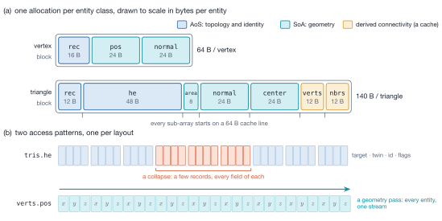
Warning
src/object/object.c is the only file allowed to write a pool
pointer, a capacity, or a block. Everything else changes size
through MFTLObjectReserve(), MFTLObjectReserveAdditional() or
MFTLObjectSetCounts(), and gives memory back only explicitly, through
MFTLObjectShrinkToFit() or MFTLObjectReleasePools().
Three invariants every module may assume¶
1. Half-edges are triangle-indexed¶
Half-edge \(3t+k\) belongs to triangle \(t\), and
he_idx, next_idx and triangle_idx are therefore not stored — they are
arithmetic (MFTLTriFirstHe(), MFTLHeTriIdx(), MFTLHeNextIdx(), MFTLHePrevIdx()).
The half-edge array lives inside the triangle pool at 3× its capacity.
Warning
Anything that creates a triangle must create its three half-edges at \(3t\), \(3t+1\), \(3t+2\).
2. Ownership is a prefix¶
Entities \([0, \nlocal)\) are owned by this rank; \([\nlocal, n)\) are
ghosts. There is no is_ghost field — it would be a second copy of a fact the
index already carries. owner_proc survives only to answer "whose is it" for a
ghost, which the index cannot.
One notion of ownership, not three. An index test, an is_ghost flag and an
owner_proc == rank comparison can all be made to answer the question, and any
two of them can disagree; the prefix is the only one that cannot go stale,
because it is the storage order.
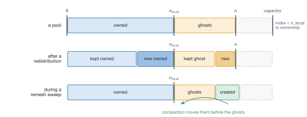
3. Positions live in the SoA and only there¶
verts.pos[3*v+k] is authoritative. There is no second copy and no second index
space: the Morton ordering is applied to the pool (MFTLObjectReorderMorton()),
not stored as a permutation. Storing it as a permutation (sfc_perm /
sfc_inv) is the trap this avoids: a second index space forces a sync function,
a staleness flag and an "unwrapped or not" mode flag onto every consumer, and
every one of those is silent when it is wrong.
Derived arrays and staleness¶
tris.verts and tris.neighbors are rebuildable caches, tracked by
obj->derived:
| Bit | Arrays | Invalidated by |
|---|---|---|
MFTL_DERIVED_TOPOLOGY |
verts, neighbors |
any topology change |
MFTL_DERIVED_GEOMETRY |
area, normal, center |
topology change, rebuild, ghost sync, remeshing operators |
MFTLObjectBuildDerived() rebuilds both arrays, and every MFTL_FOREACH_*
iterator asserts on the bit in Debug.
Vertex motion invalidates nothing, and that is a deliberate property rather than an omission from the table. Geometric consumers gather the authoritative positions through the compact indices and construct seam-corrected edge vectors in registers, so there is no position-derived cache to refresh — an advection pass owes no rebuild before the geometry pass that follows it.
tris.verts and tris.neighbors are redundant with the half-edge records (a
rotation of he.vertex_idx, and he.twin_idx / 3). They are stored for
traffic — 12 B/triangle instead of 48 — not for instructions.
Note
Lookups are arrays. Global ids are dense per entity class and "the
other side of this edge" is already an index. The one hash table in the
library is the global-id → slot table redistribution uses for arriving
entities: a rank holds a scattered subset of a body's id range, so it
switches between a direct array and open addressing by the ratio of id range
to entries (src/communication/comm_internal.h). Do not add another without
saying which lookup genuinely cannot be an array.
Header layering¶
One module = one src/<module>/ directory = one include/mftl_<module>.h.
Every .c includes its own header first, which makes headers self-contained by
construction. A header may only include headers from a strictly lower layer:
| Layer | Headers | Contains |
|---|---|---|
| 0 | mftl_constants.h, mftl_memory.h, mftl_vectoroperations.h, mftl_arrayfunctions.h | macros and plain-C helpers, no MFTL types |
| 1 | mftl_types.h | all structs — the single place they are defined |
| 2 | mftl_topology.h, mftl_geometry.h | inline accessors over layer 1 |
| 3 | mftl_object.h, mftl_ensemble.h, mftl_meshgen.h, mftl_communication.h, mftl_io.h, mftl_remeshing.h, mftl_bvh.h, mftl_topology_change.h | module APIs |
| 4 | mftl_core.h | umbrella for application code; library sources must not use it |
Two checks worth running after touching headers:
# every header must compile alone
for h in include/*.h; do printf '#include "%s"\n' "$(basename $h)" > /tmp/sc.c; \
mpicc -std=c11 -fsyntax-only -Iinclude /tmp/sc.c || echo "NOT SELF-CONTAINED: $h"; done
# the library must export only MFTL* symbols, with no duplicates
nm -g build/lib/libMFTL.a | grep ' T ' | awk '{print $NF}' | grep -v _MFTL # must be empty
nm -g build/lib/libMFTL.a | grep ' T ' | awk '{print $NF}' | sort | uniq -d # must be empty
Object model: Ensemble → Domain → Objects → pools¶
MFTL_Ensemble— oneMFTL_Domainplus the objects of the bodies THIS rank holds entities of (local_objects, sparse and sorted by body id;n_bodies_globalis the size of the body-id space).MFTLEnsembleCreate()is collective;MFTLEnsembleDestroy()cascades to every object it owns.MFTL_Domain— the MPI/physical world shared by all objects: Cartesian grid (cuts[3]),rank_map, the 26-neighbourcomm_graph, global bounds, periodicity. Objects hold a borrowed pointer, set byMFTLEnsembleAddObject().MFTL_Object— one mesh, i.e. two pools plus ID counters and quality statistics.
Note
Bodies are identified by MFTL_Object::global_id, dense in
\([0, \texttt{n\_bodies\_global})\) and handed out by
MFTLEnsembleAddObject(); every rank must add the same bodies in the same
order. A redistribution destroys the object of a body whose entities all
left and creates one for a body that arrived, so an MFTL_Object*, a list
slot and the local count are invalid after it: keep the body id and use
MFTLEnsembleFindLocalObject(). Anything that crosses ranks per body is
indexed by body id; per-body data that stays on the rank is indexed by
local slot.
Where a geometry function lives¶
Geometry appears in two modules and the split is by scope, not by entity type:
| one object, LOCAL, no MPI | every object, COLLECTIVE | |
|---|---|---|
| triangles | MFTLComputeTriangleGeometry() (src/geometry/) |
MFTLEnsembleUpdate() (src/ensemble/) |
| vertices | MFTLComputeVertexNormals() (src/geometry/) |
MFTLEnsembleUpdateVertexNormals() (src/ensemble/) |
An MFTLEnsemble* function is a loop over the object list plus exactly the
collective its result needs; the arithmetic belongs to src/geometry/. The
naming carries the same information, so a call site says which it is without a
lookup.
The two collectives are of different kinds, and that is the interesting part: the triangle statistics need a reduction (a minimum over one rank's partition is not the mesh's minimum), while the vertex normals need an exchange (owned normals are already exact; the ghosts are the half that is missing).
One deliberate exception, and it is performance over tidiness.
MFTLEnsembleUpdate()'s kernel is a file-static function in
src/ensemble/ensemble_update.c rather than in src/geometry/, because it
carries nine live reduction accumulators. Moving it across a translation-unit
boundary would force them into an address-taken struct, which
docs/analysis.md §1.6 measures at 15 %. The kernel stays next to
the reduction it feeds.
Conventions¶
- Functions return
intusingMFTL_SUCCESS/MFTL_ERROR.MFTL_ASSERT(...)compiles toassert()in Debug and to nothing in Release — never put side effects inside it. MFTL_ERROR(−1) doubles as the "no such entity" index sentinel.- Pool sizes change only through
mftl_object.h.Plain, genuinely independent arrays useMFTL_ENSURE_CAPACITY(geometric) orMFTL_RESERVE_ADDITIONAL(exact) frommftl_memory.h.All allocation aborts on OOM by design. - File-static helpers are
snake_case; everything with external linkage isMFTLPascalCase(functions) orMFTL_PascalCase(types). Nothing butMFTL*may be exported. - Formatting follows
.clang-format(Google-based, 2-space indent, 160 columns, Allman braces).
Where this page comes from
This page is generated from pages/architecture.md in the MFTL2_Documentation repository, which is also
what the Doxygen manual reads. Edit that file, not this page.
The per-timestep loop¶
This page is the call-order contract. Everything on it is load-bearing, and most of it is silent when wrong — the mesh stays structurally valid, every integrity check still passes, and the numbers are quietly stale or quietly partial.
Without redistribution¶
When the partition is not being changed this step:
for (int o = 0; o < ens->n_local_objects; ++o) /* 1. advect */
{
MFTL_Object *obj = ens->local_objects[o];
MFTL_FOREACH_OWNED_VERTEX(obj, /* move p[0..2] */ );
}
MFTLEnsembleUpdate(ens); /* 2. geometry+stats */
MFTLEnsembleUpdateVertexNormals(ens, MFTL_NORMAL_WEIGHT_AREA); /* 3. optional */
There is no rebuild step between 1 and 2. Positions are authoritative and
live only in verts.pos; the geometry pass gathers them through the compact
connectivity and builds seam-corrected edge vectors in registers, so moving a
vertex leaves no cached array stale and nothing has to be remembered afterwards.
The normals of OWNED vertices need no communication, because the halo is
vertex-complete (Vertex normals and the vertex-complete halo); MFTLEnsembleUpdateVertexNormals() adds
one ghost exchange so that ghost normals are exact too. A caller that reads owned
vertices only may call the local MFTLComputeVertexNormals() per object instead.
With redistribution¶
/* 1 */ for (int o = 0; o < ens->n_local_objects; ++o)
MFTL_FOREACH_OWNED_VERTEX(ens->local_objects[o], /* move p[0..2] */ );
/* 2 */ MFTLUpdateGhostPositions(ens);
/* 3 */ MFTLEnsembleComputeTriangleGeometry(ens); /* every object, ghosts included */
/* 4 */ MFTLRedistribute(ens); /* invalidates every MFTL_Object* */
/* 5 */ MFTLEnsembleUpdate(ens); /* optional, but see below */
/* 6 */ MFTLEnsembleUpdateVertexNormals(ens, MFTL_NORMAL_WEIGHT_AREA); /* optional */
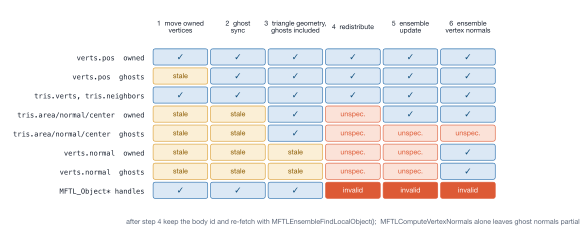
MFTL_Object* held across step 4.Three things about this order are load-bearing, and all three are silent when wrong:
The ghost sync must precede the geometry pass¶
A triangle's three vertices can belong to three different ranks. Computing its centroid before step 2 uses last step's positions for whichever corners are ghosts.
The geometry pass must cover the ghosts too¶
Hence MFTLEnsembleComputeTriangleGeometry(), i.e.
MFTLComputeTriangleGeometry(obj, obj->tris.n) and not tris.n_local, in step 3.
Redistribution routes
triangles by their cached centre; refreshing only the owned ones makes two
ranks disagree about a ghost's destination, and the entity is duplicated or lost
depending on which way the disagreement falls.
MFTLRedistribute() guards this: a body whose MFTL_DERIVED_GEOMETRY bit is
clear — no pass over all its triangles since the last ghost sync, topology
change or redistribution — has its geometry recomputed before it is routed,
counted in n_objects_centres_recomputed and warned about once. That covers a
skipped step 3, an owned-only step 3 and a step 3 before step 2, at the price of
the pass you skipped. Moving vertices after step 3 is not seen, but every
holder then routes by the same old centres: one step behind, still consistent.
Generated meshes leave the generator with current geometry.
There is deliberately no geometry cache to refresh in the loop¶
MFTLComputeTriangleGeometry() dispatches between a compact-index path and the
construction-time half-edge fallback, and both gather the current positions.
Persistent per-triangle frames existed here once and were removed: they were
72 B/triangle of state that the documented loop wrote and discarded unread, and
deleting them was worth 1.23× on the whole timestep. The measurement is
docs/analysis.md §1.2 in the library.
Pointers do not survive a redistribution¶
A rank holds an MFTL_Object exactly for the bodies it holds entities of: a body
whose entities all left is destroyed, one that arrived is created. An
MFTL_Object*, a list slot and n_local_objects are invalid after step 4. Keep
the body id and re-fetch with MFTLEnsembleFindLocalObject() (which returns
MFTL_NULL when this rank no longer holds the body). Advecting through a stale
pointer lost 93 % of a sphere's volume in twelve steps at np = 2 while every
structural check passed (test_leveque_parallel_conserves).
What a redistribution leaves behind¶
Warning
Redistribution invalidates all cached geometry except the vertex positions.
It returns an object with valid topology, valid positions and
MFTL_DERIVED_TOPOLOGY set (MFTL_DERIVED_GEOMETRY clear). But:
| Array | State after MFTLRedistribute() |
|---|---|
verts.pos |
valid |
tris.verts, tris.neighbors |
valid (emitted during the rebuild) |
tris.area, tris.normal, tris.center |
unspecified |
verts.normal |
unspecified |
That is what buys the 3× smaller wire format: the alternative is to pack the areas, normals and centres onto the wire so that a timestep ends with valid triangle geometry. A solver that consumes triangle geometry after the redistribution therefore owes one more pass.
examples/parallel_advection_redistribute_list.c runs it as step 5 and times it
separately, because a redistribute timing that excludes the pass it defers
credits the redistribution with a saving it has not finished paying for.
Note
Step 5 is bound by first touch, not by its kernel. The geometry pass that restores what redistribution drops runs on pools the redistribution has just rewritten, and costs 6.4 ns/triangle against 2.9 ns for the same function on a resident mesh.
Vertex normals and the vertex-complete halo¶
MFTLComputeVertexNormals() accumulates
over all triangles including ghosts. An owned vertex therefore gets the exact answer iff every triangle incident to it is present locally.
That is a stronger requirement on redistribution than "one layer of edge-adjacent ghost triangles", and it is exactly what buys the pass zero communication. The redistribution halo rule — a triangle travels to the owner of each of its three corners as well as each of its three edge neighbours — is what supplies it.
Warning
Ghost vertices hold a PARTIAL SUM, correctly normalised and quietly
wrong. That is the trap: it looks exactly like a real normal.
MFTLEnsembleUpdateVertexNormals() closes it with one ghost exchange.
Call that unless you are certain you read owned vertices only.
Which calls are collective¶
Collective — every rank of the ensemble's communicator must call them, including ranks that hold no body:
MFTLEnsembleCreate(),MFTLEnsembleUpdate(),MFTLEnsembleUpdateGlobalCounts(),MFTLEnsembleUpdateVertexNormals(),MFTLEnsembleMeanEdgeLength()MFTLEnsembleReduceBodies(),MFTLEnsembleExscanBodies()MFTLGenerateSphere(),MFTLPublishGeneratedBodies()MFTLRedistribute(),MFTLRedistributeWithOwners(),MFTLRedistributeSetSkipUnchangedBodies()MFTLUpdateGhostPositions(),MFTLUpdateGhostVertexNormals()MFTLWriteVtu()MFTLRemeshEnsemble(),MFTLRemeshEnsembleParallel(),MFTLRemeshEnsembleDispersed(),MFTLRemeshChooseStrategy(),MFTLRemeshMeasureBodies()MFTLSpatialHaloResolveRadii(),MFTLExtendSpatialHalo(),MFTLExtendSpatialHaloNearBodies(),MFTLEnsembleIntersectObjects()MFTLTopologyDetectEvents(),MFTLEnsembleReconstructBodies(),MFTLEnsembleApplyTopologyChanges()
Deliberately local — each rank works on its own partition:
MFTLObjectBuildDerived(),MFTLObjectReorderMorton()MFTLBuildIndexedMesh(),MFTLBuildTopologyFromIndexList(),MFTLGenerateSphereLocal()MFTLComputeTriangleGeometry(),MFTLEnsembleComputeTriangleGeometry(),MFTLComputeVertexNormals()MFTLRemeshObject(),MFTLRemeshMarkFrozen(),MFTLDilateFrozenBand(),MFTLDetectFeatures(),MFTLSmoothTangential(),MFTLMeanEdgeLength()MFTLRasterizeSignedDistance(),MFTLExtractLevelSet(),MFTLBuildMeshFromLevelSet(),MFTLLabelConnectedComponents(),MFTLTopologyLattice()MFTLWriteVtk()MFTL_GenerateLBVH(),MFTL_RefitLBVH(),MFTL_IntersectObjects()
test_vertex_normals_np3 exists to make an accidentally-introduced collective in
the local list deadlock in CI.
Warning
MFTLRemeshEnsemble() dispatches: nproc == 1 takes the serial path
unchanged; above that MFTLRemeshChooseStrategy() (itself collective — it
measures the bodies) picks the dispersed or the spanning driver. Both
drivers must be reached by every rank, so the choice is made from
reduced data and never from anything local. Two ranks entering different
drivers is an immediate deadlock with no diagnostic.
Adding remeshing to the loop¶
Remeshing is not a per-timestep necessity for every solver, but when it is in the loop the ordering constraint is:
The remesher returns the canonical partition with current triangle geometry
(verts.normal excepted), so no further pass is owed for triangle quantities.
Remeshing must follow the redistribution, not precede it, because the parallel
remesher's freeze test reads the current partition: an entity is frozen exactly
when some other rank holds a copy of it, and MFTLRemeshMarkFrozen() derives that
from corner >= verts.n_local || neighbour >= tris.n_local. Derive the target
length with the collective MFTLEnsembleMeanEdgeLength(), never the rank-local
MFTLMeanEdgeLength().
Warning
MFTL_RemeshParameters::parallel_phase_budget defaults to 32, which
means run until no rank wants to do anything. That is right for a
one-shot remesh and measurably wrong inside a per-timestep loop, in both
directions at once — worse volume conservation, worse triangle quality
and five times slower. Set it to 2–8 for a loop. The full
measurement table is on the field's documentation.
Note
Remeshing renumbers global ids at the end of every pass, and it has to:
splits hand out fresh ids and collapses retire them, so ids stay unique but
stop being dense — and src/communication/ sizes its arrival lookup tables
from next_*_gid. The cost is that pool indices and global ids are both
unstable across a remesh, so nothing external may hold either.
Adding contact detection to the loop¶
MFTLEnsembleIntersectObjects() builds one BVH per held body, grows its own
spatial halo (MFTLExtendSpatialHaloNearBodies()) and discards it again. Call
MFTLExtendSpatialHalo() yourself only when you need the halo for something else.
Warning
The spatial halo is transient and cannot be otherwise.
Redistribution keeps only owned triangles, so a halo cannot survive a
repartition. Each MFTLExtendSpatialHalo() replaces the previous
patches; grow it after redistribution.
Note
Contact detection is discrete-time: there is no CCD. A pair whose relative displacement in one step exceeds the sum of their sizes passes through without ever being coincident at a sampled instant, and both samples correctly report nothing. This bites when the timestep is set by a CFL condition on the flow rather than by the approach velocity of two surfaces, which is the normal case.
Adding topology changes to the loop¶
MFTLEnsembleApplyTopologyChanges() goes where a remeshing pass would: after the
vertices moved and the ghost positions were synchronised, and before the geometry
a solver reads. A call that detects nothing changes nothing; one that
reconstructs closes with MFTLRedistribute() (and the remesh in
MFTL_TopologyOptions::remesh), so every pointer rule above applies. Bodies can
appear and disappear: n_bodies_global is the size of the body-id space, and
ids of vanished bodies are never reused.
Where this page comes from
This page is generated from pages/timestep.md in the MFTL2_Documentation repository, which is also
what the Doxygen manual reads. Edit that file, not this page.
Invariants worth preserving¶
Every entry below is a property that must survive any change, the reason it exists, and the test that guards it. They share one characteristic: breaking any of them is silent. The mesh stays structurally valid, the integrity checks still pass, and the picture still renders — the numbers are just wrong.
Geometry¶
A normal is always a unit vector, at every scale¶
MFTLGetTriangleProperties(), src/geometry/triangle_geometry.c,
src/ensemble/ensemble_update.c and MFTLNormalizeVector() all compute
Two tempting spellings are wrong:
- Clamping \(\norm{\vect{v}}^2\) before the square root floors the
magnitude at \(\sqrt{10^{-12}} = 10^{-6}\) — and, where an area is derived
from the same \(m\), floors that at \(5\times10^{-7}\). So
quality.min_triangle_areacould never report a degenerate triangle, and \(q = 4\sqrt{3}A/(a^2+b^2+c^2)\) became unbounded above; an average \(q\) of 1.023 was measured on a degenerate mesh. - Clamping the divisor with
MFTL_MAX(mag, tiny)keeps the instruction count but only moves the floor. Attiny = MFTL_VERYVERYSMALLa triangle with \(10^{-8}\) edges still came out with a normal of length 0.112.
Warning
A short normal is the most dangerous shape of wrong available here: it points the right way, so every sign test, winding check and picture still passes, while it silently scales surface tension and every other quantity built from it.
The test against zero has no cliff and costs one instruction (fcmp+fcsel
against fmax): 7.33 → 7.41 ns/tri, +1.1 %. Pay it.
Guarded by test_triangle_normals_are_unit_at_every_scale (\(10^{-8}\) …
\(10^{8}\), all three kernels), test_normalize_is_unit_across_magnitudes
(\(10^{-150}\) … \(10^{150}\)), test_normals_of_a_whole_mesh_are_unit,
test_a_very_small_triangle_is_measured_exactly, and
inv_triangle_normals_are_unit / inv_vertex_normals_are_unit in
tests/test_mesh_invariants.h — which are deliberately not part of
inv_mesh_is_sound(), because redistribution leaves tris.normal unspecified by
design.
The expression must stay identical in the walk and stream kernels, or
test_triangle_geometry_paths_are_bit_identical fails.
Face normals point outward, everywhere¶
The icosahedron face table in src/mesh_creation/sphere_creation.c is wound
counter-clockwise as seen from outside, and the 1-to-4 subdivision emits every
sub-triangle in its parent's rotational order. This is what makes the enclosed
volume positive under the divergence theorem and fixes the sign of surface
tension and of the indicator function.
Guarded by test_triangle_winding_is_outward,
test_enclosed_volume_is_positive_and_converges.
Never compare two identical vectors with acos(a·b)¶
The arc cosine has infinite derivative at 1, so a dot product one ulp below 1 reports \(1.5\times10^{-8}\) rad — a noise floor of \(\sim10^{-6}\) degrees regardless of how exact the inputs are. Use the chord \(\norm{\vect{a} - \vect{b}}\).
tests/test_vertex_normals.c records the false failure this produced.
Topology¶
"No twin" and "mesh boundary" are different statements¶
Only one of them is partition-independent.
| Statement | Meaning | Partition-dependent? |
|---|---|---|
twin_idx == MFTL_ERROR |
no partner in this partition | yes — true at an open surface's rim and at a ghost halo's outer edge |
flags & MFTL_FLAG_BOUNDARY |
no partner anywhere in the mesh | no — a property of the surface |
MFTL_FLAG_BOUNDARY is written once by MFTLMarkMeshBoundary() while the mesh is
still complete, and from then on travels with the entity. Re-deriving it from
twin_idx after redistribution would promote every halo rim into a fake
boundary.
A boundary vertex has one more neighbour than incident triangles¶
The closing edge of an open fan is reachable only as an incoming half-edge.
MFTLGetVertexOneRingVertices() handles it; MFTLGetVertexOneRingHalfedges()
deliberately does not, because its contract is outgoing half-edges.
Guarded by test_one_ring_at_a_boundary_vertex_has_one_extra_neighbour.
A half-edge's global ID is 3 * triangle_gid + k, mesh-wide¶
Established by MFTLBuildTopologyFromIndexList(), preserved by
MFTLObjectReorderMorton() (which moves half-edge triples as a unit) and by
redistribution. It is the wire-format half of implicit indexing: half-edge global
IDs are never transmitted, the receiver reconstructs them.
Guarded by inv_halfedge_gids_are_implicit.
Global IDs are a dense permutation of [0, n) per entity class¶
And next_*_gid == n_* after generation. Subdivision retires the whole previous
generation of triangles and half-edges, so those counters restart at zero;
next_vertex_gid does not, because old vertices are carried over and keep their
IDs.
Density is what lets a receiver size a lookup table by ID range instead of hashing — which is why remeshing must renumber at the end of every pass.
Guarded by inv_global_ids_are_dense.
I/O¶
Only OWNED entities go into a .vtu¶
A ghost is a copy of a triangle another rank owns, so writing the whole pool puts every halo triangle in the merged dataset once per rank holding it. The picture is unchanged (the copies are coincident) and every integral the visualisation tool computes over the surface is wrong by the halo fraction, silently.
include_ghosts asks for the whole pool deliberately, for looking at the
halo.
Guarded by test_ghost_inclusion, test_cell_count_is_the_owned_count.
The periodic-wrap test has no tolerance, on purpose¶
It asks whether a reconstructed corner \(\vect{p}_0 + \vect{e}\) left the domain box. A false positive costs three extra points carrying correct coordinates and renders identically; a false negative draws a triangle across the whole domain. Any slack added to suppress the first buys the second, so there is none.
Guarded by test_wrap_detection_paths_agree.
MFTLWriteVtu() must never write tris.area or tris.normal¶
Nothing on the object can say they are current — MFTL_DERIVED_GEOMETRY cannot
see vertex motion — and a redistribution leaves them
undefined by design, so a production file containing them would look right and be
stale.
MFTLWriteVtk() writes tris.area and verts.normal deliberately, because the
raw dump's contract is to show what is actually in memory.
Communication¶
An extent is a centre plus a half-width, never a (lo, hi) box¶
In src/communication/spatial_halo.c, for what a rank publishes about its share
and for each triangle's own contribution. "Near" is the minimum-image distance
between centres against the sum of half-widths.
A box gets it wrong in both directions at once:
- It misses. Two shares meeting across the seam are a domain length apart in stored coordinates, so min/max says they do not touch — and because the classification decides what is sent, the miss lands one stage before anything the periodic image loop can see, so nobody reports the contact.
- It over-sends. A share holding one seam-straddling triangle has a box
spanning the whole domain, because
MFTLGetTriangleBounds()is correctly seam-consistent and puts that triangle's corners just outside the box on one side.
Measured at np = 27 on a seam contact: 314 triangles ghosted with boxes against 56 with intervals, and 320 against 0 for a placement with no cross-rank contact at all. The payload is nine doubles per body a rank holds.
A rank's own extent is measured in two frames, raw and shifted by half a domain, keeping the tighter per axis.
Guarded by test_contact_through_the_seam_survives_the_decomposition,
test_a_seam_straddling_body_is_not_measured_as_domain_sized.
A pre-filter must be strictly MORE permissive than the test it short-cuts¶
The halo's per-triangle intervals are widened by the contact margin, so an un-widened macro extent is stricter than what it stands in for and rejects the whole neighbour in exactly the regime the margin exists for.
Overlapping bodies hide it completely — their raw extents intersect anyway — so only a proximity contact at a rank boundary reveals it.
Guarded by test_the_tolerance_threshold_is_exact_from_both_sides.
A spatial ghost is a triangle in a SHADOW OBJECT¶
MFTLExtendSpatialHalo() puts what the neighbours sent into the halo's patch for
that body (MFTLSpatialHaloPatch()) — an ordinary, self-consistent MFTL_Object
with n_local == 0, twins linked within the patch, derived arrays built. It is
deliberately not in ens->local_objects, so redistribution and both ghost
syncs never see it.
Appending them to the body's own ghost suffix instead — which looks free because the ownership prefix is untouched — fails for two reasons that are invisible until they bite:
- Four passes bounded by
tris.nrather thann_localchange silently: the Morton bounding box inreorder_vertices(a partner body across the domain coarsens the cells for the owned mesh),MFTLMeanEdgeLength()(each appended triangle contributes three twin-less half-edges, so the remeshing target length is set partly by another body), the vertex-normal scatter, andMFTLRebuildTwins()(which re-pairs by vertex slot and can weld two bodies together). - There is no good answer for the arriving vertex GIDs. De-duplicate them
onto existing slots and
inv_halo_is_vertex_completebreaks; give them fresh slots andinv_local_global_ids_are_uniquebreaks.
Doing it properly needs the two-way ownership split to become three-way, i.e. a
change to arch_inv_prefix.
Guarded by test_halo_does_not_touch_the_bodies,
test_halo_patch_is_a_valid_object.
Remeshing¶
MFTL_FLAG_FROZEN means REPLICATED, not "near a cut plane"¶
An owned entity is frozen exactly when some other rank holds a copy of it, and
MFTLRemeshMarkFrozen() derives that from the rule redistribution sent by:
Two streaming reads, six integer compares, no distance test and no message. Three things follow, and all three are load-bearing:
- A vertex is frozen if any incident triangle is, so an unfrozen vertex has every incident triangle owned and unreplicated — which is why gating a collapse, whose modified set is an entire fan, is two flag tests.
- Combined with the vertex-complete halo, every fan an approval predicate walks is complete, so the link condition, the wing valences and the fold-over test give the same answers they would on the whole mesh.
- Every ghost in a rank's pool is frozen on its owner. It is here because this rank owns a corner or an edge neighbour of it, which from the owner's side is the definition of replicated. So ghost copies are still exact when the sweeps finish, and a phase needs no ghost position sync before the next migration.
Guarded by ghosts_agree_with_owners (tests/test_remeshing_parallel.c) and
frozen_matches_replication — the "replicated but not frozen" direction is the
fatal one, and its symptoms appear one or two migrations after the cause.
Note
The precondition this rests on is \(h_k > 4\delta\) per cut axis, and
what it buys is that each axis then has at most one bad shift value —
which is what makes eight placements a covering set rather than a heuristic.
The derivation, the orthogonal-array argument behind the phase table, and
what happens when the condition fails are in rem_covering.
A shifted cut plane needs a FLOOR, not a truncation¶
MFTLRemeshOwnerProc() biases by cuts before the (int) cast on a periodic
axis. Without the shift the argument is non-negative for any wrapped position, so
(int) is floor; with a shift of up to \(h/2\) it reaches \(-0.5\),
where (int) truncates towards zero and attributes the sliver
\([\text{min}, \text{min} + \text{shift})\) to cell 0 instead of to cell
\(\text{cuts}-1\) across the seam.
Warning
What makes that hard to catch is that the wrong rule is still a rule. Every rank computes the same answer, the partition stays consistent, and every structural invariant still holds. The one thing that changes is that the seam plane never moves, so an entity on it is frozen in every phase of the schedule and ends up in a permanently un-remeshed band.
A body away from the seam never enters the sliver, so both original spanning tests passed under the broken rule. Found by mutation testing.
Guarded by test_a_sphere_on_the_periodic_seam_remeshes_everywhere, which
fails on convergence and reports the sphere as an open surface with 78 boundary
half-edges.
The same reasoning applies to MFTLRemeshMeasureBodies() one level up: it averages
a periodic coordinate as an angle (circular mean, atan2 of the
area-weighted mean direction), because the arithmetic mean of a seam-straddling
body's coordinates lands in the middle of the domain and its radius comes out as
half the box. Nothing fails — the body is simply classified SPANNING forever.
Guarded by test_a_seam_straddling_droplet_is_not_measured_as_domain_sized.
Remeshing reaches the network through its own file¶
Every MPI call the remesher makes is in src/remeshing/remesh_comm.c.
test_remeshing_mpi_is_confined — a CMake source check, not a runtime one —
fails the build if that stops being true, because no runtime test can see it.
The rule exists because the first version broke it in two places that were individually small, correct and fully tested, and collectively the wrong shape: a feature used a few times per hundred timesteps paid for once per timestep, in the two loops the library is most careful about.
MFTLGetOwnerProc() gained a per-axis cut-plane offset and a periodicity branch.
That function is the body of compute_owners, i.e. it runs once per vertex
and once per triangle on every redistributed timestep. Measured at 1.70× —
1.79 → 3.05 ns/entity, 42 → 89 instructions for the same loop.
What replaces both is MFTL_OwnerMap — one seam, a NULL pointer on the production
path, and one predicted branch per body hoisted out of both loops.
A rank must not judge work it only holds as a GHOST¶
The first parallel convergence certificate counted "approved, then refused by the freeze gate". It reported 3 permanently blocked operations on an np = 4 sphere that was in fact fully converged: a rank examines every half-edge in its pool, ghosts included, and around a ghost vertex its one-ring is incomplete, so it approves a collapse the owner correctly rejects.
The gate therefore runs before the approval (it is cheaper anyway), and the
certificate is count_hidden_edges — out-of-band edges hidden by the freeze gate
of the operator that would fix them, which needs no fan walk and so cannot be
given a wrong answer by a partial view (The convergence certificate).
Every clause of an approval predicate is silent when removed¶
MFTLCollapseApproved() refuses on five grounds and none of them announce
themselves:
| Clause | What its absence produces |
|---|---|
| link condition | welds two sheets into a non-manifold vertex whose one-ring walk then silently visits half the fan |
| fold-over | an inverted triangle |
| stretch bound | split and collapse oscillate forever |
| wing-valence floor | a tetrahedron passes the neighbour count and still dissolves |
| feature/boundary link condition | two vertices on a feature curve joined by an edge not on that curve are a chord across the surface; collapsing it pinches the curve inwards |
The last two are easy to omit because the obvious form of the link condition does not imply them. On an open patch the feature clause's absence serrates the rim; on a cube it merges two sharp edges into the middle of the face between them.
Guarded by test_collapse_refuses_to_dissolve_a_tetrahedron,
test_remesh_of_an_open_patch_keeps_its_rim.
Feature classification must describe the mesh being SMOOTHED¶
Not the one the sweeps started from. MFTLRemeshObject() calls MFTLDetectFeatures()
twice per iteration for this reason.
A split of a rim edge creates a midpoint that is on the rim, and a vertex the smoother believes to be free gets the 2D tangent-plane treatment and slides straight off it — after which the surface has a serrated notch that no structural check can see, because the result is a perfectly valid manifold with a perfectly valid boundary.
Smoothing is a PROJECTION¶
The feature class chooses the subspace: 2D tangent plane, 1D ridge tangent, 0D locked. Stated that way the three cases are one idea.
Moving a ridge vertex to the midpoint of its two feature neighbours — the full displacement, no projection — is the 2D shrinkage problem reintroduced on a 1D curve: a regular 24-gon ridge collapses to 0.84 of its radius in 20 sweeps, which is a large systematic error applied precisely where the geometry was supposed to be preserved.
Guarded by test_a_regular_ridge_is_a_fixed_point, which asserts drift below
\(10^{-12}\).
Two feature edges make a ridge point only if the curve runs STRAIGHT¶
Counting alone makes the four corners of an open patch ridge points, free to
slide along the diagonal between their neighbours — off the patch.
feature_corner_angle is a separate threshold from
feature_angle_threshold because it applies where that one does not: a mesh
boundary is a feature curve at any dihedral threshold, including a disabled one.
Contact detection¶
Periodicity is two problems, and they need two different fixes¶
- Within an object, a triangle straddling a seam has wrapped vertices, so a centroid built from raw coordinates lands in the middle of the domain and its AABB spans the box. Fixed by gathering the current corners and applying minimum-image edges to build every primitive.
- Between objects, two bodies on opposite faces are neighbours and no per-triangle arithmetic can see it. Fixed by traversing the pair once per periodic image (up to 27, each rejected by one root-AABB test).
A straddling object's root box legitimately spans the domain and is not a
bug — same accepted cost, for the same reason, as MFTLObjectReorderMorton().
Guarded by test_periodic_morton_of_a_straddling_object,
test_contact_across_a_periodic_face.
The contact envelope scales with the body, not the process count¶
An absolute envelope (say \(10^{-4}\) for the box inflation and \(10^{-6}\) for the proximity) is correct at exactly one length scale.
\(R\) is half the longest side of the root box, not half its diagonal, so
it equals the radius for a sphere and factor means what it says. It is measured
over one rank's partition, so the distributed pipeline overwrites it with the
body's global radius from a per-body reduction over its holders — otherwise
splitting a droplet over eight ranks would change the separation at which
contact is detected.
Guarded by test_detection_at_two_disparate_length_scales,
test_tolerance_is_independent_of_the_partition.
A distributed contact is reported by the A-side owner, and only that rank¶
So a BVH is built over owned triangles only (including the redistribution
halo makes two ranks report the same contact, exactly as writing ghosts into a
.vtu double-counts the surface), only object B's triangles travel, and the
traversal skips any leaf pair whose A side is remote.
Get it wrong in one direction and cross-rank contacts are missed; wrong in the
other and every cross-rank contact force is applied twice.
test_distributed_contacts_match_the_serial_answer compares the gathered set
against the answer computed on one rank while it still held the whole mesh, which
is the only check that rules out both at once.
MFTL_Orient3D is adaptive; nothing else in src/bvh/ is¶
It is the only predicate whose sign decides the answer — Guigue–Devillers
branches on it up to eight times per pair (six classify the corners against
the two planes, two more in check_min_max; the permutation cascade evaluates
none of its own, branching on signs already computed), and a wrong sign gives a
clean "no intersection" for two triangles that cross. Everything else there degrades
continuously.
examples/orient3d_predicate_profile.c measures the trade both ways and the
answer is not one-sided: the plain determinant did not misclassify once in 20 000
samples at gaps down to \(10^{-12}\) of the body size (three orders below where
a lubrication model works), and only fails at \(10^{-14}\ldots10^{-16}\). It is
kept because the cost is ≤ 6.2 % of a full MFTL_TriTriProximity() call (2.00× on
the predicate, but the narrow phase is dominated by its fifteen distance
sub-tests) and the failure it removes is silent.
Topology changes¶
The reconstructed surface is independent of the process count¶
Four things keep it so, each silent when broken because every rank still produces a valid mesh:
- each rank rasterises only the triangles it OWNS, and the merge rule (smaller \(|\phi|\), ties towards negative) is commutative and associative, so the merged field equals a serial rasterisation bit for bit;
- the event list is canonical (points snapped to a quarter of \(\max(\min\delta, \Delta x)\) and merged on bodies, kind and cell);
- component labels are the smallest lattice triangle key, which every holder computes alike;
- a marching-cubes vertex is positioned from WRAPPED node indices, so two ranks
reaching one lattice edge across a periodic seam produce one position and one
owner (
test_seam_vertices_get_one_owner_on_every_rank).
tests/test_topology_change.c compares every scene against a rank-0
MPI_COMM_SELF rerun; the surfaces agree to \(10^{-12}\) at np = 1, 2, 4, 8
and 27.
An event is classified by the side its gap is on¶
Two opposing triangles each BEHIND the other enclose liquid (breakup); each in FRONT, a film of the other phase (coalescence). "Within one body = breakup, between two = coalescence" is wrong both ways: a rolled-up cap coalesces with its own stem, and the liquid film between a drop and a bubble inside it breaks between two bodies. Hence clusters are rasterised as the distance to the UNION of their surfaces, signed by the nearest one.
The size floor is taken twice¶
On the marching-cubes surface and again after the optional remesh: a satellite
that clears the floor as slivers can come out of the remesh as a tetrahedron that
the collapse approval refuses to dissolve
(test_a_satellite_the_remesher_collapses_is_discarded).
How the tests express these¶
tests/test_mesh_invariants.h holds the structural checks a mesh must satisfy —
implicit indexing, twin symmetry, out_he really outgoing, derived arrays
agreeing with the records, ownership prefix, dense global IDs.
Use inv_mesh_is_sound() after any operation rather than re-deriving them, and
inv_partition_is_sound() after anything distributed. The latter adds the three
statements that only mean something once a mesh is spread over ranks:
- local global-ID uniqueness,
- a vertex-complete halo (
inv_halo_is_vertex_complete), which is exactly whatMFTLComputeVertexNormals()needs to be communication-free, - every owned triangle having all three edge neighbours.
Where this page comes from
This page is generated from pages/invariants.md in the MFTL2_Documentation repository, which is also
what the Doxygen manual reads. Edit that file, not this page.
Modules
The eleven modules¶
One module = one src/<module>/ directory = one include/mftl_<module>.h.
Each directory carries a README.md that explains the architecture and the
theory of what lives in it. Those files are bound into this manual as full pages,
and they are also the first thing to read in the repository itself.
| Directory | Public header | Theory page | Layer |
|---|---|---|---|
src/arrayfunctions/ |
mftl_arrayfunctions.h | src/arrayfunctions/ — Sorting and duplicate removal |
0 |
src/object/ |
mftl_object.h | src/object/ — The mesh container |
3 |
src/topology/ |
mftl_topology.h | src/topology/ — Half-edge connectivity |
2 |
src/geometry/ |
mftl_geometry.h | src/geometry/ — Periodic-aware geometry |
2 |
src/mesh_creation/ |
mftl_meshgen.h | src/mesh_creation/ — Mesh construction |
3 |
src/ensemble/ |
mftl_ensemble.h | src/ensemble/ — The library handle and the per-body collectives |
3 |
src/communication/ |
mftl_communication.h | src/communication/ — Distributed memory |
3 |
src/remeshing/ |
mftl_remeshing.h | src/remeshing/ — Isotropic surface remeshing |
3 |
src/bvh/ |
mftl_bvh.h | src/bvh/ — LBVH and contact detection |
3 |
src/topology_change/ |
mftl_topology_change.h | src/topology_change/ — Breakup and coalescence |
3 |
src/io/ |
mftl_io.h | src/io/ — Mesh output |
3 |
How they depend on each other¶
The dependency graph is acyclic by construction, because a header may only include headers from a strictly lower layer (Header layering).
┌──────────────┐
│ mftl_core.h │ layer 4, application only
└──────┬───────┘
┌──────────┬──────────┬──┴───────┬────────────┬───────────┐
object ensemble meshgen communication io remeshing bvh topology_change
└─────────┴─────────┴───────────┴───────┴─────┴────────┴──────┘ layer 3
┌──────┴───────┐
topology geometry layer 2
└──────┬───────┘
mftl_types.h layer 1
│
constants memory vectorops arrayfunctions layer 0
The module-to-module dependencies at layer 3 worth naming:
- remeshing → communication. The distributed drivers migrate entities, and
they do it through
MFTLRedistributeWithOwners()andMFTL_OwnerMaprather than by growing the production ownership rule. All of it is confined tosrc/remeshing/remesh_comm.c. - bvh → communication. The distributed contact pipeline needs the spatial
halo, which
src/communication/spatial_halo.csupplies as a standalone shadow object per body. - topology_change → bvh, meshgen, ensemble, communication, remeshing. The one
module that is a CLIENT of the others by design: detection is the contact
pipeline with self-pairs, extraction is the marching cubes generator, ids come
from the per-body scan, the result goes back through
MFTLRedistribute()and, optionally,MFTLRemeshEnsemble(). Its public header includes onlymftl_types.h; the dependencies are in its sources, and all of its MPI is insrc/topology_change/topo_comm.c.
What each one owns¶
arrayfunctions¶
Stable LSD radix sort over 8-bit digits, for keys and key/value pairs, plus duplicate removal. The only algorithm in the library with no mesh in it.
object¶
The pool lifecycle. The only place a pool pointer, a capacity or a block is
written. Also the derived-array rebuild and the Morton renumbering.
topology¶
Twin rebuilding, boundary marking, integrity checking. The navigation itself is
static inline in the header, because it is one or two arithmetic ops.
geometry¶
Triangle area/normal/centroid, area- or angle-weighted vertex normals, the closest
point on a triangle, and signed-distance rasterisation onto a lattice window —
all periodic-aware, all local. The collective wrappers live in ensemble.
mesh_creation¶
Indexed-list → half-edge conversion, the icosphere generator built on top of it, and marching cubes with a table GENERATED from one face rule and an extractor that names every vertex by the lattice edge it lies on.
ensemble¶
The library handle, the MPI topology setup, and the two fused per-timestep collectives.
communication¶
Redistribution, ghost synchronisation, the non-blocking exchange engine, and the spatial halo. Four files, four distinct jobs.
remeshing¶
Split/collapse/flip/smooth, feature detection, compaction, and two distributed schedules around the same serial kernel. The largest module, and the only one whose MPI is confined to a single file by a build-time check. Its theory page carries the call graph of each distributed driver, with the decision each one takes at every branch.
bvh¶
Linear BVH build and refit, dual-tree traversal, and the exact triangle–triangle predicates. Its theory page derives the Morton key and the radix split, the outward-rounded fit, the two periodicity fixes, the scale-relative contact envelope, the ownership rule for distributed contacts, and the Guigue–Devillers test with Shewchuk's adaptive orientation predicate.
topology_change¶
Breakup and coalescence: opposing-triangle detection within and between bodies, union-field signed distance with an explicit bias at each event, distributed marching cubes on the partition as it stands, component labelling, dense ids, and a Newton volume correction. Nothing migrates, and the reconstructed surface is the same at every process count.
io¶
VTK legacy dump, and the parallel VTK XML writer: ASCII or raw binary with one file per rank, or one shared raw-binary file written with MPI-IO.
Where this page comes from
This page is generated from pages/modules.md in the MFTL2_Documentation repository, which is also
what the Doxygen manual reads. Edit that file, not this page.
src/arrayfunctions/ — Sorting and duplicate removal¶
Public header: include/mftl_arrayfunctions.h · Layer: 0 ·
Module group: mftl_arrayfunctions
A stable least-significant-digit (LSD) radix sort for 32-bit signed and 64-bit
unsigned keys, with key-only and key/value (structure-of-arrays) variants, plus
inline helpers for duplicate removal and binary search. radixsort.c derives
from Cameron Hart's zlib-licensed radix sort (notice preserved in the file).
| Caller | Key | Purpose |
|---|---|---|
MFTLObjectReorderMorton |
63-bit Morton code; min vertex index | space-filling-curve renumbering of the pools |
MFTL_GenerateLBVH |
63-bit Morton code | the sorted order is the LBVH leaf order |
src/communication/redistribute.c |
vertex index | de-duplicate a destination's vertex list |
src/topology_change/ |
body id | canonical body sets of a cluster |
Stability is a correctness requirement. Primitives with equal Morton codes
must come out in a deterministic order, or two runs build different trees; and
MFTLUniquePairs keeps the first value of each run of equal keys, which after
a stable sort is a rank-independent choice.
Algorithm¶
An LSD radix sort performs \(\lceil b/r \rceil\) stable counting-sort passes over \(n\) keys of \(b\) bits, \(r\) bits (one digit) at a time:
Each pass computes, per digit value \(j\), the exclusive prefix sum \(o_j = \sum_{i<j} c_i\) of the digit histogram \(c\) and scatters every key to position \(o_{d(k)}\), incrementing that offset. Scanning the input in order makes each pass stable, so after the pass on digit \(p\) the keys are sorted by digits \(0\ldots p\).
Three refinements, none of which changes the result:
- One counting pass for all digits.
init_histograms32/64read every key once and update all \(b/r\) histograms (4 KiB / 8 KiB, resident in L1). The same pass tests whether the input is already sorted, in which case no scatter runs. - Constant digits are skipped. If the bucket of the first key's digit holds all \(n\) keys, the digit is constant and the pass is the identity. Global ids are dense in \([0, n)\), so for fewer than 65 536 entities the two top bytes of a 32-bit id are constant and half the passes vanish. An odd number of executed passes ends in the scratch buffer and is copied back.
- Signed order for free. For the most significant digit of an
intkey the prefix sum starts at bucket 128 and wraps: \(o_{128} = 0,\ o_{129} = c_{128},\ \ldots,\ o_0 = \sum_{j=128}^{255} c_j\). Negative keys (top byte \(\ge\) 0x80 in two's complement) therefore precede non-negative ones without any key being modified.
Small inputs¶
At \(n \le 32\) a stable insertion sort replaces the radix passes: the
\(n\)-independent costs (histogram clearing, 256-entry prefix sums per pass,
scratch allocation) exceed the \(O(n^2/4)\) moves of an L1-resident insertion
sort. Measured (ns/call, Apple M-series, -O3):
| n | radix, random | insertion, random | radix, descending | insertion, descending |
|---|---|---|---|---|
| 16 | 577 | 78 | 277 | 75 |
| 32 | 749 | 496 | 323 | 287 |
| 48 | 859 | 866 | 369 | 639 |
| 64 | 973 | 1310 | 415 | 1299 |
32 is the largest size at which insertion sort wins on both random and descending (its worst case) input. Redistribution sorts one small buffer per neighbour rank, so the small path is the common one there.
Interface notes¶
MFTLRadixSort(keys, temp, n)andMFTLSortPairs(keys, vals, n)dispatch on the key type with C11_Generic; under C99 they fall back to the 32-bit variants so that 64-bit keys fail to compile instead of mis-sorting.- The key type is the ordering contract:
intsorts signed,uint64_tsorts unsigned. MFTLUniqueIntArray/MFTLUniquePairscompact sorted input in one scan;MFTLSortedIndexOfis the binary search behind every sparse id-keyed directory in the library (no hash maps);MFTLGetUniqueIntegersis an \(O(n\,u)\) first-seen-order collector for tiny sets such as destination ranks.- Two compile-time checks guard the 32-bit path, which reinterprets
intasuint32_t(permitted by C11 §6.5p7):intis 32 bits and two's complement.
Where this page comes from
This page is generated from src/arrayfunctions/README.md in the MFTL library repository, which is also
what the Doxygen manual reads. Edit that file, not this page.
src/object/ — The mesh container¶
Public header: include/mftl_object.h · Layer: 3 ·
Module group: mftl_object
| File | Owns |
|---|---|
object.c |
the pool lifecycle — the only file allowed to write a pool pointer, a capacity or a block |
derived.c |
the derived connectivity arrays and the Morton renumbering of both pools |
One pool is one allocation¶
An entity class needs an AoS record array and several SoA geometry arrays that
describe the same entities, so all of them must always have the same capacity.
Rather than keeping several capacity fields in step by convention, each pool is
one 64-byte-aligned block. vertex_layout_compute / triangle_layout_compute
walk one cursor through the fields,
(\(n_i\) elements of size \(s_i\)), and the final cursor is the block size:
vertex block rec[cap] pos[3cap] normal[3cap] 64 B / vertex
triangle block rec[cap] he[3cap] area[cap] normal[3cap] center[3cap]
verts[3cap] neighbors[3cap] 140 B / triangle
One allocation, one capacity, one free: "the AoS grew but an SoA array did
not" cannot be expressed. The half-edges live in the triangle block because a
triangle has exactly three, at \(3t\ldots3t+2\) (1. Half-edges are triangle-indexed); a
separate half-edge capacity would describe an impossible mesh. Cache-line
alignment keeps arrays written by different kernels on different lines.
An icosphere of refinement \(r\) (\(F = 20\cdot4^r\), \(V = 10\cdot4^r+2\)) therefore occupies \(140F + 64V = 3440\cdot4^r + 128\) bytes, padding aside.
The size API¶
MFTLObjectReserve(obj, nv, nt); /* exact; for bulk loads */
MFTLObjectReserveAdditional(obj, dv, dt); /* geometric; for incremental appends */
MFTLObjectSetCounts(obj, nv, nvl, nt, ntl);/* reserves, then assigns */
MFTLObjectShrinkToFit(obj, slack); /* the only way down, explicit + gated */
MFTLObjectReleasePools(obj); /* free both blocks of an empty object */
MFTLObjectSetCounts reserves before it assigns, so n <= capacity holds
unconditionally. It also clears the derived bit and stamps the body
partition-dirty: every entity creation or destruction passes through it, which
is what the redistribution's skip of unchanged bodies relies on
(MFTLObjectMarkPartitionDirty()).
Growth is a ratchet. The first three calls never lower a capacity, so a mesh
of stable size does not re-fault its pages every timestep, and redistribution
pre-grows a body and relies on the next reserve returning early.
MFTLObjectShrinkToFit is the only way down: a pool with
\(\mathrm{capacity} > s\,n\) is moved to the smallest ladder capacity
\(128\cdot2^k \ge n\). Because growth and shrink both leave
\(\mathrm{capacity} \in [n, 2n)\), a gate \(s = 2\) fires on any decrease and a
count dithering around a power of two would reallocate every step; \(s = 4\)
(MFTL_SHRINK_SLACK_DEFAULT) re-fires only when the count halves, bounding the
number of reallocations over a run by \(O(\log(n_{max}/n_{min}))\)
(test_shrink_to_fit_does_not_thrash_against_the_grow_ladder). The shrink
changes no count, content, derived bit or partition stamp.
Warning
Any call that can resize a pool may move both blocks. Raw pointers into
obj->verts.* or obj->tris.* taken before it dangle afterwards —
hold indices.
Derived connectivity¶
| Bit | Arrays | Rebuilt by | Invalidated by |
|---|---|---|---|
MFTL_DERIVED_TOPOLOGY |
tris.verts, tris.neighbors |
MFTLObjectBuildDerived (and redistribution's rebuild) |
any topology change |
MFTL_DERIVED_GEOMETRY |
tris.area, tris.normal, tris.center |
MFTLComputeTriangleGeometry(obj, tris.n) |
any topology change, a rebuild, MFTLUpdateGhostPositions, the remeshing operators |
The geometry bit is a lower bound, not a certificate. Moving owned vertices
through verts.pos does not clear it, because the library cannot see that; so a
clear bit means "not current" and a set bit means "current unless the caller
moved vertices since". MFTLRedistribute recomputes a body whose bit is clear
before routing it by its centres.
Both arrays are functions of the half-edge records:
verts[3t+k] == he[3t+(k+2)%3].vertex_idx (origin of half-edge 3t+k)
neighbors[3t+k] == he[3t+k].twin_idx / 3 (MFTL_ERROR without a twin)
They are redundant and stored for traffic: a connectivity-only loop (I/O, vertex-normal scatter, redistribution's halo analysis, BVH build) streams 12 B per triangle instead of the 48 B of three half-edge records. The 4× figure is arithmetic, not a measurement (docs/analysis.md).
No position-derived array is stored. Geometric consumers stream verts,
gather verts.pos and form minimum-image edges in registers
(MFTL_FOREACH_TRIANGLE_GEOMETRY), so vertex motion invalidates nothing. Stored
per-triangle frames (72 B/triangle) were measured and removed: their build cost
did not amortise in moving or remeshed workflows (docs/analysis.md §1.2). A
vertex→triangle CSR was measured as a dead heat against the triangle scatter for
vertex normals while costing 16 B/triangle and a rebuild per topology change
(§1.5), and is not stored either.
Morton renumbering¶
MFTLObjectReorderMorton sorts both pools along a Z-order curve. Positions are
quantised to 21 bits per axis against the object's bounding box with one common
scale (cubic cells), and the bits are interleaved into a 63-bit key:
Points in a common octree cell share a key prefix, so sorting by \(Z\) places
spatial neighbours close in memory. MFTLMortonSpread3 performs the interleave
with five shift-and-mask steps.
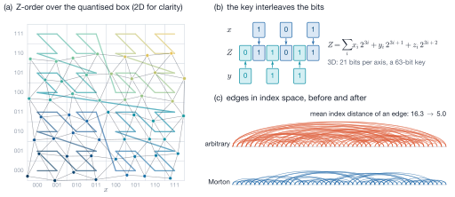
- Key per vertex; stable radix sort of
[0, n_local)and, separately,[n_local, n)— the ownership prefix survives. - Permute every vertex array; remap
he.vertex_idx. - Order triangles by their smallest (already Morton-ordered) vertex index —
spatial by construction, no centroid (and no question of what a centroid is
across a periodic seam), independent of which corner is corner 0. Records,
half-edge triples and geometry arrays move together;
twin_idxandout_he_idxkeep their corner \(h \bmod 3\) and remap \(\lfloor h/3\rfloor\). - Rebuild the derived arrays.
The permutation is applied to the pools, never stored, so there is one index space and one copy of each coordinate (3. Positions live in the SoA and only there). Global ids are untouched; pool indices are not stable across the call. A body straddling a periodic seam gets a domain-wide box and coarser cells — a locality cost only. The call is local (no MPI).
Note
No wall-clock benefit of the renumbering has been measured on the development machine (Apple silicon), although it reduces the mean edge index distance 160×. It is kept for the single index space and as the LBVH prerequisite; re-measure on an x86 node with 1–2 MiB L2 per core.
Hot-loop iterators¶
| Macro | Streams | In scope for the body |
|---|---|---|
MFTL_FOREACH_TRIANGLE_GEOMETRY |
tris.verts, gathered verts.pos |
t, v0..v2, corner p0, minimum-image edges e1, e2 |
MFTL_FOREACH_VERTEX_POS |
verts.pos, read-only |
v, px, py, pz |
MFTL_FOREACH_OWNED_VERTEX |
verts.pos, writable, [0, n_local) |
v, pos, rec |
They are macros because C has no closures: the body is pasted into one flat loop
with restrict locals, a hoisted bound and no pointer chasing. The triangle
iterator decides periodicity once per call; its periodic branch applies
\(d - L\,\mathrm{nearbyint}(d/L)\) without a per-triangle branch.
Where this page comes from
This page is generated from src/object/README.md in the MFTL library repository, which is also
what the Doxygen manual reads. Edit that file, not this page.
src/topology/ — Half-edge connectivity¶
Public header: include/mftl_topology.h · Layer: 2 ·
Module group: mftl_topology
Navigation is static inline in the header (an arithmetic operation and a load
each). topology.c holds the four whole-mesh operations:
| Function | Job |
|---|---|
MFTLRebuildTwins |
pair every half-edge with its opposite, from vertex indices alone |
MFTLMarkMeshBoundary |
flag the half-edges and vertices on the surface's own boundary |
MFTLCheckMeshIntegrity |
validate the structure |
MFTLLabelConnectedComponents |
edge-connected components (used by topology changes) |
The half-edge structure with implicit indexing¶
An oriented triangle mesh is stored as half-edges: every edge is split into two
oppositely directed halves, one per incident triangle, and each triangle's three
half-edges run counter-clockwise seen from outside. The classical structure
stores \(\mathrm{target}(h)\), \(\mathrm{twin}(h)\), \(\mathrm{next}(h)\) and
\(\mathrm{face}(h)\) per half-edge. MFTL stores only the first two
(vertex_idx, twin_idx), because half-edge \(3t+k\) is corner \(k\) of
triangle \(t\) — an invariant of every pool, not a convention:
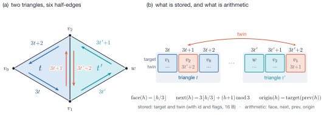
Consequences:
- A broken next-cycle or a half-edge that does not point back at its triangle cannot be represented; the integrity check has nothing to test there.
- The half-edge array needs no capacity of its own (3× the triangle pool's, in the same block).
- The global id of half-edge \(k\) of triangle \(g\) is \(3g+k\) mesh-wide, so half-edge ids are never transmitted.
- The price: triangles only.
MFTLGetTriangleVertices and tris.verts both return slot \(k\) as the origin
of half-edge \(3t+k\); the remesher's triangle writer follows the same convention.
Mixing conventions silently rotates triangles.
Rebuilding twins¶
MFTLRebuildTwins reconstructs every twin_idx from the vertex indices: the
twin of \(u \to v\) is the half-edge \(v \to u\). Half-edges are bucketed by their
origin vertex in an intrusive linked list (v_heads[u], he_next[h]); the
partner of \(u \to v\) is the unlinked half-edge in the bucket of \(v\) that ends at
\(u\). A bucket is as long as the valence, so the cost is
\(O(V + H\,\bar d)\) with one allocation and no hashing. Only unlinked candidates
are paired, which keeps the relation symmetric on non-manifold input (three or
more half-edges on one edge): the surplus stays twin-less and is reported by the
integrity check.
Warning
Pairing is by vertex slot. Two bodies sharing slot numbering —
foreign triangles appended to a pool — would be welded together. This
is one reason a spatial ghost is a separate shadow object
(src/communication/ — Distributed memory).
Boundary is a property of the surface, not of the partition¶
| Statement | Meaning | Partition-dependent? |
|---|---|---|
twin_idx == MFTL_ERROR |
no partner in this partition — an open surface's rim or a ghost halo's outer edge | yes |
flags & MFTL_FLAG_BOUNDARY |
no partner anywhere in the mesh | no |
MFTLMarkMeshBoundary writes the flag once, while the mesh is still complete
(every generator calls it), on each twin-less half-edge and both its endpoints.
From then on it travels with the entity through redistribution and remeshing.
Re-deriving it from twin_idx on a partitioned mesh would turn halo rims into
fake boundaries.
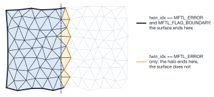
twin_idx == MFTL_ERROR; only the first carries MFTL_FLAG_BOUNDARY, written once while the mesh was still whole.Walking a fan¶
From an outgoing half-edge \(h\) of vertex \(v\), the next outgoing half-edge clockwise seen from outside, and its inverse, are
On an interior vertex the rotation closes; on a boundary vertex it runs out of
twins. MFTLVertexFanStart rewinds counter-clockwise to the fan's first half-edge (on a
closed fan this costs one full lap, which the walkers' is_inner flag skips).
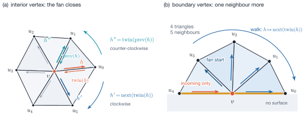
A vertex on an open fan has one more neighbour than incident triangles: the closing edge is reachable only as an incoming half-edge.
| Walker | Result at a boundary vertex |
|---|---|
MFTLGetVertexOneRing (triangles) |
one per incident triangle |
MFTLGetVertexOneRingVertices |
all neighbours; the extra one is emitted first, preserving rotational order |
MFTLGetVertexOneRingHalfedges |
outgoing half-edges only — one short of the incident edges; the missing one is MFTLHePrevIdx(first) |
Edge iterations (lengths, smoothing, remeshing candidates) must use the vertex
walker or add the closing edge (test_one_ring_at_a_boundary_vertex_has_one_extra_neighbour).
Every rotation is bounded by MFTL_MAX_VALENCE steps or the caller's buffer, so a
non-manifold fan asserts in Debug instead of looping.
Integrity checking¶
MFTLCheckMeshIntegrity verifies that every vertex has an in-range outgoing
half-edge that really starts at it (isolated vertices are errors), that every
target and twin index is in range, that twins are symmetric
(\(\mathrm{twin}(\mathrm{twin}(h)) = h\)) and have swapped endpoints. Twin-less
half-edges are counted, not rejected.
It does not check that half-edges were created in aligned triples — nothing at
the type level prevents a routine from breaking implicit indexing.
inv_implicit_indexing() in tests/test_mesh_invariants.h checks it in the test
suite.
Connected components¶
MFTLLabelConnectedComponents runs a breadth-first search over twin links,
\(O(T)\), seeding in ascending triangle index so that labels are a function of the
pool alone. The library assumes an MFTL_Object is one connected surface; a
topology change uses the labelling to give each component its own body. On a
partitioned mesh the result is local — parts connected only through another
rank's triangles count separately.
The flag word¶
All bits of flags are allocated in mftl_topology.h, including those only the
remesher reads.
| Bit | Value | Owner | Lifetime |
|---|---|---|---|
MFTL_FLAG_BOUNDARY |
0x01 | topology | persistent — a property of the surface |
MFTL_FLAG_DEAD |
0x02 | remeshing | removed by compaction |
MFTL_FLAG_VISITED |
0x04 | remeshing | cleared between sweeps |
MFTL_FLAG_FEATURE |
0x08 | remeshing | re-derived each pass; splits hand it to both halves |
MFTL_FLAG_CORNER |
0x10 | remeshing | re-derived each pass; vertices only |
MFTL_FLAG_FROZEN |
0x20 | remeshing | one parallel phase; derived from the partition, never transmitted |
Application code must not reuse 0x02 or 0x04 for its own markers.
Where this page comes from
This page is generated from src/topology/README.md in the MFTL library repository, which is also
what the Doxygen manual reads. Edit that file, not this page.
src/geometry/ — Periodic-aware geometry¶
Public header: include/mftl_geometry.h · Layer: 2 ·
Module group: mftl_geometry
Everything in this directory is local — no MPI:
| File | Produces |
|---|---|
triangle_geometry.c |
tris.area, tris.normal, tris.center for a mesh; the closest point on a triangle |
vertex_geometry.c |
area- or angle-weighted verts.normal for a mesh |
signed_distance.c |
signed distance to a mesh on a (periodic) lattice window |
The collective wrappers (MFTLEnsembleUpdate, MFTLEnsembleUpdateVertexNormals)
live in src/ensemble/ — The library handle and the per-body collectives; the split is by scope, not by entity
(Where a geometry function lives). Small queries (MFTLGetMinimumImageVector,
MFTLGetTriangleProperties, MFTLGetTriangleCorners, MFTLGetOwnerProc) are
static inline in the header.
The minimum-image convention¶
On a periodic axis the domain is a torus of length \(L_k\), and the difference of two stored coordinates is not the vector between the points. The shortest representative is
evaluated with the precomputed reciprocal inv_domain_size — one multiply, one
round, one fused multiply-subtract, valid for any displacement (the comparison
form is valid only for \(|d| < 3L/2\)). Every edge vector in the library is formed
this way, so a triangle straddling a periodic face has correct edges although its
corners are stored on opposite sides of the box. This requires every edge to be
shorter than \(L_k/2\), which any resolved surface satisfies.
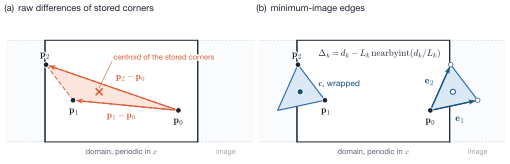
MFTLGetOwnerProc accepts.MFTLApplyPeriodicity wraps a position into \([\min_k, \max_k)\) by at most one
period — correct for positions wrapped every step. Its perfectly predicted
compare-and-shift form beat a branchless variant by 1.34–1.37×.
MFTLGetOwnerProc maps a wrapped position to the rank owning its Cartesian
cell, \(i_k = \lfloor (x_k-\min_k)\,\mathrm{cuts}_k/L_k \rfloor\) clamped to the
grid, through the precomputed grid_factors and rank_map.
Triangle area, normal and centroid¶
With minimum-image edges \(\mathbf{e}_1 = \mathbf{p}_1 - \mathbf{p}_0\), \(\mathbf{e}_2 = \mathbf{p}_2 - \mathbf{p}_0\):
One square root serves area and normal. The corners are ordered
counter-clockwise seen from outside, so \(\hat{\mathbf{n}}\) points outward
(Invariants worth preserving). The centroid is built from seam-corrected offsets
and then wrapped: it is the true centroid of a straddling triangle and a
position MFTLGetOwnerProc accepts.
MFTLComputeTriangleGeometry streams tris.verts when the derived
connectivity is current and walks the half-edge records otherwise; the two paths
are bit-identical (test_triangle_geometry_paths_are_bit_identical).
A normal is always a unit vector¶
Every kernel evaluates
const double mag = MFTL_SQRT(nx*nx + ny*ny + nz*nz); /* unclamped */
const double inv = (mag > 0.0) ? 1.0 / mag : 0.0;
Clamping \(\lVert\mathbf{n}\rVert^2\) before the square root floors the magnitude
(at \(10^{-6}\) for a \(10^{-12}\) clamp) and with it the area, so a degenerate
triangle could not be reported and the quality
\(q = 4\sqrt3A/(a^2+b^2+c^2)\) could exceed its maximum of 1; clamping the divisor
only moves the floor. Either way small triangles get short normals that still
point the right way — every sign test passes while surface forces are silently
scaled. The test against zero costs one instruction (+1.1 %) and is exact at
every scale (\(10^{-8}\ldots10^{8}\) in test_triangle_normals_are_unit_at_every_scale).
Vertex normals¶
Area weighting is free (the raw cross product carries it) and parallel to the gradient of the enclosed volume on a closed fan,
the direction a volume-conserving front-tracking scheme moves vertices along. Angle
weighting (Thürmer–Wüthrich) is invariant under re-triangulation of the fan
and is the pseudo-normal of the signed-distance theorem below. The corner angles
come from one cross product and three dot products via atan2, which is well
conditioned where acos is not.
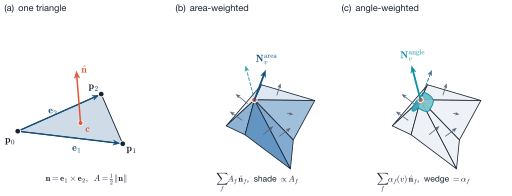
The pass is a scatter over triangles (flat loop, compact connectivity) rather
than a gather over fans (dependent loads, measured 3.4× slower); a
vertex→triangle CSR gather was a dead heat and is not stored
(docs/analysis.md §1.5). verts.normal stays xyz-interleaved: the three-double
read-modify-write is four memory operations per vertex instead of six
(1.20–1.25×, examples/layout_benchmark.c).
Exactness needs a vertex-complete halo¶
The scatter runs over all triangles, ghosts included, so an owned vertex is exact iff every incident triangle is present locally — which the redistribution halo guarantees (a triangle is sent to the owner of each of its corners). This makes the pass communication-free.
Warning
Ghost vertices hold a normalised partial sum, which looks exactly
like a real normal. MFTLEnsembleUpdateVertexNormals adds the one ghost
exchange that makes them exact.
Closest point and signed distance¶
MFTLClosestPointOnTriangle implements Ericson's Voronoi-region test: six dot
products select one of seven regions (face, three edges, three corners) and only
that region's formula is evaluated. It also returns the feature; edge \(k\)
is half-edge \(3t+k\). A triangle with \(\sin^2\theta \le 10^{-15}\) at corner 0 is
treated as its three edges.
MFTLRasterizeSignedDistance scatters, for each triangle, the value
\(\pm\lVert\mathbf{x}-\mathbf{q}\rVert\) to every lattice node \(\mathbf{x}\) within
the cutoff, where \(\mathbf{q}\) is the closest point and the sign is that of
\((\mathbf{x}-\mathbf{q})\cdot\mathbf{n}_\text{pseudo}\):
| Closest feature | Pseudo-normal |
|---|---|
| face | \(\hat{\mathbf{n}}_T\) |
| edge | \(\hat{\mathbf{n}}_T + \hat{\mathbf{n}}_{T'}\) (\(T'\) across the edge; \(T\) alone at a mesh rim) |
| vertex | angle-weighted \(\mathbf{N}_v\) (verts.normal, MFTL_NORMAL_WEIGHT_ANGLE) |
For a closed, consistently oriented, non-self-intersecting surface this sign is
provably correct (Bærentzen & Aanæs, IEEE TVCG 11(3), 2005); area-weighted
vertex normals can fail on thin, sharply folded sheets — precisely where topology
changes are detected. Contributions are combined by MFTLSdfMerge (smaller
magnitude wins, ties to the negative value): a total order, so the merged field
is independent of triangle and rank order and a distributed rasterisation is
bit-identical to a serial one.
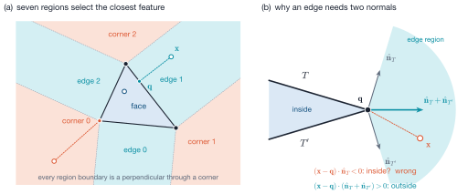
Nodes farther than the cutoff from every triangle stay MFTL_SDF_UNKNOWN. Every
corner of a lattice cell crossed by the surface lies within one cell diagonal of
it, so a cutoff above \(\sqrt3\,\Delta x\) supplies every value marching cubes needs
without a flood fill. The lattice is global and periodic (nodes \(g\) and
\(g + N\) coincide), and a caller stores a window of it; triangles reach nodes by
unwrapped index in their own periodic image.
Where this page comes from
This page is generated from src/geometry/README.md in the MFTL library repository, which is also
what the Doxygen manual reads. Edit that file, not this page.
src/mesh_creation/ — Mesh construction¶
Public header: include/mftl_meshgen.h · Layer: 3 ·
Module group: mftl_meshgen
| File | Job |
|---|---|
mesh_builder.c |
indexed triangle list → half-edge mesh; the single conversion point |
sphere_creation.c |
the icosphere, in a collective and a split local/publish form |
marching_cubes.c |
a generated 256-case table, lattice-keyed extraction, level set → mesh |
There is no mesh reader; one would go through MFTLBuildIndexedMesh.
One conversion point¶
MFTLBuildIndexedMesh (positions + indices) and MFTLBuildTopologyFromIndexList
(indices over an already filled vertex pool) are the only places raw
connectivity becomes an MFTL mesh, so the conventions every module relies on are
established once:
- half-edge \(3t+k\) runs from
tri_verts[3t+k]totri_verts[3t+(k+1)%3], so slot \(k\) oftris.vertsis the origin of half-edge \(3t+k\); - global ids are \([0, n)\) per class, half-edge ids \(3\,t_\mathrm{gid}+k\), and the
next_*_gidcounters end one past the last id; - twins are linked (
MFTLRebuildTwins), the boundary is flagged while the mesh is complete (MFTLMarkMeshBoundary), derived arrays are built; MFTLBuildIndexedMeshand the generators also compute the triangle geometry (area, normal, centre), so a new mesh can be redistributed at once — the first redistribution routes by centres.MFTLBuildTopologyFromIndexListdoes not: its caller still owns the positions (subdivision projects them afterwards).
Index lists are validated in Release before anything is modified: an index out of range or a triangle with a repeated corner (a self-edge that could twin with itself) is rejected. The caller owns the winding: the normal \((\mathbf{p}_1-\mathbf{p}_0)\times(\mathbf{p}_2-\mathbf{p}_0)\) points to the side from which the triangle is counter-clockwise.
The icosphere¶
The regular icosahedron — vertices \((0, \pm1, \pm\varphi)\) and cyclic permutations, \(\varphi = (1+\sqrt5)/2\), scaled onto the unit sphere — is refined \(r\) times by 1-to-4 midpoint subdivision and then projected once onto the sphere of radius \(R\):
For a closed triangulation Euler's formula \(V - E + F = 2\) with \(3F = 2E\) gives
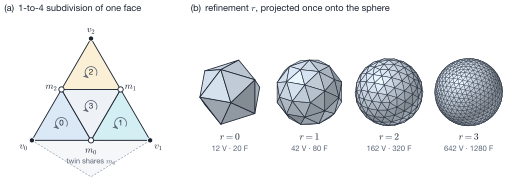
| \(r\) | vertices | triangles | min \(q\) | mean \(q\) | max/min area | \(1 - V_h/V\) |
|---|---|---|---|---|---|---|
| 0 | 12 | 20 | 1.000 | 1.000 | 1.00 | 0.395 |
| 1 | 42 | 80 | 0.985 | 0.989 | 1.19 | 0.127 |
| 2 | 162 | 320 | 0.977 | 0.994 | 1.51 | 0.034 |
| 3 | 642 | 1 280 | 0.975 | 0.996 | 1.73 | 8.6e-3 |
| 4 | 2 562 | 5 120 | 0.974 | 0.997 | 1.86 | 2.2e-3 |
| 5 | 10 242 | 20 480 | 0.974 | 0.997 | 1.93 | 5.4e-4 |
(\(q = 4\sqrt3A/(a^2+b^2+c^2)\) is the mean-ratio quality; \(V_h\) the enclosed volume of the polyhedron.) Because the midpoints are projected only once, the flat subdivision of each icosahedron face is mapped centrally onto the sphere: shapes stay nearly equilateral while areas grow towards the face centres by up to a factor of about 2. The volume error decreases by a factor of 4 per level — second order in the edge length \(h \propto 2^{-r}\). For a target edge length, \(r \approx \log_2(1.05\,R / h)\).
Outward normals. The face table is counter-clockwise as seen from outside and subdivision emits the sub-triangles in their parent's rotational order, so every normal points outward at every level. This fixes the sign of the enclosed volume,
of surface tension and of any indicator function
(test_triangle_winding_is_outward, test_enclosed_volume_is_positive_and_converges).
Midpoints without a hash map. An edge's midpoint is identified by a
half-edge index: midpoint_map[h] is written for \(h\) and its twin together, so
the second triangle on an edge finds the vertex by one array read. Subdivision
emits an index list and reuses MFTLBuildTopologyFromIndexList; old vertices
keep their indices, midpoints are appended.
Generation is rank-0 serial¶
The whole body is built on rank 0 — every other rank holds an empty object — and
MFTLRedistribute spreads it. Id counters must be broadcast and global counts
reduced: MFTLGenerateSphere does both per body (two collectives each);
MFTLGenerateSphereLocal for every body followed by one
MFTLPublishGeneratedBodies costs two collectives in total. Consequences:
- rank 0's memory peak is the whole ensemble (\(3440 \cdot 4^r + 128\) bytes per body); a distributed generator does not exist;
- the opening scatter is the one redistribution that may leave the 26-neighbourhood of rank 0 (whenever some cell is two or more cells from rank 0's along an axis, e.g. a non-periodic \(3\times3\times3\) or \(4\times1\times1\) grid), and then takes the global route;
- quantities measured on an empty rank (e.g.
MFTLMeanEdgeLength= 0) must not be used as rank-local parameters; the remesher measures its target length collectively (src/remeshing/— Isotropic surface remeshing).
Marching cubes¶
A table generated from one face rule¶
Instead of the classic hand-tabulated 256 rows, every case is derived from a rule applied independently to each of the cell's six faces. Walking a face's four corners counter-clockwise as seen from outside the cell, the sign changes at 0, 2 or 4 edges; every crossing where the walk enters the negative region is connected to the next crossing where it leaves it. On an ambiguous face (negative corners on a diagonal) this cuts each negative corner off separately — the inside never connects diagonally through a face.
The rule depends only on the face's four signs. The neighbouring cell walks the same face in the opposite direction and obtains the same segments with opposite orientation, so the surface is crack-free and consistently oriented across cells by construction — the defect of tables assembled from symmetry classes and complements, which can resolve one ambiguous face differently from its two sides. Every segment has the negative region on its right, so the loops chained from the segments are wound with normals pointing from \(\phi < 0\) to \(\phi > 0\). A loop that visits one face twice is fanned from an apex with no diagonal to a crossing on a shared face, so no triangle lies inside a cell face; the tests assert that such an apex exists for every loop of all 256 cases.
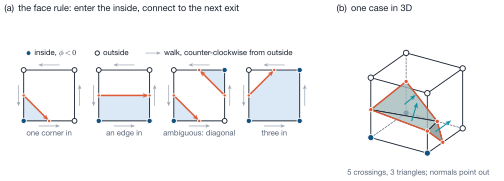
0b00000111 as the generated table builds it: five crossings chained into one loop, fanned from an apex with no in-face diagonal into three triangles whose normals point from \(\phi<0\) to \(\phi>0\).Lattice-keyed extraction¶
MFTLExtractLevelSet places a vertex on each crossed lattice edge at the linear
interpolant \(t = \phi_0/(\phi_0-\phi_1)\) and names it by its lattice edge,
3 * node + axis, computed from wrapped global node indices; its coordinates
are computed from the wrapped node as well. Two ranks extracting neighbouring cell
ranges therefore produce a shared vertex with the same key and bit-identical
coordinates without comparing positions — the basis of the distributed
reconstruction in mftl_mod_topology_change. Values closer to zero than
snap * min(spacing) are pushed out to that distance (zero counts as positive),
so no vertex coincides with a lattice node. A cell with an unknown
(MFTL_SDF_UNKNOWN) corner is skipped.
MFTLBuildMeshFromLevelSet extracts a whole window and builds the mesh; where
the level set leaves the window the surface is open and its rim is flagged as
mesh boundary, and on a periodic axis a window of exactly one period closes it
across the seam.
Where this page comes from
This page is generated from src/mesh_creation/README.md in the MFTL library repository, which is also
what the Doxygen manual reads. Edit that file, not this page.
src/ensemble/ — The library handle and the per-body collectives¶
Public header: include/mftl_ensemble.h · Layer: 3 ·
Module group: mftl_ensemble
| File | Job |
|---|---|
ensemble.c |
lifecycle: MPI topology, the sorted local object directory, global counts |
ensemble_update.c |
the fused geometry + quality pass, and the collective vertex-normal pass |
ensemble_reduce.c |
per-body reductions and exclusive scans over each body's holders |
Ensemble → Domain → Objects¶
MFTL_Ensemble— oneMFTL_Domain(by value) plus the bodies this rank holds. It owns them;MFTLEnsembleDestroycascades.MFTL_Domain— the MPI and physical world shared by all bodies: private duplicate of the user's communicator, Cartesian grid, rank map, 26-neighbour graph, bounds, periodicity. Read-only after creation.MFTL_Object— one mesh, holding a borrowed domain pointer and no MPI state.
The local object list is sparse. local_objects holds exactly the bodies
this rank has entities of, sorted by ascending global_id; a redistribution
destroys bodies that left and creates bodies that arrived. Body ids are handed
out densely by MFTLEnsembleAddObject (every rank must add the same bodies in
the same order) and are the only handle that survives a redistribution —
MFTLEnsembleFindLocalObject(ens, gid) maps back, by binary search.
n_bodies_global is the size of the id space (topology changes retire ids, so
it can exceed the live body count) and is the count every collective guard must
use: an early return on the local count deadlocks the other ranks.
Warning
An MFTL_Object*, a list slot or n_local_objects held across a
redistribution is invalid. At one rank the stale pointer happens to
work, which is why test_leveque_parallel_conserves checks a physical
quantity (enclosed volume) at \(P = 2\).
The MPI topology is built once¶
| Field | What it is | Why it is materialised |
|---|---|---|
comm_cart |
Cartesian communicator, no rank reordering | defines grid coordinates → ranks |
rank_map |
that mapping as an [nproc] array |
owner lookup is per entity |
comm_graph |
symmetric distributed graph over the distinct ranks of the 26 surrounding cells | neighbourhood collectives: message count bounded by the degree, not by \(P\) |
neighbor_offset |
each neighbour's cell offset in \(\{-1,0,1\}^3\) | "are two cells neighbours" becomes a componentwise test |
grid_factors, inv_domain_size |
\(\mathrm{cuts}_k/L_k\), \(1/L_k\) | owner lookup and minimum image without division |
On thin periodic grids (\(2\times1\times1\), any periodic axis with 1 or 2 cuts)
several stencil offsets alias the same rank; the graph lists it once, with its
first offset. With a single cut on a periodic axis the stencil wraps onto the
rank itself, so comm_graph contains a self-loop — harmless for an
exchange, but a reduction must not fold that block twice. \(3\times3\times3\) is
the smallest grid with an interior rank whose 26 neighbours are distinct, which
is why the distributed tests run at \(P = 27\).
The fused update pass¶
MFTLEnsembleUpdate runs one streaming loop over the owned prefix of each
object: it writes area, unit normal and centroid and accumulates, from the same
registers,
using that the three edges are \(\mathbf{e}_1\), \(\mathbf{e}_2\) and
\(\mathbf{e}_2-\mathbf{e}_1\). \(q\) is the mean-ratio quality: 1 for an equilateral
triangle, \(\to 0\) as it degenerates, never above 1. Lengths stay squared. Eleven
values per body — 3 MIN, 3 MAX, 5 SUM including the triangle and half-edge
counts — go through one MFTLEnsembleReduceBodies call; averages divide by
global counts. The statistics are per body, because that is what decides
whether one particular droplet needs remeshing.
Measured points worth knowing (docs/analysis.md §1.6):
- The kernel stays file-static next to its reduction: moving it into
src/geometry/would put the nine accumulators into an address-taken struct, 15 % slower. - The statistics cost +90 % over geometry alone (1.64 → 3.11 ns/triangle): \(q\)
adds a second divide to a loop bound by one. Fusing is still right (two passes:
2.20 vs 1.47 ns), but on a non-periodic domain
MFTLEnsembleUpdateis slower thanMFTLComputeTriangleGeometry— call it for the statistics. - The loop does not vectorise, and not because of the reduction: one
sqrtand one divide per triangle are a quarter of the pass and irreducible. fmin/fmaxaccumulators let clang recognise the reductions; they are single instructions on AArch64 but need NaN fix-up on x86-64.
MFTLEnsembleUpdateVertexNormals is the per-vertex counterpart and needs an
exchange, not a reduction: owned normals are already exact (vertex-complete
halo); one ghost exchange (MFTLUpdateGhostVertexNormals, three neighbourhood
collectives) supplies the ghost half.
Per-body reductions over the holders¶
MFTLEnsembleReduceBodies is the one place the library chooses the communicator
for a per-body collective. Its users: quality statistics, global counts, the
redistribution skip vote, the spatial halo's body radii, and the distributed
remesher's body measurement and id counters.
Indexing by local slot. MPI_Allreduce aligns element \(k\) of every rank's
buffer, so a per-body payload for it must be indexed by body id — at \(10^6\)
bodies every rank would stage \(10^6\) rows to learn about the few it holds. The
caller's buffer is [n_local_objects][n_per_body], reduced in place.
Two routes. The holder route publishes one (body id, row) record per held
body over comm_graph (one count exchange and one allgatherv) and folds locally:
\(O(\text{local bodies} \times \text{degree})\), independent of \(P\) and of the
body count, and exact iff every two holders of every body are graph neighbours.
The global route is an MPI_Allreduce per distinct operator over a
body-id-indexed buffer: always exact, \(O(\text{bodies})\) per rank.
Certificate. For body \(X\) with holder set \(H(X)\), every holder \(R\) checks
- \(R\) owns at least one entity of \(X\);
- every rank owning a ghost of \(X\) in \(R\)'s pool is a graph neighbour of \(R\);
- after the exchange, \(R\) and every neighbour that published a record for \(X\) span at most one cell per axis.
1 and 2 make \(H(X)\) connected on the graph: redistribution sends each triangle
to the owners of its corners and edge neighbours, so the owners of two incident
entities hold each other's entity as a ghost and are, by 2, neighbours; the
surface is connected and, by 1, every holder is an owner. 3 makes a connected
\(H(X)\) a clique: holders \(a, c\) at graph distance 2 would share a holder
neighbour \(m\) whose record set contains both, so by 3 their offsets from \(m\)
differ by at most one per axis and \(c\) lies in \(a\)'s stencil — a contradiction.
The three verdicts are agreed with one MPI_LAND; on refusal the records are
discarded and the global route runs.
Checking 3 on the halo-visible holders alone, before the exchange, is not
sufficient: a body bent around a grid corner, cells
\((0,0)\to(1,0)\to(1,1)\to(2,1)\), passes on every rank while its ends, two cells
apart, never hear from each other
(test_a_bent_body_is_certified_after_the_exchange, \(P = 27\)). An empty holder
fails statement 1 and vetoes — the state of a generated ensemble before its first
redistribution. The certificate is re-derived on every call: any holder change
anywhere invalidates it.
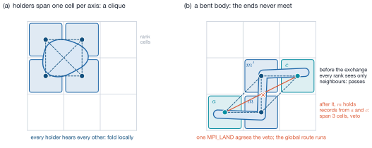
Warning
The argument assumes each body is one connected surface. Nothing in
MFTL produces a disconnected body (topology changes give every
component its own id); a caller assembling one must pass
MFTL_BODY_REDUCE_SCOPE_GLOBAL.
Redistribution rewrites owner_proc with destination ranks while classifying,
so it takes statements 1–2 before that and passes the verdict to
MFTLEnsembleReduceBodiesPrescanned; statement 3 reads only the records.
Bitwise identity. Contributions are folded in ascending source rank order with this rank spliced in at its own position (and a self-loop block dropped), so every holder obtains bit-identical values — a solver that branches on them never sends two ranks into different collectives.
Bytes. The holder route sends every held body to every neighbour, so it moves
more bytes than the global route below roughly 45 ranks and far fewer above
(measured 1.97× more at \(P = 2\), 1.70× at \(P = 27\); modelled 22× less at \(P = 1000\); docs/analysis.md §6.5). The
decisive gain is that nothing scales with the body count.
MFTLEnsembleGetBodyReduceStats counts which route ran: both give identical
answers, so a call pinned to the global route is visible only there
(test_a_droplet_timestep_takes_no_global_reduction).
Per-body exclusive scans¶
Handing out ids is a scan, not a reduction: two holders that each created
vertices of one body need disjoint id ranges, so each needs the count created by
the holders before it. MFTLEnsembleExscanBodies reuses the reduction's records,
order, certificate and fallback (MPI_Exscan + MPI_Allreduce); "before" means
ascending rank, so the holders' ranges tile \([0, \text{total})\) exactly
(test_the_scan_tiles_every_body_exactly_once). Its consumer is the distributed
remesher (src/remeshing/ — Isotropic surface remeshing).
Counting a per-body verdict once. Every holder receives the same reduced
value, so summing a per-body verdict over ranks counts a shared body once per
holder. A MIN slot of the contributing rank yields the body's lowest-numbered
holder, and lowest_holder == rank is the licence to count it
(MFTLRemeshMeasureBodies carries this slot).
Decomposition metric¶
MFTLDomainGetHMin \(= \min_{k:\,\mathrm{cuts}_k\ge2} L_k/\mathrm{cuts}_k\), the
narrowest rank box over the cut axes (uncut axes have no interior plane), is the
length the distributed remesher's band condition and strategy choice are
measured against. It is 0 for a single process and identical on every rank.
Where this page comes from
This page is generated from src/ensemble/README.md in the MFTL library repository, which is also
what the Doxygen manual reads. Edit that file, not this page.
src/communication/ — Distributed memory¶
Public header: include/mftl_communication.h · Layer: 3 ·
Module group: mftl_communication
| File | Job |
|---|---|
redistribute.c |
the mesh moved — who owns what now? Re-partition and rebuild the halo |
ghost_sync.c |
the mesh deformed — refresh my ghosts. One per-vertex 3-vector, topology untouched |
spatial_halo.c |
what of body B is near my share of body A? A geometric halo as shadow objects |
exchange.c |
MPI datatypes, the non-blocking multi-payload all-to-all-v, the neighbourhood allgather |
comm_internal.h, comm_stats.c |
the lazy int list, the global-id table, the diagnostics accumulator |
Ownership and the halo rule¶
A vertex belongs to the rank whose Cartesian cell contains its position; a
triangle to the rank whose cell contains its cached centre (a body whose
MFTL_DERIVED_GEOMETRY bit is clear is recomputed first)
(\(i_k = \lfloor (x_k-\min_k)\,\mathrm{cuts}_k/L_k\rfloor\)). An owned triangle is
additionally sent to the owner of each of its three corners and each of its
three edge neighbours; that surplus is the ghost layer. Two properties
follow and every other module relies on them:
- Vertex completeness. Every triangle incident to an owned vertex is present locally (the corner clause). Vertex normals are therefore exact on owned vertices without communication, and every fan a remesher walks around an unfrozen vertex is complete.
- Edge completeness. Every owned triangle has all three edge neighbours locally (the neighbour clause), so a missing twin on an owned triangle really is a mesh boundary.
Read backwards, the rule characterises replication locally:
$$
\text{owned triangle replicated} \iff
\exists\,\text{corner} \ge \texttt{verts.n_local}\ \lor\ \exists\,\text{neighbour} \ge \texttt{tris.n_local},
$$
which is the remesher's freeze test (src/remeshing/ — Isotropic surface remeshing).
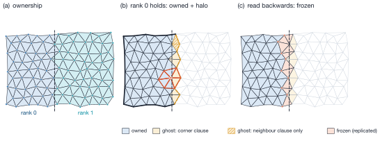
What the wire carries¶
Only topology, identity and vertex positions travel:
| Record | Contents | Size |
|---|---|---|
MFTL_PackedVertex |
position, global id, new owner, flags, body id | 40 B |
MFTL_PackedTriangleComplex |
global id, new owner, flags, body id, 3 target-vertex ids, 3 half-edge flags | 40 B |
Areas, normals and centres are functions of positions and topology and are not
sent (shipping them would triple the payload). Half-edge ids (\(3\,t_\mathrm{gid}+k\)),
next/face (arithmetic), twins and out_he_idx are reconstructed at the
receiver. vertex_gid[k] is the target of half-edge \(3t+k\), not
tris.verts[3t+k] (its origin). Boundary flags travel because a partition
cannot re-derive them. The MPI datatypes are one or two contiguous blocks with
extents pinned to the C sizeof (MPI_Type_create_resized), guarded by static
assertions.
Postcondition. A redistributed object has valid topology, valid positions and
MFTL_DERIVED_TOPOLOGY set; tris.area/normal/center and verts.normal are
unspecified until recomputed (The per-timestep loop).
The redistribution algorithm¶
- Classification.
compute_ownersstreamsverts.posandtris.centerthroughMFTLGetOwnerProc(or the caller'sMFTL_OwnerMap) and writes the new owner intoowner_proc, counting changes as it goes. - Destination analysis. Each owned triangle's destinations are its owner, its corners' owners and its neighbours' owners. Interior triangles, whose seven candidates coincide, take a register-only fast path. This rank is one destination among others: entities it keeps are flagged, not packed. Each destination's vertex list is de-duplicated on construction with one bit per (vertex, destination) — 32 slots suffice on the neighbour route; beyond them a list is sorted instead.
- Route. One
MPI_Allreduce(LOR) decides whether any destination lies outside the 26-neighbourhood. Graph route:MPI_Neighbor_alltoallvovercomm_graph; global route (e.g. the initial scatter from rank 0):MPI_Alltoallvovercomm_cart. - Exchange.
MFTLExchangeStartsends three payloads — vertices, triangles, and a 7-int header per (body, destination) — after one merged count exchange. All bodies share the messages, so the message count is independent of the body count, and the headers let a receiver split the stream into per-body runs without sorting. - Rebuild. Kept entities are compacted in place into
[kept owned | new owned | kept ghost | new ghost](ownership stays a prefix); arrivals are de-duplicated by global id and appended. A twin between two kept triangles is a remap; only half-edges whose twin did not survive are re-paired. Kept-ness is decided per triangle, so this repair set is closed under the twin relation and the incremental repair finds every pair a fullMFTLRebuildTwinswould (checked by re-running it intests/test_redistribution.c).out_he_idx,tris.vertsandtris.neighborsare emitted inline. Bodies that arrive are created; bodies left empty are destroyed.
All scratch lives in a persistent per-ensemble workspace that only grows, so a steady loop stops allocating after a few steps.
The global-id table¶
"Do I already hold global id \(g\), and in which slot?" is asked for every arriving
entity. Ids are dense per body, but a rank holds a scattered subset of a body's
range, so a direct-address array would be sized by the global count (measured
15–62 MB per rank per step at \(P = 2\)–8 on one 327 680-triangle body, 97 % empty
at \(P = 8\)). mftl_gid_table therefore has two modes, chosen per use:
- direct (
tag[gid]) when \(\text{range} \le 4\,n_\text{entries} + 64\); - sparse: open addressing with linear probing, load factor \(\le 1/2\), a multiplicative hash (the identity index clusters catastrophically on a partition's aliased id runs).
This is the library's only hash table. Entries carry an epoch in the high 32
bits of their tag, so retiring every entry is epoch++; nothing is ever deleted
(a probe stops at the first stale slot); capacity is a power of two in both
modes, so switching modes between bodies never reallocates.
A body that did not move is not touched¶
A rank's state after a redistribution is a pure function of the global topology
and the owner map — read backwards, the halo rule defines the output. Positions
only decide the owner map. So a body for which neither input changed already
holds the answer, and MFTLRedistributeSetSkipUnchangedBodies (default on)
skips its analysis, packing and rebuild entirely (docs/analysis.md §2.4:
1.6–2.1× of the redistribution phase at 1000 bodies).
The precondition is not "did topology change". Under the remesher's freeze
discipline a topology change touches only unreplicated entities and is invisible
to the halo rule. What a skip breaks is global ids and flags of replicated
entities (renumbering relies on the rebuild to refresh ghost-triangle ids). The
precondition is therefore no entity changed owner and not
partition_dirty — the stamp set by MFTLObjectSetCounts (every creation and
destruction), by the renumbering sites and by MFTLRemeshMarkFrozen.
Agreement. A rank may receive a change it cannot see, so the verdict is agreed per body — with one per-body MAX reduction over each body's holders rather than one collective per body. The object loop is split: pass 1a classifies every body and packs those this rank saw change; the vote; pass 1c packs bodies dirty elsewhere by re-running the idempotent classification.
A body must be clean twice. A rebuild is not idempotent (an owned vertex whose incident triangles are all remote is dropped and re-received at the end of the owned run), so a body is rebuilt once more after it stops changing, and only then skipped:
| changed now | changed before | action | layout |
|---|---|---|---|
| yes | — | rebuild | not necessarily a fixed point |
| no | yes | rebuild ("settle") | fixed point |
| no | no | skip | unchanged fixed point |
The skip is then exact slot for slot (test_skipping_reproduces_the_full_rebuild
compares set and slot-order digests), at the cost of one rebuild per
dirty-to-clean transition (n_objects_settled).
Memory policy¶
Pools only grow; MFTLRedistributeSetShrinkSlack (default off) offers every
rebuilt body to MFTLObjectShrinkToFit. Bodies a rank no longer holds at all
are always released. After generation (every body built whole on rank 0) this
reduced rank 0's pool capacity from 80 MB to 33.5 MB at 256 bodies, refine 3,
\(P = 4\); the optional shrink saves a further ~8 % for ~2 % of the phase time.
Ghost synchronisation¶
MFTLUpdateGhostPositions / MFTLUpdateGhostVertexNormals run one request/reply
round over comm_graph: each rank lists its ghost vertices (the pool suffix) by
owner and sends (body id, vertex id) requests (8 B); owners answer through the
id table with an MFTL_GhostUpdatePayload (32 B); replies return in request order
and are applied by direct index. Three neighbourhood collectives. Only the
holder of a ghost knows it holds it, so a request phase is unavoidable; no
owner-to-holder state is cached between calls. One field per exchange: bundling
recomputable quantities with the position would ship bytes the receiver computes
more cheaply.
Warning
A ghost whose owner is not a graph neighbour cannot be served: it keeps a
stale value, the call returns MFTL_ERROR on that rank, and Debug
builds assert. There is no global fallback, so a partition whose halo
leaves the 26-neighbourhood (a coarsened remeshing partition) must not
outlive the remeshing call; both remeshing drivers end with a plain
MFTLRedistribute.
The spatial halo¶
| Redistribution halo | Spatial halo | |
|---|---|---|
| kind | topological | geometric |
| contents | neighbouring triangles of the same body | triangles of body B near this rank's share of body A |
| lives in | the body's own pools, past n_local |
a standalone shadow MFTL_Object per body |
| built by | MFTLRedistribute |
MFTLExtendSpatialHaloNearBodies / MFTLExtendSpatialHalo |
Two bodies in contact are cut by the same rank boundaries, and the rank holding one side of a contact may hold nothing of the other body; they share no edges, so no topological halo growth can help. The halo is transient: redistribution keeps only owned triangles, so it is rebuilt after every redistribution, and each extension replaces earlier patches.
Why a shadow object. A patch is an ordinary object with n_local == 0, twins
linked within the patch and derived arrays built; it is not in
ens->local_objects, so redistribution and ghost syncs never see it. Appending
foreign triangles to the body's own ghost suffix would silently change every pass
bounded by tris.n (the Morton box, MFTLMeanEdgeLength, the vertex-normal
scatter, MFTLRebuildTwins — which would weld bodies sharing vertex slots), and
the arriving vertex ids would violate either vertex completeness or local id
uniqueness. Patch boundary flags are the transmitted ones: a patch's rim is a cut,
not a mesh boundary.
Records, extents and the pair broad phase¶
- Each rank publishes one record per body it holds —
(id, centre, half-width, global radius, envelope), nine doubles — to its graph neighbours (payload \(O(\text{local bodies}\times\text{degree})\), independent of the ensemble size). - Extents are a centre plus a half-width, and "near" is
$$
\forall k:\ \bigl|\Delta^{\min}_k(c^A_k, c^B_k)\bigr| \le h^A_k + h^B_k + m,
$$
with \(\Delta^{\min}\) the minimum-image difference. A
(lo, hi)box fails both ways on a periodic domain: shares touching across the seam are a domain length apart (a missed contact, decided before the BVH ever sees the triangles), and a share containing one seam-straddling triangle spans the whole domain (every neighbour ships everything — measured at \(P = 27\): 314 ghosted triangles against 56). A share's extent is measured in the raw frame and in one shifted by half a domain, keeping the tighter per axis, which is exact while the share is narrower than \(L/2\) and conservative otherwise. - The arriving records are binned into a uniform grid with cell \(\ge 2\,h_{\max} + m_{\max}\) per axis, so overlapping extents are in adjacent cells and each query visits 27 cells: \(O(\text{bodies}+\text{records})\) instead of the \(O(B^2)\) all-pairs list (134 million records at 16 384 bodies). One domain-spanning body collapses the grid to a single cell — correct, and the right cost for a few large bodies.
- Body B travels towards body A only when \(A < B\) (and \(A = B\) with
self_pairs): the rank owning the A-side triangle reports the contact, so only it needs the copy. Per destination each triangle is packed once however many partners want it, and the margin used is the widest any matched partner needs — the pre-filter is always at least as permissive as the per-triangle test. halo->pairreturns every(A, B)with this rank holding A and seeing B, ascending and unique. Measured on six touching couples (6 of 66 pairs real): 6/6/9/18/6 candidates at \(P = 1, 2, 4, 8, 27\) against 66/132/264/528/1782 for all pairs (test_the_broad_phase_finds_the_pairs_without_enumerating_them).
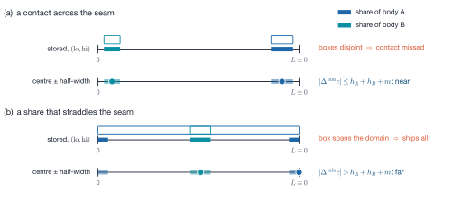
MFTLSpatialHaloResolveRadii computes each body's radius — half the longest side
of its global box (so envelopes do not depend on the process count; \(R\) for a
sphere) — over the holders in two frames, and publishes it one hop further,
because a rank deciding what to send needs the size of the body it sends
towards. A rank two hops from a body neither receives it nor can report a
contact with it — the same reach as the exchange.
The directory (MFTL_SpatialHalo) is a sorted body-id array holding the bodies
this rank holds plus those it received a patch for, pruned after every exchange
(12 slots over all ranks for twelve bodies at \(P = 27\), against 324 for a dense
table).
Known limitations¶
MFTLUpdateGhostPositionsbuilds an[nproc]rank-to-neighbour table per call, and the halo exchange allocates two[nproc]send-buffer descriptor arrays per call — \(O(P)\) per rank and timestep, harmless at the tested scales but a candidate for the persistent workspace at \(P\) in the thousands.- The ghost exchange rebuilds its schedule every call; it could be cached for a solver that redistributes only every \(N\) steps.
- The geometry pass after a redistribution runs on freshly rewritten pools and is bound by first touch (6.4 ns/triangle against 2.9 on a resident mesh); fusing it into the rebuild was not attempted.
- Nothing has been measured above 4 ranks on real hardware; the scaling of the graph against the global route at \(P\) in the hundreds is unmeasured.
Where this page comes from
This page is generated from src/communication/README.md in the MFTL library repository, which is also
what the Doxygen manual reads. Edit that file, not this page.
src/remeshing/ — Isotropic surface remeshing¶
Public header: include/mftl_remeshing.h · Layer: 3 ·
Module group: mftl_remeshing
| File | Job | MPI |
|---|---|---|
remesh_ops.c |
split, collapse, flip: an approval predicate and an execution function each | no |
remesh_smooth.c |
feature detection, tangential smoothing | no |
remesh_compact.c |
remove dead entities, restore the ownership prefix, re-densify ids | no |
remesh_driver.c |
the sweep loop, the serial driver, the dispatch | no |
remesh_parallel.c |
SPANNING: shift the cut planes | no |
remesh_dispersed.c |
DISPERSED: move the bodies | no |
remesh_comm.c |
every MPI call of the module | yes |
remesh_internal.h holds shared helpers and the freeze gates; remesh_comm.h
declares the communication layer and the shifted ownership rules.
Notation¶
| Symbol | Meaning | Where |
|---|---|---|
| \(L\) | target edge length | params.target_length |
| \(\ell_{\min}, \ell_{\max}\) | length band, \(\tfrac45 L\) and \(\tfrac43 L\) | params.min/max_edge_length |
| \(P\) | rank count | domain.nproc |
| \(h_k\), \(h\) | rank box width on axis \(k\); its minimum over cut axes | MFTLDomainGetHMin |
| \(\delta\) | half-width of the frozen band | stats.band_measured, band_bound |
| \(g_k\), \(G\) | per-axis coarsening factors, \(G = g_0g_1g_2\) | MFTLRemeshCoarseningFactors |
| \(R_b\), \(w_b\) | body radius, body weight (triangles) | MFTLRemeshMeasureBodies |
| \(N_b\), \(B\) | bodies this rank holds; bodies in the ensemble | n_local_objects, n_bodies_global |
The serial algorithm¶
Botsch & Kobbelt's incremental isotropic remesher (SGP 2004). One iteration of
MFTLRemeshIterate:
repeated params.iterations times or until an iteration performs at most
min_convergence_ops operations. MFTLRemeshObject wraps it with an assertion
that the object holds no ghosts, the id renumbering and a closing geometry pass.
The length band¶
A split maps \(\ell \mapsto \ell/2\), so an edge longer than \(\ell_{\max}\) gives halves longer than \(\tfrac23 L\): \(|\tfrac43 L - L| = |\tfrac23 L - L|\), i.e. a split never moves an edge further from \(L\). The band does not by itself exclude split/collapse ping-pong — an edge in \((\tfrac43 L, \tfrac85 L)\) splits into halves below \(\ell_{\min}\) — and three mechanisms do:
- every sweep bounds its loop by the half-edge count taken before it, so new halves are not re-examined until the next iteration, after smoothing;
MFTLCollapseApprovedrefuses a collapse that would create an edge longer than \(\ell_{\max}\) (the stretch clause);- smoothing between sweeps pulls the length distribution into the band.
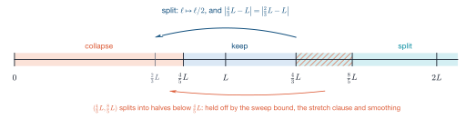
MFTL_REMESH_CUSTOM lets the caller set any band (then MFTLRemeshParamsFinalise).
The sweep order¶
- SPLIT before COLLAPSE: splitting cannot fail (no link condition, no fold test), so the collapse sweep sees edges that are genuinely short.
- COMPACT right after COLLAPSE: flip and smoothing never see a dead entity,
so
MFTLComputeVertexNormalscan run over the whole pool. - FLIP before SMOOTH: the valence criterion reads the connectivity just produced; smoothing does not change it.
- DETECT twice: splits and collapses change which edges exist. A split of a rim edge creates a midpoint on the rim; classified as free, it would slide off the rim, leaving a notch no structural check can see.
Operators under implicit indexing¶
Half-edge \(3t+k\) is corner \(k\) of triangle \(t\), so an operator cannot allocate
a half-edge or patch a next pointer. It rewrites whole triangles and
re-links the twins on the rim of its patch:
| Operator | Allocation | Work |
|---|---|---|
| FLIP | none | two triangles rewritten in place, four rim twins re-pointed |
| SPLIT | one triangle per side (with its three half-edges) | midpoint vertex appended, 2–4 triangles written |
| COLLAPSE | none, and nothing freed | one or two triangles and the origin vertex flagged MFTL_FLAG_DEAD for compaction |
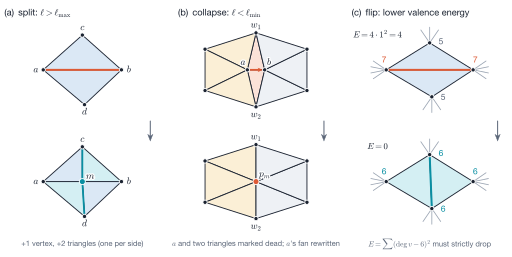
Half-edge ids, \(3\,t_\mathrm{gid}+k\), belong to the slot and stay valid. The flag word does not: when a triangle is rewritten a logical edge may move to another slot, so every operator captures the rim flags (FEATURE, BOUNDARY) first and places them explicitly. A split's midpoint inherits the edge's classification, so the output is consistent before the next detection.
Approval and execution are separate; the predicates carry the whole correctness
argument. SPLIT and FLIP are offered once per undirected edge (the smaller
half-edge index); COLLAPSE is offered both directions, because its feature
rules are asymmetric. MFTL_FLAG_VISITED, cleared once per iteration, keeps an
entity from being operated on twice before the next smoothing.
The collapse predicate¶
Collapsing \(h = (a\to b)\) retires \(a\), moves \(b\) to \(p_m\) and rewrites every triangle of \(a\)'s fan. With \(N(v)\) the one-ring and \(W = N(a)\cap N(b)\) the wing vertices, in evaluation order:
| # | Clause | Statement | Without it |
|---|---|---|---|
| 1 | wanted | \(\lVert e_h\rVert < \ell_{\min}\) | — |
| 2 | features | \(a\) not a corner; \(a\) on a feature curve ⟹ \(b\) too; \(a\) on the boundary ⟹ \(b\) too | the curve or rim is dragged off itself |
| 3 | curve link | not (\(h\) not a feature edge ∧ \(a, b\) both on feature curves); not (\(h\) interior ∧ \(a, b\) both on the boundary) | a chord collapses: an open patch's rim is serrated, two sharp edges of a cube merge |
| 4 | link condition | \(\lvert W\rvert = 2\) (\(1\) at a boundary edge) | two sheets welded into a non-manifold vertex |
| 5 | merged valence | \(3 \le \lvert N(a)\rvert + \lvert N(b)\rvert - \lvert W\rvert - 2 \le\) MFTL_MAX_VALENCE |
untraversable vertex |
| 6 | wing valence | \(\lvert N(w)\rvert \ge 4\) for \(w \in W\) | a tetrahedron passes clause 4 and dissolves |
| 7 | stretch | \(\lVert p_m - p_w\rVert \le \ell_{\max}\) for all \(w \in N(a)\cup N(b)\) | split/collapse oscillation |
| 8 | fold-over | \(\cos\angle(\mathbf n_\text{old}, \mathbf n_\text{new}) \ge\) max_normal_deviation_cos for every surviving triangle; degenerate results refused |
inverted triangles |
\(p_m = p_b\) if \(b\) is a corner or \(b\) alone lies on a feature curve or boundary;
otherwise the minimum-image midpoint (exact on a straight feature, \(O(h^2)\) off a
curved one, acceptable because the edge is short). None of these clauses fails
loudly; clauses 3 and 6 are the ones the textbook link condition does not imply
(test_collapse_refuses_to_dissolve_a_tetrahedron,
test_remesh_of_an_open_patch_keeps_its_rim). The fold test is relative to the
triangle's own edges (squared sine of a corner angle against \(10^{-15}\)), so the
result is independent of the length unit:
test_remeshing_is_independent_of_the_length_unit requires a sphere remeshed at
scale \(2^{-20}\) to equal the unit result times \(2^{-20}\) bit for bit. The
fold-over guard also bounds a runaway once features are spurious (16 702
triangles against 101 048).
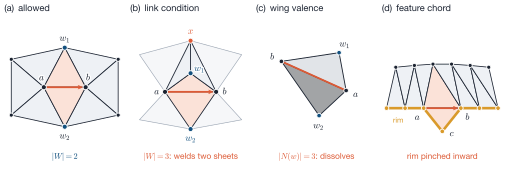
Valence optimisation¶
A flip re-cuts the quad \((a,b,c,d)\), so \(a, b\) lose a neighbour and \(c, d\) gain one. It is accepted only on a strict decrease of
(\(\deg\) counts neighbours; 6 is the regular valence of the plane, 4 of the half-plane). Equality would let two flips alternate forever. Refused for feature and boundary edges, when \(\deg a\) or \(\deg b \le 3\), when \(c\) and \(d\) are already adjacent (a duplicate edge), and when a new triangle would turn past the fold threshold against the quad's normal (a non-convex quad).
Features and smoothing¶
MFTLDetectFeatures recomputes tris.normal and classifies, in linear passes
over undirected edges (a fan walk over outgoing half-edges misses the closing
edge of an open fan):
- an edge is a feature if \(\hat{\mathbf n}_1\cdot\hat{\mathbf n}_2 < \cos\theta_\text{feature}\),
or if it is a mesh-boundary edge (a missing twin on a ghost triangle is the
halo rim, not a boundary;
MFTL_FLAG_BOUNDARYdecides there); - a vertex with exactly two feature edges \(\mathbf d_1, \mathbf d_2\) is a ridge point iff \(-\mathbf d_1\cdot\mathbf d_2 / (\lVert\mathbf d_1\rVert\lVert\mathbf d_2\rVert) > \cos\theta_\text{corner}\); with one, three or more, or a sharper turn it is a corner.
feature_corner_angle is separate from feature_angle_threshold because a
boundary is a feature curve at any threshold: without it the four corners of an
open patch are ridge points that slide off the patch.
Smoothing is a projection¶
| Class | Subspace | Displacement |
|---|---|---|
| free | tangent plane | \((\mathbf I - \hat{\mathbf n}\hat{\mathbf n}^\top)\,\mathbf d\) |
| ridge | curve tangent \(\boldsymbol\tau\) | \((\boldsymbol\Delta\cdot\boldsymbol\tau / \lVert\boldsymbol\tau\rVert^2)\,\boldsymbol\tau\) |
| corner | none | \(\mathbf 0\) |
For a free vertex \(\mathbf d = \sum_i A_i\mathbf c_i/\sum_i A_i - \mathbf p\)
over the incident triangles (MFTL_SMOOTH_TRIANGLE_BASED; area and centroid
offset both come from the two edge vectors leaving \(\mathbf p\)), or the umbrella
mean of the neighbours (MFTL_SMOOTH_VERTEX_BASED); \(\hat{\mathbf n}\) is the
area-weighted vertex normal, refreshed every sweep, and a vertex whose normal is
zero stays put. For a ridge vertex with offsets \(\mathbf d_1, \mathbf d_2\) to its
feature neighbours, \(\boldsymbol\tau = \mathbf d_2 - \mathbf d_1\) and
\(\boldsymbol\Delta = \tfrac12(\mathbf d_1+\mathbf d_2)\). Moving it to
\(\boldsymbol\Delta\) instead cuts the chord: a regular 24-gon ridge shrinks to
\(\cos^{20}(\pi/24) = 0.842\) of its radius in 20 sweeps
(test_a_regular_ridge_is_a_fixed_point asserts drift below \(10^{-12}\)).
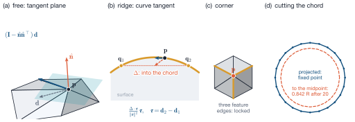
The area weight is the mechanism that equalises triangle size; without it the
operator is nearly the umbrella one (docs/analysis.md §4: 6.0 % volume loss
against 3.5 %). Updates are Jacobi (independent of pool order), and the step
is
with \(\lambda\) = smooth_relaxation, \(\phi\) = smooth_max_step_fraction: the
projection makes a fold unlikely, not impossible, where the normal is ill-defined.
All differences are minimum-image vectors and positions are wrapped. The sweep
reads ghost and frozen vertices but moves neither, which makes a distributed
sweep exact without communication.
Feature detection on a smooth surface¶
On a sphere every detected feature is a false positive, and it removes degrees of
freedom a vertex needed: in the LeVeque test four spurious edges dropped the
worst triangle from 0.797 to 0.045, where it froze, because a constrained vertex
is exempt from smoothing, collapse and flip. Final minimum quality 0.76 with
detection off against 0.0002 at 45°, monotone over five thresholds
(docs/analysis.md §4). Set feature_angle_threshold to 180 for smooth closed
interfaces; boundaries remain features.
Compaction¶
A collapse cannot free anything, so compaction is the deallocator. Half-edges
move as triples with their triangle, which preserves implicit indexing and the
implicit half-edge ids, and one allocation per pool means no sub-array can be
forgotten. out_he_idx is re-derived from the surviving half-edges rather
than remapped, so an index an operator failed to repair cannot survive.
During a parallel sweep appended entities sit past the ghosts,
violating the ownership prefix (invariant 2 of mftl_types.h) until compaction
swaps the two trailing blocks. That is why the parallel gate is
MFTL_FLAG_FROZEN, not index >= n_local.
Splits create and collapses retire ids, so ids stay unique but stop being dense;
since redistribution sizes its arrival tables from next_*_gid, every pass ends
with dense ids. Pool indices and global ids are therefore both unstable across a
remesh: nothing external may hold either.
Distributed remeshing: the obstacle¶
An operator has a modified set (split, flip: the two incident triangles; collapse: \(a\), \(b\) and \(a\)'s whole fan) and an approval set it must read (for a collapse \(N(a)\cup N(b)\) and both fans). A rank may act iff it owns the modified set exclusively and sees the approval set completely. An edge whose endpoints two ranks own satisfies neither; a lock/ask protocol would put a round trip in the innermost loop and make the result depend on message timing. Two exact strategies avoid negotiation altogether:
SPANNING (remesh_parallel.c) |
DISPERSED (remesh_dispersed.c) |
|
|---|---|---|
| regime | \(R_b \gtrsim h\) | \(R_b \le 0.4\,h\) |
| what moves | the cut planes | the bodies |
| placements | ≈ 4 at budget 4; 4–19 for a one-shot remesh | 1 |
| migrations | one per placement (identity skipped), plus one | exactly 2 |
| frozen | \(O(\delta/h)\) of the mesh | nothing |
| id cost | per-body prefix sums over the holders, per placement | one per-body MAX |
| weakness | placements, band precondition | idle ranks when \(B < P\) |
They share no code past MFTLRemeshIterate (different migrations, id schemes
and convergence criteria), so test_the_two_strategies_reach_the_same_mesh checks
the answer: within 4 % in triangle count and 1 % in volume (measured 0.4–2.5 %
and 0.3 % at \(P\) = 1, 2, 4, 8). The tolerance must not become equality: split and
collapse are order-dependent.
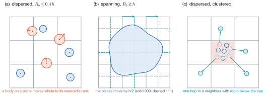
comm_graph by a negotiation that never pushes a rank past its cap.Dispatch¶
MFTLRemeshEnsemble(ens, params, stats) COLLECTIVE
├─ nproc == 1 ─▶ MFTLRemeshObject per object no MPI; converged = true
└─ parallel_strategy
├─ SPANNING ─▶ MFTLRemeshEnsembleParallel
├─ DISPERSED ─▶ MFTLRemeshEnsembleDispersed (measures the bodies itself)
└─ AUTO ─▶ MFTLRemeshChooseStrategyMeasured
├─ MFTLEnsembleComputeTriangleGeometry local
├─ MFTLRemeshMeasureBodies 2 per-body holder reductions
│ + 1 scalar MPI_MAX (r_max)
└─ r_max > dispersed_radius_fraction * box ?
├─ yes ─▶ MFTLRemeshEnsembleParallel
└─ no ─▶ MFTLRemeshEnsembleDispersedMeasured
(the measurement is handed on, not retaken)
The box is the narrowest rank box, or the coarsened box (Coarsening as a yardstick).
dispersed_radius_fraction is 0.4 rather than 0.5 because at \(R = 0.5h\) a body
centred on a box corner reaches two boxes diagonally and the centering migration
leaves the 26-neighbourhood; the margin absorbs one pass of growth. The decision
uses only reduced data (r_max is bit-identical everywhere): two ranks in
different drivers deadlock without a diagnostic.
The spanning driver¶
Run the unmodified serial kernel only where the whole modified neighbourhood is
this rank's alone, then move the cut planes by half a box and run again: what was
on a boundary is now in somebody's interior. Nothing overlaps, so nothing is
negotiated and the result does not depend on timing (digests are bit-identical on
repeated runs, docs/analysis.md §5.3).
One pass¶
MFTLRemeshEnsembleParallel(ens, params, stats) COLLECTIVE
├─ 0 guards: band > 0 (else MFTL_ERROR); Debug: params and id counters agree
├─ 1 COARSENING PRE-PASS if (parallel_coarsen || serial_gather) and P > 1
│ freeze + probe band and frozen share 2 small Allreduces
│ choose group g (GATHER, BAND, FROZEN triggers, cap) @ref rem_coarsen
├─ 2 distinct placements: de-duplicate the phase table over active axes
│ (cuts[k]/g[k] > 1) ▸ n_distinct_placements
├─ 3 PHASE LOOP, at most parallel_phase_budget placements
│ ├─ MFTLRemeshPhaseShift: shift_k = s_k * g_k h_k / 2 local
│ ├─ geometry; MFTLRemeshMigrateShifted
│ │ per entity MFTLRemeshCoarseOwnerProc; 1 LOR: moved anything?
│ │ no ─▶ skip the migration (always for the first placement)
│ ├─ MFTLRemeshMarkFrozen, MFTLDilateFrozenBand, count_hidden_edges,
│ │ band probe; record id watermarks local
│ ├─ MFTLRemeshIterate, FULL iteration count, gated by MFTL_FLAG_FROZEN
│ ├─ assign_phase_gids: MFTLEnsembleExscanBodies (per body, holders)
│ │ + MFTLRemeshSumInts (ops, hidden_long, hidden_short)
│ └─ converged? ops == 0 and hidden == 0 ─▶ done (exact)
│ ops == 0, hidden_long == 0, streak == n_distinct ─▶ done
│ hidden_long > 0 or ops > 0 ─▶ streak = 0
└─ 4 CLOSING (order forced)
redensify_global_ids: prefix sum of OWNED counts per body;
MFTLRemeshSyncGhostIds (keyed on the OLD id); overwrite gid = base + slot
MFTLRedistribute to the canonical planes (replaces stale ghost triangle ids)
clear FROZEN, global counts, triangle geometry, profile (1 Allreduce MAX)
warn once if h <= 4 delta and no coarsening happened
Per placement: one migration (unless the identity), one LOR, the per-body id scan and one 3-int Allreduce. Everything else — the freeze classification and every approval predicate — is local.
The geometric guarantee¶
Placement \(s\in\{0,1\}^3\) puts the planes of axis \(k\) at \(x_k = \min_k + s_k h_k/2 + j h_k\). A point within \(\delta\) of a plane of one placement is at least \(h_k/2 - \delta\) from every plane of the other, so it is interior there iff
Under this condition a point is near the planes of at most one placement per axis: for each axis there is at most one bad value \(b_k\), and the point is interior in placement \(s\) iff \(s_k \ne b_k\) on every axis where \(b_k\) is defined.
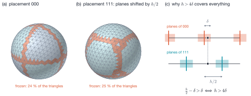
The phase table¶
| Case | axes in conflict | measure | placements that cover every case |
|---|---|---|---|
| slab | 1 | \(O(\delta/h)\) | \(\{000, 111\}\) |
| tube | 2 | \(O((\delta/h)^2)\) | an orthogonal array of strength 2: \(\{000, 011, 101, 110\}\) |
| corner | 3 | \(O((\delta/h)^3)\) | all of \(\{0,1\}^3\) (only \(\bar b\) works) |
MFTL_REMESH_PHASES orders \(\{0,1\}^3\) so that prefixes are useful:
000, 111 (all slabs), 011, 101, 110 (with 000: all tubes), 100, 010, 001 (all
corners). Two placements handle all but \(O((\delta/h)^2)\) of the mesh; the tail
rows find a handful of entities and are cheap, because a silent
MFTLRemeshIterate stops after one iteration. On a grid with an uncut axis rows
coincide (2 distinct placements on \(2\times1\times1\), 4 on \(2\times2\times1\)).
The frozen share¶
A frozen entity is migrated and then not touched, so the frozen share is the
share of every migration that buys nothing. The uniform model
\(f = 1 - \prod_k (1 - 2\delta/h_k)\) gives 87.5 % at the limit \(h = 4\delta\), and
over-predicts by about two in practice (71 % against 36.6 % measured at
\(P = 27\)) because a body does not sample the planes uniformly. Use the measured
MFTL_RemeshStats::frozen_fraction.
"Frozen" is derived locally, and exactly¶
and a rank evaluates this alone from the rule redistribution sends by:
Two 12 B/triangle streams and six integer compares; MFTL_ERROR (\(-1\)) is below
every count, so a genuine boundary does not freeze a triangle. Exactness makes a
dilation unnecessary:
- an unfrozen vertex has only unfrozen (owned, unreplicated) incident triangles;
- an unfrozen triangle has only owned corners, so every vertex an approval reads is owned;
- the halo is vertex-complete, so every fan an approval walks is complete and gives the answer it would give on the whole mesh.
Hence the gates are two flag tests: freeze_blocks_pair (split, flip: either
incident triangle frozen) and freeze_blocks_collapse (either endpoint frozen).
And every ghost is frozen on its owner (it is here because this rank owns a
corner or edge neighbour of it), so ghost copies are still exact after the sweeps
and no ghost position sync is needed inside the loop
(ghosts_agree_with_owners in tests/test_remeshing_parallel.c; frozen_matches_replication checks
the equivalence both ways — "replicated but not frozen" is the fatal direction).
The band is measured¶
The freeze rule's reach bounds \(\delta \le (3 + \texttt{rings})\,\ell_{\max}\), but
the band actually observed on a sphere in \([-1,1]^3\) is \(\approx 0.84\,\ell_{\max}\)
for targets 0.06–0.50; at target 0.12 the bound predicts \(4\delta = 1.92 > h = 1\)
while the pass converges with nothing hidden. So local_band_probe measures it:
the minimum distance over axes to the current placement's planes, maximised
over frozen vertices and over all phases (a coarsening pass lengthens edges, and
the band grows: 0.216 at phase 0, 0.375 later at target 0.40).
A shifted plane needs a floor¶
MFTLRemeshOwnerProc computes \(\sigma = (x_k - \min_k - \text{shift}_k)/h_k\).
Without a shift \(\sigma \ge 0\) and (int) is \(\lfloor\cdot\rfloor\); with a shift
\(\sigma\) reaches \(-0.5\), where (int) truncates towards zero and gives the
sliver \([\min_k, \min_k + \text{shift}_k)\) to cell 0 instead of cell
\(\texttt{cuts}_k - 1\) across the seam. On a periodic axis the index is therefore
\(\lfloor\sigma + \texttt{cuts}_k\rfloor \bmod \texttt{cuts}_k\). The wrong rule is
still a consistent rule — only the seam plane never moves, so entities on it are
frozen in every phase (found by mutation testing;
test_a_sphere_on_the_periodic_seam_remeshes_everywhere).
For the same reason MFTLRemeshMeasureBodies averages a periodic coordinate as
an angle,
the arithmetic mean puts a seam-straddling body in the middle of the domain with
half the domain as radius
(test_a_seam_straddling_droplet_is_not_measured_as_domain_sized).
Global ids¶
Ids must be unique across ranks and dense at the end (a rank-encoded 64-bit id would be sparse by construction).
Per placement. The operators draw ids from the object's counter, so two
ranks that both split an edge of a body produce the same id — harmless, because
nothing communicates before the fix-up. Entities created in the phase are those
with \(\texttt{gid} \ge w\), the watermark recorded before the sweeps. With \(c_r\)
the count this rank created and \(\mathrm{Exscan}\) the exclusive prefix sum over
the body's holders in ascending rank order (MFTLEnsembleExscanBodies),
A scan, not a reduction: two holders need different ranges, which no
combination provides. Its ranges tile \([w, w')\) exactly
(test_the_scan_tiles_every_body_exactly_once).
At the end. redensify_global_ids renumbers owned entities by slot,
\(\texttt{gid}(v) = \mathrm{Exscan}(n^V_\text{local}) + v\) (likewise triangles,
half-edges \(3\,\texttt{gid}(t)+k\)), in a forced order: scan first; then
MFTLRemeshSyncGhostIds, keyed on the OLD id (renumbering first would make every
request unanswerable, and ghosts would silently keep stale ids); overwrite last.
Ghost triangles are not exchanged: the closing redistribution re-receives them,
which is why it comes after.
The convergence certificate¶
Counting "approved, then refused by the gate" reported 3 permanently blocked operations on a converged \(P = 4\) sphere: around a ghost vertex the one-ring is incomplete, so a rank approves collapses the owner rejects. The gate therefore runs first, and the certificate counts out-of-band edges hidden by it, each edge attributed to the owner of the incident triangle with the smaller global id (so it is counted once mesh-wide):
- \(\text{hidden}_\text{long}\): \(\ell > \ell_{\max}\) and an incident triangle frozen (the split gate);
- \(\text{hidden}_\text{short}\): \(\ell < \ell_{\min}\) and an endpoint frozen (the collapse gate).
| Exit | Test | Why sound |
|---|---|---|
| fast | ops \(= 0\) ∧ hidden \(= 0\) | every out-of-band edge was offered to a rank allowed to act, and it declined on merit |
| slow | ops \(= 0\) ∧ hidden\(_\text{long} = 0\) for n_distinct consecutive placements |
a covering set: under \(h > 4\delta\) every entity was interior in one of them |
\(\text{hidden}_\text{long}\) is exact (an offered long edge is always split), so non-zero resets the streak; \(\text{hidden}_\text{short}\) has false alarms (a short edge no collapse may remove, sitting on a band), which the slow exit absorbs. The certificate is measured before the sweeps of a phase, so the smoothing after the last sweep can still move a few edges out of the band.
Coarsening¶
When more ranks shrink \(h\) below \(4\delta\), bands along the cut planes are
silently never remeshed. A coarser decomposition needs no second communicator,
because redistribution accepts any destination per entity (MFTL_OwnerMap):
MFTLRemeshCoarseOwnerProc maps a fine cell \(i_k\) to the representative of its
group, \(\lfloor i_k/g_k\rfloor g_k\), with the remainder absorbed into the last
group (a short group would have a narrower \(H\) and could re-create a frozen seam).
The covering argument holds with \(H_k = g_k h_k\), and
per axis: a domain thin in \(x\) loses a factor 2, not 8. parallel_coarsen = 1
(default) arms the decision; on a healthy partition the factors are
\(\{1,1,1\}\) and the mesh is bit-identical
(test_the_fallback_stays_off_on_a_healthy_partition compares mesh_digest;
arming costs about 0.5 % of a timestep). When active, \(1/G\) of the ranks do all
the sweeping; a longer target length or the dispersed strategy is cheaper when
available.
| Trigger | Fires when | Default | Character |
|---|---|---|---|
| BAND | \(h_k \le 4\delta\) on a cut axis | on | required; the alternative is an un-remeshed lattice |
| FROZEN | frozen_fraction > coarsen_frozen_fraction |
off | trade: 36.6 % frozen → converged instead of 32 hidden edges, for 2× wall clock |
| GATHER | owned triangles \(\le\) serial_gather_max_triangles |
off | trade: crossover ~50–100 triangles per rank |
GATHER short-circuits the others with \(g_k = \texttt{cuts}_k\); BAND and FROZEN are
evaluated through the same MFTLRemeshCoarseningFactors, FROZEN by inflating the
band: requiring each of \(n\) cut axes to keep an unfrozen share
\(u = (1-f^*)^{1/n}\) gives \(g_k = \lceil 2\delta/((1-u)h_k)\rceil\), i.e. the band
\(\delta' = \delta/(2(1-u))\). A cap parallel_coarsen > 1 shrinks the largest
factor first and reports once if it binds below what BAND required. The decision
uses \(\max(\text{measured band}, \ell_{\max})\), since a coarsening pass lengthens
edges.
The gather is the safest coarse map: nothing is replicated or frozen, there is
one distinct placement, and a pass costs exactly two migrations; every rank sends
to one destination. A coarse destination lies outside the 26-neighbourhood, so
redistribution and MFTLRemeshSyncGhostIds take their global paths (both detect
it). MFTLUpdateGhostPositions has no global fallback, which is why a coarse
partition never outlives the call: both drivers close with MFTLRedistribute.
Tables: docs/analysis.md §5.6.
The dispersed driver¶
For bodies smaller than a rank box — emulsions, sprays, bubbly flows — migrate each body whole onto one rank and remesh it serially: no shared edges, no freezing, two migrations per pass.
One pass¶
MFTLRemeshEnsembleDispersed(ens, params, stats) COLLECTIVE
│ (public entry: geometry + MFTLRemeshMeasureBodies; AUTO hands its own on)
▼
MFTLRemeshEnsembleDispersedMeasured
├─ 0 guards (band > 0; Debug: params agree)
├─ 1 ADMISSION, before anything moves
│ too_large = bodies with R > fraction * box, counted by lowest holder;
│ reachability veto (home(o) a neighbour of every holder) 1 Allreduce
│ too_large > 0 ─▶ whole ensemble to MFTLRemeshEnsembleParallel
├─ 2 DESTINATIONS (assign_destinations), neighbourhood only
│ dest = MFTLGetOwnerProc(centroid) the production rule
│ lowest holders publish (gid, home, weight) 1 neighbourhood gather
│ total, heaviest 2 scalar Allreduces
│ balance if slack > 0, P > 1 and no veto:
│ advertise room; 3 rounds of ask / grant / ship (directed, 1-2 doubles)
│ home publishes (gid, dest, weight) for moved bodies 1 gather
│ peak load; idle and reassigned counts 2 scalar Allreduces
├─ 3 MFTLRemeshMigrateToRanks: one destination per body; Debug: no ghosts left
├─ 4 MFTLRemeshObject per held body; MFTLRemeshRenumberGlobalIds (always)
├─ 5 id counters: per-body MAX over the holders; busiest rank: 1 Allreduce
└─ 6 MFTLRedistribute back to the geometric partition; counts; geometry; profile
Admission is on the radius, not on the outcome. A one-destination migration
makes any body local — a domain-spanning jet would arrive whole on one rank,
report itself perfectly local and serialise the largest object onto one rank's
memory, with a migration that leaves the stencil. Deciding before anything moves
also means the spanning fallback never sees a half-remeshed ensemble. The count
uses lowest_holder so that a body held by four ranks is counted once (without it
the driver printed "4 of 1 bodies are wider than a rank box").
Ids need almost nothing. After centering exactly one rank holds any entity of a body, and ids live in a per-body space, so the owner's counter is unique. The renumbering is unconditional (density is required by the next redistribution), and the other holders learn the counters by a per-body MAX, to which a rank holding nothing contributes zero (not a stale value, which would be too large for a body that shrank).
Load balance¶
Bodies go where their centroids are, and centroids cluster. Two situations look alike in a profile and call for opposite responses:
| \(B \ge P\) | \(B < P\) | |
|---|---|---|
| cause | bodies sit in few boxes | fewer bodies than ranks |
| fixable | yes: reassign | no: a body is the smallest unit of work |
| read | load_imbalance |
n_ranks_idle |
With weights \(w_b\) (global triangle counts),
a cap below the heaviest body would ask for an impossible assignment.
One rank decides each body¶
MFTL_OwnerMap is undefined if two ranks name different destinations for one
entity. Instead of replicating every body's centroid and weight on every rank
(\(O(B)\) per rank), the owner of body \(o\)'s reduced centroid, \(\mathrm{home}(o)\),
decides and publishes the verdict one hop along comm_graph. The precondition
is tested by each holder locally and agreed by one reduction. It implies both
messages: home can be told (the graph is symmetric and lowest_holder is a
holder) and home can tell every holder. A failure (n_bodies_unreachable) falls
back to plain centroid ownership, never to replication.
A negotiation, not a greedy¶
Every overloaded rank sees the same idle neighbour. So a rank advertises its room (cap − load); an overloaded rank asks a few neighbours, emptiest first, for all their room until its excess plus one body is covered; each neighbour grants its real room to askers neediest first, so \(\sum_s \text{grant}_{s\to r} \le \text{room}_r\) and no rank is pushed past its cap. Bodies are placed heaviest first. Two silent failures were found by measurement: a proportional ask over 26 neighbours returns grants smaller than one body, so nothing moves (108 bodies on 27 ranks stuck at imbalance 2.00); and a tie-break identical on every rank starves one target (1 of 8 ranks idle), so ties break on the neighbour's cell offset relative to the asker. Rounds are bounded at three (two sufficed everywhere measured); running out leaves a reported imbalance, never a wrong mesh.
\(4P\) droplets packed into one rank box (remesh_regime_sweep -only l):
| \(P\) | imbalance | idle ranks | moved | wall clock |
|---|---|---|---|---|
| 2 | 2.00 → 1.25 | 1 → 0 | 3 / 8 | 1.45× less |
| 4 | 4.00 → 1.25 | 3 → 0 | 11 / 16 | 2.5× |
| 8 | 8.00 → 1.25 | 7 → 0 | 27 / 32 | 5.0× |
| 27 | 27.00 → 1.25 | 26 → 0 | 103 / 108 | 3.3× |
No digest can distinguish a replicated from a local balancer — both give a
correct, balanced mesh — so the scaling property is tested on the payload:
test_the_balancer_payload_ignores_bodies_a_rank_does_not_hold requires a rank
holding no body to stage the same number of doubles when the ensemble doubles
(25 / 49 / 85 at \(P\) = 2 / 4 / 8). Weight moves at most one cell per pass. The
balancer decides who remeshes, not who holds the mesh afterwards.
Coarsening as a yardstick¶
\(R_{\max} > 0.4\,h_{\min}\) would send a spray to the spanning driver merely
because more ranks shrank \(h\). With parallel_coarsen armed the admission test
uses the coarsened box \(g_k h_k\); the destinations do not change (coarse routing
would restrict them to \(P/G\) ranks and undo the balancer). Unbounded, this is
harmful — on a \(2\times1\times1\) grid the coarse box is the whole domain and a jet
would be serialised onto one rank — so dispersed_box_min relaxes only when
\(B \ge P\) (otherwise ranks are idle anyway) and \(G < P\) (merging everything is
the gather, a spanning decision bounded by a triangle count). Chooser and driver
use the same function. test_small_bodies_at_a_fine_grid_stay_dispersed checks
both directions on a \(\{P,1,1\}\) grid.
All the MPI is in one file¶
| Function | Collective | Volume |
|---|---|---|
MFTLRemeshMigrateShifted |
LOR + MFTLRedistributeWithOwners |
up to 87.5 % of the mesh per placement change |
MFTLRemeshMigrateToRanks |
MFTLRedistributeWithOwners |
whole bodies |
MFTLRemeshSumInts |
Allreduce(SUM) | 3 ints per placement; the dispersed gates |
MFTLRemeshAgree* |
Allreduce | a few scalars |
MFTLRemeshNeighborGather / Allgather / Alltoall |
comm_graph |
3 doubles per body a rank speaks for or moves; 1–2 doubles per neighbour per round |
MFTLRemeshMeasureBodies |
2 × MFTLEnsembleReduceBodies + scalar MPI_MAX |
9 + 1 doubles per local body |
MFTLRemeshSyncGhostIds |
request/reply over comm_graph (global fallback) |
4 B per ghost vertex |
MFTLRemeshAgreeParams |
Allreduce(MIN) | 49 doubles, once per call, at the first collective |
Nothing in src/remeshing/ allocates or sends a quantity proportional to \(B\);
proportional to \(P\) are only the [nproc] inverse neighbour table of
MFTLRemeshSyncGhostIds and redistribution's own arrays.
test_remeshing_mpi_is_confined is a CMake source check (a scan for MPI_*(
outside remesh_comm.c; hence the MFTLRemeshWallTime wrapper). It exists
because the first version broke the rule twice, each change small and correct: a
cut-plane offset in MFTLGetOwnerProc, the body of compute_owners, cost
1.70× on the per-timestep ownership loop (1.79 → 3.05 ns/entity, 42 → 89
instructions), and a "new global id" field added two tests per ghost to the
per-timestep ghost exchange. Both were replaced by one seam, MFTL_OwnerMap
(NULL on the production path) — an ownership array, which the dispersed
strategy needs anyway.
parallel_phase_budget¶
The default, 32, runs to a fixed point: right for a one-shot remesh far from its
target, wrong in a per-timestep loop. LeVeque deformation, 150 remeshed steps
(docs/analysis.md §5.1):
| budget | \(P{=}1\) phases | \(V/V_0\) | min \(q\) | ms/step | \(P{=}4\) \(V/V_0\) | min \(q\) | ms/step |
|---|---|---|---|---|---|---|---|
| 2 | 2.0 | 0.769 | 0.856 | 20.4 | 0.745 | 0.897 | 12.9 |
| 4 | 3.7 | 0.733 | 0.836 | 37.8 | 0.771 | 0.879 | 16.7 |
| 8 | 5.7 | 0.683 | 0.459 | 52.7 | 0.670 | 0.796 | 35.4 |
| 32 | 13.3 | 0.682 | 0.278 | 99.0 | 0.639 | 0.621 | 84.7 |
Serial reference: \(V/V_0\) 0.751, min \(q\) 0.876, 7.1 ms/step. Volume and quality get worse as the budget grows — re-converging an already good mesh every step is split/collapse churn that erodes an under-resolved surface — and the cost is linear in the placements. At budget 4 the distributed result at \(P = 4\) matches or beats the serial one on every measure.
| Use | Setting |
|---|---|
| per-timestep loop | 2–8; 4 was the best compromise. converged == false is normal: the mesh is maintained, not converged. |
| one-shot remesh | ≥ 32, and check converged. Going 1280 → 3830 triangles took 4 / 6 / 19 / 17 placements at \(P\) = 1 / 2 / 4 / 8. |
The default stays at 32 because a too-small budget fails loudly in the one-shot case, while a too-large one fails quietly in the loop. At budget 4 the placement count saturates (3.83 → 3.96 from \(P\) = 2 to 8) and the overhead on a fixed problem grows 33 % for 4× the ranks; nothing has been measured above \(P = 8\) or on a cluster.
Reading the diagnostics¶
| Symptom | Read | Likely cause, remedy |
|---|---|---|
converged == false, one-shot pass |
n_phases, n_edges_hidden_long |
budget too small (raise it), or work hidden (next row) |
n_edges_hidden_long > 0, persistent |
band_measured vs \(h/4\), coarsen_trigger |
\(h \le 4\delta\): longer \(L\), fewer ranks, or let BAND coarsen |
| pass bound by migration | frozen_fraction, t_migrate vs t_sweep |
30–60 % frozen: coarsen_frozen_fraction may help; below, the budget |
| idle ranks, DISPERSED | n_ranks_idle, load_imbalance |
balanced but idle ⟹ \(B < P\) (unfixable); imbalanced ⟹ check n_bodies_unreachable, slack |
| DISPERSED became SPANNING | n_bodies_not_centred, strategy |
a body outgrew the admission box (e.g. after coalescence) |
| quality collapses at one step | n_feature_edges |
features on a smooth surface: feature_angle_threshold = 180 |
MFTL_ERROR, "band is invalid on at least one rank" |
— | the band came from MFTLMeanEdgeLength on a distributed object on a rank holding nothing; use MFTLEnsembleMeanEdgeLength |
MFTL_ERROR, "different parameter blocks" |
the field named on stderr | a parameter derived from rank-local data; every field must be bitwise identical on every rank |
The timers are maxima over ranks (the slowest rank sets the wall clock of a synchronised loop) and are reduced unconditionally — a collective gated on the caller passing a stats struct would deadlock.
Where this page comes from
This page is generated from src/remeshing/README.md in the MFTL library repository, which is also
what the Doxygen manual reads. Edit that file, not this page.
src/bvh/ — LBVH and contact detection¶
Public header: include/mftl_bvh.h · Layer: 3 ·
Module group: mftl_bvh
| File | Job |
|---|---|
bvh_build.c |
primitive access, Morton keys, radix split, bottom-up fit, refit-only path |
bvh_traverse.c |
dual-tree traversal over an explicit stack, batched leaf phase, the ensemble pipeline |
bvh_predicates.c |
Shewchuk-adaptive orient3d, Guigue–Devillers overlap, exact triangle–triangle distance |
bvh_internal.h |
outward float rounding, box overlap, the two module-private build entry points |
Warning
bvh_predicates.c must be compiled with -ffp-contract=off (set in
CMakeLists.txt); see bvh_fma.
Contact detection is a broad phase (a tree of boxes: which triangle pairs
deserve an exact test), a narrow phase (exact predicates: are they within
the envelope), and, on a distributed mesh, the spatial halo
(src/communication/ — Distributed memory) that brings the other side of a cross-rank contact to the
rank that must report it.
The ensemble pipeline¶
MFTLEnsembleIntersectObjects(ens, params, callback, user_data) COLLECTIVE
├─ n_bodies_global < (self_pairs ? 1 : 2) ? ─▶ return (GLOBAL count: all
│ ranks must agree)
├─ 1 MFTL_GenerateLBVH per body THIS RANK HOLDS local
├─ 2 MFTLSpatialHaloResolveRadii: per-body reduction over the
│ holders + (gid, radius) to the 26 neighbours collective
│ MFTL_BVHSetGlobalRadius per tree (refit only) local
├─ 3 MFTLExtendSpatialHaloNearBodies: extents + envelopes out,
│ patches and candidate pairs back collective
├─ 4 per directory entry: MFTL_BVHSetHalo (rebuild), radius last local
├─ 5 per candidate pair: MFTL_IntersectObjects local
└─ 6 destroy trees and halo
- The radii come first. The envelope is a fraction of the body, and a body's
size is only known collectively; this rank's share would make the detection
distance depend on the process count (
MFTL_BVH::radius_hint). - One exchange for the whole ensemble. Its collectives are two neighbourhood allgathers whose number does not depend on the pairs.
- Pairs are derived, not enumerated. The envelopes travel with the extents,
and a uniform grid over the arrivals yields the candidates. Six well-separated
touching couples (6 of 66 pairs real): 6 / 6 / 9 / 18 / 6 candidates over all
ranks at np = 1 / 2 / 4 / 8 / 27, against 66 / 132 / 264 / 528 / 1782 for all
pairs (
test_the_broad_phase_finds_the_pairs_without_enumerating_them). - Trees are
O(local bodies). A body this rank holds nothing of but received a patch for gets a tree over a shared empty object (all primitives resolve through the patch) — which is whyMFTL_GenerateLBVHreturns an empty hierarchy rather thanMFTL_NULLfor an empty partition. - Self-proximity (
self_pairs) tests a body's owned triangles (A side, zero envelope) against its tree with patch (B side). A zero A-side envelope makes the broad phase admit \(\tau_B\) instead of \(\tau_A+\tau_B\); with both inflated a 17k-triangle tube produced 129 candidates per triangle.
Construction¶
Primitives¶
The BVH stores no geometry; it indexes a primitive set
Both kinds are read through MFTL_BVHPrimVerts, which gathers the current
corners with minimum-image edges, so the three corners are always mutually
unwrapped and "local or remote" is one index comparison.
Morton key¶
The key of a primitive is the Morton code of the centroid of its seam-consistent corners, deliberately not wrapped back into the domain: a wrapped centroid is right for "where is this triangle" (redistribution routes by it) but as a sort key puts two neighbours across a seam at opposite ends of the key range. With \([\ell_k, h_k]\) the centroid box and one scale \(s = \max_k (h_k-\ell_k)\) for all axes (cubic cells, as in the pool renumbering),
the same 63-bit MFTLMorton3D key as MFTLObjectReorderMorton. Any finite
\(s > 0\) is valid; there is no absolute floor. Keys and indices are sorted
together by MFTLSortPairs64, a stable radix sort, so the tree is a
deterministic function of the input (test_refit_only_matches_full_rebuild
compares trees node by node).
Radix split¶
The tree is a binary radix tree over the sorted keys (Lauterbach et al. 2009, with Karras' 2012 uniqueness augmentation). A node covering sorted slots \([f, l]\) splits where the highest differing key bit changes. With the common-prefix length
the split is \(\gamma = \max\{m \in [f,l) : \delta(f,m) > \delta(f,l)\}\), found by binary search because \(\delta(f,\cdot)\) is non-increasing over sorted keys; the children are \([f,\gamma]\) and \([\gamma+1,l]\).
- Why the index is part of the key. Two triangles in one Morton cell share a code — common for a finely resolved interface — and equal keys never split. Comparing \((Z_i, i)\) lexicographically makes all keys unique without another sort and bounds the depth by 95.
- The split is a plane. The first differing bit at position \(\pi = 63-\delta\) belongs to axis \(\pi \bmod 3\) at level \(\lfloor \pi/3 \rfloor\), so the children are separated by a dyadic plane of the Morton grid — no partitioning pass is needed.
- Node budget. \(n\) leaves give at most \(2n-1\) nodes; the array is allocated
at \(2n\) and never grown. Leaves hold at most
leaf_size(default 4) primitives.
Fit and refit¶
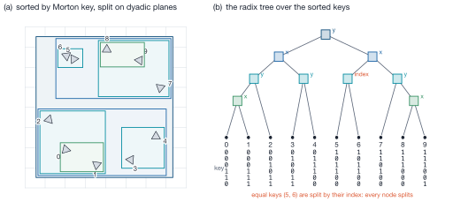
MFTLBVHRefit is three linear passes, shared by the build and by
MFTL_RefitLBVH so they cannot disagree:
- Reverse scan of the node array: leaves fit their primitives, internal
nodes merge their children. Valid because a child pair is allocated after its
parent (
left(i) > i,right(i) = left(i)+1), so array order is a reverse topological order — no stack, no recursion. - The root box gives
bounding_radius, thentolerance(The contact envelope). - Forward scan inflating every node by \(\tau\). With \(G_\tau(B) = [B^{\min}-\tau, B^{\max}+\tau]\) and \(\oplus\) the min/max merge, \(G_\tau(B_1 \oplus B_2) = G_\tau(B_1) \oplus G_\tau(B_2)\), so inflating the nodes afterwards equals inflating the leaves first — without knowing the radius in pass 1.
MFTL_BVHSetGlobalRadius and MFTL_RefitLBVH re-enter at the fit: neither the
order nor the shape depends on the tolerance or on vertex motion.
Refit or rebuild¶
MFTL_RefitLBVH returns MFTL_ERROR (not an assertion — "refit if you can,
otherwise rebuild" is supported) when a primitive count changed. Leaves address
primitives by index; after a re-triangulation the indices name different
triangles and a refit would report wrong contacts, not missing ones.
Attaching a halo rebuilds¶
MFTL_BVHSetHalo rebuilds the whole tree over local plus received primitives.
The Morton order is a function of the whole set, so leaves cannot be appended to
a tree over the local part: the result would still terminate and still be
fitted, and would silently miss contacts.
Node layout¶
32 bytes: six float box bounds and a uint64_t payload.
| bit 0 | bits 1–31 | bits 32–63 | |
|---|---|---|---|
| leaf | 1 | primitive count | first slot in prim_indices |
| internal | 0 | left child (right = left + 1) | — |
Boxes are rounded outward to float: a round-to-nearest cast can shrink a box by an ulp and exclude a vertex lying on its own leaf's face. With \(\epsilon_s = 2.4\cdot10^{-7} \approx 2^{-22}\) and \(\eta = 10^{-30}\),
(upper sign for \(v \ge 0\)), which leaves at least one float ulp of margin after both roundings; \(\eta\) keeps the rounding outward through zero and the denormals. A float box is thus a conservative superset of the double one — the only direction in which a broad phase may err.
Periodicity is two problems¶
Within an object, a triangle straddling a seam has corners on both sides of
the box, so raw coordinates give a centroid in the middle of the domain and a
domain-spanning box. Fixed by MFTL_BVHPrimVerts (minimum-image edges) and the
unwrapped centroid (test_periodic_morton_of_a_straddling_object). A straddling
object's root box legitimately spans the domain.
Between objects, two bodies at opposite faces are neighbours although a domain length apart in stored coordinates; no per-triangle arithmetic can see it. The pair is traversed once per image of B,
each gated by one root-box test (test_contact_across_a_periodic_face). The
shift is added to the B side inside flush_batch, because it belongs to the
image being traversed, not to the primitive.
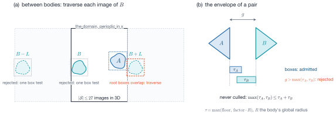
The contact envelope¶
- Relative, not absolute. An absolute gap is correct at one length scale
only; a run with millimetre droplets and a metre-scale body has no single
right number (
test_detection_at_two_disparate_length_scales). - \(R\) is half the longest side, not half the diagonal, so \(R\) equals the
radius of a sphere and
proximity_factormeans what it says (the diagonal would inflate every envelope by \(\sqrt3\)). - \(R\) is global. The root box covers one rank's share; the pipeline replaces
it with the body's global radius (
MFTL_BVHSetGlobalRadius, from the halo's per-body holder reduction), so the detection distance does not depend on the partition (test_tolerance_is_independent_of_the_partition). - One \(\tau\) inflates the leaves and is the narrow-phase gap.
A pair is judged at \(\tau_{AB} = \max(\tau_A, \tau_B)\). The broad phase admits
every pair with gap \(g \le \tau_A + \tau_B\) (each tree carries its own
inflation), and \(\max(\tau_A,\tau_B) \le \tau_A + \tau_B\), so no contact the
narrow phase accepts can be culled. The price: a µm droplet against a metre
body is judged at the metre scale, and the envelope can exceed the droplet's
diameter. For a physical gap set proximity_factor = 0 and
proximity_floor = gap (test_two_length_scales_share_the_larger_envelope).
The traversal¶
MFTL_IntersectObjects walks the two trees with an explicit stack of node
pairs (initial depth 256, doubling): the loop-invariant state stays in
registers, a pathological pair cannot overflow the call stack (a dual
traversal is not tail-recursive), and leaf pairs can be batched.
pop (a, b) ─▶ boxes overlap (with the image shift)? no ─▶ next
├─ both internal: split the one with the LARGER box volume
├─ one leaf: split the other
└─ both leaves: A-side primitive owned here? no ─▶ next
append (pA, pB) to the batch; flush at 64
Descent¶
Splitting the node with the larger volume \(V = \prod_k (n^{\max}_k - n^{\min}_k)\) makes the pair of boxes converge fastest.
Who reports a contact¶
A distributed contact is reported by the owner of the A-side primitive, and only by it:
- trees are built over owned triangles (
include_ghosts = false); with the redistribution halo included, two ranks would report the same pair; - only B-side triangles travel in the spatial halo, and a leaf pair whose A side is a halo primitive is skipped (one compare);
- the candidate list is ordered (
body_a < body_b), only the larger id travels, and duplicates are removed, so every unordered pair is traversed once.
Wrong in one direction, cross-rank contacts are missed; in the other, every
cross-rank contact force is applied twice.
test_distributed_contacts_match_the_serial_answer and
tests/test_bvh_ghosting.c compare the gathered set against the answer on
the unpartitioned mesh, which rules out both.
The batch¶
flush_batch receives up to 64 independent \((p_A, p_B)\) tests — the seam for a
SIMD narrow phase, which would change that one function. It is scalar today.
The narrow phase¶
MFTL_TriTriProximity(A, B, τ) returns 1 if the triangles intersect or their
distance is at most \(\tau\):
MFTL_TriTriIntersect ─▶ 1 ? yes ─▶ contact
│ no
└─ τ > 0 and min over 9 edge–edge and 6 point–face d² ≤ τ² ─▶ contact
The intersection test must come first: an edge piercing the interior of the other face has positive distance to every edge and vertex, so the fifteen distance terms cannot see it. Measured: 31 ns/pair for the intersection test, 176 ns/pair for the full proximity test.
The orientation predicate¶
six times the signed volume of the tetrahedron; its sign says on which side of
the oriented plane through \(\mathbf b,\mathbf c,\mathbf d\) the point
\(\mathbf a\) lies. The query point comes first. Plane-first order is a cyclic
4-permutation — odd — and negates every sign; the early rejection survives that
(it compares products) but the dispatch takes the mirror branch and reports a
clean miss for crossing triangles (test_tri_tri_intersect_basic_cases).
Guigue–Devillers¶
(Guigue & Devillers, J. Graphics Tools 8(1), 2003.) With \(d_{p_1}, d_{q_1}, d_{r_1}\) the orientations of A's corners against B's plane and \(d_{p_2}, d_{q_2}, d_{r_2}\) of B's against A's:
- Early rejection: \(d_{p_1}d_{q_1} > 0 \wedge d_{p_1}d_{r_1} > 0\) (all of A strictly on one side) → disjoint after 3 predicates; likewise for B after 6.
- Otherwise the planes meet in a line \(L\), each triangle cuts \(L\) in a closed
interval, and the triangles intersect iff the intervals overlap. The dispatch
permutes A so that \(p_1\) is its isolated corner and B so that its
orientation relative to A is fixed — branching on signs already computed —
after which (
check_min_max)
At most eight predicates per pair, no division and no constructed point. Normalising only which vertex is isolated, and not B's orientation, gets the final test wrong on half the inputs.
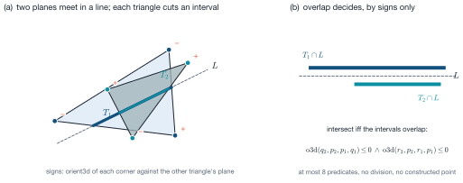
orient3d for each corner against the other triangle's plane (coral) rejects most pairs at once. Otherwise the two planes meet in a line \(L\) and each triangle cuts a closed interval from it. (b) The triangles intersect iff the intervals overlap, which two more orientation signs decide: no division, no constructed point.The coplanar case¶
Reached only when all six predicates are exactly zero. The pair is projected by
dropping the axis \(k^\ast = \arg\max_k |n_k|\) of A's normal — the projection with
the largest area ratio \(|n_k|/\lVert\mathbf n\rVert\), hence the best
conditioned — and tested completely in 2D: nine segment crossings, plus one
corner of each triangle tested for containment in the other (if no boundaries
cross, the triangles are disjoint or nested). The 2D determinant is plain, not
adaptive; MFTL_TriTriProximity's distance test resolves a coplanar pair within
\(\tau\) regardless.
Exact distance between disjoint triangles¶
The distance between two disjoint closed triangles is attained between two edges or between a vertex and the interior of the other face, so
is exact. Edge–edge: with \(\mathbf u = P_1-P_0\), \(\mathbf v = Q_1-Q_0\),
\(\mathbf w = P_0-Q_0\), \(a = \mathbf u\cdot\mathbf u\), \(b = \mathbf u\cdot\mathbf v\),
\(c = \mathbf v\cdot\mathbf v\), \(d = \mathbf u\cdot\mathbf w\),
\(e = \mathbf v\cdot\mathbf w\), the stationary point of
\(\lVert P_0 + s\mathbf u - Q_0 - t\mathbf v\rVert^2\) solves a \(2\times2\) system
with Gram determinant \(D = ac-b^2\); \(s\) is clamped to \([0,1]\), \(t\) recomputed
and clamped, and \(s\) recomputed if \(t\) was clamped, which gives the exact
minimum over the unit square. Point–face: the barycentric
coordinates of the orthogonal projection come from the same Gram system; if the
projection falls outside the triangle the routine returns MFTL_DBL_MAX, since
the boundary is covered by the edge–edge terms.
Degeneracy tests are dimensionless¶
\(D\) has units of length⁴, so an absolute guard (D < 1e-12) fired for every
triangle of a mesh at 20 µm and silently removed all point–face terms — exactly
the vertex-into-face configuration of a resolved contact. The guards compare
which means the same at every length scale.
Why only orient3d is adaptive¶
It is the only predicate whose sign decides the answer; a wrong sign takes a branch for a configuration that does not exist and typically reports a clean miss for crossing triangles. Distances and interval endpoints degrade continuously and only move decisions sitting on the tolerance. The determinant is ill-conditioned exactly where this library works: thin films (four points coplanar to within the gap) and small features at large coordinates (the differences cancel the offset).
The filter¶
Shewchuk's adaptive predicate (Discrete Comput. Geom. 18, 1997) evaluates the plain determinant and its permanent (with \(\mathbf a' = \mathbf a-\mathbf d\) etc.)
If \(|\det| > \varepsilon_A\,\text{perm}\) the sign is certain — the path nearly every pair takes. Otherwise two correction stages with bounds \(\varepsilon_B\), \(\varepsilon_C\) follow, and finally exact expansion arithmetic:
with the machine \(\varepsilon\) measured once by exactinit() (halving until
\(1+\varepsilon = 1\)), so the bounds are true for the actual arithmetic.
Error-free transformations¶
The exact stages use operations returning a rounded result and its exact
residue, \(x + y = a \circ b\) exactly: Two_Sum (\(y = (a+b)-x\) by Knuth's
branch-free formula) and Two_Product, whose residue is assembled from
Dekker's split \(a = a_\text{hi} + a_\text{lo}\) (at most 26 significant bits
each, so every partial product is exact). An expansion is a
magnitude-ordered, non-overlapping list of such components whose sum is the
exact value.
-ffp-contract=off is correctness¶
Two_Product relies on \(x - a_\text{hi}b_\text{hi}\) being rounded separately.
A fused multiply-add contracts it into one rounding, the residue comes out zero,
and every guarantee silently disappears while the results still look plausible.
The file carries #pragma STDC FP_CONTRACT OFF, and CMakeLists.txt sets the
flag for compilers that ignore the pragma. Do not remove either.
Cost and benefit¶
Measured by examples/orient3d_predicate_profile.c (20 000 samples per row, the
adaptive result as exact reference):
| gap / triangle size | plain determinant misclassified |
|---|---|
| \(\ge 10^{-12}\) | 0 % |
| \(10^{-14}\) | ≤ 0.035 % |
| \(10^{-15}\) | ≤ 0.125 % |
| \(10^{-16}\) | ≤ 4.7 % |
The adaptive form costs 3.66 ns against 1.83 ns in general position (40 ns only
for exactly coplanar input). A thin-film model works at gaps of \(10^{-6}\) to
\(10^{-9}\) of the body size, where the plain form would almost surely be right;
the adaptive one is kept because it costs at most 6.2 % of a
MFTL_TriTriProximity call and removes a silent failure.
MFTL_Orient3DFast is the plain form.
Cost¶
Only the narrow-phase numbers are measured; the rest is argued from structure,
and there is no BVH section in docs/analysis.md yet.
| Stage | Work |
|---|---|
| keys + stable radix sort | \(O(n)\) |
| radix split | \(O(n)\) nodes, binary search per split, depth ≤ 95 |
| fit / refit | \(O(\text{nodes} + n)\), three linear scans |
| periodic images | ≤ 27 root-box tests |
MFTL_TriTriIntersect |
3–8 orient3d; 31 ns/pair |
MFTL_TriTriProximity |
the above + 15 distance terms; 176 ns/pair |
Memory: 32 B per node with \(2n\) nodes reserved (64 B/primitive, about
16 B/primitive used at leaf_size 4), plus 4 B/primitive of prim_indices.
Both objects are borrowed const.
Defaults (MFTL_BVHDefaultParams()): proximity_factor \(10^{-3}\),
proximity_floor 0, leaf_size 4, include_ghosts false, self_pairs false,
pair_filter NULL.
Open issues¶
- The batched narrow phase is not vectorised.
MFTL_TriTriIntersectis a decision tree with early exits, so the useful form is a gather of the first orientation test over the batch; start with the fifteen distance terms, where the time is. - Build, refit and traversal have not been profiled.
- Detection is discrete in time. Two bodies whose relative displacement in
one step exceeds the sum of their sizes can pass through each other
unobserved; continuous detection would need swept primitives and a velocity.
test_tunnelling_between_two_timesteps_is_a_known_missasserts the miss.
Where this page comes from
This page is generated from src/bvh/README.md in the MFTL library repository, which is also
what the Doxygen manual reads. Edit that file, not this page.
src/topology_change/ — Breakup and coalescence¶
Public header: include/mftl_topology_change.h · Layer: 3 ·
Module group: mftl_topology_change
A thread of liquid thinner than \(\delta_b\) breaks; a film between two surfaces thinner than \(\delta_c\) ruptures. Both are decided by the same detection, and both are carried out by the same reconstruction: rasterise the affected bodies' signed distance field on a lattice, bias it at every event, and triangulate its zero level set with marching cubes. Nothing migrates. Every step runs on the partition the caller has, and the result does not depend on the process count.
| File | Job | MPI? |
|---|---|---|
topo_detect.c |
the event predicate, and the canonical event list | no |
topo_cluster.c |
the lattice, clusters (union-find), extents, rims, the volume measure | no |
topo_reconstruct.c |
rasterisation into windows, the node exchange, the bias, marching cubes on own cells | no |
topo_split_bodies.c |
distributed component labelling, the id decision, building the objects | no |
topo_driver.c |
the three public entry points and the order of everything | no |
topo_comm.c |
every MPI call the module makes | yes |
topo_internal.h declares the helpers the files share. The module is a client of
five others, and every piece that is not specific to topology change lives in the
module it belongs to rather than here:
| Piece | Where | Why there |
|---|---|---|
| closest point on a triangle, and WHICH feature it is | MFTLClosestPointOnTriangle (src/geometry/) |
pure geometry |
signed distance rasterisation, MFTL_SdfGrid, the merge rule |
MFTLRasterizeSignedDistance, MFTLSdfMerge (src/geometry/) |
one object, local, no MPI |
| angle-weighted vertex normals | MFTLComputeVertexNormals(obj, MFTL_NORMAL_WEIGHT_ANGLE) |
a weighting of an existing function, not a second function |
| the marching cubes table and the extractor | MFTLMarchingCubesCase, MFTLExtractLevelSet, MFTLBuildMeshFromLevelSet (src/mesh_creation/) |
a mesh generator from a field |
| connected components | MFTLLabelConnectedComponents (src/topology/) |
a half-edge traversal |
| self-proximity | MFTL_BVHBuildParams.self_pairs / pair_filter (src/bvh/) |
the contact pipeline, one flag wider |
Notation¶
| Symbol | Meaning | Where it lives |
|---|---|---|
| \(\delta_b\), \(\delta_c\) | breakup and coalescence thresholds | opts.delta_breakup, opts.delta_coalescence |
| \(\theta\) | opposing-normal tolerance | opts.normal_tol_deg |
| \(\Delta x_k\) | lattice spacing on axis \(k\) | MFTLTopologyLattice |
| \(\varepsilon_b\), \(\varepsilon_c\) | bias magnitudes, \(\tfrac{\beta}{2}\delta_b\) and \(\tfrac{\beta}{2}\delta_c\) | opts.bias_factor \(=\beta\) |
| \(\rho\) | bias bump radius, \(\gamma\max(\delta,\Delta x)\) | opts.bias_radius_factor \(=\gamma\) |
| \(r_\text{cut}\) | rasterisation cutoff | MFTL_TopoLattice.r_cut |
| \(\phi\) | the signed distance, negative inside | MFTL_SdfGrid.phi |
The pipeline¶
DETECT opposing triangle pairs within delta, within and between bodies
AGREE gather, canonicalise: an identical list on every rank
CLUSTER union-find over bodies joined by a two-body event
RASTERISE owned triangles into a window per cluster; exchange and merge overlap nodes
BIAS a bump at every event
EXTRACT marching cubes on own cells plus one ghost layer
LABEL components by their smallest triangle key, until nothing changes
BUILD decide ids, build objects, dense ids by holder scans
REDISTRIBUTE to the canonical partition
REMESH optional; then the size floor a second time
VOLUME three Newton steps per cluster
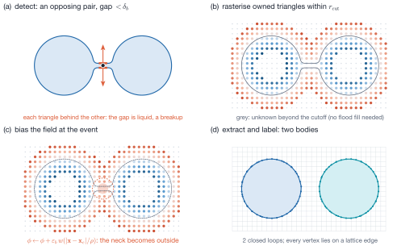
MFTLEnsembleApplyTopologyChanges is MFTLTopologyDetectEvents followed by
MFTLEnsembleReconstructBodies on every body an event touches. A call that
detects nothing changes nothing: no redistribution, no remesh, no pool touched.
MFTLEnsembleReconstructBodies is public on its own because it is where every
distributed property lives, and because re-gridding a body with no event at all is
the cleanest end-to-end test of the pipeline there is.
Detection¶
Two triangles \(A\), \(B\) — of one body or of two — are an EVENT when
- they share no vertex;
- their unit normals oppose, \(\mathbf n_A\cdot\mathbf n_B \le -\cos\theta\);
- each lies on the same side of the other, along its own normal:
$$ s_A = \mathbf n_A\cdot(\mathbf c_B-\mathbf c_A), \qquad s_B = \mathbf n_B\cdot(\mathbf c_A-\mathbf c_B) $$
both negative — each is BEHIND the other, the gap is inside the liquid, a thread or a sheet: breakup. Both positive — the gap is outside, a film: coalescence. Mixed signs are a fold seen edge-on and are not events; 4. their distance is within the threshold of THAT kind.
Condition 3 is what lets one predicate serve both directions. A Rayleigh–Taylor cap rolling onto its own stem and a jet's neck thinning are both "two opposing triangles within \(\delta\) on one body"; only the side the gap is on tells them apart, so "intra-body means breakup, inter-body means coalescence" is wrong in both directions — a film inside one body coalesces, and a liquid film between a drop and a bubble inside it is a breakup between two bodies.
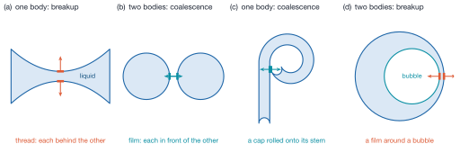
The pairs come from MFTLEnsembleIntersectObjects with self_pairs set — the
existing distributed contact pipeline, with its halo, its broad phase and its
ownership rule (a pair is reported by the owner of its A-side triangle) — and the
opposing-normal test runs as a pair_filter BEFORE the narrow phase, since
MFTL_TriTriProximity costs 176 ns per pair (src/bvh/ — LBVH and contact detection) against one dot
product, and most candidate pairs on a curved surface are
neighbours facing the same way. The A-side tree is built with a zero
envelope (the B side carries the whole \(\max\delta\)), which took the candidates from
129 to 45 per triangle at the same hit count.
The list is canonical. One neck is found once per triangle pair around it, and a pair across a rank boundary in general by both owners. Every event point is snapped to a cell of \(\tfrac14\max(\min\delta,\Delta x)\) and events are merged on (bodies, kind, cell), keeping the smallest gap — locally, and again over the gathered list. The result is a pure function of the geometry: identical on every rank and at every process count. The \(\Delta x\) in that quantum is load-bearing: on the threshold alone one jet neck was shredded into 779 events.
Clusters are the connected components of the listed bodies under the events between two of them — of EITHER kind. The two-body breakup case is the drop with a bubble inside it: the liquid film between them is bounded by both, and only a field over both surfaces sees the film.
The lattice¶
anchored at global_min. Two properties follow and everything rests on them:
- a node plane lies on every domain wall, so a surface that meets a wall is cut
exactly there — an open surface's rim is reconstructed ON its wall, at lattice
resolution, and carries
MFTL_FLAG_BOUNDARYfrom the lattice key of its edge; - a node plane lies on every rank's cut plane, so every lattice cell belongs to exactly one rank, and "who triangulates this cell" has one answer everywhere.
The lattice is GLOBAL rather than one grid per cluster because of the second
property: a per-cluster grid anchored at the cluster's box
puts cell faces at arbitrary offsets from the cut planes, so the question "which rank
extracts this cell" needs either a negotiation or an overlap. Memory is not the price
it looks like — a rank allocates only a WINDOW (MFTLSdfGridInitWindow): its own box
of the cluster's extent plus the cutoff, indexed modulo the period on a periodic axis.
A rank whose box does not meet a cluster allocates nothing for it.
The signed distance¶
For a node \(\mathbf x\) and a triangle \(T\), MFTLClosestPointOnTriangle returns the
closest point \(\mathbf p\) and the FEATURE it lies on — face interior, one of three
edges, one of three corners — using Ericson's region test; a degenerate triangle is
reduced to its nearest edge, and a corner result is bit-exact. The sign is that of
\((\mathbf x-\mathbf p)\cdot\mathbf n_\text{pseudo}\), with the pseudo-normal of the
feature:
| feature | \(\mathbf n_\text{pseudo}\) |
|---|---|
| face | \(\mathbf n_T\) |
| edge | \(\mathbf n_T + \mathbf n_\text{twin}\) |
| corner | the ANGLE-weighted vertex normal |
This is Bærentzen & Aanæs' result: with angle weighting the sign is exact for any
closed, consistently oriented mesh, where area weighting is wrong at a spiky vertex —
on randomly spiked spheres, of about 15 000 query points whose nearest feature is a
vertex, angle weighting signs none wrongly and area weighting 122
(test_vertex_signs_on_a_spiky_mesh_need_angle_weighting, which keeps the area run
as a control that must fail).
Angle weighting is a second mode of MFTLComputeVertexNormals, not a second
function, and MFTLUpdateGhostVertexNormals makes it exact on ghosts. The edge
pseudo-normal needs the twin, which is why rasterisation reads the half-edge records
rather than tris.neighbors alone.
A cluster is rasterised as a UNION. The field is the signed distance to the union of all its bodies' surfaces, signed by the nearest one — not the minimum of per-body fields, which is wrong for nested bodies: inside a drop that contains a bubble, \(\min(\phi_\text{drop},\phi_\text{bubble})\) is negative inside the bubble.
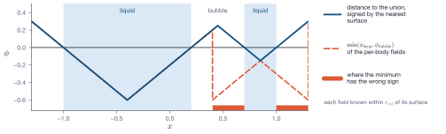
The merge is commutative and associative, so the field is partition-independent
to the bit. MFTLSdfMerge keeps the smaller \(|\phi|\) and breaks a tie towards
NEGATIVE. Each rank rasterises only the triangles it OWNS — each triangle exactly
once in the job — into its window, and sends every node another rank needs; the
merged value is the same whatever order the contributions arrive in, and equal to a
serial rasterisation of the whole mesh. The alternative, pulling every neighbour's
nearby triangles and rasterising them locally, ships a triangle near a corner to
seven ranks and rasterises it on eight; pushing moves one double per boundary node.
There is no flood fill. A node farther than \(r_\text{cut}\) from every triangle
stays MFTL_SDF_UNKNOWN, and with
a cell with an unknown corner provably cannot be crossed by the biased zero level set, so marching cubes skips it without needing to know which side it is on. A flood fill would be a global, sequential sign propagation across ranks — exactly what the cutoff removes.
The bias¶
Rasterising and re-extracting a thread of radius \(0.4\,\Delta x\) reproduces it or loses it depending on where the lattice nodes happen to fall. The event, not the lattice, should decide, so every event adds a smooth bump to the field around its point before extraction:
with \(\varepsilon = +\varepsilon_b\) for a breakup (the thread's inside becomes outside) and \(-\varepsilon_c\) for a coalescence (the film becomes inside). Overlapping bumps combine by the maximum per sign, not by summing, so ten events on one neck bias it once. \(\beta > 1\) decides a feature just at the threshold with margin. \(\rho\) is the trade the header documents with measurements: full weight out to \(\tfrac12\rho = 0.75\,\delta\) by default reaches past the surface of any thread thinner than \(\delta\), and a wider bump spends the bias on the bodies either side (2.9 % against 4.0 % volume per bulb at \(\gamma = 1.5\) against 2 on the pinched dumbbell, before the correction below puts it back).
Marching cubes¶
The 256-case table is generated from one rule applied to each face of the cell,
depending only on that face's four corner signs, so two cells sharing a face draw the
same segments on it and the surface cannot crack between cells; loops are fanned from
an apex none of whose diagonals lies in a face, so no triangle lies in a cell face.
src/mesh_creation/marching_cubes.c has the full argument; test_marching_cubes.c
enumerates all 256 cases for closure, orientation and the absence of in-face
triangles.
A vertex is named by the lattice edge it lies on, and a triangle by
16 * cell + slot. Those keys are what makes the distributed extraction need no
stitching: each rank extracts its own cells plus one layer of its neighbours', so the
triangles around every vertex it owns are present — the vertex-complete halo, built
by the extraction — and two ranks that both produce a vertex produce it from the same
two node values and name it the same.
Positions are computed from WRAPPED node indices. On a periodic axis the same
lattice edge is reached as node \(n\) by one rank and as node \(n - N\) by the rank across
the seam; computing the position from the unwrapped index gives two positions one
period apart that the owner test then sends to two different owners. Measured on the
travelling-wave example at np = 2: holes and \(\chi = 15\) for an annulus. Guarded by
test_seam_vertices_get_one_owner_on_every_rank, which fails when the wrap is
removed.
Bodies from triangle soup¶
A component's label is the smallest triangle key it contains — a pure function of
the component, so every holder converges on the same number without electing
anything. Each round: every LOCAL component takes the smallest label of its
triangles (MFTLLabelConnectedComponents did the local connectivity), every holder of
a ghost triangle tells its owner the label it has, and the owner lowers its component
to the smallest it hears and answers. A component crossing \(k\) rank boundaries needs
at most \(k+1\) rounds, and the loop ends on a global "nothing changed". Objects are
built per GLOBAL label, not per local component: a U whose bend is on the next rank is
two local components and one body.
Who keeps which id is decided identically on every rank from one Allgatherv of
(cluster, label, owned triangles, open) records — one per component and holder, a
number sized by the change, not by the ensemble. Per cluster, components largest
first take the ids of the bodies that went in, largest first; components beyond that
get fresh ids; ids beyond that are retired. So the jet a drop pinches off stays the
jet, and the pool a drop falls into stays the pool. A CLOSED component below
min_body_triangles is deleted (an open one never is).
Vertex and triangle ids are made dense with MFTLEnsembleExscanBodies — each
owner numbers what it owns from its holder-scan base — and a ghost asks its owner for
the id of the entity with its key. The closing MFTLRedistribute then rebuilds the
canonical halo from correct ids. MFTLObjectSetCounts marks every new object
partition-dirty, so the redistribution's body skip cannot mistake one for settled.
Rims¶
A level set has no boundary except where it meets the lattice's edge, so an open
surface is representable exactly when its rims lie on domain walls — which, on the
lattice above, is where node planes are. The reconstruction therefore reproduces a
rim on its wall and flags it from the lattice key; a cluster containing a rim
anywhere else is REFUSED (n_clusters_refused) and left untouched rather than
corrupted. Detected by one flag per cluster on a reduction already being taken.
After the extraction¶
The closing MFTLRedistribute restores the canonical partition, and when
opts.remesh is set one MFTLRemeshEnsemble runs over the whole ensemble.
The size floor is applied twice. A satellite a couple of lattice cells across
comes out of marching cubes as a few dozen slivers and clears min_body_triangles;
remeshed at a target edge length near its diameter it becomes a tetrahedron, which
the collapse approval refuses to dissolve and which then survives as four triangles
each facing against all three neighbours. That is exactly what the Rayleigh–Taylor
example reported at np = 4 as "4 inverted triangles". So the count is taken again
after the remesh, from one sum per component of THIS reconstruction.
test_a_satellite_the_remesher_collapses_is_discarded fails without the second
count.
The volume goes back LAST. Marching cubes cuts chords across a curved surface, the bias moves liquid, and the remesh that cleans the slivers up smooths some away on its own; on the liquid jet, without the correction, 60 of a final 81 volume units were lost over 45 reconstructions. Per cluster, the enclosed volume is measured before and after (a closed body directly; an open one together with the walls its rims are on, as the flux of \((x_k - x_{k,\min})\,\mathbf e_k\) along an axis whose far wall carries no rim), and restored by a uniform offset \(d\) along a displacement field \(\mathbf u\): the area-weighted vertex normals, with a rim vertex's wall-normal component removed. The step is Newton's, on the exact first variation of the volume,
(\(\mathbf S_t\) the area vector), which each rank sums over the triangle corners it owns — every (triangle, corner) pair is present once in the job because the halo is vertex-complete. Dividing by the area instead converges only linearly, at about 0.03 per step. Measured from a 15 % deficit: \(2.8\cdot10^{-5}\) and \(10^{-9}\) after two and three Newton steps, against \(1.3\cdot10^{-4}\), \(3\cdot10^{-6}\), \(8\cdot10^{-8}\) after two, three, four area steps. The count is FIXED at three: a stopping test on a reduced double would be two ranks disagreeing in the last ulp about whether to enter another collective.
Design alternatives¶
Each choice below was either made before implementation or forced by a measurement.
| Alternative | Chosen | Why |
|---|---|---|
| migrate a dispersed cluster to one rank; a sub-communicator grid for a spanning one | nothing migrates; every rank works on its own box | one code path at every body size; no second partition to keep consistent; the field is partition-independent by the merge rule |
one grid per cluster, [min − 3Δx, max + 3Δx] |
one global wall-aligned lattice, windows per rank | a node plane on every cut plane and every wall: unique cell owners, rims on walls |
min over per-body fields |
the distance to the UNION, signed by the nearest surface | nested bodies (a bubble in a drop) |
| sign "vertex: area/angle-weighted" | angle-weighted only, ghosts synchronised | area weighting is measurably wrong at spiky vertices |
| cutoff \(2.5\Delta x\) | \(r_\text{cut}\) above, from the cell diagonal and the bias | a proof that no cell with an unknown corner is crossed |
| topology decided by where lattice nodes fall | an explicit \(\pm\varepsilon\) bias at each event | the event decides, with margin |
| intra-body = breakup, inter-body = coalescence | the side of the gap decides, either kind within or between bodies | RT caps coalesce within one body; a drop's film around a bubble breaks between two |
| a typed 256-row table | generated from one face rule | no crack between cells by construction; all 256 cases tested |
ghosts only through MFTLRedistribute |
a halo built by the extraction, then a redistribution | component labelling and dense ids need the halo before the redistribution can run |
float field |
double |
the partition-independence argument is bit-level |
What is tested, and how¶
tests/test_topology_change.c runs every scene twice — distributed, and on rank 0
alone with MPI_COMM_SELF — and compares a CENSUS of the result: per body its
vertex, triangle and boundary counts, Euler characteristic and volume, and the
sorted positions of every vertex, quantised so that a last-bit difference in a
volume-correction sum cannot reorder a tie. At np = 1, 2, 4, 8 and 27 the distributed
surface equals the single-rank surface to \(10^{-12}\). The scenes are placed where the
cut planes of every tested grid meet, on the periodic seam, and across walls; each
also checks the partition invariants and dense ids. The unit pieces are tested where
they live: test_geometry.c (closest point, every feature region, degenerate
triangles), test_signed_distance.c (the merge laws, sign against the winding
number on hard shapes, rasterising in pieces bit-identical to all at once),
test_marching_cubes.c (all 256 cases), test_bvh_self.c (self-proximity as a SET
against an exhaustive sweep, at np up to 27, with a cross-rank non-vacuity count),
test_topology.c (component labelling) and test_vertex_normals.c (angle weighting).
The three open-surface examples carry it into flows, each with a non-vacuity flag
that fails a run in which the body count or genus never changed:
test_liquid_jet_topology (a drop pinches off and travels to the outlet),
test_rayleigh_taylor_topology (a blob pinches off the rolled-up cap at
t ≈ 3.5) and test_travelling_waves_topology (a plunging lip reconnects with the face).
Costs, and what is not done¶
- A reconstructed body is re-triangulated EVERYWHERE, not only at the event: vertices, ids and pool order are new, and the surface moves by the marching cubes error, \(O(\Delta x^2\kappa)\). Bodies outside every cluster are not touched at all. A local reconstruction that re-extracts only a neighbourhood of each event and stitches it to the old mesh would avoid that; it needs a seam between a lattice surface and a remeshed one, and was not attempted.
- Detection runs every call and is the part that scales with the whole ensemble's surface rather than with the change: one self- and pair-proximity query over every body. It dominates a call that finds nothing, which is most calls.
- There is no continuous-time detection. Two surfaces that approach by more than \(\delta\) in one step are not found, exactly as for contact detection (Open issues).
- Rims off the walls are refused, not handled. A level set cannot represent them; a surface with a free rim needs a different reconstruction.
Where this page comes from
This page is generated from src/topology_change/README.md in the MFTL library repository, which is also
what the Doxygen manual reads. Edit that file, not this page.
src/io/ — Mesh output¶
Public header: include/mftl_io.h · Layer: 3 ·
Module group: mftl_io
| File | Job |
|---|---|
vtk_legacy.c |
MFTLWriteVtk — a serial legacy ASCII dump of what is in memory |
vtu_writer.c |
MFTLWriteVtu — the parallel VTK XML writer: ASCII or raw binary, one file per rank or one shared MPI-IO file |
Nothing here is read back by the library.
Two writers, two contracts¶
MFTLWriteVtk |
MFTLWriteVtu |
|
|---|---|---|
| audience | debugging | visualisation and post-processing |
| entities | the whole pool, ghosts included | owned triangles (and the vertices they reference) |
| arrays | owner, verts.normal, tris.area — unvalidated |
owner, body id, optional global ids — never geometry |
| periodic seam | not handled | straddling triangles unwrapped |
| parallel | one rank, one file | collective, two layouts |
MFTLWriteVtu never writes tris.area or tris.normal: nothing records whether
they are current and a redistribution leaves them unspecified, so such a file
could be stale while looking right. MFTLWriteVtk writes them precisely to show
the raw state.
Only owned entities are written¶
A ghost is a copy of a triangle another rank owns. Writing whole pools would put
every halo triangle into the merged dataset once per holder: invisible in the
picture (the copies coincide) but every integral a visualisation tool computes
over the surface — area, enclosed volume — would be wrong by the halo fraction
(10–30 % in a typical run). Ownership is an array prefix, so owned-only is a loop
bound. include_ghosts restores the whole pool for inspecting the halo
(test_ghost_inclusion, test_cell_count_is_the_owned_count).
The points of a piece are the vertices referenced by its written triangles (some
of them ghosts), found by one marking pass over tris.verts and a prefix scan. A
seam vertex is therefore written by every rank with a triangle on it.
Periodic unwrapping¶
Vertices are stored wrapped into the domain box, so a triangle straddling a periodic face would be drawn across the whole domain. Such a triangle is given three private points at its unwrapped corners
(minimum-image edges \(\mathbf{e}_i\)), which may lie outside the box; all other triangles keep sharing their points. The mesh in memory is untouched.
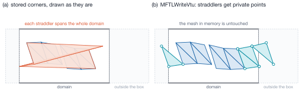
MFTLWriteVtu. (a) Drawn with their stored corners, triangles straddling the seam span the whole domain. (b) Each straddler gets three private points \(\mathbf{p}_0\), \(\mathbf{p}_0+\mathbf{e}_1\), \(\mathbf{p}_0+\mathbf{e}_2\) from minimum-image edges, which may lie outside the box; every other triangle keeps sharing its points.A triangle wraps iff some minimum-image edge differs from its raw difference, i.e.
iff a periodic correction was applied: \(d - L\,\mathrm{nearbyint}(d/L)\) returns
\(d\) bit-exactly when the rounding is 0 and differs by about \(L\) otherwise. The test
is exact, with no tolerance (test_wrap_detection_paths_agree checks both
connectivity paths). The private points follow all shared points of a piece, and
the connectivity addresses them as n_marked + 3*w — that order is load-bearing.
Encoding and layout¶
Raw binary is the default. Formatting a double as %.10e costs about 100 ns
and 17 bytes, so an ASCII writer is bound by printf, not by the disk. VTK XML's
raw appended section turns the emit phase into a memcpy: 23–32× faster
(docs/analysis.md §3). Its byte order is the host's and is declared in the header.
MFTL_IO_FILE_PER_RANK |
MFTL_IO_SINGLE_FILE |
|
|---|---|---|
| files per dump | \(P+1\) (pieces + .pvtu index) |
1 |
| mechanism | buffered POSIX writes per rank | MPI_File_write_at_all |
| collectives | one reduction of the return code | one MPI_Iexscan + MPI_Iallreduce pair, the collective open/writes, the return code |
| encodings | ASCII or binary | binary only |
Placing blocks in the shared file¶
Each of the up to nine arrays (points, connectivity, offsets, types, vertex owner
and id, triangle owner, body id, triangle id) is one contiguous block whose size
is unit bytes times either the point or the cell count. One exclusive scan of the
pair \((n_\text{points}, n_\text{cells})\) therefore places every rank's slice of
every block:
where \(H\) is the length of the XML header — identical on every rank because it is
built from global counts only — and the 8 bytes are each block's UInt64 length
prefix. Rank 0 writes the header, the length prefixes and the footer; every rank
writes its slices with MPI_File_write_at_all, which lets the MPI library merge
many small non-contiguous slices into a few large stripe-aligned writes (two-phase
collective buffering). The file is truncated to its exact size. Connectivity and
offsets are Int32, which bounds a shared file at \(2^{31}-1\) points and
\((2^{31}-1)/3\) cells.
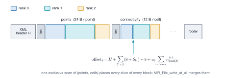
Which layout is faster depends on the machine¶
On the development laptop (one SSD) the shared file measured 1.0× at \(P = 1\) and
0.45× at \(P = 4\) relative to one file per rank: there is nothing to aggregate. On
a parallel file system with thousands of ranks, \(P+1\) files per dump is what
overloads the metadata server first, which is why the shared layout exists.
Measure on the target system before choosing. MPI_INFO_NULL is passed, so
collective-buffering hints (cb_nodes, striping_unit, …) are the remaining
tuning knobs.
Where this page comes from
This page is generated from src/io/README.md in the MFTL library repository, which is also
what the Doxygen manual reads. Edit that file, not this page.
API
API reference¶
Everything below is generated from the sources by
Doxygen and rendered into this site by
mkdoxy, using the same
doxygen/Doxyfile.in the standalone Doxygen manual is built from. The two
therefore extract the same symbols with the same aliases and the same
preprocessor settings; there is no second configuration to keep in step.
-
Topics
The library grouped by architectural layer — layer 0 foundation up to the module APIs at layer 3. The group hierarchy is defined in exactly one place,
doxygen/groups.dox. -
Data structures
Every struct. The public ones are all defined in
mftl_types.h; the rest are module-local. -
Source files
Headers and translation units, each with its brief, its members and a link to the annotated source.
-
Symbols
The alphabetical indexes.
Which manual answers which question¶
This site and the embedded Doxygen manual are generated from the same sources but they are not the same artefact, and the split is by what the tool can produce, not by taste.
| Question | Where |
|---|---|
| What does this function do, what are its parameters | here, or the Doxygen manual — identical content |
| What is the theory behind this module | here: the module pages |
| Who calls this function, and what does it call | the Doxygen manual — Graphviz call and caller graphs |
| What does the annotated source look like | the Doxygen manual — cross-linked source browser |
| Which headers include which | the Doxygen manual — #include dependency graphs |
Naming conventions the reference assumes¶
You will read the index faster knowing three rules the library follows without exception:
MFTLPascalCaseis a function,MFTL_PascalCaseis a type,MFTL_UPPER_CASEis a macro or constant.snake_caseis a file-static helper, and it appears here only becauseEXTRACT_STATICis on — the real algorithms live in those.- A function returns
int, eitherMFTL_SUCCESSorMFTL_ERROR. The sameMFTL_ERROR(−1) doubles as the "no such entity" index sentinel. - Every function's documentation says whether it is collective (every rank
of the ensemble's communicator must call it, including ranks holding no body)
or rank-local. Most
MFTLEnsemble*functions are collective and most functions taking a singleMFTL_Object *are rank-local, but not all: read the paragraph.
Reference
Public headers
File mftl_arrayfunctions.h¶
FileList > include > mftl_arrayfunctions.h
Go to the source code of this file
Flat-array utilities: LSD radix sort and duplicate removal. More...
#include <stdint.h>#include <stddef.h>
Public Functions¶
| Type | Name |
|---|---|
| void | MFTLRadixSort32 (int * keys_in, int * keys_temp, int size) Low-level key-only sort: 32-bit signed keys, caller-managed temp buffer. |
| void | MFTLRadixSort64 (uint64_t * keys_in, uint64_t * keys_temp, int size) Low-level key-only sort: 64-bit unsigned keys, caller-managed temp buffer. |
| void | MFTLSortIds (int * data, int count) High-level wrapper: sorts an int array in place, temp buffer internal. |
| void | MFTLSortPairs32 (int * keys, int * values, int count) Sorts 32-bit key / 32-bit value pairs together (SoA layout). |
| void | MFTLSortPairs64 (uint64_t * keys, int * values, int count) Sorts 64-bit key / 32-bit int value pairs together (SoA layout). |
Public Static Functions¶
| Type | Name |
|---|---|
| int | MFTLGetUniqueIntegers (const int * input_array, int input_count, int * output_array, int output_capacity) Collects the distinct values of an array, preserving first-seen order. |
| int | MFTLSortedIndexOf (const int * sorted, int n, int key) Binary search for key in an ascending int array. |
| int | MFTLUniqueIntArray (int * arr, int n) Removes adjacent duplicates from a SORTED int array, in place. |
| int | MFTLUniquePairs (int * keys, int * values, int n) Removes adjacent duplicate KEYS from a SORTED key/value pair, in place. |
Macros¶
| Type | Name |
|---|---|
| define | MFTLRadixSort (keys_in, keys_temp, size) \_Generic((keys\_in), int \*: [**MFTLRadixSort32**](mftl__arrayfunctions_8h.md#function-mftlradixsort32), uint64\_t \*: [**MFTLRadixSort64**](mftl__arrayfunctions_8h.md#function-mftlradixsort64))((keys\_in), (keys\_temp), (size))Key-only radix sort, dispatched on the key type at compile time. |
| define | MFTLSortPairs (keys, values, count) \_Generic((keys), int \*: [**MFTLSortPairs32**](mftl__arrayfunctions_8h.md#function-mftlsortpairs32), uint64\_t \*: [**MFTLSortPairs64**](mftl__arrayfunctions_8h.md#function-mftlsortpairs64))((keys), (values), (count))Key/value pair sort, dispatched on the key type at compile time. |
Detailed Description¶
Author:
Christian Gorges
Date:
2025-08-12
Layer 0, no MFTL types. The sorts are least-significant-digit radix sorts over 8-bit digits, \(O(n)\) for a fixed key width (a stable insertion sort below 33 elements); the unique helpers are single scans over sorted input. Theory and measurements: src/arrayfunctions/README.md.
Ordering contract. The key type is the contract: int keys sort in SIGNED order, uint64_t keys in UNSIGNED order. Do not sort unsigned 32-bit values through an int * cast (wrong for values \(\ge 2^{31}\)).
Stability. Every sort is stable, so "sort pairs, then MFTLUniquePairs()" keeps the value that came first a deterministic, rank-independent choice.
Public Functions Documentation¶
function MFTLRadixSort32¶
Low-level key-only sort: 32-bit signed keys, caller-managed temp buffer.
The result is always left in keys_in, whatever the internal pass count turns out to be. keys_temp is scratch space and holds an unspecified permutation of the input afterwards.
Parameters:
keys_inKeys to sort in place. Must holdsizeelements.keys_tempScratch buffer of at leastsizeelements. Only read whensizeexceeds the internal small-array cutoff, but must always be valid.sizeNumber of keys. Values < 2 are a no-op.
function MFTLRadixSort64¶
Low-level key-only sort: 64-bit unsigned keys, caller-managed temp buffer.
Same contract as MFTLRadixSort32 the result always ends up in keys_in.
Parameters:
keys_inArray of 64-bit unsigned keys, sorted in place.keys_tempScratch array of the same length. Contents unspecified afterwards.sizeNumber of elements.
function MFTLSortIds¶
High-level wrapper: sorts an int array in place, temp buffer internal.
32-bit signed keys. Allocation failure aborts the process.
Parameters:
dataArray of ints, sorted ascending in place.countNumber of elements.
function MFTLSortPairs32¶
Sorts 32-bit key / 32-bit value pairs together (SoA layout).
Keys and values live in two arrays and are permuted together. Scratch is allocated internally (only when a pass actually runs); allocation failure aborts.
Parameters:
keysSigned keys. Sorted in place.valuesAssociated values, permuted to match the sorted keys.countNumber of pairs.
function MFTLSortPairs64¶
Sorts 64-bit key / 32-bit int value pairs together (SoA layout).
The Morton-code case: 64-bit spatial keys carrying an entity index as the value. Scratch is allocated internally; allocation failure aborts.
Parameters:
keys64-bit unsigned keys. Sorted in place.valuesAssociated int indices, permuted to match the sorted keys.countNumber of pairs.
Public Static Functions Documentation¶
function MFTLGetUniqueIntegers¶
Collects the distinct values of an array, preserving first-seen order.
static inline int MFTLGetUniqueIntegers (
const int * input_array,
int input_count,
int * output_array,
int output_capacity
)
\(O(n \cdot u)\) for \(u\) distinct values: for tiny sets (a handful of ranks). For larger inputs sort, then MFTLUniqueIntArray().
Note:
Values beyond output_capacity are dropped silently; size the output for the worst case.
Parameters:
input_arrayValues to scan. Not modified, need not be sorted.input_countNumber of values ininput_array.output_arrayReceives the distinct values, in first-seen order.output_capacityElementsoutput_arraycan hold.
Returns:
The number of distinct values written to output_array.
function MFTLSortedIndexOf¶
Binary search for key in an ascending int array.
Sparse id-keyed directories in the library are sorted arrays, so an id -> slot lookup is this binary search rather than a hash map.
Parameters:
sortedAscending array.nNumber of elements.keyThe value.
Returns:
An index i with sorted[i] == key, or -1 (MFTL_ERROR) if absent. With duplicate keys it is one of their indices.
function MFTLUniqueIntArray¶
Removes adjacent duplicates from a SORTED int array, in place.
Compares neighbours only, so on unsorted input it merely collapses runs.
Parameters:
arrSorted array, compacted in place.nNumber of elements on entry.
Returns:
The new element count; elements beyond it are left as garbage.
function MFTLUniquePairs¶
Removes adjacent duplicate KEYS from a SORTED key/value pair, in place.
Keeps the first value of each run of equal keys; after a stable sort that is the entry that came first in the caller's original array.
Parameters:
keysSorted key array, compacted in place.valuesValue array, compacted alongsidekeys.nNumber of pairs on entry.
Returns:
The new pair count.
Macro Definition Documentation¶
define MFTLRadixSort¶
Key-only radix sort, dispatched on the key type at compile time.
#define MFTLRadixSort (
keys_in,
keys_temp,
size
) `_Generic((keys_in), int *: MFTLRadixSort32 , uint64_t *: MFTLRadixSort64 )((keys_in), (keys_temp), (size))`
int * selects MFTLRadixSort32(), uint64_t * selects MFTLRadixSort64(). The selection is a C11 _Generic expression, so it costs nothing at run time and a key type that is neither is a compile error.
Parameters:
keys_inArray to sort, in place.keys_tempScratch array of the same length and type. Caller-owned; after the sort its contents are unspecified.sizeNumber of elements.
Note:
Under C99 (no _Generic) this expands to the 32-bit variant unconditionally, so passing 64-bit keys is a compile error rather than a silent mis-sort. Call MFTLRadixSort64() directly there.
define MFTLSortPairs¶
Key/value pair sort, dispatched on the key type at compile time.
#define MFTLSortPairs (
keys,
values,
count
) `_Generic((keys), int *: MFTLSortPairs32 , uint64_t *: MFTLSortPairs64 )((keys), (values), (count))`
int * selects MFTLSortPairs32(), uint64_t * selects MFTLSortPairs64().
Parameters:
keysKey array, sorted in place.valuesValue array, permuted alongside the keys (SoA layout).countNumber of pairs.
Note:
Under C99 this expands to the 32-bit variant unconditionally. See MFTLRadixSort.
The documentation for this class was generated from the following file include/mftl_arrayfunctions.h
File mftl_bvh.h¶
FileList > include > mftl_bvh.h
Go to the source code of this file
Linear BVH over triangle primitives, exact triangle-triangle predicates, and (distributed) object-object contact detection. More...
#include <stdbool.h>#include <stdint.h>#include "mftl_constants.h"#include "mftl_types.h"
Classes¶
| Type | Name |
|---|---|
| struct | MFTL_BVH A hierarchy over one body's triangles, optionally plus its spatial-halo patch. |
| struct | MFTL_BVHBuildParams Build and query parameters. Start from MFTL_BVHDefaultParams(); a zero-initialised struct gives a zero envelope. |
| struct | MFTL_BVHNode One node of the hierarchy, 32 bytes (two per cache line). |
Public Types¶
| Type | Name |
|---|---|
| typedef void(*) | IntersectionCallback Called once per primitive pair that passed the narrow phase. |
Public Functions¶
| Type | Name |
|---|---|
| int | MFTLEnsembleIntersectObjects (MFTL_Ensemble * ens, const MFTL_BVHBuildParams * params, IntersectionCallback callback, void * user_data) Contact detection for a whole ensemble: build, measure, exchange, attach, traverse, destroy. |
| int | MFTL_BVHPrimGlobalId (const MFTL_BVH * bvh, int p) Global triangle id of primitive p __ the identity a callback should record (pool indices mean nothing on the other rank of a contact). |
| int | MFTL_BVHPrimOwner (const MFTL_BVH * bvh, int p) The rank owning primitive p . |
| const MFTL_Object * | MFTL_BVHPrimTriangle (const MFTL_BVH * bvh, int p, int * tri) The object and triangle a primitive is: bvh->obj for a local primitive, the halo patch for a remote one. |
| void | MFTL_BVHPrimVerts (const MFTL_BVH * bvh, int p, double out) The three corners of primitive p , mutually unwrapped (MFTLGetTriangleCorners() of its source object). |
| int | MFTL_BVHSetGlobalRadius (MFTL_BVH * bvh, double radius) Sets the body's GLOBAL radius (MFTLSpatialHaloRadius()) so the envelope no longer depends on the partition, and refits. |
| int | MFTL_BVHSetHalo (MFTL_BVH * bvh, const MFTL_Object * patch) Attaches the spatial-halo patch of this body and REBUILDS the tree over local and patch primitives together. |
| void | MFTL_DestroyBVH (MFTL_BVH * bvh) Destroys a BVH and everything it owns. Safe on MFTL_NULL. |
| MFTL_BVH * | MFTL_GenerateLBVH (const MFTL_Object * obj, const MFTL_BVHBuildParams * params) Builds a linear BVH over obj . |
| void | MFTL_IntersectObjects (const MFTL_Object * objA, MFTL_BVH * bvhA, const MFTL_Object * objB, MFTL_BVH * bvhB, IntersectionCallback callback, void * user_data) Reports every contacting primitive pair between two hierarchies. |
| double | MFTL_Orient3D (const double pa, const double pb, const double pc, const double pd) Robust orientation predicate: six times the signed volume of the tetrahedron (pa, pb, pc, pd), with an EXACT sign (Shewchuk 1997). |
| double | MFTL_Orient3DFast (const double pa, const double pb, const double pc, const double pd) The plain (non-adaptive) orientation determinant, for comparison and benchmarks; its sign is not guaranteed near degeneracy. Not used by the traversal. |
| int | MFTL_RefitLBVH (MFTL_BVH * bvh, const MFTL_Object * obj) Refits the boxes after the vertices moved; tree and order are kept. |
| double | MFTL_TriTriDistanceSq (const double A, const double B) Squared minimum distance between two closed triangles; 0 if they meet. |
| int | MFTL_TriTriIntersect (const double A, const double B) Exact triangle-triangle intersection test (Guigue & Devillers 2003). |
| int | MFTL_TriTriProximity (const double A, const double B, double tolerance) Contact predicate: intersection, or a minimum distance within tolerance . |
Public Static Functions¶
| Type | Name |
|---|---|
| MFTL_BVHBuildParams | MFTL_BVHDefaultParams (void) The default parameters. |
| int | MFTL_BVHLeafCount (const MFTL_BVHNode * n) Number of primitives in leaf n . |
| int | MFTL_BVHLeafFirst (const MFTL_BVHNode * n) First slot of leaf n inprim_indices . |
| int | MFTL_BVHLeftChild (const MFTL_BVHNode * n) Left child of internal node n ; the right child is that plus one. |
| bool | MFTL_BVHNodeIsLeaf (const MFTL_BVHNode * n) True if n is a leaf. |
| bool | MFTL_BVHPrimIsLocal (const MFTL_BVH * bvh, int p) True if primitive p is a triangle ofbvh->obj , not a halo copy. |
Macros¶
| Type | Name |
|---|---|
| define | MFTL_BVH_DEFAULT_LEAF_SIZE 4Default maximum primitives in a leaf. |
| define | MFTL_BVH_DEFAULT_PROXIMITY_FACTOR 1.0e-3Default dimensionless contact envelope, as a fraction of the bounding radius. |
Detailed Description¶
Author:
Christian Gorges
Date:
2026-08-16
The broad phase (a tree of float boxes) selects triangle pairs worth an exact test; the narrow phase (exact, double precision) decides whether they touch. Four decisions shape the module:
- A BVH is built over a primitive soup. Primitives
[0, n_local_prims)are triangles ofobj,[n_local_prims, n_prims)triangles ofhalo, a spatial-halo patch (an ordinary MFTL_Object, mftl_communication.h §6). Both are borrowed andconst; the tree stores no geometry, and both kinds are read through MFTLGetTriangleCorners(). - Periodicity at two scales. Within an object, every primitive's corners are mutually unwrapped (minimum-image edges from corner 0), so a seam-straddling triangle has a tight box and its true centroid. Between objects, MFTL_IntersectObjects() traverses the pair once per periodic image of B (up to 27), each gated by one root-box test.
- The envelope scales with the body:
tol = MAX(proximity_floor, proximity_factor * R), with R the body's radius; the same tol inflates the leaves and is the gap the narrow phase tests, so the broad phase never culls a pair the narrow phase would accept. - A distributed contact is reported once, by the rank owning the A-side primitive: A trees contain owned triangles only, only B triangles travel, and pairs are ordered
body_a < body_bby body id.
All of src/bvh/ is local; the one exchange (the spatial halo) belongs to the communication module. Theory: src/bvh/README.md.
Public Types Documentation¶
typedef IntersectionCallback¶
Called once per primitive pair that passed the narrow phase.
typedef void(*) IntersectionCallback(const MFTL_BVH *bvhA, int primA, const MFTL_BVH *bvhB, int primB, void *user_data);
Receives the HIERARCHIES, because a primitive index is meaningful only with its tree (past n_local_prims it names a patch triangle); resolve primitives with MFTL_BVHPrimTriangle(), MFTL_BVHPrimVerts() or MFTL_BVHPrimGlobalId().
Parameters:
bvhAThe A-side hierarchy; primA is always LOCAL to it.primAPrimitive index inbvhA.bvhBThe B-side hierarchy.primBPrimitive index inbvhB; local or remote.user_dataWhatever the caller passed through.
Public Functions Documentation¶
function MFTLEnsembleIntersectObjects¶
Contact detection for a whole ensemble: build, measure, exchange, attach, traverse, destroy.
int MFTLEnsembleIntersectObjects (
MFTL_Ensemble * ens,
const MFTL_BVHBuildParams * params,
IntersectionCallback callback,
void * user_data
)
- MFTL_GenerateLBVH() for every body this rank holds;
- MFTLSpatialHaloResolveRadii() and MFTL_BVHSetGlobalRadius() the envelope is a fraction of the body, whose size is only known collectively;
- MFTLExtendSpatialHaloNearBodies() with those envelopes, which returns the patches AND the candidate body pairs (no all-pairs list is enumerated);
- MFTL_BVHSetHalo() per patched body; a body held nowhere here but patched gets a tree over a shared empty object;
- MFTL_IntersectObjects() per candidate pair (A = smaller body id). A self pair uses a second, tight (zero-envelope), patch-free A-side tree.
Cost: trees O(bodies held), traversals O(candidate pairs); two collective steps independent of the body count.
Parameters:
ensThe ensemble.paramsBuild parameters, or MFTL_NULL for the defaults.callbackInvoked per contacting pair.user_dataPassed through.
Returns:
MFTL_SUCCESS, or MFTL_ERROR on invalid arguments.
** **
Must be called by every rank of the ensemble's communicator. Guarded by n_bodies_global (at least 2, or 1 with self_pairs). A contact between bodies whose holders are more than one cell apart is not found: the halo only ships along comm_graph.
function MFTL_BVHPrimGlobalId¶
Global triangle id of primitive p __ the identity a callback should record (pool indices mean nothing on the other rank of a contact).
Parameters:
bvhThe hierarchy.pPrimitive index.
Returns:
The triangle's global id.
function MFTL_BVHPrimOwner¶
The rank owning primitive p .
Parameters:
bvhThe hierarchy.pPrimitive index.
Returns:
The owning rank. For a local primitive this is the calling rank.
function MFTL_BVHPrimTriangle¶
The object and triangle a primitive is: bvh->obj for a local primitive, the halo patch for a remote one.
A callback that needs more than corners (vertex ids, body id) reads them from the returned object; a patch carries the body's real ids.
Parameters:
bvhThe hierarchy.pPrimitive index in[0, n_prims).triTriangle index within the returned object.
Returns:
The object the triangle lives in.
function MFTL_BVHPrimVerts¶
The three corners of primitive p , mutually unwrapped (MFTLGetTriangleCorners() of its source object).
Parameters:
bvhThe hierarchy.pPrimitive index in[0, n_prims).outRow k is corner k.
function MFTL_BVHSetGlobalRadius¶
Sets the body's GLOBAL radius (MFTLSpatialHaloRadius()) so the envelope no longer depends on the partition, and refits.
Parameters:
bvhThe hierarchy.radiusHalf the longest side of the body's global bounding box; a value \(\le 0\) returns to the local measurement.
Returns:
MFTL_SUCCESS, or MFTL_ERROR on a NULL hierarchy.
function MFTL_BVHSetHalo¶
Attaches the spatial-halo patch of this body and REBUILDS the tree over local and patch primitives together.
Rebuilt, not extended: the Morton order is a function of the whole primitive set. Patch primitives are never the reporting A side, so attaching a patch cannot duplicate a contact.
Parameters:
bvhThe hierarchy.patchMFTLSpatialHaloPatch() for this body, or MFTL_NULL to detach. BORROWED; must outlive the BVH.
Returns:
MFTL_SUCCESS, or MFTL_ERROR on a NULL hierarchy.
** **
Performs no MPI. Each rank operates on its own partition.
function MFTL_DestroyBVH¶
Destroys a BVH and everything it owns. Safe on MFTL_NULL.
Parameters:
bvhThe hierarchy, or MFTL_NULL. The borrowed object and halo patch are NOT freed they belong to the caller.
function MFTL_GenerateLBVH¶
Builds a linear BVH over obj .
- One primitive per owned triangle (all triangles with
include_ghosts). - A 63-bit Morton key (MFTLMorton3D(), 21 bits per axis) of each primitive's seam-consistent, UNWRAPPED centroid, quantised with one common scale.
- A stable radix sort of (key, primitive) and a top-down split at the highest differing bit of the 95-bit key (key, index).
- Bottom-up box fit, then inflation by the resolved tolerance.
An object without primitives yields a valid EMPTY tree (not MFTL_NULL): a rank may hold nothing of a body and still receive a patch of it.
Parameters:
objThe object; borrowed for the BVH's lifetime.paramsMFTL_NULL for MFTL_BVHDefaultParams().
Returns:
A new BVH (free with MFTL_DestroyBVH()), or MFTL_NULL if obj is MFTL_NULL.
** **
Performs no MPI. Each rank operates on its own partition. The tolerance uses this rank's radius until MFTL_BVHSetGlobalRadius() is called.
function MFTL_IntersectObjects¶
Reports every contacting primitive pair between two hierarchies.
void MFTL_IntersectObjects (
const MFTL_Object * objA,
MFTL_BVH * bvhA,
const MFTL_Object * objB,
MFTL_BVH * bvhB,
IntersectionCallback callback,
void * user_data
)
For every periodic image of B whose shifted root box overlaps A's root, a dual-tree descent over an explicit stack of node pairs splits the node with the larger box volume; leaf-leaf candidates are collected into batches of 64 and passed to MFTL_TriTriProximity() at tolerance MAX(tol_A, tol_B). Only pairs with a LOCAL A-side primitive are tested, so a distributed run reports each contact once.
Parameters:
objAThe objectbvhAwas built from.bvhAHierarchy over object A.objBThe objectbvhBwas built from. May equalobjAwith a distinct second tree: the self-proximity query, where pairs sharing a vertex are dropped and each unordered pair is kept once (smaller triangle global id first).bvhBHierarchy over object B.callbackInvoked per contacting pair; must not modify either object.user_dataPassed through tocallback.
** **
Performs no MPI. Each rank operates on its own partition.
function MFTL_Orient3D¶
Robust orientation predicate: six times the signed volume of the tetrahedron (pa, pb, pc, pd), with an EXACT sign (Shewchuk 1997).
\(\[ \orient(\vect{a},\vect{b},\vect{c},\vect{d}) =
(\vect{a}-\vect{d})\cdot\big[(\vect{b}-\vect{d})\times(\vect{c}-\vect{d})\big],
\]\) positive when pd lies below the plane through pa, pb, pc, i.e. when those appear counter-clockwise seen from above. Adaptive: the plain determinant plus a comparison against a rigorous error bound; exact expansion arithmetic only when that bound cannot certify the sign.
It is the one predicate whose SIGN decides an answer (Guigue-Devillers takes up to eight per pair); a wrong sign can report a clean miss for crossing triangles. Measured: 2.00x the plain determinant, at most 6.2 % of an MFTL_TriTriProximity() call; the plain form never misclassified in 20 000 samples at gaps >= 1e-12 of the body size and fails only at 1e-14..1e-16 (examples/orient3d_predicate_profile.c). Requires -ffp-contract=off.
Parameters:
paFirst point of the reference plane.pbSecond point.pcThird point.pdThe point being classified.
Returns:
\(6V\); the SIGN is exact, the magnitude approximate.
function MFTL_Orient3DFast¶
The plain (non-adaptive) orientation determinant, for comparison and benchmarks; its sign is not guaranteed near degeneracy. Not used by the traversal.
Parameters:
paFirst point of the reference plane.pbSecond point.pcThird point.pdThe point being classified.
Returns:
\(6V\) from the plain \(3\times3\) determinant.
function MFTL_RefitLBVH¶
Refits the boxes after the vertices moved; tree and order are kept.
Skips centroids, keys, sort and split; the refit is a reverse linear scan over the nodes (every child index exceeds its parent's). The tree quality degrades as the mesh deforms away from the configuration it was sorted for: rebuild after redistribution, remeshing or large deformation. Halo primitives keep the positions they arrived with.
Parameters:
bvhThe hierarchy, refitted in place.objThe object it was built from (asserted).
Returns:
MFTL_SUCCESS, or MFTL_ERROR a supported outcome, not asserted when the primitive counts changed (the triangulation was modified); the BVH is then untouched and the caller rebuilds.
** **
Performs no MPI. Each rank operates on its own partition.
function MFTL_TriTriDistanceSq¶
Squared minimum distance between two closed triangles; 0 if they meet.
Parameters:
ACorners of the first triangle.BCorners of the second, in the same periodic image asA.
Returns:
\(d^2\), exactly 0 if they touch or intersect.
function MFTL_TriTriIntersect¶
Exact triangle-triangle intersection test (Guigue & Devillers 2003).
Every branch is taken on the sign of MFTL_Orient3D(), whose sign is exact; no intersection point is constructed. Coplanar pairs get a complete 2D test.
Parameters:
A[3][3] corners of the first triangle.B[3][3] corners of the second, in the SAME periodic image asA.
Returns:
1 if the closed triangles intersect (coplanar overlap included), else 0.
function MFTL_TriTriProximity¶
Contact predicate: intersection, or a minimum distance within tolerance .
MFTL_TriTriIntersect() first (a piercing pair has positive distance to every edge and vertex, so the distance test alone would miss it), then the exact minimum distance of two disjoint closed triangles: nine edge-edge and six point-face terms.
Parameters:
ACorners of the first triangle.BCorners of the second, in the same periodic image asA.toleranceGap at which contact is declared, >= 0.
Returns:
1 on contact, 0 otherwise.
** **
176 ns/pair, against 31 ns for MFTL_TriTriIntersect() alone.
Public Static Functions Documentation¶
function MFTL_BVHDefaultParams¶
The default parameters.
Returns:
Factor MFTL_BVH_DEFAULT_PROXIMITY_FACTOR, no floor, leaf size MFTL_BVH_DEFAULT_LEAF_SIZE, ghosts excluded, no self pairs, no filter.
function MFTL_BVHLeafCount¶
Number of primitives in leaf n .
Parameters:
nThe node.
Returns:
The leaf's primitive count. Undefined on an internal node test MFTL_BVHNodeIsLeaf() first.
function MFTL_BVHLeafFirst¶
First slot of leaf n inprim_indices .
Parameters:
nThe node.
Returns:
Index into MFTL_BVH::prim_indices. Undefined on an internal node.
function MFTL_BVHLeftChild¶
Left child of internal node n ; the right child is that plus one.
Parameters:
nThe node.
Returns:
Node index of the left child. Undefined on a leaf.
function MFTL_BVHNodeIsLeaf¶
True if n is a leaf.
Parameters:
nThe node.
Returns:
true iff bit 0 of the payload is set.
function MFTL_BVHPrimIsLocal¶
True if primitive p is a triangle ofbvh->obj , not a halo copy.
Parameters:
bvhThe hierarchy.pPrimitive index.
Returns:
true iff \(p < n_\mathrm{local\,prims}\).
Macro Definition Documentation¶
define MFTL_BVH_DEFAULT_LEAF_SIZE¶
Default maximum primitives in a leaf.
define MFTL_BVH_DEFAULT_PROXIMITY_FACTOR¶
Default dimensionless contact envelope, as a fraction of the bounding radius.
The documentation for this class was generated from the following file include/mftl_bvh.h
File mftl_communication.h¶
FileList > include > mftl_communication.h
Go to the source code of this file
Distributed memory: redistribution, ghost synchronisation, the spatial halo, and the exchange engine they share. More...
#include <stdbool.h>#include <stddef.h>#include "mftl_arrayfunctions.h"#include "mftl_constants.h"#include "mftl_types.h"
Classes¶
| Type | Name |
|---|---|
| struct | MFTL_Exchange One variable-length payload: what to send, and where the result lands. |
| struct | MFTL_ExchangeCtx In-flight state of an MFTLExchangeStart. Treat the fields as private. |
| struct | MFTL_GhostUpdatePayload One per-vertex 3-vector plus the vertex global id, 32 bytes the reply of a ghost synchronisation. |
| struct | MFTL_OwnerMap Caller-supplied destination rank for every entity of one body. |
| struct | MFTL_PackedTriangleComplex Wire image of a triangle AND its three half-edges: ten ints, 40 bytes. |
| struct | MFTL_PackedVertex Wire image of a vertex: position and identity, 40 bytes. |
| struct | MFTL_RedistributeStats Rank-local counters and phase timers of MFTLRedistribute() and the ghost syncs. Purely diagnostic. |
| struct | MFTL_SendBuffer One destination's outgoing elements, as a typed byte blob. |
| struct | MFTL_SpatialHalo A sparse, body-id-keyed directory of shadow objects and body radii. |
| struct | MFTL_SpatialHaloPair One candidate body pair kept by the broad phase. |
| struct | MFTL_SpatialHaloRequest "Send me the parts of body B within margin of my share of body A." |
Public Attributes¶
| Type | Name |
|---|---|
| MPI_Datatype | MFTL_MPI_GhostUpdatePayload MPI datatype for MFTL_GhostUpdatePayload . |
| MPI_Datatype | MFTL_MPI_PackedTriangleComplex MPI datatype for MFTL_PackedTriangleComplex . |
| MPI_Datatype | MFTL_MPI_PackedVertex MPI datatype for MFTL_PackedVertex . Valid betweenMFTLRegisterMpiTypes() andMFTLFreeMpiTypes() . |
Public Functions¶
| Type | Name |
|---|---|
| void | MFTLCommWorkspaceDestroy (void ** p_ws) Releases the persistent communication workspace of an ensemble. |
| void | MFTLExchangeFree (MFTL_ExchangeCtx * ctx) Waits for anything still outstanding and releases the internal buffers. |
| void | MFTLExchangeStart (const MFTL_Domain * domain, MFTL_Exchange * x, int n_payloads, bool use_global_path, MFTL_ExchangeCtx * ctx) Starts a non-blocking all-to-all-v of up to four independent payloads. |
| void | MFTLExchangeWait (MFTL_ExchangeCtx * ctx, int payload) Blocks until payload payload has arrived; itsrecv_buf is then valid. Safe to call twice. |
| int | MFTLExtendSpatialHalo (MFTL_Ensemble * ens, const MFTL_SpatialHaloRequest * requests, int n_requests, MFTL_SpatialHalo * halo) Exchanges the explicitly requested patches and rebuilds the affected shadow objects. |
| int | MFTLExtendSpatialHaloNearBodies (MFTL_Ensemble * ens, const double * tolerance, MFTL_SpatialHalo * halo) The same exchange with the candidate pairs DERIVED from the published extents instead of enumerated the form contact detection uses. |
| void | MFTLFreeMpiTypes (void) Frees the MFTL MPI datatypes. Call before MPI_Finalize. Idempotent. |
| double * | MFTLNeighborAllgatherDoubles (const MFTL_Domain * domain, const double * send, int n_send, int * rcount, int * rdispl, int * n_recv) Variable-length allgather of doubles over comm_graph : this rank's block, delivered to every graph neighbour. |
| int | MFTLRedistribute (MFTL_Ensemble * ens) Re-partitions every local object with the geometric owner rule, in one communication round for the whole ensemble. |
| double | MFTLRedistributeGetShrinkSlack (void) Reports the current setting of MFTLRedistributeSetShrinkSlack() . |
| bool | MFTLRedistributeGetSkipUnchangedBodies (void) Reports the current setting of MFTLRedistributeSetSkipUnchangedBodies() . |
| void | MFTLRedistributeGetStats (MFTL_RedistributeStats * out) Copies the accumulator out. |
| void | MFTLRedistributeSetShrinkSlack (double slack) Lets redistribution return outgrown pool capacity (default 0 = off). |
| void | MFTLRedistributeSetSkipUnchangedBodies (bool on) Allows redistribution to skip bodies nobody saw change (default ON). |
| void | MFTLRedistributeStatsReset (void) Zeroes the accumulator (e.g. after a benchmark's warm-up steps). |
| int | MFTLRedistributeWithOwners (MFTL_Ensemble * ens, const MFTL_OwnerMap * maps) MFTLRedistribute() with the ownership rule supplied per body. |
| void | MFTLRegisterMpiTypes (void) Creates and commits the MFTL MPI datatypes (extents pinned to the C sizeof ). Call once afterMPI_Init , before any exchange; idempotent. |
| MFTL_SpatialHalo * | MFTLSpatialHaloCreate (MFTL_Ensemble * ens) Allocates an empty halo whose directory lists the bodies ens holds. |
| void | MFTLSpatialHaloDestroy (MFTL_SpatialHalo ** p_halo) Destroys a halo and every patch object it owns. Safe on MFTL_NULL. |
| int | MFTLSpatialHaloResolveRadii (MFTL_Ensemble * ens, MFTL_SpatialHalo * halo) Resolves global_radius __ half the LONGEST SIDE of the body's bounding box over all its holders (\(= R\) for a sphere) for every body this rank holds, and for the bodies its graph neighbours hold. |
| int | MFTLUpdateGhostPositions (MFTL_Ensemble * ens) Refreshes the POSITION of every ghost vertex from its owning rank. |
| int | MFTLUpdateGhostVertexNormals (MFTL_Ensemble * ens) Refreshes verts.normal of every ghost vertex from its owning rank. |
Public Static Functions¶
| Type | Name |
|---|---|
| int | MFTLSpatialHaloCount (const MFTL_SpatialHalo * halo, int body_gid) Number of triangles this rank received for body body_gid . |
| int | MFTLSpatialHaloFindBody (const MFTL_SpatialHalo * halo, int body_gid) Directory slot of body body_gid , by binary search. |
| const MFTL_Object * | MFTLSpatialHaloPatch (const MFTL_SpatialHalo * halo, int body_gid) The received patch of body body_gid , orMFTL_NULL . |
| double | MFTLSpatialHaloRadius (const MFTL_SpatialHalo * halo, int body_gid) Half the longest side of body body_gid's global bounding box. |
Macros¶
| Type | Name |
|---|---|
| define | MFTL_MAX_EXCHANGE_PAYLOADS 4Upper bound on payloads a single MFTLExchangeStart may carry. |
Detailed Description¶
Author:
Christian Gorges
Date:
2026-08-14
Three kinds of neighbour data:
| Call | Question | Result |
|---|---|---|
| MFTLRedistribute() | the mesh moved who owns what now? | re-partitioned pools with a vertex-complete topological halo |
| MFTLUpdateGhostPositions() | the mesh deformed refresh my ghosts | ghost positions pulled from their owners; topology untouched |
| MFTLExtendSpatialHaloNearBodies() | what of body B is NEAR my share of body A? | one shadow object per nearby foreign body |
Ownership and halo rule. A vertex belongs to the rank whose Cartesian cell contains its position, a triangle to the rank whose cell contains its cached centre (MFTLGetOwnerProc()). An owned triangle is additionally sent to the owner of each of its three corners and of each of its three edge neighbours; that surplus IS the ghost layer. It is VERTEX-COMPLETE (every triangle incident to an owned vertex is present locally, which makes vertex normals communication-free) and gives every owned triangle all three edge neighbours.
Wire format. Only topology, identity and vertex POSITIONS travel (40 B per vertex, 40 B per triangle with its three half-edges). Half-edge ids ( \(3\,t_\mathrm{gid}+k\)), next/face (arithmetic), twins and out_he_idx are reconstructed by the receiver.
Postcondition of a redistribution. Valid topology, valid positions, MFTL_DERIVED_TOPOLOGY set; tris.area/normal/center and verts.normal UNSPECIFIED. With redistribution the per-timestep loop is
- move owned vertices MFTL_FOREACH_OWNED_VERTEX
- refresh ghost positions MFTLUpdateGhostPositions()
- geometry of ALL triangles, ghosts too MFTLComputeTriangleGeometry(obj, obj->tris.n)
- re-partition MFTLRedistribute()
- (if geometry is read afterwards) MFTLEnsembleUpdate() / MFTLEnsembleComputeTriangleGeometry()
Step 2 precedes 3 because a triangle's corners may belong to three ranks; step 3 must cover ghosts because redistribution routes ghosts by their cached centre too, and two ranks disagreeing about a ghost's destination silently cost an owned triangle an edge neighbour (a Debug assertion checks the centres).
Preconditions. MFTLRegisterMpiTypes() has been called; every rank added the same bodies in the same order (body ids are the names on the wire); the triangle centres of every local object are current, ghosts included. The generators leave them current, so a generated ensemble can be redistributed at once; after vertices move, step 3 restores them. A body whose MFTL_DERIVED_GEOMETRY bit is clear no pass over every triangle since the last ghost sync, topology change or redistribution is recomputed before it is routed, counted in MFTLCommStats.n_objects_centres_recomputed, with one warning per process; this covers skipping step 3, running it over the owned triangles only, running it before step 2, and redistributing twice. Moving owned vertices after step 3 cannot be seen; every holder then routes by the same old centres, which is consistent but one step behind. Debug also checks every centre and asserts.
Theory: src/communication/README.md.
Public Attributes Documentation¶
variable MFTL_MPI_GhostUpdatePayload¶
MPI datatype for MFTL_GhostUpdatePayload .
variable MFTL_MPI_PackedTriangleComplex¶
MPI datatype for MFTL_PackedTriangleComplex .
variable MFTL_MPI_PackedVertex¶
MPI datatype for MFTL_PackedVertex . Valid betweenMFTLRegisterMpiTypes() andMFTLFreeMpiTypes() .
Public Functions Documentation¶
function MFTLCommWorkspaceDestroy¶
Releases the persistent communication workspace of an ensemble.
Called by MFTLEnsembleDestroy(). It holds only working storage, so releasing it early is safe; the next redistribution rebuilds it.
Parameters:
p_wsAddress ofMFTL_Ensemble::comm_workspace; set to MFTL_NULL.
** **
Performs no MPI. Each rank operates on its own partition.
function MFTLExchangeFree¶
Waits for anything still outstanding and releases the internal buffers.
Does NOT free the payloads' recv_buf those belong to the caller.
Parameters:
ctxContext filled in by MFTLExchangeStart(). Safe to call twice.
function MFTLExchangeStart¶
Starts a non-blocking all-to-all-v of up to four independent payloads.
void MFTLExchangeStart (
const MFTL_Domain * domain,
MFTL_Exchange * x,
int n_payloads,
bool use_global_path,
MFTL_ExchangeCtx * ctx
)
One blocking count exchange carrying all payloads' counts (MPI_Alltoall / MPI_Neighbor_alltoall), then one non-blocking *alltoallv per payload, posted back to back. The send buffers are copied into internal storage before return, so the caller may reuse them at once.
Parameters:
domainSupplies the communicators, rank count and neighbour list.x[n_payloads] payload descriptors;recv_buf/recv_countare filled in (the caller freesrecv_buf).n_payloads1..MFTL_MAX_EXCHANGE_PAYLOADS, identical on all ranks.use_global_pathtrue:MPI_Alltoallvovercomm_cart(any destination);false:MPI_Neighbor_alltoallvovercomm_graph(26-neighbourhood only). Identical on all ranks agree on it with a reduction first.ctxOut: pass to MFTLExchangeWait() / MFTLExchangeFree().
** **
Must be called by every rank of the ensemble's communicator. The payload count and order come from the code path, never the data, as non-blocking collectives require.
function MFTLExchangeWait¶
Blocks until payload payload has arrived; itsrecv_buf is then valid. Safe to call twice.
Parameters:
ctxContext filled in by MFTLExchangeStart().payloadPayload index in[0, n_payloads).
function MFTLExtendSpatialHalo¶
Exchanges the explicitly requested patches and rebuilds the affected shadow objects.
int MFTLExtendSpatialHalo (
MFTL_Ensemble * ens,
const MFTL_SpatialHaloRequest * requests,
int n_requests,
MFTL_SpatialHalo * halo
)
- Each rank publishes one record per body it HOLDS
(body id, centre, half-width, global radius, envelope), nine doubles to its graph neighbours (count allgather + non-blocking allgatherv, overlapped with computing per-triangle extents). PayloadO(local bodies x degree). - For each request whose B body it holds, a rank sends every owned triangle of B (and its vertices) whose extent, widened by the margin, is near a neighbour's published extent of A. Per destination each triangle is packed once, however many partners want it.
- One MFTLExchangeStart() with two payloads; one patch per arriving body is rebuilt with MFTLBuildTopologyFromIndexList(), and the transmitted boundary flags overwrite the derived ones (a patch's cut rim is not a mesh boundary).
Extents are a centre plus a half-width, compared by minimum-image distance between centres; a (lo, hi) box would miss contacts across a periodic seam and, for any share containing one seam-straddling triangle, span the whole domain and ship everything (measured at np = 27: 314 triangles with boxes against 56). A rank's own extent is measured in the raw and the half-domain-shifted frame and the tighter kept. The per-triangle test is widened by the margin and so is the body-level pre-filter, which keeps the pre-filter strictly more permissive than the test it short-cuts.
Parameters:
ensThe ensemble.requests[n_requests]ordered pairs with margins (absolute lengths). A request whose B body this rank does not hold is ignored. The lists need NOT agree across ranks.n_requestsNumber of requests; 0 still enters every collective.haloFilled in. Patches of the requested B bodies are replaced;pairis left untouched.
Returns:
MFTL_SUCCESS, or MFTL_ERROR on invalid arguments.
** **
Must be called by every rank of the ensemble's communicator. Over comm_graph; the collective sequence is fixed by the neighbour count, not by the requests.
function MFTLExtendSpatialHaloNearBodies¶
The same exchange with the candidate pairs DERIVED from the published extents instead of enumerated the form contact detection uses.
int MFTLExtendSpatialHaloNearBodies (
MFTL_Ensemble * ens,
const double * tolerance,
MFTL_SpatialHalo * halo
)
An all-pairs request list is \(O(B^2)\) per rank (134 million records at 16 384 bodies). Instead the arriving records are binned into a uniform grid whose cell is at least 2 x widest half-width + largest envelope, so overlapping extents lie in adjacent cells and each query visits 27 cells: \(O(\text{local bodies} + \text{records})\). Body B travels towards body A only when A < B (plus A == B when self_pairs), with envelope MAX(tol_A, tol_B).
On return halo->pair holds, ascending and unique, every (A, B) such that this rank holds A and can see B and their extents are within the envelope.
Parameters:
ensThe ensemble.tolerance[ens->n_local_objects]contact envelope per LOCAL slot, or MFTL_NULL for zero (overlap only).haloFilled in; EVERY patch is replaced andpairrebuilt.
Returns:
MFTL_SUCCESS, or MFTL_ERROR on a NULL ensemble or halo.
** **
Must be called by every rank of the ensemble's communicator. Over comm_graph.
function MFTLFreeMpiTypes¶
Frees the MFTL MPI datatypes. Call before MPI_Finalize. Idempotent.
function MFTLNeighborAllgatherDoubles¶
Variable-length allgather of doubles over comm_graph : this rank's block, delivered to every graph neighbour.
double * MFTLNeighborAllgatherDoubles (
const MFTL_Domain * domain,
const double * send,
int n_send,
int * rcount,
int * rdispl,
int * n_recv
)
The shape of every sparse per-body publication (holder-route records, halo radii, balancer verdicts): a count allgather plus an allgatherv, payload O(held data x degree). If comm_graph has a self-loop this rank's own block comes back once; callers folding their own contribution locally skip it.
Parameters:
domainThe MPI/physical world.send[n_send]this rank's block.n_sendDoubles insend. May be zero.rcount[num_neighbors]doubles received from each neighbour.rdispl[num_neighbors]offset of each neighbour's block.n_recvTotal doubles received.
Returns:
A newly allocated buffer of n_recv doubles in neighbour order (never MFTL_NULL); the caller frees it.
** **
Must be called by every rank of the ensemble's communicator. Over comm_graph; a serial run makes no MPI call.
function MFTLRedistribute¶
Re-partitions every local object with the geometric owner rule, in one communication round for the whole ensemble.
- Analysis. Every entity's owner is recomputed (MFTLGetOwnerProc()); each OWNED triangle is destined for its owner plus the owners of its corners and edge neighbours. Entities this rank keeps are marked, not packed. Ghost triangles are never forwarded (their owner sends the authoritative copy). Bodies nobody saw change are left alone (MFTLRedistributeSetSkipUnchangedBodies()).
- Route. One
MPI_Allreduce(LOR) decides whether any destination lies outside the 26-neighbourhood; if so the exchange usescomm_cart. - Exchange. Vertices, triangles and one 7-int header per (body, destination) as three payloads of one MFTLExchangeStart(); all bodies share the messages, so the message count is independent of the body count.
- Rebuild. Kept entities are compacted in place into the layout
[kept owned | new owned | kept ghost | new ghost]; arrivals are de-duplicated by global id; only half-edges that lost their twin are re-paired;out_he_idxand the derived arrays are emitted inline. Bodies that arrived are created, bodies left empty destroyed.
Parameters:
ensThe ensemble; every local object is repartitioned in place. Its triangle centres must be current, ghosts included (MFTLEnsembleComputeTriangleGeometry(); a body whose MFTL_DERIVED_GEOMETRY bit is clear is recomputed first, see the file comment; asserted in Debug).
Returns:
MFTL_SUCCESS, or MFTL_ERROR on a NULL ensemble.
** **
Must be called by every rank of the ensemble's communicator. Ranks holding no bodies must call it too; an ensemble without bodies is a no-op.
Warning:
Invalidates every pool index, every MFTL_Object pointer and all cached geometry except vertex positions (see the file comment).
function MFTLRedistributeGetShrinkSlack¶
Reports the current setting of MFTLRedistributeSetShrinkSlack() .
Returns:
The slack, or 0.0 when shrinking is off.
** **
Performs no MPI. Each rank operates on its own partition.
function MFTLRedistributeGetSkipUnchangedBodies¶
Reports the current setting of MFTLRedistributeSetSkipUnchangedBodies() .
Returns:
true if unchanged bodies may be skipped.
** **
Performs no MPI. Each rank operates on its own partition.
function MFTLRedistributeGetStats¶
Copies the accumulator out.
Parameters:
outReceives this rank's counters. Must not be MFTL_NULL.
** **
Performs no MPI. Each rank operates on its own partition.
function MFTLRedistributeSetShrinkSlack¶
Lets redistribution return outgrown pool capacity (default 0 = off).
After each rebuild every touched body is offered to MFTLObjectShrinkToFit(obj, slack). Useful after generation, where rank 0 built every body whole ( \(3440\cdot4^r+128\) bytes per icosphere) and keeps a sliver of each in a full-size block. A pure memory policy: counts, contents, derived bits and partition stamps are unchanged, and ranks may differ. It does not lower the generation PEAK. Measured: about 8 % less capacity for about 2 % of the redistribution time, hence off by default.
Parameters:
slackShrink whencapacity > slack * n; use MFTL_SHRINK_SLACK_DEFAULT. Zero or negative disables.
** **
Performs no MPI. Each rank operates on its own partition.
function MFTLRedistributeSetSkipUnchangedBodies¶
Allows redistribution to skip bodies nobody saw change (default ON).
A rank's state after a redistribution is a function of (global topology, owner map) only positions decide the owner map but, once it is fixed, moving a vertex within its cell changes nothing about who holds what. A body is skipped when no rank saw any of its entities change owner and nothing stamped it partition-dirty (MFTLObjectMarkPartitionDirty()): all classification, packing and rebuild work for it is omitted. The verdict is agreed per body with one MFTLEnsembleReduceBodies() call.
The skip is EXACT, slot for slot: because a rebuild is not idempotent (an owned vertex whose incident triangles are all remote is dropped and re-received at the end of the run), a body is rebuilt once more after it stops changing before it may be skipped (partition_settled). parallel_advection_redistribute_list --digest and test_skipping_reproduces_the_full_rebuild compare set and slot-order digests. Anything that rewrites global ids or flags, or creates/destroys entities outside MFTLObjectSetCounts(), must stamp the object dirty.
Parameters:
ontrueto allow the skip,falseto rebuild every body every call.
** **
Must be called by every rank of the ensemble's communicator. Every rank must pass the SAME value: it changes the number of collectives (checked by a Debug checksum).
function MFTLRedistributeStatsReset¶
Zeroes the accumulator (e.g. after a benchmark's warm-up steps).
** **
Performs no MPI. Each rank operates on its own partition.
function MFTLRedistributeWithOwners¶
MFTLRedistribute() with the ownership rule supplied per body.
maps is indexed by LOCAL SLOT, maps[o] describing ens->local_objects[o]: the argument never crosses a rank, so the slot needs no global meaning (and a body-id-indexed array would cost O(bodies in the ensemble) per call).
Parameters:
ensThe ensemble.maps[ens->n_local_objects]owner maps inlocal_objectsorder, or MFTL_NULL for the geometric rule for every body. When non-NULL, both arrays of every entry must be set (asserted): there is no per-body fallback to the geometric rule.
Returns:
MFTL_SUCCESS, or MFTL_ERROR on an invalid ensemble.
** **
Must be called by every rank of the ensemble's communicator. The maps must agree on every shared entity (MFTL_OwnerMap).
function MFTLRegisterMpiTypes¶
Creates and commits the MFTL MPI datatypes (extents pinned to the C sizeof ). Call once afterMPI_Init , before any exchange; idempotent.
function MFTLSpatialHaloCreate¶
Allocates an empty halo whose directory lists the bodies ens holds.
Every later collective call re-synchronises the directory with the ensemble, so a halo may be created once and reused across redistributions.
Parameters:
ensThe ensemble (only its local list is read).
Returns:
The halo; free with MFTLSpatialHaloDestroy().
function MFTLSpatialHaloDestroy¶
Destroys a halo and every patch object it owns. Safe on MFTL_NULL.
Parameters:
p_haloAddress of the halo pointer. Set to MFTL_NULL on return.
function MFTLSpatialHaloResolveRadii¶
Resolves global_radius __ half the LONGEST SIDE of the body's bounding box over all its holders (\(= R\) for a sphere) for every body this rank holds, and for the bodies its graph neighbours hold.
The GLOBAL box, so that envelopes scaled by it do not depend on the process count. Each holder contributes the box of its OWNED triangles in two frames, raw and shifted by half a domain, and the tighter extent per axis wins: a body straddling a periodic seam is contiguous in the shifted frame and would otherwise measure as domain-wide. Twelve MIN slots per body go through MFTLEnsembleReduceBodies(). The result is then published one hop along comm_graph, because a rank deciding what to SEND needs the size of the body it sends TOWARDS, which it may hold nothing of.
Parameters:
ensThe ensemble.haloThe halo whose radii are filled in.
Returns:
MFTL_SUCCESS, or MFTL_ERROR on a NULL argument.
** **
Must be called by every rank of the ensemble's communicator. Ranks holding no bodies must call it too.
function MFTLUpdateGhostPositions¶
Refreshes the POSITION of every ghost vertex from its owning rank.
Request/reply over comm_graph: each rank asks the owners for the (body id, vertex id) pairs it holds as ghosts (8 B each) and the owners answer with an MFTL_GhostUpdatePayload (32 B); the reply order equals the request order, so replies are applied by direct index. Three neighbourhood collectives (counts, requests, replies). Topology is untouched: call it after moving vertices, and redistribute only when ownership may have changed.
A ghost whose owner is not a graph neighbour cannot be served, keeps a STALE value and is reported (asserted in Debug); this happens only on a partition whose halo reaches beyond the 26-neighbourhood.
Clears MFTL_DERIVED_GEOMETRY on every local object: triangle geometry computed before the sync is stale on the ghosts.
Parameters:
ensThe ensemble.
Returns:
MFTL_SUCCESS, or MFTL_ERROR if some ghost of THIS rank could not be served (a local verdict).
** **
Must be called by every rank of the ensemble's communicator.
function MFTLUpdateGhostVertexNormals¶
Refreshes verts.normal of every ghost vertex from its owning rank.
The same exchange as MFTLUpdateGhostPositions(). Owned vertices get exact normals locally (vertex-complete halo); ghosts hold partial sums until this call. MFTLEnsembleUpdateVertexNormals() is the one-call form.
Note:
Run MFTLComputeVertexNormals() on every object first; this copies, it does not compute.
Parameters:
ensThe ensemble.
Returns:
As for MFTLUpdateGhostPositions().
** **
Must be called by every rank of the ensemble's communicator.
Public Static Functions Documentation¶
function MFTLSpatialHaloCount¶
Number of triangles this rank received for body body_gid .
Parameters:
haloThe halo, or MFTL_NULL.body_gidThe body id.
Returns:
Triangle count of the patch, or 0 if nothing was received.
function MFTLSpatialHaloFindBody¶
Directory slot of body body_gid , by binary search.
Parameters:
haloThe halo, or MFTL_NULL.body_gidThe body id.
Returns:
The slot in body_gid / patch / global_radius, or MFTL_ERROR if this halo knows nothing about that body.
function MFTLSpatialHaloPatch¶
The received patch of body body_gid , orMFTL_NULL .
static inline const MFTL_Object * MFTLSpatialHaloPatch (
const MFTL_SpatialHalo * halo,
int body_gid
)
Parameters:
haloThe halo, or MFTL_NULL.body_gidThe body id.
Returns:
The shadow object (owned by the halo, invalidated by the next extension or MFTLSpatialHaloDestroy()), or MFTL_NULL.
function MFTLSpatialHaloRadius¶
Half the longest side of body body_gid's global bounding box.
Parameters:
haloThe halo, or MFTL_NULL.body_gidThe body id.
Returns:
The radius MFTLSpatialHaloResolveRadii() (or a received record) provided, or 0.0 if this halo knows nothing about the body.
Macro Definition Documentation¶
define MFTL_MAX_EXCHANGE_PAYLOADS¶
Upper bound on payloads a single MFTLExchangeStart may carry.
The documentation for this class was generated from the following file include/mftl_communication.h
File mftl_constants.h¶
FileList > include > mftl_constants.h
Go to the source code of this file
Scalar constants, math macros and the assertion policy. More...
#include <float.h>#include <math.h>#include <stdbool.h>#include <assert.h>
Macros¶
| Type | Name |
|---|---|
| define | MFTL_ASSERT (condition) assert(condition)Debug-only assertion. Compiles to nothing in Release. |
| define | MFTL_CACHE_LINE 64uAlignment, in bytes, of every sub-array of a pool block. |
| define | MFTL_COS (x) cos(x)Cosine of x , in radians. |
| define | MFTL_DBL_MAX DBL\_MAXLargest finite double . Used as the identity of a running minimum. |
| define | MFTL_DBL_MIN DBL\_MINSmallest positive normalised double . |
| define | MFTL_EPSILON 1e-9Absolute comparison tolerance, \(10^{-9}\) . Tests and applications only. |
| define | MFTL_ERROR -1Function failed, or "no such entity". |
| define | MFTL_FALSE (false)false , spelled the library's way. |
| define | MFTL_FOUR_SQRT3 6.9282032302755088\(4\sqrt{3}\) , the numerator of the mean-ratio triangle quality. |
| define | MFTL_INIT_CAPACITY 128Smallest capacity a geometric growth step produces (MFTLGrowCapacity()). |
| define | MFTL_MAX (a, b) (((a) > (b)) ? (a) : (b))Larger of a andb . Both are evaluated twice. |
| define | MFTL_MAX_VALENCE 32Upper bound on the valence handled by the one-ring walkers. |
| define | MFTL_MIN (a, b) (((a) < (b)) ? (a) : (b))Smaller of a andb . Both are evaluated twice. |
| define | MFTL_NULL (NULL)Null pointer, spelled the library's way. |
| define | MFTL_ONE_THIRD 0.33333333333333333\(1/3\) , so a centroid is a multiply rather than a divide. |
| define | MFTL_PI 3.14159265358979323846\(\pi\) . |
| define | MFTL_SHRINK_SLACK_DEFAULT 4.0Default waste factor above which MFTLObjectShrinkToFit() reallocates. |
| define | MFTL_SQ (x) ((x) \* (x))x squared.x is evaluated twice. |
| define | MFTL_SQRT (x) sqrt(x)Square root of x . |
| define | MFTL_SUCCESS 0Function completed successfully. |
| define | MFTL_TRUE (true)true , spelled the library's way. |
| define | MFTL_TWO_PI 6.28318530717958647692\(2\pi\) . |
| define | MFTL_VERYSMALL 1e-12Absolute small-quantity tolerance, \(10^{-12}\) . Tests and applications only. |
| define | MFTL_VERYVERYSMALL 1e-15Dimensionless degeneracy threshold, \(10^{-15}\) (about\(5\,\varepsilon_\mathrm{mach}\) ), applied to squared sines. |
Detailed Description¶
Author:
Christian Gorges
Date:
2026-08-14
Layer 0: no MFTL types; included by every other header.
Macro Definition Documentation¶
define MFTL_ASSERT¶
Debug-only assertion. Compiles to nothing in Release.
Parameters:
conditionExpression that must hold. Not evaluated in Release.
define MFTL_CACHE_LINE¶
Alignment, in bytes, of every sub-array of a pool block.
MFTLLayoutAdd() rounds each sub-array start up to this boundary, so two arrays that different kernels write (e.g. tris.area and tris.normal) never share a cache line, and every sub-array starts on a vector-aligned address. 64 B is the line size of current x86-64 and AArch64 cores; a 128-byte-line target would only weaken the separation, not break anything.
define MFTL_COS¶
Cosine of x , in radians.
define MFTL_DBL_MAX¶
Largest finite double . Used as the identity of a running minimum.
define MFTL_DBL_MIN¶
Smallest positive normalised double .
define MFTL_EPSILON¶
Absolute comparison tolerance, \(10^{-9}\) . Tests and applications only.
define MFTL_ERROR¶
Function failed, or "no such entity".
As an index it means: no twin across this half-edge, no adjacent triangle, no outgoing half-edge (an isolated vertex), no owner. Being negative it fails every Debug bounds assertion, so an escaped sentinel is caught rather than read.
define MFTL_FALSE¶
false , spelled the library's way.
define MFTL_FOUR_SQRT3¶
\(4\sqrt{3}\) , the numerator of the mean-ratio triangle quality.
[[ q = \frac{4\sqrt{3}\,A}{a^2 + b^2 + c^2} ]]
with \(A\) the area and \(a,b,c\) the edge lengths: \(q = 1\) exactly for an equilateral triangle, \(0 < q < 1\) otherwise, \(q \to 0\) as it degenerates.
define MFTL_INIT_CAPACITY¶
Smallest capacity a geometric growth step produces (MFTLGrowCapacity()).
A pool grown geometrically from empty follows the ladder \(128 \cdot 2^k\), so incremental growth costs \(O(\log n)\) reallocations.
define MFTL_MAX¶
Larger of a andb . Both are evaluated twice.
define MFTL_MAX_VALENCE¶
Upper bound on the valence handled by the one-ring walkers.
Fan walks write into caller-supplied stack buffers of this size and the rotation loops are bounded by it, so a corrupt (non-manifold) fan terminates. Overflow asserts in Debug and truncates in Release; the remesher's collapse and flip approvals refuse any operation that would exceed it (the regular valence of a triangulated surface is 6).
define MFTL_MIN¶
Smaller of a andb . Both are evaluated twice.
define MFTL_NULL¶
Null pointer, spelled the library's way.
define MFTL_ONE_THIRD¶
\(1/3\) , so a centroid is a multiply rather than a divide.
define MFTL_PI¶
\(\pi\) .
define MFTL_SHRINK_SLACK_DEFAULT¶
Default waste factor above which MFTLObjectShrinkToFit() reallocates.
A pool is shrunk when capacity > slack * n, to the smallest ladder capacity \(128\cdot2^k \ge n\). Both growth and shrink leave \(C \in [n, 2n)\) (for \(n \ge 128\)), so a gate of 2 would fire on ANY decrease and a count dithering around a power of two would reallocate every step. A gate of 4 is the product of the two factor-2 headrooms: after a resize at \(n_0\), \(C < 2n_0\), so \(C > 4n_1\) requires \(n_1 < n_0/2\), and the number of reallocations over a run is \(O(\log(n_{max}/n_{min}))\).
Pinned by test_shrink_to_fit_does_not_thrash_against_the_grow_ladder.
define MFTL_SQ¶
x squared.x is evaluated twice.
define MFTL_SQRT¶
Square root of x .
define MFTL_SUCCESS¶
Function completed successfully.
define MFTL_TRUE¶
true , spelled the library's way.
define MFTL_TWO_PI¶
\(2\pi\) .
define MFTL_VERYSMALL¶
Absolute small-quantity tolerance, \(10^{-12}\) . Tests and applications only.
define MFTL_VERYVERYSMALL¶
Dimensionless degeneracy threshold, \(10^{-15}\) (about\(5\,\varepsilon_\mathrm{mach}\) ), applied to squared sines.
The documentation for this class was generated from the following file include/mftl_constants.h
File mftl_ensemble.h¶
FileList > include > mftl_ensemble.h
Go to the source code of this file
The library handle: the MPI/physical domain plus the bodies this rank holds, the per-body collectives, and the collective geometry passes. More...
#include "mftl_geometry.h"#include "mftl_types.h"
Classes¶
| Type | Name |
|---|---|
| struct | MFTL_BodyReduceStats Counters of the per-body reductions and scans, by route taken. |
Public Types¶
| Type | Name |
|---|---|
| enum | MFTL_BodyReduceOp The operator applied to one slot of a per-body reduction. |
| enum | MFTL_BodyReduceScope Which set of ranks a per-body reduction is taken over. |
Public Functions¶
| Type | Name |
|---|---|
| double | MFTLDomainGetHMin (const MFTL_Domain * domain) The narrowest rank box over the CUT axes: \(\min_{k:\,\mathrm{cuts}_k\ge2} L_k / \mathrm{cuts}_k\) . |
| int | MFTLEnsembleAddObject (MFTL_Ensemble * ensemble, MFTL_Object * object) Adds an object, links it to the domain, and gives it its body id. |
| bool | MFTLEnsembleBodyHoldersFitTheGraph (const MFTL_Ensemble * ens) The pre-exchange half of the neighbourhood-route certificate, for this rank's pools as they are. |
| void | MFTLEnsembleComputeTriangleGeometry (MFTL_Ensemble * ensemble) For every local object: rebuild derived connectivity if stale, then MFTLComputeTriangleGeometry(obj, obj->tris.n) ghosts included. |
| MFTL_Ensemble * | MFTLEnsembleCreate (MPI_Comm comm, int cuts, double global_min, double global_max, bool is_periodic, int initial_object_capacity) Creates an ensemble: the global domain and its MPI topology. |
| void | MFTLEnsembleDestroy (MFTL_Ensemble ** p_ens) Destroys an ensemble, its domain and every object it owns. Safe on NULL. |
| void | MFTLEnsembleEraseLocalSlot (MFTL_Ensemble * ens, int slot) Removes local slot slot , keeping the list sorted. Does NOT destroy the object; the caller owns it afterwards. |
| int | MFTLEnsembleExscanBodies (MFTL_Ensemble * ens, double * values, double * total, int n_per_body, MFTL_BodyReduceScope scope) Per-body EXCLUSIVE prefix sum over the ranks that hold each body. |
| MFTL_Object * | MFTLEnsembleFindLocalObject (const MFTL_Ensemble * ens, int body_gid) The local object for body body_gid , orMFTL_NULL if absent. |
| int | MFTLEnsembleFindLocalSlot (const MFTL_Ensemble * ens, int body_gid) Slot of body body_gid in the local list, by binary search. |
| void | MFTLEnsembleGetBodyReduceStats (MFTL_BodyReduceStats * out) Copies the per-body reduction counters out. |
| int | MFTLEnsembleInsertLocalObject (MFTL_Ensemble * ens, MFTL_Object * object) Inserts object into the local list, keeping it sorted by body id. |
| int | MFTLEnsembleReduceBodies (MFTL_Ensemble * ens, double * values, int n_per_body, const MFTL_BodyReduceOp * ops, MFTL_BodyReduceScope scope) Reduces per-body values over the ranks that HOLD each body. |
| int | MFTLEnsembleReduceBodiesPrescanned (MFTL_Ensemble * ens, double * values, int n_per_body, const MFTL_BodyReduceOp * ops, bool holders_fit) MFTLEnsembleReduceBodies() with_MFTL_BODY_REDUCE_SCOPE_AUTO _, taking the pre-exchange verdict from the caller. |
| void | MFTLEnsembleResetBodyReduceStats (void) Zeroes the per-body reduction counters (e.g. after a benchmark's warm-up). |
| void | MFTLEnsembleUpdate (MFTL_Ensemble * ensemble) Triangle geometry of every OWNED triangle plus per-body quality statistics, in one streaming pass per object and one reduction. |
| void | MFTLEnsembleUpdateGlobalCounts (MFTL_Ensemble * ensemble) Refreshes every local object's global_n_triangles /global_n_vertices and the ensemble'stotal_global_triangles . |
| int | MFTLEnsembleUpdateVertexNormals (MFTL_Ensemble * ensemble, MFTL_NormalWeighting weighting) Exact vertex normals for every vertex, owned and ghost, in every pool. |
Public Static Functions¶
| Type | Name |
|---|---|
| int | MFTLDomainNeighborIndex (const MFTL_Domain * domain, int r) Slot of rank r indomain->neighbors , by linear scan (at most 26). |
Detailed Description¶
Author:
Christian Gorges
Date:
2026-08-14
An MFTL_Ensemble owns one MFTL_Domain and a gid-sorted list of the MFTL_Object s this rank holds entities of. Geometry is split by SCOPE: MFTLCompute* (mftl_geometry.h) is one object, local, no MPI; MFTLEnsembleUpdate* (here) loops over the objects and adds exactly the collective the result needs a REDUCTION for the triangle quality statistics, an EXCHANGE for vertex normals. The one exception, for speed: MFTLEnsembleUpdate()'s kernel is file-static in src/ensemble/ensemble_update.c because its nine reduction accumulators must stay in registers (an address-taken struct across a translation unit measured 15 % slower, docs/analysis.md §1.6). Theory: src/ensemble/README.md.
Public Types Documentation¶
enum MFTL_BodyReduceOp¶
The operator applied to one slot of a per-body reduction.
enum MFTL_BodyReduceOp {
MFTL_BODY_REDUCE_MIN = 0,
MFTL_BODY_REDUCE_MAX = 1,
MFTL_BODY_REDUCE_SUM = 2
};
See also: MFTLEnsembleReduceBodies()
enum MFTL_BodyReduceScope¶
Which set of ranks a per-body reduction is taken over.
Warning:
Must be the SAME on every rank: it selects between a neighbourhood and a comm_world collective, and disagreement deadlocks.
There is no value that forces the neighbourhood route: whether it is exact is only known after the exchange, so it is always certified.
See also: MFTLEnsembleReduceBodies()
Public Functions Documentation¶
function MFTLDomainGetHMin¶
The narrowest rank box over the CUT axes: \(\min_{k:\,\mathrm{cuts}_k\ge2} L_k / \mathrm{cuts}_k\) .
The length the distributed remesher's band condition and its dispersed/spanning classification are measured against. Axes with a single cut have no interior plane and are skipped.
Parameters:
domainThe MPI/physical world.
Returns:
The narrowest cut rank-box width; 0 when no axis is cut (one process).
** **
Performs no MPI. Each rank operates on its own partition. Identical on every rank.
function MFTLEnsembleAddObject¶
Adds an object, links it to the domain, and gives it its body id.
The ensemble takes ownership (MFTLEnsembleDestroy() destroys the object).
Warning:
object->global_id is OVERWRITTEN with ens->n_bodies_global++, so body ids are dense in add order. Every rank must add the same bodies in the same order, so that one id names one body everywhere.
Parameters:
ensembleThe ensemble, which takes ownership ofobject.objectThe mesh; itsdomainandglobal_idare set.
Returns:
MFTL_SUCCESS, or MFTL_ERROR on a NULL argument.
function MFTLEnsembleBodyHoldersFitTheGraph¶
The pre-exchange half of the neighbourhood-route certificate, for this rank's pools as they are.
Statements 1 and 2 of the argument on MFTLEnsembleReduceBodies(), plus an early refusal of two visible holders two cells apart. Reads only the ghost suffix of each pool (every entity in [0, n_local) is owned here). Necessary, not sufficient: for a connected body it proves the holders connected on the graph; the post-exchange certificate proves them a clique.
Warning:
A caller that is about to rewrite owner_proc (redistribution) must take this first and pass it to MFTLEnsembleReduceBodiesPrescanned().
Parameters:
ensThe ensemble.
Returns:
true if every local body owns an entity here and every ghost owner is a graph neighbour, with no two visible holders two cells apart.
** **
Performs no MPI. Each rank operates on its own partition.
function MFTLEnsembleComputeTriangleGeometry¶
For every local object: rebuild derived connectivity if stale, then MFTLComputeTriangleGeometry(obj, obj->tris.n) ghosts included.
Brings the ensemble into the state a migration routes by (ghosts are routed by their cached centre), and restores the triangle geometry a redistribution leaves unspecified. Despite the MFTLEnsemble prefix it makes no collective call.
Parameters:
ensembleThe ensemble.
** **
Performs no MPI. Each rank operates on its own partition.
function MFTLEnsembleCreate¶
Creates an ensemble: the global domain and its MPI topology.
MFTL_Ensemble * MFTLEnsembleCreate (
MPI_Comm comm,
int cuts,
double global_min,
double global_max,
bool is_periodic,
int initial_object_capacity
)
Duplicates comm (the library communicates only on its own duplicate), validates cuts[0]*cuts[1]*cuts[2] == size(comm) and the bounds, then builds the Cartesian communicator (no rank reordering), the rank_map lookup table, the grid factors and the distributed graph over the up to 26 distinct neighbouring cells (periodic wrap-around included).
Parameters:
commBase communicator, usuallyMPI_COMM_WORLD.cutsProcess grid {nx, ny, nz}; product = communicator size.global_minLower corner of the domain box.global_maxUpper corner;global_max >= global_minper axis.is_periodicPer-axis periodicity, or MFTL_NULL for none.initial_object_capacityInitial length of the object list (grows on demand).
Returns:
The new ensemble, or MFTL_NULL on invalid input or MPI failure.
** **
Must be called by every rank of the ensemble's communicator.
function MFTLEnsembleDestroy¶
Destroys an ensemble, its domain and every object it owns. Safe on NULL.
Parameters:
p_ensAddress of the ensemble pointer. Set to MFTL_NULL on return.
function MFTLEnsembleEraseLocalSlot¶
Removes local slot slot , keeping the list sorted. Does NOT destroy the object; the caller owns it afterwards.
Parameters:
ensThe ensemble.slotIndex intolocal_objects; out of range is a no-op.
** **
Performs no MPI. Each rank operates on its own partition.
function MFTLEnsembleExscanBodies¶
Per-body EXCLUSIVE prefix sum over the ranks that hold each body.
int MFTLEnsembleExscanBodies (
MFTL_Ensemble * ens,
double * values,
double * total,
int n_per_body,
MFTL_BodyReduceScope scope
)
Handing out global ids after a distributed remeshing phase needs a SCAN, not a reduction: two holders that both created vertices of one body need disjoint id ranges, so each needs the count created by the holders BEFORE it. "Before" is ascending rank the order the reduction folds in so the holders' ranges are disjoint and tile [0, total) exactly (test_the_scan_tiles_every_body_exactly_once). Same records, same certificate and same fallback (MPI_Exscan + MPI_Allreduce over a body-id-indexed buffer) as MFTLEnsembleReduceBodies().
Parameters:
ensThe ensemble.values[n_local_objects * n_per_body]by local slot: this rank's contribution in; out, the sum over the holders of that body with a SMALLER rank. May be MFTL_NULL only when this rank holds no bodies.total[n_local_objects * n_per_body]sum over all holders, or MFTL_NULL. Costs no extra collective.n_per_bodyValues per body, identical on every rank; 0 returns immediately.scopeRoute selection, identical on every rank.
Returns:
MFTL_SUCCESS, or MFTL_ERROR on a NULL ensemble or a negative n_per_body.
** **
Must be called by every rank of the ensemble's communicator. Ranks holding no bodies must call it too.
function MFTLEnsembleFindLocalObject¶
The local object for body body_gid , orMFTL_NULL if absent.
Parameters:
ensThe ensemble.body_gidThe body id.
Returns:
The object, or MFTL_NULL.
function MFTLEnsembleFindLocalSlot¶
Slot of body body_gid in the local list, by binary search.
Parameters:
ensThe ensemble.body_gidThe body id.
Returns:
The slot, or MFTL_ERROR if this rank holds nothing of that body.
function MFTLEnsembleGetBodyReduceStats¶
Copies the per-body reduction counters out.
Parameters:
outReceives this rank's counters. Must not be MFTL_NULL.
** **
Performs no MPI. Each rank operates on its own partition.
function MFTLEnsembleInsertLocalObject¶
Inserts object into the local list, keeping it sorted by body id.
Takes ownership. Unlike MFTLEnsembleAddObject() it does NOT assign an id; the object must already carry its own (a body arriving in a redistribution).
Parameters:
ensThe ensemble, which takes ownership ofobject.objectThe mesh; itsglobal_idmust not already be present.
Returns:
MFTL_SUCCESS, or MFTL_ERROR on a NULL argument.
** **
Performs no MPI. Each rank operates on its own partition.
function MFTLEnsembleReduceBodies¶
Reduces per-body values over the ranks that HOLD each body.
int MFTLEnsembleReduceBodies (
MFTL_Ensemble * ens,
double * values,
int n_per_body,
const MFTL_BodyReduceOp * ops,
MFTL_BodyReduceScope scope
)
The shape of every per-body collective in the library (quality statistics, global counts, the redistribution skip vote, body radii, remesher measurements): each rank contributes a row per body it holds, and every holder receives the combination over all holders. This is the only place the communicator for it is chosen.
Indexing by local slot. values is [n_local_objects][n_per_body], row o for local_objects[o], reduced in place. A body-id-indexed buffer (the shape MPI_Allreduce needs) would cost every rank O(bodies in the ensemble) to learn about the few it holds.
Routes. Holders: one MPI_Neighbor_allgather of counts and one MPI_Neighbor_allgatherv of (body id, row) records on comm_graph, then a local fold O(local bodies x degree), independent of the process and body counts, exact iff every two holders of every body are graph neighbours. Global: MPI_Allreduce over a body-id-indexed staging buffer, one call per distinct operator. AUTO exchanges the records, certifies them, agrees the verdict with one MPI_LAND of an int, and on refusal discards them and takes the global route.
Certificate. Let \(H(X)\) be the holders of body \(X\); each holder \(R\) checks
- \(R\) owns at least one entity of \(X\);
- every rank owning a ghost of \(X\) in \(R\)'s pool is a graph neighbour;
- after the exchange, \(R\) and every neighbour that published a record for \(X\) span at most one cell per axis.
*1 and 2 make \(H(X)\) connected on the graph*: redistribution sends each triangle to the owner of each corner and edge neighbour, so the owners of two incident entities hold each other's entity as a ghost and, by 2, are graph neighbours; the surface is connected, and by 1 every holder is an owner. *3 makes a connected \(H(X)\) a clique*: two holders \(a, c\) at graph distance 2 would share a holder neighbour \(m\), both would be in \(m\)'s record set, so by 3 their offsets from \(m\) differ by at most one per axis and \(c\) is in \(a\)'s 26-stencil a contradiction. Checking 3 on the halo-visible holders alone (before the exchange) is NOT sufficient: a body bent around a grid corner passes on every rank while its two ends never meet (test_a_bent_body_is_certified_after_the_exchange). An empty holder fails 1 and vetoes (the state of a generated ensemble before its first redistribution). One conservative case: a periodic axis with 3 cuts, where a body occupying all three cells is refused.
Warning:
Assumes each body is ONE CONNECTED surface. Nothing in MFTL produces another kind (topology changes give every component its own id); a caller assembling a disconnected body must pass MFTL_BODY_REDUCE_SCOPE_GLOBAL.
Bitwise identity. Contributions are folded in ascending SOURCE RANK order, this rank spliced in at its position, so every holder of a body obtains bit-identical results (a solver branching on them never splits the ranks). A self-loop in comm_graph (grids with a single cut on a periodic axis) is dropped, or a SUM would count this rank twice.
Parameters:
ensThe ensemble.values[n_local_objects * n_per_body], row-major by local slot: this rank's contribution in, the reduction out. May be MFTL_NULL only when this rank holds no bodies.n_per_bodyValues per body, identical on every rank. 0 returns immediately on every rank, entering no collective.ops[n_per_body]operators, identical on every rank. Mixing them is free on the holder route.scopeRoute selection; identical on every rank.
Returns:
MFTL_SUCCESS, or MFTL_ERROR on a NULL ensemble, a negative n_per_body or NULL ops.
** **
Must be called by every rank of the ensemble's communicator. Ranks holding no bodies must call it too. With one process no MPI call is made.
function MFTLEnsembleReduceBodiesPrescanned¶
MFTLEnsembleReduceBodies() with_MFTL_BODY_REDUCE_SCOPE_AUTO _, taking the pre-exchange verdict from the caller.
int MFTLEnsembleReduceBodiesPrescanned (
MFTL_Ensemble * ens,
double * values,
int n_per_body,
const MFTL_BodyReduceOp * ops,
bool holders_fit
)
For redistribution, which rewrites owner_proc with the DESTINATION owner while classifying, so the pools no longer describe the partition the vote has to reach. It takes MFTLEnsembleBodyHoldersFitTheGraph() beforehand; the post-exchange certificate reads only the records and remains valid.
Parameters:
ensThe ensemble.valuesAs for MFTLEnsembleReduceBodies().n_per_bodyAs for MFTLEnsembleReduceBodies().opsAs for MFTLEnsembleReduceBodies().holders_fitThis rank's pre-exchange verdict (local; need not agree across ranks it is agreed inside).
Returns:
As for MFTLEnsembleReduceBodies().
** **
Must be called by every rank of the ensemble's communicator.
function MFTLEnsembleResetBodyReduceStats¶
Zeroes the per-body reduction counters (e.g. after a benchmark's warm-up).
** **
Performs no MPI. Each rank operates on its own partition.
function MFTLEnsembleUpdate¶
Triangle geometry of every OWNED triangle plus per-body quality statistics, in one streaming pass per object and one reduction.
Writes tris.area, tris.normal, tris.center for [0, tris.n_local) of every local object and fills each object's quality with the body-wide minimum, maximum and mean of the triangle area, the mean-ratio quality \(q = 4\sqrt3 A/(a^2+b^2+c^2)\) and the squared edge length (means over owned triangles, resp. their half-edges, divided by global counts). The statistics come from the edges already in registers. Eleven values per body go through ONE MFTLEnsembleReduceBodies() call, so the payload scales with the bodies a rank holds, not with the ensemble. Statistics are PER BODY because that is what decides whether a particular body needs remeshing.
Note:
Requires current derived connectivity (asserted); vertex motion does not invalidate it. GHOST triangles are not touched before a redistribution call MFTLComputeTriangleGeometry(obj, obj->tris.n).
Note:
The statistics cost +90 % over geometry alone (a second divide), so on a non-periodic domain this is slower than MFTLComputeTriangleGeometry(); call it for the statistics (docs/analysis.md §1.6).
Parameters:
ensembleThe ensemble.
** **
Must be called by every rank of the ensemble's communicator. Ranks holding no bodies must call it too.
function MFTLEnsembleUpdateGlobalCounts¶
Refreshes every local object's global_n_triangles /global_n_vertices and the ensemble'stotal_global_triangles .
Two SUM slots per body through MFTLEnsembleReduceBodies() (the local halves are just n_local, thanks to the ownership prefix), plus one scalar MPI_Allreduce for the ensemble total. A body's counts land only on the ranks holding it.
Parameters:
ensembleThe ensemble.
** **
Must be called by every rank of the ensemble's communicator. Ranks holding no bodies must call it too.
function MFTLEnsembleUpdateVertexNormals¶
Exact vertex normals for every vertex, owned and ghost, in every pool.
MFTLComputeVertexNormals() on every object exact on owned vertices thanks to the vertex-complete halo, a partial sum on ghosts followed by ONE ghost exchange for the whole ensemble (MFTLUpdateGhostVertexNormals()) that overwrites every ghost normal with its owner's value. An EXCHANGE, not a reduction: nothing needs combining, only the ghost half is missing.
Note:
Requires current derived connectivity. Three neighbourhood collectives (counts, requests, replies), 8 B request + 32 B reply per ghost vertex.
Parameters:
ensembleThe ensemble.weightingMFTL_NORMAL_WEIGHT_AREA (volume gradient; advection and smoothing) or MFTL_NORMAL_WEIGHT_ANGLE (pseudo-normal for signed distances). Should be the same on every rank for a consistent field; the exchange does not read it.
Returns:
MFTL_SUCCESS, or MFTL_ERROR if this rank could not refresh every ghost (a LOCAL outcome, not agreed across ranks).
** **
Must be called by every rank of the ensemble's communicator. Ranks holding no bodies must call it too.
Public Static Functions Documentation¶
function MFTLDomainNeighborIndex¶
Slot of rank r indomain->neighbors , by linear scan (at most 26).
On grids with a single cut on a periodic axis comm_graph contains a self-loop, so asking for this rank itself is legitimate.
Parameters:
domainThe MPI/physical world.rA rank.
Returns:
The first slot holding r, or MFTL_ERROR if r is not a graph neighbour.
** **
Performs no MPI. Each rank operates on its own partition.
The documentation for this class was generated from the following file include/mftl_ensemble.h
File mftl_geometry.h¶
FileList > include > mftl_geometry.h
Go to the source code of this file
Periodic-aware geometry: minimum image, ownership lookup, triangle and vertex geometry, closest points, and signed distance on a lattice. More...
#include <math.h>#include "mftl_constants.h"#include "mftl_topology.h"#include "mftl_types.h"
Classes¶
| Type | Name |
|---|---|
| struct | MFTL_SdfGrid A dense WINDOW onto a (possibly periodic) Cartesian lattice of signed distances. |
Public Types¶
| Type | Name |
|---|---|
| enum | MFTL_NormalWeighting How MFTLComputeVertexNormals() weights the faces around a vertex. |
| enum | MFTL_TriangleFeature Which feature of a triangle a closest point lies on (its Voronoi region). |
Public Functions¶
| Type | Name |
|---|---|
| double | MFTLClosestPointOnTriangle (const double p, const double tri, double closest, MFTL_TriangleFeature * feature) Closest point of a (closed, solid) triangle to a point, and its feature. |
| void | MFTLComputeTriangleGeometry (MFTL_Object * obj, int count) Writes tris.area ,tris.normal andtris.center for the firstcount triangles. |
| void | MFTLComputeVertexNormals (MFTL_Object * obj, MFTL_NormalWeighting weighting) Unit vertex normals for every vertex of the pool, into verts.normal . |
| long | MFTLRasterizeSignedDistance (MFTL_SdfGrid * grid, const MFTL_Object * obj, int n_tris, double cutoff) Rasterises the signed distance to triangles [0, n_tris) onto every window node withincutoff of one of them. |
| void | MFTLSdfGridFree (MFTL_SdfGrid * grid) Releases the values. Safe on a zeroed or already-freed grid. |
| void | MFTLSdfGridInit (MFTL_SdfGrid * grid, const double origin, const double spacing, const int dims) A standalone grid: dims nodes fromorigin , no periodicity, every valueMFTL_SDF_UNKNOWN . |
| void | MFTLSdfGridInitWindow (MFTL_SdfGrid * grid, const double origin, const double spacing, const int n_global, const bool periodic, const int lo, const int dims) A window onto a global lattice, every value MFTL_SDF_UNKNOWN . |
Public Static Functions¶
| Type | Name |
|---|---|
| void | MFTLApplyPeriodicity (const MFTL_Domain * domain, double pos) Wraps a position into the periodic domain box by at most one period. |
| double | MFTLGetEdgeLength (const MFTL_Object * obj, int h) Length of half-edge h . |
| double | MFTLGetEdgeLengthSquared (const MFTL_Object * obj, int h) Squared length of half-edge h . Prefer this wherever the sqrt can be avoided. |
| void | MFTLGetEdgeVector (const MFTL_Object * obj, int h, double out) The seam-consistent vector along half-edge h , origin -> target. |
| void | MFTLGetMinimumImageVector (const MFTL_Domain * domain, double vec_out, const double p1, const double p2) The shortest vector from p1 top2 under the minimum-image convention. |
| int | MFTLGetOwnerProc (const MFTL_Domain * domain, const double pos) The rank whose Cartesian cell contains pos . |
| double | MFTLGetTriangleArea (const MFTL_Object * obj, int t) Area of triangle t . |
| void | MFTLGetTriangleBounds (const MFTL_Object * obj, int t, double lo, double hi) Tight axis-aligned bounds of triangle t , from its unwrapped corners. |
| void | MFTLGetTriangleCenter (const MFTL_Object * obj, int t, double out) Wrapped centroid of triangle t . |
| void | MFTLGetTriangleCorners (const MFTL_Object * obj, int t, double out) The three corners of triangle t , mutually UNWRAPPED. |
| void | MFTLGetTriangleNormal (const MFTL_Object * obj, int t, double out) Unit normal of triangle t . |
| void | MFTLGetTriangleProperties (const MFTL_Object * obj, int t, double * area_out, double normal_out, double center_out) Area, unit normal and centroid of triangle t . |
| double | MFTLSdfGridCoord (const MFTL_SdfGrid * grid, int k, int g) Coordinate of global node g on axisk , in the frameg lives in. |
| int | MFTLSdfGridLocal (const MFTL_SdfGrid * grid, int k, int g) Window index of global node g on axisk , or -1 if the window does not hold it. |
| double | MFTLSdfMerge (double current, double candidate) Combines two contributions to one node: the smaller magnitude wins, a tie goes to the NEGATIVE value. |
| bool | MFTLTriangleCentreIsCurrent (const MFTL_Object * obj, int t) Whether triangle t's cachedtris.center still matches its vertices. |
| bool | MFTLTriangleCentresAreCurrent (const MFTL_Object * obj) Whether every triangle's cached tris.center , ghosts included, still matches its vertices (MFTLTriangleCentreIsCurrent() ). |
| const double * | MFTLVertexPos (const MFTL_Object * obj, int v) Read-only position of vertex v: three contiguous doubles. |
| double * | MFTLVertexPosMut (MFTL_Object * obj, int v) Writable position of vertex v . |
Macros¶
| Type | Name |
|---|---|
| define | MFTL_SDF_UNKNOWN [**MFTL\_DBL\_MAX**](mftl__constants_8h.md#define-mftl_dbl_max)Value of a lattice node no triangle came within the cutoff of: sign and distance unknown. |
Detailed Description¶
Author:
Christian Gorges
Date:
2026-08-14
Everything here is LOCAL (no MPI); the collective wrappers are in mftl_ensemble.h. Positions are reached by index (MFTLVertexPos()), the geometry arrays are written directly (obj->tris.normal[3*t+k]), and every difference of two positions is taken under the minimum-image convention of the object's domain. Theory: src/geometry/README.md.
Public Types Documentation¶
enum MFTL_NormalWeighting¶
How MFTLComputeVertexNormals() weights the faces around a vertex.
enum MFTL_TriangleFeature¶
Which feature of a triangle a closest point lies on (its Voronoi region).
enum MFTL_TriangleFeature {
MFTL_TRI_FEATURE_FACE = 0,
MFTL_TRI_FEATURE_VERTEX0 = 1,
MFTL_TRI_FEATURE_VERTEX1 = 2,
MFTL_TRI_FEATURE_VERTEX2 = 3,
MFTL_TRI_FEATURE_EDGE0 = 4,
MFTL_TRI_FEATURE_EDGE1 = 5,
MFTL_TRI_FEATURE_EDGE2 = 6
};
Corner k is tri[k]; edge k runs from corner k to corner (k+1) mod 3, i.e. it is half-edge 3t+k of an MFTL triangle. A sign decided from a closest point on an edge or a vertex needs the pseudo-normal of that feature (Bærentzen & Aanæs 2005), not the face normal.
Public Functions Documentation¶
function MFTLClosestPointOnTriangle¶
Closest point of a (closed, solid) triangle to a point, and its feature.
double MFTLClosestPointOnTriangle (
const double p,
const double tri,
double closest,
MFTL_TriangleFeature * feature
)
Ericson's region test (Real-Time Collision Detection, §5.1.5): six dot products select one of the seven Voronoi regions and only that region's formula is evaluated; corners are returned bit-exactly. A triangle with \(|\vect{ab}\times\vect{ac}|^2 \le 10^{-15}|\vect{ab}|^2|\vect{ac}|^2\) (a scale-free \(\sin^2\) test) has no face region and is answered as the nearest of its three edges.
Parameters:
pQuery point.triThe three corners, in one periodic image (the caller applies any minimum-image shift).closestThe closest point, or MFTL_NULL.featureIts feature, or MFTL_NULL.
Returns:
The SQUARED distance from p to the triangle.
** **
Performs no MPI. Each rank operates on its own partition. Pure function.
function MFTLComputeTriangleGeometry¶
Writes tris.area ,tris.normal andtris.center for the firstcount triangles.
With current tris.verts it streams compact indices with periodicity unswitched outside the loop; before derived connectivity exists it walks the half-edge records. The two paths are bit-identical (test_triangle_geometry_paths_are_bit_identical).
Parameters:
objThe mesh.countobj->tris.n_localfor owned triangles,obj->tris.nto include ghosts; only the latter sets MFTL_DERIVED_GEOMETRY.
Warning:
Before a redistribution the count must be obj->tris.n: ghosts are routed by their cached centre, and a stale ghost centre makes two ranks disagree about a destination (an owned triangle then silently loses an edge neighbour). MFTLRedistribute() recomputes a body whose bit is clear rather than trust it.
** **
Performs no MPI. Each rank operates on its own partition. MFTLEnsembleUpdate() is the collective counterpart that also reduces quality statistics.
function MFTLComputeVertexNormals¶
Unit vertex normals for every vertex of the pool, into verts.normal .
One flat pass over ALL triangles (ghosts included) scatters each weighted face normal into its three corners, then one pass normalises; a vertex without incident triangles gets the zero vector. Requires current tris.verts.
On a distributed mesh an OWNED vertex is exact without communication, because the redistribution halo is vertex-complete (every triangle incident to an owned vertex is present locally). A GHOST vertex misses its far-side faces and holds a normalised PARTIAL sum plausible-looking and wrong. MFTLEnsembleUpdateVertexNormals() adds the exchange that makes ghosts exact.
Parameters:
objThe mesh;verts.normalis overwritten for every vertex.weightingMFTL_NORMAL_WEIGHT_AREA or MFTL_NORMAL_WEIGHT_ANGLE.
** **
Performs no MPI. Each rank operates on its own partition.
function MFTLRasterizeSignedDistance¶
Rasterises the signed distance to triangles [0, n_tris) onto every window node withincutoff of one of them.
long MFTLRasterizeSignedDistance (
MFTL_SdfGrid * grid,
const MFTL_Object * obj,
int n_tris,
double cutoff
)
For each triangle T and each node \(\vect{x}\) in T's box dilated by the cutoff, the closest point \(\vect{q}\) and its feature are found with MFTLClosestPointOnTriangle(); the value is \(\pm\norm{\vect{x}-\vect{q}}\) with the sign of \((\vect{x}-\vect{q})\cdot\vect{n}\), \(\vect{n}\) the pseudo-normal of the feature: the face normal; for an edge the sum of the two incident unit face normals (T's alone at a mesh rim); for a vertex verts.normal, which must hold ANGLE-weighted normals. Values are merged with MFTLSdfMerge(). For a closed, consistently oriented, non-self-intersecting surface this yields the exact signed distance (Bærentzen & Aanæs 2005); area-weighted vertex normals can give the wrong sign near thin, sharply folded sheets.
Cutoff. Nodes farther than cutoff from every triangle stay MFTL_SDF_UNKNOWN. Every corner of a lattice cell crossed by the surface lies within one cell diagonal of it, so a cutoff above the diagonal ( \(\sqrt3\,\Delta x\) on a cubic lattice) provides every value marching cubes needs, with no flood fill and no global pass.
Periodicity. Triangles are unwrapped around corner 0 and reach nodes by UNWRAPPED global index, so each distance is measured in the triangle's own image and the window's modular indexing stores it where it belongs.
Parameters:
gridThe grid; values are MERGED, so several objects or ranks may rasterise into one.objThe mesh: currenttris.verts, and angle-weightedverts.normalfor every corner of the triangles used, ghosts included (MFTLEnsembleUpdateVertexNormals() with MFTL_NORMAL_WEIGHT_ANGLE on a distributed mesh).n_trisRasterise[0, n_tris);tris.n_localin a distributed rasterisation, so no triangle is counted by two ranks.cutoffDistance within which nodes are written; > 0.
Returns:
The number of node updates that changed a value.
** **
Performs no MPI. Each rank operates on its own partition. No MPI.
function MFTLSdfGridFree¶
Releases the values. Safe on a zeroed or already-freed grid.
Parameters:
gridThe grid;phiis freed and set to MFTL_NULL.
function MFTLSdfGridInit¶
A standalone grid: dims nodes fromorigin , no periodicity, every valueMFTL_SDF_UNKNOWN .
void MFTLSdfGridInit (
MFTL_SdfGrid * grid,
const double origin,
const double spacing,
const int dims
)
Parameters:
gridThe grid. Release with MFTLSdfGridFree().originCoordinate of node (0,0,0).spacingNode spacing per axis, each > 0.dimsNodes per axis, each >= 2.
** **
Performs no MPI. Each rank operates on its own partition.
function MFTLSdfGridInitWindow¶
A window onto a global lattice, every value MFTL_SDF_UNKNOWN .
void MFTLSdfGridInitWindow (
MFTL_SdfGrid * grid,
const double origin,
const double spacing,
const int n_global,
const bool periodic,
const int lo,
const int dims
)
Parameters:
gridThe grid. Release with MFTLSdfGridFree().originCoordinate of GLOBAL node 0 per axis.spacingNode spacing per axis, each > 0.n_globalNodes in the whole lattice per axis (the period, when periodic).periodicPer-axis wrap, or MFTL_NULL for none.loGlobal index of the window's first node per axis.dimsNodes stored per axis; at mostn_globalon a periodic axis.
** **
Performs no MPI. Each rank operates on its own partition.
Public Static Functions Documentation¶
function MFTLApplyPeriodicity¶
Wraps a position into the periodic domain box by at most one period.
Correct when the position is less than one period outside the box, which a position wrapped at every step always is. The compare-and-shift form beats a branchless one (measured 1.34-1.37x) because the branches are perfectly predicted and non-periodic axes do no work.
Parameters:
domainSupplies the per-axis periodicity and bounds.posPosition, wrapped in place into \([\min, \max)\) on periodic axes. Non-periodic axes are untouched.
function MFTLGetEdgeLength¶
Length of half-edge h .
Parameters:
objThe mesh.hHalf-edge index.
Returns:
\(\norm{\vect{e}_h}\), seam-consistent.
function MFTLGetEdgeLengthSquared¶
Squared length of half-edge h . Prefer this wherever the sqrt can be avoided.
Parameters:
objThe mesh.hHalf-edge index.
Returns:
\(\norm{\vect{e}_h}^2\), seam-consistent. The remeshing length band is stored squared for exactly this reason.
function MFTLGetEdgeVector¶
The seam-consistent vector along half-edge h , origin -> target.
Parameters:
objThe mesh.hHalf-edge index.outThe minimum-image difference \(\vect{p}_{\mathrm{target}} - \vect{p}_{\mathrm{origin}}\).
function MFTLGetMinimumImageVector¶
The shortest vector from p1 top2 under the minimum-image convention.
static inline void MFTLGetMinimumImageVector (
const MFTL_Domain * domain,
double vec_out,
const double p1,
const double p2
)
On each periodic axis
[[ \Delta_k = (p_2 - p_1)_k - L_k\,\mathrm{nearbyint}!\left(\frac{(p_2-p_1)_k}{L_k}\right), ]]
so \(|\Delta_k| \le L_k/2\) for ANY displacement (the comparison form if (d > L/2) d -= L is only correct for \(|d| < 3L/2\)). Ties at \(\pm L/2\) round to even. One multiply, one round and one fused multiply-subtract per axis.
Parameters:
domainSupplies the per-axis periodicity, sizes and reciprocals.vec_outThe shortest displacement fromp1top2.p1Start position.p2End position.
function MFTLGetOwnerProc¶
The rank whose Cartesian cell contains pos .
Cell \(i_k = \lfloor (x_k - \min_k)\,\mathrm{cuts}_k / L_k \rfloor\), clamped to \([0, \mathrm{cuts}_k)\), then a rank_map lookup. pos must be WRAPPED: coordinates outside the box are clamped to the boundary cell, a plausible wrong answer on a periodic axis.
This is the inner statement of redistribution's owner classification (once per vertex and per triangle per redistributed step), so it carries nothing conditional. The remesher's shifted cut planes deliberately do NOT live here adding the shift and its periodicity branch measured 1.70x slower (1.79 -> 3.05 ns/entity); they reach redistribution through MFTL_OwnerMap instead.
Parameters:
domainThe MPI/physical world.posA position, already wrapped into the domain box.
Returns:
The rank owning the cell containing pos.
function MFTLGetTriangleArea¶
Area of triangle t .
Parameters:
objThe mesh.tTriangle index.
Returns:
\(\tfrac12 \norm{\vect{e}_1 \times \vect{e}_2}\), computed on the fly. For a whole-mesh pass use MFTLComputeTriangleGeometry() and read tris.area.
function MFTLGetTriangleBounds¶
Tight axis-aligned bounds of triangle t , from its unwrapped corners.
No tolerance is added; callers inflate by their own. The box of a seam-straddling triangle correctly extends outside the domain.
Parameters:
objThe mesh.tTriangle index.loLower corner of the box.hiUpper corner of the box.
function MFTLGetTriangleCenter¶
Wrapped centroid of triangle t .
Parameters:
objThe mesh.tTriangle index.outThe centroid, wrapped back into the domain box.
function MFTLGetTriangleCorners¶
The three corners of triangle t , mutually UNWRAPPED.
Corner 0 is the stored (wrapped) position; corners 1 and 2 are corner 0 plus the minimum-image edges, so they may lie just outside the domain box. A triangle at \(x = L-\epsilon\) and \(x = +\epsilon\) thus comes out small rather than domain-spanning. The input of the BVH, the spatial halo and the signed-distance rasteriser.
Parameters:
objThe mesh.tTriangle index. Bounds-asserted in Debug.outRow k is corner k.
function MFTLGetTriangleNormal¶
Unit normal of triangle t .
Parameters:
objThe mesh.tTriangle index.outThe unit normal, or the zero vector if the triangle is degenerate.
function MFTLGetTriangleProperties¶
Area, unit normal and centroid of triangle t .
static inline void MFTLGetTriangleProperties (
const MFTL_Object * obj,
int t,
double * area_out,
double normal_out,
double center_out
)
With minimum-image edges \(\vect{e}_1 = \vect{p}_1 - \vect{p}_0\), \(\vect{e}_2 = \vect{p}_2 - \vect{p}_0\) and \(\vect{n} = \vect{e}_1 \times \vect{e}_2\): \(A = \tfrac12\norm{\vect{n}}\), \(\hat{\vect{n}} = \vect{n}/\norm{\vect{n}}\) (zero for a degenerate triangle), \(\vect{c} = \vect{p}_0 +
\tfrac13(\vect{e}_1+\vect{e}_2)\) wrapped into the box. Reads tris.verts when current, the half-edge records otherwise. Loops over many triangles should use MFTL_FOREACH_TRIANGLE_GEOMETRY or MFTLComputeTriangleGeometry().
Parameters:
objThe mesh.tTriangle index.area_outArea, or MFTL_NULL.normal_outUnit normal (zero if degenerate), or MFTL_NULL.center_outCentroid, WRAPPED into the domain; the true centroid even for a triangle straddling a periodic face. Or MFTL_NULL.
function MFTLSdfGridCoord¶
Coordinate of global node g on axisk , in the frameg lives in.
Unwrapped on purpose: node g and node g + n_global have coordinates one period apart, which is what lets a triangle near the seam measure its distance to a node in its OWN periodic image.
Parameters:
gridThe grid.kAxis.gGlobal node index, unwrapped.
Returns:
origin[k] + g * spacing[k].
function MFTLSdfGridLocal¶
Window index of global node g on axisk , or -1 if the window does not hold it.
Parameters:
gridThe grid.kAxis.gGlobal node index, unwrapped: any integer on a periodic axis.
Returns:
The local index in [0, dims[k]), or -1.
function MFTLSdfMerge¶
Combines two contributions to one node: the smaller magnitude wins, a tie goes to the NEGATIVE value.
A total order, hence commutative and associative: the merged field does not depend on the order in which triangles or ranks contribute, which makes a distributed rasterisation bit-identical to a serial one. MFTL_SDF_UNKNOWN is the identity.
Parameters:
currentThe node's value so far.candidateA new contribution.
Returns:
The merged value.
function MFTLTriangleCentreIsCurrent¶
Whether triangle t's cachedtris.center still matches its vertices.
Stale means off by more than \(10^{-12}(|c_k| + L_k)\) on some axis k, compared through the seam, with \(c\) the recomputed centre and \(L_k\) the domain length. The tolerance is relative, never absolute: rounding differences between two evaluations are ulps of \(|c_k|\), and a centre error below \(10^{-12}L_k\) can change the owner only of a triangle that close to a cut plane. A NaN or garbage centre is stale.
Parameters:
objThe mesh; needs a domain.tTriangle index.
Returns:
true if the cached centre is current.
function MFTLTriangleCentresAreCurrent¶
Whether every triangle's cached tris.center , ghosts included, still matches its vertices (MFTLTriangleCentreIsCurrent() ).
The precondition of every migration that routes by centre (MFTLRedistribute(), the remesher's shifted placements): a rank routes its ghosts too, and a stale ghost centre makes two ranks disagree about a destination. A full geometry pass use it inside MFTL_ASSERT only.
Parameters:
objThe mesh.
Returns:
true if every centre is current.
function MFTLVertexPos¶
Read-only position of vertex v: three contiguous doubles.
Parameters:
objThe mesh.vVertex index. Bounds-asserted in Debug.
Returns:
Pointer to {x, y, z} inside the pool's SoA array. This is the AUTHORITATIVE position there is no second copy anywhere.
function MFTLVertexPosMut¶
Writable position of vertex v .
Parameters:
objThe mesh.vVertex index. Bounds-asserted in Debug.
Returns:
Writable pointer to {x, y, z}.
Macro Definition Documentation¶
define MFTL_SDF_UNKNOWN¶
Value of a lattice node no triangle came within the cutoff of: sign and distance unknown.
The largest double, so it loses every MFTLSdfMerge() comparison; marching cubes skips any cell with such a corner. No cell crossed by the surface can have one when the cutoff exceeds the cell diagonal (MFTLRasterizeSignedDistance()).
The documentation for this class was generated from the following file include/mftl_geometry.h
File mftl_io.h¶
FileList > include > mftl_io.h
Go to the source code of this file
Mesh output in VTK formats: a serial legacy debug dump and a parallel VTK XML ( .vtu ) writer.More...
#include "mftl_types.h"
Classes¶
| Type | Name |
|---|---|
| struct | MFTL_VtkOptions What to write and how; start from MFTLVtkDefaults() . |
Public Types¶
| Type | Name |
|---|---|
| enum | MFTL_IoLayout How the output is spread over files. |
| enum | MFTL_VtkEncoding How the numbers are encoded in a .vtu file. |
Public Functions¶
| Type | Name |
|---|---|
| MFTL_VtkOptions | MFTLVtkDefaults (void) The parameter set a caller should start from. |
| int | MFTLWriteVtk (const MFTL_Object * object, const char * base_filename) Writes the calling rank's pool of one object to a legacy ASCII .vtk file: the raw debug dump. |
| int | MFTLWriteVtu (MFTL_Ensemble * ensemble, const char * filename_prefix, const MFTL_VtkOptions * options) Writes every local object of an ensemble as one VTK XML unstructured grid (all bodies in one point/cell list per piece). |
Detailed Description¶
Author:
Christian Gorges
Date:
2026-08-14
Nothing is read back by the library. Four decisions define MFTLWriteVtu():
- Raw binary by default. Decimal formatting of a double costs about 100 ns and ~17 bytes, so an ASCII writer is bound by
printf, not by the disk; the appended raw section is a memcpy (23-32x faster, docs/analysis.md §3). ASCII is kept for inspection. - Two file layouts. One piece per rank plus a
.pvtuindex (no contention, but P+1 files per dump what overloads a parallel file system's metadata server first), or one shared file written collectively with MPI-IO. On one local SSD the per-rank layout was faster (the shared file: 1.0x at P = 1, 0.45x at P = 4); re-measure on the target system. - Only owned entities are written. A ghost is a copy of a triangle another rank owns; writing it would count every halo triangle once per holder and bias every integral a visualisation tool computes (10-30 % in a typical run).
include_ghostsexists for inspecting the halo. - Periodic unwrapping at write time. A triangle straddling a periodic face gets three private points at its unwrapped corners; the mesh in memory is untouched.
Theory: src/io/README.md.
Public Types Documentation¶
enum MFTL_IoLayout¶
How the output is spread over files.
enum MFTL_VtkEncoding¶
How the numbers are encoded in a .vtu file.
Public Functions Documentation¶
function MFTLVtkDefaults¶
The parameter set a caller should start from.
Returns:
Binary encoding, one file per rank, owned entities only, owner and body id written, global ids not.
function MFTLWriteVtk¶
Writes the calling rank's pool of one object to a legacy ASCII .vtk file: the raw debug dump.
Every entity the rank holds, ghosts included, with no filtering, no periodic unwrapping and no communication. It also writes VertexOwner, TriangleOwner, verts.normal and tris.area UNVALIDATED its contract is to show what is in memory, including arrays a redistribution left undefined.
Strictly single-rank: several ranks writing the same path race. Call it from one rank, or give every rank its own name.
Parameters:
objectThe object (valid topology required).base_filenameBase path; ".vtk" is appended.
Returns:
MFTL_SUCCESS, or MFTL_ERROR on a NULL argument or an I/O failure.
Legacy POLYDATA layout written here:
The second POLYGONS field is the total integer count of the block (four per record, the leading 3 included). Pool indices are file indices.
function MFTLWriteVtu¶
Writes every local object of an ensemble as one VTK XML unstructured grid (all bodies in one point/cell list per piece).
int MFTLWriteVtu (
MFTL_Ensemble * ensemble,
const char * filename_prefix,
const MFTL_VtkOptions * options
)
Points are the vertices referenced by the written triangles (owned triangles may reference ghost vertices), plus three private points per triangle that straddles a periodic face; a seam vertex is therefore written by every rank with a triangle on it. Cells carry TriangleOwner, BodyID and optionally TriangleGID; points VertexOwner and optionally VertexGID. Uses compact connectivity when current, the half-edge records otherwise; no geometry precondition.
- MFTL_IO_FILE_PER_RANK writes
<prefix>_%05d.vtuper rank and<prefix>.pvtuon rank 0. - MFTL_IO_SINGLE_FILE writes one
<prefix>.vtuwith one Piece: one non-blockingMPI_Exscan+MPI_Allreducepair places every block, rank 0 writes header, length prefixes and footer, and every rank writes its slice of each block withMPI_File_write_at_all(enabling two-phase collective buffering). The file is truncated to its exact size. Requires MFTL_VTK_BINARY and at most \(2^{31}-1\) points and \((2^{31}-1)/3\) cells (Int32 connectivity and offsets).
Parameters:
ensembleThe ensemble; zero objects yield a valid empty dataset.filename_prefixBase path/name; suffixes are appended.optionsMFTL_NULL for MFTLVtkDefaults().
Returns:
MFTL_SUCCESS if every rank succeeded, MFTL_ERROR otherwise the same value on every rank.
** **
Must be called by every rank of the ensemble's communicator. In both layouts (the return code is reduced).
The documentation for this class was generated from the following file include/mftl_io.h
File mftl_memory.h¶
FileList > include > mftl_memory.h
Go to the source code of this file
Allocation policy, cache-line-aligned pool blocks, and array growth. More...
#include <stdio.h>#include <stdlib.h>#include "mftl_constants.h"
Public Static Functions¶
| Type | Name |
|---|---|
| size_t | MFTLAlignUp (size_t x, size_t a) Rounds x up to the next multiple ofa . |
| void * | MFTLAlignedAllocOrDie (size_t bytes, const char * what) Allocates bytes , 64-byte aligned, aborting on failure. |
| void * | MFTLCallocOrDie (size_t count, size_t size, const char * what) calloc that aborts instead of returning NULL. |
| int | MFTLGrowCapacity (int current, int needed) Geometric growth policy: at least needed , at least MFTL_INIT_CAPACITY, otherwise double until it fits. |
| size_t | MFTLLayoutAdd (size_t * cursor, size_t count, size_t elem_size) Reserves one sub-array inside a pool block and returns its byte offset. |
| void * | MFTLMallocOrDie (size_t bytes, const char * what) malloc that aborts instead of returning NULL. |
| void * | MFTLReallocOrDie (void * ptr, size_t bytes, const char * what) realloc that aborts instead of returning NULL. |
Macros¶
| Type | Name |
|---|---|
| define | MFTL_ENSURE_CAPACITY (ptr, count, capacity, needed, type) /* multi line expression */Geometric growth ( 2). For incremental appends inside a loop. |
| define | MFTL_RESERVE_ADDITIONAL (ptr, count, capacity, needed, type) /* multi line expression */Exact growth. For bulk loads where the final count is known up front. |
| define | _MFTL_REALLOC_CORE (ptr, capacity, target_cap, type) /* multi line expression */Implementation shared by MFTL_ENSURE_CAPACITY andMFTL_RESERVE_ADDITIONAL . |
Detailed Description¶
Author:
Christian Gorges
Date:
2026-08-14
Layer 0. Two kinds of storage, handled differently:
- Pool blocks (the vertex and triangle pools of an MFTL_Object). The AoS records and every SoA array of a pool describe the same entities, so they must always have the same capacity. A pool is therefore ONE allocation, cut into cache-line-aligned sub-arrays by MFTLLayoutAdd(): one pointer to free, one capacity, and no way to grow half of it. Only
src/object/object.ccalls MFTLLayoutAdd(). - Independent arrays (object lists, per-neighbour buffers, algorithm scratch) use MFTLMallocOrDie() / MFTLCallocOrDie() / MFTLReallocOrDie() and the growth macros MFTL_ENSURE_CAPACITY and MFTL_RESERVE_ADDITIONAL.
Allocation failure is fatal everywhere: in an MPI job an out-of-memory rank cannot recover, and a NULL buffer carried on corrupts data far from the cause.
Public Static Functions Documentation¶
function MFTLAlignUp¶
Rounds x up to the next multiple ofa .
Parameters:
xValue to round.aAlignment. Must be a power of two the implementation is a mask, not a modulo, so a non-power-of-two silently returns nonsense.
Returns:
The smallest multiple of a that is not less than x.
function MFTLAlignedAllocOrDie¶
Allocates bytes , 64-byte aligned, aborting on failure.
C11 aligned_alloc requires the size to be a multiple of the alignment, so the request is rounded up here.
Parameters:
bytesRequested size. Rounded up internally; 0 is treated as 1.whatHuman-readable name of the caller, printed in the fatal message.
Returns:
A pointer aligned to MFTL_CACHE_LINE bytes. Never NULL. Release it with plain free().
function MFTLCallocOrDie¶
calloc that aborts instead of returning NULL.
Parameters:
countNumber of elements.sizeSize of one element in bytes.whatHuman-readable name of the caller, printed in the fatal message.
Returns:
A pointer to count zeroed elements. Never NULL.
function MFTLGrowCapacity¶
Geometric growth policy: at least needed , at least MFTL_INIT_CAPACITY, otherwise double until it fits.
A mesh that grows entity by entity therefore performs \(O(\log n)\) reallocations.
Parameters:
currentPresent capacity. May be 0.neededCapacity that must fit afterwards.
Returns:
current if it already suffices, otherwise the smallest \(c_0 2^k \ge\) needed, with \(c_0\) = current, or MFTL_INIT_CAPACITY when current is 0. Saturates to exactly needed near INT_MAX instead of overflowing to a negative size.
function MFTLLayoutAdd¶
Reserves one sub-array inside a pool block and returns its byte offset.
Call it once per field, in order, starting from a zeroed cursor; afterwards cursor holds the total block size: \(o_0 = 0,\; o_{i+1} = L\lceil (o_i + n_i s_i)/L \rceil\) with \(L =\) MFTL_CACHE_LINE.
Because the capacity is a property of the block, "the AoS grew but an SoA array did not" cannot be expressed.
Parameters:
cursorRunning block size in bytes, updated in place. Start at 0.countNumber of elements in this sub-array.elem_sizeSize of one element in bytes.
Returns:
Byte offset of the sub-array from the start of the block. Always a multiple of MFTL_CACHE_LINE.
function MFTLMallocOrDie¶
malloc that aborts instead of returning NULL.
Parameters:
bytesNumber of bytes to allocate.whatHuman-readable name of the caller, printed in the fatal message.
Returns:
A pointer to bytes uninitialised bytes. Never NULL the process exits instead.
function MFTLReallocOrDie¶
realloc that aborts instead of returning NULL.
For growable scratch arrays whose sizes move together, where the growth macros would need one capacity counter per array.
Parameters:
ptrExisting block, or NULL.bytesNew size in bytes.whatHuman-readable name of the caller, printed in the fatal message.
Returns:
The (possibly moved) block. Never NULL for a non-zero size.
Macro Definition Documentation¶
define MFTL_ENSURE_CAPACITY¶
Geometric growth ( 2). For incremental appends inside a loop.
Grows only when *count + needed exceeds *capacity, following MFTLGrowCapacity()'s doubling schedule, so \(n\) appends cost \(O(\log n)\) reallocations.
Parameters:
ptrLvalue holding the array pointer. Updated in place.countPointer to the element counter. Read, never written.capacityPointer to the capacity counter. Updated in place.neededAdditional elements that must fit.typeElement type.
Warning:
Independent arrays only; never pool storage (see mftl_object.h).
define MFTL_RESERVE_ADDITIONAL¶
Exact growth. For bulk loads where the final count is known up front.
#define MFTL_RESERVE_ADDITIONAL (
ptr,
count,
capacity,
needed,
type
) `/* multi line expression */`
Allocates precisely *count + needed elements: a bulk load knows its size, and geometric slack would never be reclaimed.
Parameters:
ptrLvalue holding the array pointer. Updated in place.countPointer to the element counter. Read, never written.capacityPointer to the capacity counter. Updated in place.neededAdditional elements that must fit.typeElement type.
Warning:
Independent arrays only. See MFTL_ENSURE_CAPACITY.
define _MFTL_REALLOC_CORE¶
Implementation shared by MFTL_ENSURE_CAPACITY andMFTL_RESERVE_ADDITIONAL .
Reallocates only when target_cap exceeds the present capacity, aborts on failure, and writes the new capacity back through capacity.
Parameters:
ptrLvalue holding the array pointer. Updated in place.capacityPointer to the capacity counter. Updated in place.target_capCapacity wanted, in elements.typeElement type, used forsizeofand for the cast.
The documentation for this class was generated from the following file include/mftl_memory.h
File mftl_meshgen.h¶
FileList > include > mftl_meshgen.h
Go to the source code of this file
Mesh construction: indexed triangle lists, icospheres, and marching cubes on a (distributed, periodic) lattice. More...
#include "mftl_geometry.h"#include "mftl_types.h"
Classes¶
| Type | Name |
|---|---|
| struct | MFTL_LevelSetSurface An extracted iso-surface as a triangle soup with LATTICE identities. |
| struct | MFTL_MarchingCubesCase The triangulation of one of the 256 sign patterns of a cell. |
Public Functions¶
| Type | Name |
|---|---|
| int | MFTLBuildIndexedMesh (MFTL_Object * object, const double * positions, int n_vertices, const int * tri_verts, int n_triangles) Builds a half-edge mesh from positions and an indexed triangle list. |
| int | MFTLBuildMeshFromLevelSet (MFTL_Object * obj, const MFTL_SdfGrid * grid, double snap) Triangulates the zero level set of a whole grid into an EMPTY object. |
| int | MFTLBuildTopologyFromIndexList (MFTL_Object * object, const int * tri_verts, int n_triangles) The topology half of MFTLBuildIndexedMesh() , for a vertex pool that is already filled (positions, global ids, owners). |
| int | MFTLExtractLevelSet (const MFTL_SdfGrid * grid, const int cell_lo, const int cell_hi, double snap, MFTL_LevelSetSurface * out) Marching cubes over the cells [cell_lo, cell_hi] of a grid window. |
| int | MFTLGenerateSphere (MFTL_Object * object, double center, double radius, int refinements) Generates an icosphere: a regular icosahedron, refinements rounds of 1-to-4 midpoint subdivision, then one central projection onto the sphere of radiusradius aboutcenter . |
| int | MFTLGenerateSphereLocal (MFTL_Object * object, double center, double radius, int refinements) The local half of MFTLGenerateSphere() : builds the mesh on rank 0 and makes no MPI call. Id counters and global_n_* are settled later, for all bodies at once, byMFTLPublishGeneratedBodies() : |
| void | MFTLLevelSetSurfaceFree (MFTL_LevelSetSurface * s) Releases a surface's arrays and zeroes it. |
| const MFTL_MarchingCubesCase * | MFTLMarchingCubesCase (int mask) The triangulation of case mask . |
| int | MFTLPublishGeneratedBodies (MFTL_Ensemble * ens) The collective half: broadcasts every object's id counters from rank 0 and reduces its owned counts into global_n_* __ two collectives for the whole ensemble. |
Macros¶
| Type | Name |
|---|---|
| define | MFTL_MC_CENTROID 12Vertex index 12 + p in a case triangle is the centroid of polygon p. |
| define | MFTL_MC_MAX_CASE_POLYGONS 4Most separate surface pieces one cell can hold. |
| define | MFTL_MC_MAX_CASE_TRIANGLES 12Most triangles one cell can produce, centroid fallback included. |
Detailed Description¶
Author:
Christian Gorges
Date:
2026-08-14
MFTLBuildIndexedMesh() / MFTLBuildTopologyFromIndexList() are the single place raw connectivity becomes an MFTL mesh. Every builder leaves the object with twins linked, MFTL_FLAG_BOUNDARY recorded (while the mesh is complete) and derived connectivity built. MFTLBuildIndexedMesh(), and every generator built on it, also computes the triangle geometry (area, normal, centre), so a new mesh can go straight into MFTLRedistribute(); MFTLBuildTopologyFromIndexList() does not, because its caller still owns the positions.
Sphere generation builds the whole body on rank 0 (other ranks get an empty object); MFTLRedistribute() spreads it. The collective form MFTLGenerateSphere() costs two collectives per body; the split form MFTLGenerateSphereLocal() + MFTLPublishGeneratedBodies() costs two for the whole ensemble. Theory: src/mesh_creation/README.md.
Public Functions Documentation¶
function MFTLBuildIndexedMesh¶
Builds a half-edge mesh from positions and an indexed triangle list.
int MFTLBuildIndexedMesh (
MFTL_Object * object,
const double * positions,
int n_vertices,
const int * tri_verts,
int n_triangles
)
Establishes the conventions every module relies on: half-edge 3t+k starts at tri_verts[3t+k] and ends at tri_verts[3t+(k+1)%3] (so slot k of tris.verts is the origin of half-edge 3t+k); global ids are [0, n) per class with half-edge id 3t+k, and the next_*_gid counters end one past the last id; every entity is owned by the calling rank. The caller owns the winding: the normal \((\vect{p}_1-\vect{p}_0)\times(\vect{p}_2-\vect{p}_0)\) points to the side the triangles are counter-clockwise from.
Triangle geometry is current on return (when the object has a domain).
Parameters:
objectTarget object; must be EMPTY and linked to a domain.positions[3 * n_vertices] interleaved xyz.n_verticesNumber of vertices, >= 3.tri_verts[3 * n_triangles] vertex indices.n_trianglesNumber of triangles, >= 1.
Returns:
MFTL_SUCCESS, or MFTL_ERROR on invalid arguments (including an index out of range or a triangle with a repeated corner; checked in Release before anything is modified).
** **
Performs no MPI. Each rank operates on its own partition. The collective bookkeeping belongs to the caller.
function MFTLBuildMeshFromLevelSet¶
Triangulates the zero level set of a whole grid into an EMPTY object.
MFTLExtractLevelSet() over every cell of the window, positions wrapped into the object's domain, then MFTLBuildIndexedMesh(). Where the level set leaves the window the surface is open and its rim carries MFTL_FLAG_BOUNDARY; on a periodic axis a window of exactly one period closes it across the seam. Normals point to \(\phi > 0\). A level set that does not cross the window leaves the object empty (derived arrays marked current).
Parameters:
objAn EMPTY object linked to a domain.gridThe values.snapRelative snap distance; see MFTLExtractLevelSet().
Returns:
MFTL_SUCCESS, or MFTL_ERROR on invalid input.
** **
Performs no MPI. Each rank operates on its own partition.
function MFTLBuildTopologyFromIndexList¶
The topology half of MFTLBuildIndexedMesh() , for a vertex pool that is already filled (positions, global ids, owners).
Writes triangles and half-edges, re-derives every out_he_idx, links twins, marks the boundary and builds the derived arrays. Triangle and half-edge ids restart at zero (the previous generation is retired); vertex ids are untouched. Used by subdivision (which appends midpoints to the pool) and by the spatial halo's patch builder.
Parameters:
objectObject with a filled vertex pool (>= 3 vertices) and a domain.tri_verts[3 * n_triangles] vertex indices, counter-clockwise.n_trianglesNumber of triangles, >= 1.
Returns:
MFTL_SUCCESS, or MFTL_ERROR on invalid arguments (checked in Release before anything is modified).
** **
Performs no MPI. Each rank operates on its own partition.
function MFTLExtractLevelSet¶
Marching cubes over the cells [cell_lo, cell_hi] of a grid window.
int MFTLExtractLevelSet (
const MFTL_SdfGrid * grid,
const int cell_lo,
const int cell_hi,
double snap,
MFTL_LevelSetSurface * out
)
A cell is extracted iff its eight corners are in the window and none is MFTL_SDF_UNKNOWN. A vertex lies on each crossed lattice edge at the linear interpolant \(t = \phi_0/(\phi_0-\phi_1)\). Values closer to zero than snap * min(spacing) are pushed out to that distance (sign preserved, zero counted positive), so no vertex lands on a lattice node. Vertices on one lattice edge are shared between the cells of one call. On a periodic axis the range must not exceed one period.
Parameters:
gridThe window.cell_loFirst cell per axis, as a GLOBAL (unwrapped) lower-node index.cell_hiLast cell per axis, inclusive.snapRelative snap distance (e.g. 1e-2); 0 disables snapping (a node exactly at zero then still counts as positive).outAppended to; zero-initialise before the first call.
Returns:
The number of triangles appended.
** **
Performs no MPI. Each rank operates on its own partition.
function MFTLGenerateSphere¶
Generates an icosphere: a regular icosahedron, refinements rounds of 1-to-4 midpoint subdivision, then one central projection onto the sphere of radiusradius aboutcenter .
On rank 0: \(V = 10\cdot4^r+2\) vertices, \(F = 20\cdot4^r\) triangles; other ranks get an empty object. Face normals point OUTWARD at every level (the face table is counter-clockwise seen from outside and subdivision preserves the parent's rotation), which fixes the sign of the enclosed volume, of surface tension and of the indicator function. Mean-ratio quality is at least 0.974 (mean 0.997) at every level; triangle areas vary by up to about a factor 2. Positions are wrapped into a periodic domain, and triangle geometry is current on return. The result is in subdivision order; MFTLObjectReorderMorton() gives spatial locality.
Parameters:
objectThe object to generate into; must already be in an ensemble.centerSphere centre.radiusSphere radius, >= 0.refinementsSubdivision levels, >= 0 (0: the bare icosahedron).
Returns:
MFTL_SUCCESS, or MFTL_ERROR on invalid arguments.
** **
Must be called by every rank of the ensemble's communicator. One broadcast (id counters) and one reduction (global counts).
function MFTLGenerateSphereLocal¶
The local half of MFTLGenerateSphere() : builds the mesh on rank 0 and makes no MPI call. Id counters andglobal_n_* are settled later, for all bodies at once, byMFTLPublishGeneratedBodies() :
for (int b = 0; b < n_bodies; ++b) MFTLGenerateSphereLocal(objs[b], c[b], r, refine);
MFTLPublishGeneratedBodies(ens);
Parameters:
objectThe object to generate into; must already be in an ensemble.centerSphere centre.radiusSphere radius, >= 0.refinementsSubdivision levels, >= 0.
Returns:
MFTL_SUCCESS, or MFTL_ERROR on failure.
** **
Performs no MPI. Each rank operates on its own partition. Every rank must still call it (non-root ranks mark their empty object's derived arrays valid).
function MFTLLevelSetSurfaceFree¶
Releases a surface's arrays and zeroes it.
Parameters:
sThe surface.
function MFTLMarchingCubesCase¶
The triangulation of case mask .
Parameters:
maskBit c set when corner c is inside. 0..255.
Returns:
The case; generated on first use and then read-only.
function MFTLPublishGeneratedBodies¶
The collective half: broadcasts every object's id counters from rank 0 and reduces its owned counts into global_n_* __ two collectives for the whole ensemble.
Call after generation and BEFORE the first redistribution, while every rank holds an object for every body in the same order.
Parameters:
ensThe ensemble.
Returns:
MFTL_SUCCESS, or MFTL_ERROR on a NULL ensemble.
** **
Must be called by every rank of the ensemble's communicator. An empty ensemble is a no-op, but every rank must still call.
Macro Definition Documentation¶
define MFTL_MC_CENTROID¶
Vertex index 12 + p in a case triangle is the centroid of polygon p.
define MFTL_MC_MAX_CASE_POLYGONS¶
Most separate surface pieces one cell can hold.
define MFTL_MC_MAX_CASE_TRIANGLES¶
Most triangles one cell can produce, centroid fallback included.
The documentation for this class was generated from the following file include/mftl_meshgen.h
File mftl_object.h¶
FileList > include > mftl_object.h
Go to the source code of this file
The mesh container: pool lifecycle, derived connectivity, Morton ordering, and the hot-loop iterators. More...
#include <math.h>#include <stdint.h>#include "mftl_constants.h"#include "mftl_types.h"
Public Functions¶
| Type | Name |
|---|---|
| void | MFTLObjectBuildDerived (MFTL_Object * obj) Rebuilds tris.verts andtris.neighbors from the half-edge records in one streaming pass and setsMFTL_DERIVED_TOPOLOGY (MFTL_DERIVED_GEOMETRY is left as it was). |
| void | MFTLObjectClear (MFTL_Object * obj) Empties the mesh but keeps the allocations. |
| MFTL_Object * | MFTLObjectCreate (int global_id) Allocates an empty object with zero-capacity pools and no domain. |
| void | MFTLObjectDestroy (MFTL_Object ** p_object) Frees an object (two pool blocks and the struct) and NULLs the caller's pointer. Safe on NULL. |
| size_t | MFTLObjectPoolBytes (const MFTL_Object * obj) Bytes the two pool blocks currently occupy, padding included. |
| bool | MFTLObjectPoolsAreConsistent (const MFTL_Object * obj) Structural check of the pools themselves (not of the mesh). |
| void | MFTLObjectReleasePools (MFTL_Object * obj) Frees both pool blocks of an EMPTY object. |
| void | MFTLObjectReorderMorton (MFTL_Object * obj) Renumbers both pools along a Morton curve, so that neighbours in space are neighbours in memory. |
| void | MFTLObjectReserve (MFTL_Object * obj, int n_vertices, int n_triangles) Grows both pools to hold at least the given counts, exactly. |
| void | MFTLObjectReserveAdditional (MFTL_Object * obj, int extra_vertices, int extra_triangles) Grows both pools by at least the given amounts, geometrically (MFTLGrowCapacity()), for incremental appends. |
| void | MFTLObjectSetCounts (MFTL_Object * obj, int n_vertices, int n_local_vertices, int n_triangles, int n_local_triangles) Sets the active and owned counts of both pools. |
| bool | MFTLObjectShrinkToFit (MFTL_Object * obj, double slack) Gives back pool capacity a mesh has outgrown, if the waste is large. |
Public Static Functions¶
| Type | Name |
|---|---|
| uint64_t | MFTLMorton3D (uint64_t x, uint64_t y, uint64_t z) 63-bit Morton (Z-order) key of three 21-bit coordinates. |
| uint64_t | MFTLMortonSpread3 (uint64_t x) Spreads the low 21 bits of x so that bit i moves to bit 3i. |
| bool | MFTLObjectHasTopology (const MFTL_Object * obj) True if tris.verts andtris.neighbors describe the current topology. |
| void | MFTLObjectInvalidateDerived (MFTL_Object * obj) Declares every derived array stale. Call after editing topology by hand. |
| void | MFTLObjectMarkPartitionDirty (MFTL_Object * obj) Declares that the current partition no longer describes this mesh. |
Macros¶
| Type | Name |
|---|---|
| define | MFTL_FOREACH_OWNED_VERTEX (obj, ...) /* multi line expression */Iterates the vertices this rank OWNS, writable the advection loop. |
| define | MFTL_FOREACH_TRIANGLE_GEOMETRY (obj, count, ...) Iterates triangle geometry from compact connectivity. |
| define | MFTL_FOREACH_VERTEX_POS (obj, count, ...) /* multi line expression */Iterates vertex positions, read-only, as one contiguous stream. |
| define | MFTL_MORTON_BITS 21Bits per axis of a Morton key: \(3 \times 21 = 63\) fit a uint64_t . |
| define | MFTL_MORTON_MAX 2097151.0Largest quantised Morton coordinate, \(2^{21}-1\) . |
Detailed Description¶
Author:
Christian Gorges
Date:
2026-08-14
An MFTL_Object is one mesh (one body). It owns two pools (mftl_types.h) and borrows the MFTL_Domain of the ensemble it was added to.
Size has one entry point. Only src/object/object.c writes a pool's capacity, block or sub-array pointers. Counts change through MFTLObjectSetCounts(), which reserves before it assigns, so n <= capacity always holds; capacity grows through MFTLObjectReserve() / MFTLObjectReserveAdditional() and is given back only explicitly (MFTLObjectShrinkToFit(), MFTLObjectReleasePools()).
Derived connectivity (tris.verts, tris.neighbors) is invalidated by any topology change and rebuilt by MFTLObjectBuildDerived(). Vertex motion invalidates nothing: geometric loops gather current positions and form seam-corrected edges in registers, so no position-derived cache exists.
Theory: src/object/README.md.
Public Functions Documentation¶
function MFTLObjectBuildDerived¶
Rebuilds tris.verts andtris.neighbors from the half-edge records in one streaming pass and setsMFTL_DERIVED_TOPOLOGY (MFTL_DERIVED_GEOMETRY is left as it was).
verts[3t+k] is the ORIGIN of half-edge 3t+k and neighbors[3t+k] the triangle across it (MFTL_ERROR without a twin). Call after any topology change that did not rebuild them itself.
Parameters:
objThe mesh.
** **
Performs no MPI. Each rank operates on its own partition.
function MFTLObjectClear¶
Empties the mesh but keeps the allocations.
Counts, global-id counters and global counts go to zero and the body is stamped partition-dirty; capacity is untouched, so refilling does not reallocate.
Parameters:
objThe mesh.
function MFTLObjectCreate¶
Allocates an empty object with zero-capacity pools and no domain.
Parameters:
global_idPROVISIONAL body id: MFTLEnsembleAddObject() overwrites it with the next dense id. It is the real identity only of an object that never joins an ensemble (a spatial-halo shadow patch, a serial test fixture).
Returns:
The new object, or MFTL_NULL if the struct allocation failed.
function MFTLObjectDestroy¶
Frees an object (two pool blocks and the struct) and NULLs the caller's pointer. Safe on NULL.
Parameters:
p_objectAddress of the object pointer. Set to MFTL_NULL on return.
function MFTLObjectPoolBytes¶
Bytes the two pool blocks currently occupy, padding included.
Derived from the block layout, so it cannot drift from it. It measures CAPACITY, not the live count (the gap is what MFTLObjectShrinkToFit() recovers), and is an upper bound on resident memory, since whether free() returns pages to the OS is up to the allocator.
Parameters:
objThe mesh.
Returns:
Bytes in verts.block plus tris.block; 0 for unallocated pools.
** **
Performs no MPI. Each rank operates on its own partition.
function MFTLObjectPoolsAreConsistent¶
Structural check of the pools themselves (not of the mesh).
Counts within capacity, owned counts within active counts, and every sub-array pointer exactly where the layout for this capacity puts it inside block (NULL for an empty pool). For tests and assertions; mesh validity is MFTLCheckMeshIntegrity().
Parameters:
objThe mesh.
Returns:
true if every count, capacity and pointer agrees.
function MFTLObjectReleasePools¶
Frees both pool blocks of an EMPTY object.
The all-or-nothing counterpart of MFTLObjectShrinkToFit(), for a body that has left this rank entirely (src/communication/redistribute.c uses it after the opening scatter of a generated ensemble, where rank 0 held every body whole \(3440 \cdot 4^r + 128\) bytes per icosphere of refinement r). Afterwards the object is exactly as MFTLObjectCreate() left it.
Parameters:
objThe mesh; must hold no entities (asserted).
Warning:
Every pointer into either pool is dangling afterwards.
** **
Performs no MPI. Each rank operates on its own partition.
function MFTLObjectReorderMorton¶
Renumbers both pools along a Morton curve, so that neighbours in space are neighbours in memory.
The permutation is APPLIED to the pools rather than stored, so there remains one index space and one copy of every coordinate:
- a Morton key per vertex from
verts.pos, quantised to 21 bits per axis against the object's own bounding box with one common scale (cubic cells); - a stable sort of
[0, n_local)and, separately, of[n_local, n), so the ownership prefix survives; all vertex arrays are permuted andhe.vertex_idxremapped; - triangles are ordered by their smallest (already Morton-ordered) vertex index, again owned and ghost separately; records, half-edge triples and geometry arrays move together,
twin_idxandout_he_idxare remapped; - the derived arrays are rebuilt.
Global ids are untouched; pool indices are not stable across the call. A body straddling a periodic seam gets a domain-wide box and coarser cells a locality cost only. No time benefit has been measured on the development machine (docs/analysis.md); its value is the single index space and LBVH locality.
Parameters:
objThe mesh; both pools are permuted in place.
** **
Performs no MPI. Each rank operates on its own partition. Each rank orders its own partition; no MPI.
function MFTLObjectReserve¶
Grows both pools to hold at least the given counts, exactly.
For bulk loads whose final size is known (generation, the rebuild after a redistribution). A request at or below the current capacity is a no-op growth is a ratchet, so a mesh of stable size never re-faults its pages and a caller may pre-grow and rely on the next reserve returning early. Contents of every array, derived ones included, are preserved.
Parameters:
objObject to grow.n_verticesVertices the pool must hold.n_trianglesTriangles the pool must hold (half-edges: 3x, same block).
function MFTLObjectReserveAdditional¶
Grows both pools by at least the given amounts, geometrically (MFTLGrowCapacity()), for incremental appends.
Parameters:
objThe mesh.extra_verticesVertices that must fit beyond the current count.extra_trianglesTriangles that must fit beyond the current count.
function MFTLObjectSetCounts¶
Sets the active and owned counts of both pools.
void MFTLObjectSetCounts (
MFTL_Object * obj,
int n_vertices,
int n_local_vertices,
int n_triangles,
int n_local_triangles
)
Reserves first, so n <= capacity holds unconditionally. Clears the derived bit and stamps the body partition-dirty (MFTLObjectMarkPartitionDirty()): this is the choke point every entity creation and destruction passes through.
Parameters:
objThe mesh.n_verticesTotal vertices (owned + ghost).n_local_verticesOwned vertices; they occupy [0, n_local_vertices).n_trianglesTotal triangles.n_local_trianglesOwned triangles; they occupy [0, n_local_triangles).
function MFTLObjectShrinkToFit¶
Gives back pool capacity a mesh has outgrown, if the waste is large.
The only way a pool gets smaller. Each pool is resized independently when
[[ \mathrm{capacity} > \mathrm{slack} \cdot n , ]]
to MFTLGrowCapacity(0, n) the smallest \(128\cdot2^k \ge n\), i.e. back on the growth ladder and released entirely when n == 0. Counts, contents, the derived bit and the partition stamp are unchanged: this moves storage, it is not a mesh operation (and must not be spelled through MFTLObjectSetCounts(), which would stamp the body dirty and defeat the redistribution's skip of unchanged bodies).
Parameters:
objThe mesh.slackWaste factor, at least 1; use MFTL_SHRINK_SLACK_DEFAULT (4). Smaller values thrash against the doubling growth ladder.
Returns:
true if either pool was reallocated.
Warning:
Every pointer into either pool is dangling afterwards.
** **
Performs no MPI. Each rank operates on its own partition.
Public Static Functions Documentation¶
function MFTLMorton3D¶
63-bit Morton (Z-order) key of three 21-bit coordinates.
[[ Z(x,y,z) = \sum_{i=0}^{20} \Big( x_i 2^{3i} + y_i 2^{3i+1} + z_i 2^{3i+2} \Big) ]]
Ascending \(Z\) traverses the Z-order curve; points in a common octree cell share a key prefix, which the renumbering and the LBVH rely on.
Parameters:
xQuantised x coordinate, 21 bits.yQuantised y coordinate, 21 bits.zQuantised z coordinate, 21 bits.
Returns:
The interleaved key.
Warning:
Inputs above MFTL_MORTON_MAX are MASKED, not clamped.
function MFTLMortonSpread3¶
Spreads the low 21 bits of x so that bit i moves to bit 3i.
Five shift-and-mask steps (magic-number bit interleave), \(O(\log b)\).
Parameters:
xValue whose low 21 bits are spread; higher bits are masked off.
Returns:
\(\sum_i x_i 2^{3i}\).
function MFTLObjectHasTopology¶
True if tris.verts andtris.neighbors describe the current topology.
Parameters:
objThe mesh.
Returns:
true iff MFTL_DERIVED_TOPOLOGY is set.
function MFTLObjectInvalidateDerived¶
Declares every derived array stale. Call after editing topology by hand.
Parameters:
objThe mesh.
function MFTLObjectMarkPartitionDirty¶
Declares that the current partition no longer describes this mesh.
MFTLRedistribute() leaves a body untouched when no entity changed owner, because a rank's post-redistribution state is a function of (global topology, owner map) only. This stamp reports that something other than the owner map changed, so the body must be rebuilt anyway. Three kinds of change need it, and the library stamps all three:
- entity counts MFTLObjectSetCounts() stamps;
- global ids the remeshers' renumbering stamps (ghost triangle ids are repaired only by being dropped and re-received in a rebuild);
- entity flags MFTLRemeshMarkFrozen() stamps (a kept ghost vertex keeps its local record through a redistribution).
Any other in-place edit that bypasses MFTLObjectSetCounts() owes this call. A spurious stamp costs one rebuild; a missing one silently corrupts ids.
Parameters:
objThe mesh; onlypartition_dirtyis written.
** **
Performs no MPI. Each rank operates on its own partition. Redistribution reduces the per-body votes before acting.
Macro Definition Documentation¶
define MFTL_FOREACH_OWNED_VERTEX¶
Iterates the vertices this rank OWNS, writable the advection loop.
The ownership prefix is the loop bound, so there is no per-vertex owner_proc == rank test. In scope: int v, double *pos (three writable doubles) and MFTL_Vertex *rec.
Parameters:
objThe mesh.
define MFTL_FOREACH_TRIANGLE_GEOMETRY¶
Iterates triangle geometry from compact connectivity.
Streams tris.verts, gathers the three current positions and forms two minimum-image edge vectors in registers. Periodicity is decided once, outside the loop: the non-periodic branch is gathers and subtractions only, the periodic one applies \(d - L\,\mathrm{nearbyint}(d/L)\) branch-free, with a zero reciprocal on non-periodic axes.
In scope for the body:
Requires MFTL_DERIVED_TOPOLOGY (asserted in Debug).
Parameters:
objThe mesh.countTriangles to visit from index 0:obj->tris.n_localfor owned only,obj->tris.nto include ghosts.
define MFTL_FOREACH_VERTEX_POS¶
Iterates vertex positions, read-only, as one contiguous stream.
For reductions over positions (bounding boxes, centres of mass). In scope: int v (pool index) and double px, py, pz (the stored position).
Parameters:
objThe mesh.countVertices to visit from index 0 (verts.n_localorverts.n).
define MFTL_MORTON_BITS¶
Bits per axis of a Morton key: \(3 \times 21 = 63\) fit auint64_t .
define MFTL_MORTON_MAX¶
Largest quantised Morton coordinate, \(2^{21}-1\) .
The documentation for this class was generated from the following file include/mftl_object.h
File mftl_remeshing.h¶
FileList > include > mftl_remeshing.h
Go to the source code of this file
Isotropic surface remeshing split, collapse, flip, tangential smoothing serial and distributed.More...
#include "mftl_constants.h"#include "mftl_topology.h"#include "mftl_types.h"
Classes¶
| Type | Name |
|---|---|
| struct | MFTL_RemeshParameters Parameters of a remeshing pass; initialise with MFTLInitRemeshParams(). |
| struct | MFTL_RemeshStats Diagnostics of one pass. |
Public Types¶
| Type | Name |
|---|---|
| enum | MFTL_RemeshCoarsenTrigger Why the spanning driver merged rank boxes; a bitmask, since triggers can fire together. |
| enum | MFTL_RemeshParallelStrategy The distributed remeshing strategy (see the file header). |
| enum | MFTL_RemeshType How the min/max edge-length band is derived from the target length. |
| enum | MFTL_SmoothMode Which neighbourhood the smoother's target point is built from. |
Public Attributes¶
| Type | Name |
|---|---|
| const double | MFTL_REMESH_PHASES The eight placements, in units of \(h_k/2\) per axis. |
Public Functions¶
| Type | Name |
|---|---|
| bool | MFTLCollapseApproved (const MFTL_Object * obj, int h, const MFTL_RemeshParameters * params, int * reject_reason) Is collapsing half-edge h (its origin into its target) legal and wanted? |
| int | MFTLCollapseEdge (MFTL_Object * obj, int h) Collapses the edge of half-edge h , retiring its ORIGIN vertex. |
| int | MFTLDetectFeatures (MFTL_Object * obj, double angle_degrees, double corner_angle_degrees, MFTL_RemeshStats * stats) Flags feature edges and classifies every vertex as free, ridge or corner. |
| void | MFTLDilateFrozenBand (MFTL_Object * obj, int rings) Grows the frozen band by rings triangle rings. |
| double | MFTLEnsembleMeanEdgeLength (MFTL_Ensemble * ens) Mean edge length over every body of the distributed ensemble. |
| bool | MFTLFlipApproved (const MFTL_Object * obj, int h, const MFTL_RemeshParameters * params, int * reject_reason) Would flipping half-edge h strictly lower the squared valence deviation of the four quad vertices? |
| int | MFTLFlipEdge (MFTL_Object * obj, int h) Flips the edge of half-edge h to the other diagonal of its quad. |
| double | MFTLMeanEdgeLength (const MFTL_Object * obj) Mean length of the undirected edges in this rank's pool. |
| long | MFTLRemeshBalancerPayload (void) Doubles this rank has staged for the dispersed balancer's exchanges since the last reset. |
| MFTL_RemeshParallelStrategy | MFTLRemeshChooseStrategy (MFTL_Ensemble * ens, const MFTL_RemeshParameters * params) Resolves MFTL_REMESH_PARALLEL_AUTO for the ensemble as it stands. |
| void | MFTLRemeshCoarseningFactors (const MFTL_Domain * domain, const MFTL_RemeshParameters * params, double band, int out_group) Per-axis coarsening factors that restore \(g_k h_k > 4\delta\) . |
| int | MFTLRemeshCompactObject (MFTL_Object * obj, MFTL_RemeshStats * stats) Removes every MFTL_FLAG_DEAD entity and every orphaned vertex, and restores the ownership prefix. |
| int | MFTLRemeshEnsemble (MFTL_Ensemble * ens, const MFTL_RemeshParameters * params, MFTL_RemeshStats * stats) Remeshes every object of an ensemble: the entry point to use. |
| int | MFTLRemeshEnsembleDispersed (MFTL_Ensemble * ens, const MFTL_RemeshParameters * params, MFTL_RemeshStats * stats) Remeshes a distributed ensemble by moving the BODIES (DISPERSED). |
| int | MFTLRemeshEnsembleParallel (MFTL_Ensemble * ens, const MFTL_RemeshParameters * params, MFTL_RemeshStats * stats) Remeshes a distributed ensemble by shifting the cut planes (SPANNING). |
| void | MFTLRemeshMarkFrozen (MFTL_Object * obj) Flags MFTL_FLAG_FROZEN on every entity this rank may not modify. |
| void | MFTLRemeshMeasureBodies (MFTL_Ensemble * ens, double * centroid, double * radius, double * weight, double * r_max, double * lowest_holder) Global centroid, radius and weight of every body this rank holds. |
| int | MFTLRemeshMeasurementCount (void) Number of MFTLRemeshMeasureBodies() calls in this process since the last reset. |
| int | MFTLRemeshObject (MFTL_Object * obj, const MFTL_RemeshParameters * params, MFTL_RemeshStats * stats) Remeshes one whole object towards params->target_length : the serial entry point. |
| void | MFTLRemeshRenumberGlobalIds (MFTL_Object * obj) Renumbers vertex and triangle global ids densely as \([0, n)\) in slot order and stamps the partition dirty. |
| void | MFTLRemeshResetBalancerPayload (void) Zeroes the counter MFTLRemeshBalancerPayload() reports. |
| void | MFTLRemeshResetMeasurementCount (void) Zeroes the counter MFTLRemeshMeasurementCount() reports. |
| void | MFTLSmoothTangential (MFTL_Object * obj, const MFTL_RemeshParameters * params, int iterations) Tangential smoothing: iterations Jacobi sweeps in which each vertex moves towards its neighbourhood centre, PROJECTED onto the subspace its feature class allows. |
| bool | MFTLSplitApproved (const MFTL_Object * obj, int h, const MFTL_RemeshParameters * params) Is half-edge h a legal and wanted split candidate? |
| int | MFTLSplitEdge (MFTL_Object * obj, int h) Splits the edge of half-edge h at its midpoint. |
Public Static Functions¶
| Type | Name |
|---|---|
| void | MFTLInitRemeshParams (MFTL_RemeshParameters * params, MFTL_RemeshType type, double target_length, int iterations, MFTL_SmoothMode smooth_mode, double feature_angle_threshold) Fills params with defaults for target edge lengthtarget_length . |
| void | MFTLRemeshParamsFinalise (MFTL_RemeshParameters * params) Recomputes the squared bounds after min_edge_length /max_edge_length were set by hand (_MFTL_REMESH_CUSTOM _). |
Macros¶
| Type | Name |
|---|---|
| define | MFTL_REMESH_BAND_EDGES 3.0Conservative reach of the frozen band either side of a cut plane, in units of max_edge_length . |
| define | MFTL_REMESH_NUM_PHASES 8Number of cut-plane placements, \(\{0, h/2\}^3\) . |
| define | MFTL_REMESH_REJECT_FEATURE 3Blocked by a feature, boundary or corner rule. |
| define | MFTL_REMESH_REJECT_FOLD 2A triangle would turn past max_normal_deviation_cos or degenerate. |
| define | MFTL_REMESH_REJECT_LINK 1Link condition or valence bound failed. |
| define | MFTL_REMESH_REJECT_NONE 0Not rejected. |
| define | MFTL_REMESH_REJECT_OTHER 4Any other reason: not wanted, dead or visited entity, stretch bound, truncated one-ring. |
Detailed Description¶
Author:
Christian Gorges
Date:
2026-08-15
Layer 3. The operators, the smoother and the per-object driver are serial and contain no MPI; the two distributed drivers are schedules around the same kernel. Every MPI call of the module is in src/remeshing/remesh_comm.c (enforced by test_remeshing_mpi_is_confined).
Algorithm (Botsch & Kobbelt, SGP 2004). One iteration against a target edge length \(L\):
- detect features (MFTLDetectFeatures());
- SPLIT every edge longer than \(\tfrac43 L\) at its midpoint;
- COLLAPSE every edge shorter than \(\tfrac45 L\), unless a resulting edge would be longer than \(\tfrac43 L\);
- compact (MFTLRemeshCompactObject());
- FLIP every edge whose flip strictly lowers the squared valence deviation;
- detect features again and smooth tangentially (MFTLSmoothTangential()).
A split of an edge longer than \(\tfrac43 L\) gives halves longer than \(\tfrac23 L\), i.e. no further from \(L\) than the original edge; the collapse's stretch clause keeps split and collapse from undoing each other.
Operators under implicit indexing. Half-edge 3t+k is corner k of triangle t, so an operator rewrites whole triangles and re-links the twins on the rim of its patch: a flip allocates nothing, a split appends one triangle (with its three half-edges) per side, and a collapse flags two triangles and one vertex MFTL_FLAG_DEAD for the compaction to remove. Edge flags (FEATURE, BOUNDARY) are carried to the logical edge's new slot explicitly. A half-edge's global id, \(3\,t_\mathrm{gid}+k\), depends on the slot only and stays valid.
Global ids stay unique but become sparse (splits create, collapses retire). Redistribution and the ghost sync size lookup tables from next_*_gid, so every pass ends dense again: MFTLRemeshRenumberGlobalIds() on a whole object, per-body prefix sums over each body's holders in the spanning driver.
Distributed remeshing. An edge whose endpoints two ranks own can be collapsed by neither, and a lock/ask protocol inside the sweeps would make the result depend on message timing. Two exact strategies need no negotiation; AUTO chooses collectively from one ratio, the largest body radius R against the narrowest rank box h:
- SPANNING (MFTLRemeshEnsembleParallel()): the kernel runs only on entities no other rank holds a copy of (the others are MFTL_FLAG_FROZEN, derived locally by MFTLRemeshMarkFrozen()), and the cut planes are shifted by half a box over the placements \(\{0,h/2\}^3\) so that every entity is interior in some placement. Requires \(h > 4\delta\), \(\delta\) the half-width of the frozen band.
- DISPERSED (MFTLRemeshEnsembleDispersed(), \(R \le 0.4\,h\) by default): each body is migrated whole onto one rank (its centroid's owner, load-balanced) and remeshed serially; two migrations per pass, nothing frozen.
On a ghost-free object nothing is frozen, so the serial path is unchanged to the bit. Theory, call graphs and measurements: src/remeshing/README.md and docs/analysis.md §4-5.
Public Types Documentation¶
enum MFTL_RemeshCoarsenTrigger¶
Why the spanning driver merged rank boxes; a bitmask, since triggers can fire together.
enum MFTL_RemeshCoarsenTrigger {
MFTL_REMESH_COARSEN_NONE = 0,
MFTL_REMESH_COARSEN_BAND = 1,
MFTL_REMESH_COARSEN_FROZEN = 2,
MFTL_REMESH_COARSEN_GATHER = 4
};
BAND is required for correctness (otherwise bands along the cut planes are never remeshed). FROZEN and GATHER are efficiency trades, for which a longer target length or the dispersed strategy may be the cheaper remedy.
enum MFTL_RemeshParallelStrategy¶
The distributed remeshing strategy (see the file header).
enum MFTL_RemeshParallelStrategy {
MFTL_REMESH_PARALLEL_AUTO = 0,
MFTL_REMESH_PARALLEL_SPANNING,
MFTL_REMESH_PARALLEL_DISPERSED
};
enum MFTL_RemeshType¶
How the min/max edge-length band is derived from the target length.
enum MFTL_SmoothMode¶
Which neighbourhood the smoother's target point is built from.
Public Attributes Documentation¶
variable MFTL_REMESH_PHASES¶
The eight placements, in units of \(h_k/2\) per axis.
Ordered so that every prefix is as useful as possible: rows 0-1 ((0,0,0), (1,1,1)) make every entity near the planes of ONE axis interior at least once (all but \(O((\delta/h)^2)\) of the mesh); rows 0 and 2-4 form the even-parity set {000, 011, 101, 110}, which covers every entity near the planes of TWO axes; an entity near planes of all three axes needs its unique complementary placement, so all eight rows are required. Placements differing only on an axis with fewer than two (coarse) cells coincide, and the driver de-duplicates them.
Public Functions Documentation¶
function MFTLCollapseApproved¶
Is collapsing half-edge h (its origin into its target) legal and wanted?
bool MFTLCollapseApproved (
const MFTL_Object * obj,
int h,
const MFTL_RemeshParameters * params,
int * reject_reason
)
Wanted: shorter than min_edge_length. Each clause prevents a result that is a valid data structure but not a valid surface, and none of them fails loudly:
- Features: a corner is never retired; a feature (boundary) vertex may only collapse into a feature (boundary) vertex; two feature (boundary) vertices joined by a non-feature (interior) edge may not collapse that edge is a chord, and collapsing it pinches the curve.
- Link condition: the endpoints share exactly two neighbours (one at a boundary edge); otherwise two sheets are welded into a non-manifold vertex.
- Valence: the merged vertex has valence in [3, MFTL_MAX_VALENCE], and each wing vertex has at least 4 neighbours (a tetrahedron passes the link condition and would dissolve).
- Stretch: no edge of the merged vertex exceeds
max_edge_length, or split and collapse oscillate. - Fold-over: no surviving triangle's normal turns by more than
max_normal_deviation_cosor becomes degenerate (the test is relative to the triangle's own edges, so it is independent of the length unit).
Truncated one-ring walks (valence beyond the scratch size) are refused.
Parameters:
objThe mesh.hHalf-edge index; its ORIGIN would be retired.paramsSupplies the length band, the fold-over threshold and the feature settings.reject_reasonMay be MFTL_NULL. Receives aMFTL_REMESH_REJECT_*code.
Returns:
true if the collapse is legal and wanted.
function MFTLCollapseEdge¶
Collapses the edge of half-edge h , retiring its ORIGIN vertex.
The target survives and moves to the position MFTLCollapseApproved() evaluated: its own position if it is a corner or if it alone lies on a feature curve or boundary, otherwise the minimum-image midpoint. The one or two incident triangles and the origin are flagged MFTL_FLAG_DEAD; pool indices do not change until MFTLRemeshCompactObject().
Parameters:
objThe mesh. Allocates nothing.hHalf-edge index, normally one MFTLCollapseApproved() accepted.
Returns:
MFTL_SUCCESS, or MFTL_ERROR if h was not collapsible.
function MFTLDetectFeatures¶
Flags feature edges and classifies every vertex as free, ridge or corner.
int MFTLDetectFeatures (
MFTL_Object * obj,
double angle_degrees,
double corner_angle_degrees,
MFTL_RemeshStats * stats
)
Recomputes tris.normal first (after a split, new triangles have none). Then, in linear passes over undirected edges (no fan walks, which would miss the closing edge of an open fan):
- edges: MFTL_FLAG_FEATURE on both halves of every edge whose face normals differ by more than
angle_degrees, and on every mesh-boundary edge; cleared elsewhere, so a smoothed-out fold stops being a feature. A missing twin counts as a boundary only on an owned triangle on a ghost it is the rim of the halo, and MFTL_FLAG_BOUNDARY decides; - vertices: MFTL_FLAG_FEATURE (ridge point) for exactly two feature edges continuing within
corner_angle_degreesof straight; MFTL_FLAG_CORNER for one, three or more, or two that turn more sharply; neither for none.
Parameters:
objThe mesh. Flags rewritten,tris.normalrefreshed.angle_degreesNormal-angle threshold in degrees; \(\ge 180\) disables it, leaving only boundaries as features.corner_angle_degreesTurn angle above which a two-edge vertex is a corner.statsMay be MFTL_NULL. Receives the edge and vertex-class counts.
Returns:
The number of undirected feature edges.
** **
Performs no MPI. Each rank operates on its own partition.
function MFTLDilateFrozenBand¶
Grows the frozen band by rings triangle rings.
Not needed for correctness (see MFTL_RemeshParameters::freeze_dilation_rings); exposed to test that claim. One ring freezes every triangle with a frozen corner, then every corner of a frozen triangle; the two halves read and write different flag arrays, so a pass is exactly one ring whatever the pool order.
Parameters:
objThe mesh.ringsRings to add; 0 is a no-op.
** **
Performs no MPI. Each rank operates on its own partition.
function MFTLEnsembleMeanEdgeLength¶
Mean edge length over every body of the distributed ensemble.
Each undirected edge is counted exactly once mesh-wide: an edge between two owned triangles by its smaller half-edge, an edge cut by the partition by the owner of the incident triangle with the smaller global id (counting both sides would bias the mean by an amount growing with the rank count). The result is identical on every rank.
Parameters:
ensThe ensemble.
Returns:
The mean edge length, or 0 for an empty ensemble.
** **
Must be called by every rank of the ensemble's communicator. One MPI_Allreduce of two doubles.
function MFTLFlipApproved¶
Would flipping half-edge h strictly lower the squared valence deviation of the four quad vertices?
bool MFTLFlipApproved (
const MFTL_Object * obj,
int h,
const MFTL_RemeshParameters * params,
int * reject_reason
)
[[ E = \sum_{v \in {a,b,c,d}} \big(\deg(v) - \deg^{}(v)\big)^{2}, \qquad \deg^{} = \begin{cases} 6 & \text{interior} \ 4 & \text{boundary} \end{cases} ]]
( \(\deg\) counts neighbours). Only a STRICT decrease is accepted, or two flips could alternate forever. Refused for boundary and feature edges, when an endpoint has three neighbours or fewer, when the opposite vertices are already adjacent (a duplicate edge), when a valence would exceed MFTL_MAX_VALENCE, and when either new triangle would turn past max_normal_deviation_cos against the quad's normal (a non-convex quad).
Parameters:
objThe mesh.hHalf-edge index.paramsSuppliesmax_normal_deviation_cos.reject_reasonMay be MFTL_NULL. MFTL_REMESH_REJECT_FOLD only when the valence criterion wanted the flip and the geometry refused it.
Returns:
true if the flip strictly lowers \(E\) and is geometrically legal.
function MFTLFlipEdge¶
Flips the edge of half-edge h to the other diagonal of its quad.
Both triangles are rewritten in place and four rim twins re-pointed; nothing is allocated and no global id changes. The new diagonal is marked visited for the rest of the sweep.
Parameters:
objThe mesh.hHalf-edge index, normally one MFTLFlipApproved() accepted.
Returns:
MFTL_SUCCESS, or MFTL_ERROR at a boundary edge.
function MFTLMeanEdgeLength¶
Mean length of the undirected edges in this rank's pool.
Every undirected edge counts once (a boundary edge is not under-weighted). RANK-LOCAL: on a partitioned object it covers this rank's owned and ghost triangles only, and a rank holding nothing of the body gets 0 a length band of [0, 0], under which the pass refines without bound. Use MFTLEnsembleMeanEdgeLength() on distributed meshes. The drivers refuse, on every rank, a band that is invalid on any rank or a parameter block that differs between ranks.
Parameters:
objThe mesh.
Returns:
The mean edge length, or 0 for an empty pool.
** **
Performs no MPI. Each rank operates on its own partition.
function MFTLRemeshBalancerPayload¶
Doubles this rank has staged for the dispersed balancer's exchanges since the last reset.
A test hook for a scaling property no mesh digest can see: a rank holding no body must stage the same amount however large the ensemble is (test_the_balancer_payload_ignores_bodies_a_rank_does_not_hold).
Returns:
Doubles staged since the last reset.
** **
Performs no MPI. Each rank operates on its own partition. A plain per-process counter.
function MFTLRemeshChooseStrategy¶
Resolves MFTL_REMESH_PARALLEL_AUTO for the ensemble as it stands.
MFTL_RemeshParallelStrategy MFTLRemeshChooseStrategy (
MFTL_Ensemble * ens,
const MFTL_RemeshParameters * params
)
DISPERSED iff the largest body radius is at most dispersed_radius_fraction times the narrowest rank box or, with parallel_coarsen armed and at least as many bodies as ranks, the coarsened box (never the whole grid). The test is on the LARGEST body, so a mixed ensemble resolves to SPANNING.
Parameters:
ensThe ensemble whose bodies are measured.paramsMay be MFTL_NULL for the default fraction.
Returns:
MFTL_REMESH_PARALLEL_SPANNING or MFTL_REMESH_PARALLEL_DISPERSED; SPANNING at nproc == 1, where the question does not arise.
** **
Must be called by every rank of the ensemble's communicator. Measures the bodies (MFTLRemeshMeasureBodies()).
function MFTLRemeshCoarseningFactors¶
Per-axis coarsening factors that restore \(g_k h_k > 4\delta\) .
void MFTLRemeshCoarseningFactors (
const MFTL_Domain * domain,
const MFTL_RemeshParameters * params,
double band,
int out_group
)
\(g_k = \lceil 4\delta/h_k \rceil\) on every axis with at least two cells, 1 elsewhere, clamped to cuts[k]. Per axis because the precondition is: a domain thin in x only loses a factor 2, not 8. A coarsened decomposition is only an owner function (MFTL_OwnerMap), so no second communicator exists. The parallel_coarsen cap is applied by the driver, not here.
Parameters:
domainThe MPI/physical world.paramsSuppliesmax_edge_lengthandfreeze_dilation_ringsfor the estimate used whenbandis 0.bandThe band half-width \(\delta\), e.g. a measured MFTL_RemeshStats::band_bound; 0 falls back to \((\texttt{MFTL\_REMESH\_BAND\_EDGES} + \texttt{rings})\cdot\texttt{max\_edge\_length}\), which overstates the real band about threefold.out_group[3] per-axis factors, each \(\ge 1\).
** **
Performs no MPI. Each rank operates on its own partition. A pure function of replicated data, so all ranks agree without communicating.
function MFTLRemeshCompactObject¶
Removes every MFTL_FLAG_DEAD entity and every orphaned vertex, and restores the ownership prefix.
A forward compaction of both pools (half-edges move as triples with their triangle, which preserves implicit indexing and the implicit half-edge ids) followed, on a partitioned object, by a swap of the two trailing blocks: the sweeps append past the ghosts, so the survivors come out as [owned | ghosts | created] and the swap makes the owned entities a prefix again. he.vertex_idx and he.twin_idx are remapped, out_he_idx is re-derived from the surviving half-edges, the derived arrays are rebuilt, and the cached geometry is permuted along with its entities.
Parameters:
objThe mesh, compacted in place.statsMay be MFTL_NULL.n_vertices_removedandn_orphans_removedare accumulated into it.
Returns:
The number of entities removed (vertices plus triangles).
** **
Performs no MPI. Each rank operates on its own partition.
function MFTLRemeshEnsemble¶
Remeshes every object of an ensemble: the entry point to use.
int MFTLRemeshEnsemble (
MFTL_Ensemble * ens,
const MFTL_RemeshParameters * params,
MFTL_RemeshStats * stats
)
The AUTO measurement is handed to the dispersed driver rather than retaken. MFTL_RemeshStats::strategy reports what ran. Call graphs: rem_dispatch, rem_spanning_flow, rem_dispersed_flow.
Parameter check. At nproc > 1 every entry point agrees the whole parameter block with one MPI_Allreduce, taken at the path's first collective (after the local work before it, so it adds a latency, not a synchronisation point). A band that is invalid on ANY rank ( \(\ell_{\max} \le 0\), \(\ell_{\min} < 0\) or \(\ell_{\min} > \ell_{\max}\)), or a field that differs between ranks, makes EVERY rank return MFTL_ERROR with the mesh untouched; rank 0 names the cause. A per-rank refusal would leave the other ranks in the next collective. At nproc == 1 only the band is tested.
Parameters:
ensThe ensemble, remeshed in place.paramsThe parameter block, identical on every rank (checked).statsMay be MFTL_NULL. Sums over the objects; see MFTL_RemeshStats for which fields are rank-local.
Returns:
MFTL_SUCCESS, or MFTL_ERROR on every rank if the parameters were refused, or if any object or migration failed.
** **
Must be called by every rank of the ensemble's communicator. For nproc > 1, including ranks holding nothing. The strategy is decided from reduced data only; two ranks in different drivers would deadlock.
function MFTLRemeshEnsembleDispersed¶
Remeshes a distributed ensemble by moving the BODIES (DISPERSED).
int MFTLRemeshEnsembleDispersed (
MFTL_Ensemble * ens,
const MFTL_RemeshParameters * params,
MFTL_RemeshStats * stats
)
For bodies smaller than a rank box (emulsions, sprays, bubbly flows). Every entity of a body is migrated to one rank its centroid's owner, adjusted by the load balancer (dispersed_balance_slack) so the body arrives whole with no ghosts and MFTLRemeshObject() runs on it unchanged. No freezing, no phases, exactly two migrations (out, and the closing MFTLRedistribute()); ids need only a per-body MAX of the id counters over the holders.
Admission is tested BEFORE anything moves, on the body radius (a one-destination migration would make any body local, even one spanning the domain, and serialise it onto one rank): if any body is too large, the whole ensemble goes to MFTLRemeshEnsembleParallel() untouched (MFTL_RemeshStats::n_bodies_not_centred). Pre- and postconditions are those of MFTLRemeshEnsembleParallel() without \(h > 4\delta\).
Parameters:
ensThe ensemble, remeshed in place.paramsThe parameter block.statsMay be MFTL_NULL.
Returns:
MFTL_SUCCESS, or MFTL_ERROR on every rank if the parameters were refused, or if a migration failed.
** **
Must be called by every rank of the ensemble's communicator.
function MFTLRemeshEnsembleParallel¶
Remeshes a distributed ensemble by shifting the cut planes (SPANNING).
int MFTLRemeshEnsembleParallel (
MFTL_Ensemble * ens,
const MFTL_RemeshParameters * params,
MFTL_RemeshStats * stats
)
Normally reached through MFTLRemeshEnsemble(); public so the schedule can be run at nproc == 1 against the serial answer.
No ghost position sync is needed inside the loop: every ghost in a rank's pool is frozen on its owner, so the copies are still exact after the sweeps.
Preconditions: MFTLRegisterMpiTypes() called; the same bodies on every rank in the same order with agreeing next_*_gid (checked in Debug); the same parameter block on every rank with a valid band (checked, see MFTLRemeshEnsemble()); \(h > 4\delta\) (warned about once, see MFTL_RemeshStats::converged).
Postconditions: the canonical partition (the closing migration IS MFTLRedistribute()); dense global ids, consistent between ghosts and owners; valid topology, current derived arrays and tris.area/normal/center; verts.normal NOT current (use MFTLEnsembleUpdateVertexNormals()); MFTL_FLAG_FROZEN cleared.
Parameters:
ensThe ensemble, remeshed in place.paramsThe parameter block.statsMay be MFTL_NULL.
Returns:
MFTL_SUCCESS, or MFTL_ERROR on every rank if the parameters were refused, or if a migration or the id exchange failed.
** **
Must be called by every rank of the ensemble's communicator.
function MFTLRemeshMarkFrozen¶
Flags MFTL_FLAG_FROZEN on every entity this rank may not modify.
An owned entity is frozen exactly when another rank holds a copy of it. Redistribution sends a triangle to the owner of each of its corners and edge neighbours, so an owned triangle is replicated iff corner >= verts.n_local || neighbour >= tris.n_local read from tris.verts and tris.neighbors, no distance, no message. Frozen are: every ghost, every replicated owned triangle, and every vertex of a frozen triangle; the flag is cleared elsewhere. Hence an unfrozen vertex has only owned, unreplicated incident triangles, and (with the vertex-complete halo) its whole fan is local. On a ghost-free object nothing is frozen. Stamps the partition dirty, since flags travel with kept ghosts.
Parameters:
objThe mesh.
Note:
Requires MFTL_DERIVED_TOPOLOGY (current after a redistribution).
** **
Performs no MPI. Each rank operates on its own partition. It describes this rank's halo; no other rank's answer applies.
function MFTLRemeshMeasureBodies¶
Global centroid, radius and weight of every body this rank holds.
void MFTLRemeshMeasureBodies (
MFTL_Ensemble * ens,
double * centroid,
double * radius,
double * weight,
double * r_max,
double * lowest_holder
)
Each quantity is reduced over the body's HOLDERS (MFTLEnsembleReduceBodies()), so it describes the whole body; rows are indexed by LOCAL SLOT (row o is ens->local_objects[o]).
- Centroid: area-weighted mean of the owned triangle centres. A periodic axis is averaged as an angle (circular mean: map \(\theta = 2\pi(x-x_{\min})/L\), average \((\cos\theta,\sin\theta)\) with the area weights, return via
atan2), because the arithmetic mean of a seam-straddling body lies in the middle of the domain. - Radius: largest minimum-image distance from the centroid to a triangle CORNER.
- Weight: global owned-triangle count, a proxy for sweep time; it rides the centroid reduction.
- Lowest holder: the lowest rank holding the body, which designates one holder to count a body in sums over ranks.
Parameters:
ensThe ensemble.centroid[3 * n_local_objects], or MFTL_NULL.radius[n_local_objects], or MFTL_NULL.weight[n_local_objects](as double), or MFTL_NULL.r_maxThe largest radius over the WHOLE ensemble, bit-identical on every rank, or MFTL_NULL.lowest_holder[n_local_objects], or MFTL_NULL.
** **
Must be called by every rank of the ensemble's communicator. One per-body reduction of 9 values, then one of 1 value when radius or r_max is requested, plus one scalar MPI_MAX for r_max. Which are taken depends only on which pointers are null, so that must agree on every rank. Reads tris.area and tris.center: call MFTLComputeTriangleGeometry() first.
function MFTLRemeshMeasurementCount¶
Number of MFTLRemeshMeasureBodies() calls in this process since the last reset.
A test hook: a pass must measure the bodies once, which MFTLRemeshEnsemble() achieves by handing the strategy choice's measurement to the dispersed driver.
Returns:
Body measurements since the last reset.
** **
Performs no MPI. Each rank operates on its own partition. A plain per-process counter.
function MFTLRemeshObject¶
Remeshes one whole object towards params->target_length : the serial entry point.
int MFTLRemeshObject (
MFTL_Object * obj,
const MFTL_RemeshParameters * params,
MFTL_RemeshStats * stats
)
Asserts that the object holds no ghosts a partitioned object needs MFTLRemeshEnsemble(). Zeroes stats, runs up to params->iterations iterations (see the file header), renumbers ids if requested, and returns an object with valid topology, current derived arrays and current tris.area/normal/center. verts.normal holds the normals of the last smoothing sweep, not of the final positions; call MFTLComputeVertexNormals() if needed.
Parameters:
objThe mesh, remeshed in place.paramsThe parameter block (MFTLInitRemeshParams()).statsMay be MFTL_NULL.
Returns:
** **
Performs no MPI. Each rank operates on its own partition.
function MFTLRemeshRenumberGlobalIds¶
Renumbers vertex and triangle global ids densely as \([0, n)\) in slot order and stamps the partition dirty.
Asserts that the object holds no ghosts: the renumbering is a local decision about a mesh-wide namespace, correct only when this rank holds the whole object.
Parameters:
objThe mesh. Everyglobal_idand all threenext_*_gidcounters are rewritten; half-edge ids follow as \(3\,t_\mathrm{gid} + k\).
** **
Performs no MPI. Each rank operates on its own partition.
function MFTLRemeshResetBalancerPayload¶
Zeroes the counter MFTLRemeshBalancerPayload() reports.
** **
Performs no MPI. Each rank operates on its own partition.
function MFTLRemeshResetMeasurementCount¶
Zeroes the counter MFTLRemeshMeasurementCount() reports.
** **
Performs no MPI. Each rank operates on its own partition.
function MFTLSmoothTangential¶
Tangential smoothing: iterations Jacobi sweeps in which each vertex moves towards its neighbourhood centre, PROJECTED onto the subspace its feature class allows.
void MFTLSmoothTangential (
MFTL_Object * obj,
const MFTL_RemeshParameters * params,
int iterations
)
- Corner: locked (0D).
- Ridge: the pull towards the midpoint of its two feature neighbours, projected onto the ridge tangent (1D). Moving to the midpoint itself cuts the chord and erodes the ridge.
- Free: the pull towards the target point of
smooth_mode, minus its component along the area-weighted vertex normal (2D). Without the projection, Laplacian smoothing shrinks the surface.
Vertex normals come from MFTLComputeVertexNormals(), refreshed every sweep; a vertex whose normal is zero (degenerate one-ring) stays put. Steps are scaled by smooth_relaxation and capped at smooth_max_step_fraction of the shortest incident edge. All differences are minimum-image vectors and positions are wrapped, so the smoother is seam-safe. Frozen vertices and ghosts are not moved but are read, which makes a distributed sweep exact without communication. Jacobi updates make the result independent of pool order.
Parameters:
objThe mesh; positions updated in place.paramsSuppliessmooth_mode,smooth_relaxationandsmooth_max_step_fraction.iterationsSweeps to perform.
Note:
Requires MFTL_DERIVED_TOPOLOGY and a current feature classification.
** **
Performs no MPI. Each rank operates on its own partition.
function MFTLSplitApproved¶
Is half-edge h a legal and wanted split candidate?
Wanted: longer than max_edge_length. Legal: alive, not touched earlier in this sweep, and the canonical half of its edge (the smaller half-edge index, or the only one at a boundary), so every undirected edge is offered once.
Parameters:
objThe mesh.hHalf-edge index.paramsSuppliesmax_edge_length_sq.
Returns:
true if the split sweep should split this edge.
function MFTLSplitEdge¶
Splits the edge of half-edge h at its midpoint.
Rewrites the incident triangle(s) and appends one triangle per side. M is the minimum-image midpoint, wrapped into the domain, and inherits the edge's FEATURE/BOUNDARY classification, as do both halves. M and the halves are marked visited, so the same sweep neither re-splits nor collapses them.
Parameters:
objThe mesh. May reallocate the pools.hHalf-edge index, normally one MFTLSplitApproved() accepted.
Returns:
Pool index of M, or MFTL_ERROR if h is not a live half-edge.
Public Static Functions Documentation¶
function MFTLInitRemeshParams¶
Fills params with defaults for target edge lengthtarget_length .
static inline void MFTLInitRemeshParams (
MFTL_RemeshParameters * params,
MFTL_RemeshType type,
double target_length,
int iterations,
MFTL_SmoothMode smooth_mode,
double feature_angle_threshold
)
Defaults: one smoothing sweep at relaxation 1 (Botsch & Kobbelt), step cap 0.4, max_normal_deviation_cos 0.2, corner angle 45 degrees, ids renumbered, phase budget 32 (set 2-8 in a timestep loop), AUTO strategy with radius fraction 0.4, coarsening armed with the FROZEN and GATHER triggers off, balancer slack 1.25.
Parameters:
paramsFully initialised parameter block.typeMFTL_REMESH_ISOTROPIC sets the band \([\tfrac45 L, \tfrac43 L]\); MFTL_REMESH_CUSTOM sets both bounds to \(L\) as placeholders for the caller to overwrite before calling MFTLRemeshParamsFinalise().target_lengthTarget edge length \(L\).iterationsOuter iterations.smooth_modeSmoother target point.feature_angle_thresholdDegrees; \(\ge 180\) disables feature detection (right for smooth closed interfaces).
function MFTLRemeshParamsFinalise¶
Recomputes the squared bounds after min_edge_length /max_edge_length were set by hand (_MFTL_REMESH_CUSTOM _).
Parameters:
paramsParameter block;min_edge_length_sqandmax_edge_length_sqare overwritten.
Macro Definition Documentation¶
define MFTL_REMESH_BAND_EDGES¶
Conservative reach of the frozen band either side of a cut plane, in units of max_edge_length .
A triangle is replicated when a corner or an edge neighbour is a ghost (one triangle to the plane, one more through the neighbour), and a vertex is frozen when any incident triangle is (one more): three edges. The band actually measured is about \(0.84\) max_edge_length (MFTL_RemeshStats::band_measured), so this bound is used only where a worst case is required.
define MFTL_REMESH_NUM_PHASES¶
Number of cut-plane placements, \(\{0, h/2\}^3\) .
define MFTL_REMESH_REJECT_FEATURE¶
Blocked by a feature, boundary or corner rule.
define MFTL_REMESH_REJECT_FOLD¶
A triangle would turn past max_normal_deviation_cos or degenerate.
define MFTL_REMESH_REJECT_LINK¶
Link condition or valence bound failed.
define MFTL_REMESH_REJECT_NONE¶
Not rejected.
define MFTL_REMESH_REJECT_OTHER¶
Any other reason: not wanted, dead or visited entity, stretch bound, truncated one-ring.
The documentation for this class was generated from the following file include/mftl_remeshing.h
File mftl_topology.h¶
FileList > include > mftl_topology.h
Go to the source code of this file
Half-edge topology: entity flags, implicit index arithmetic, navigation, and connectivity maintenance. More...
#include "mftl_constants.h"#include "mftl_types.h"
Public Functions¶
| Type | Name |
|---|---|
| int | MFTLCheckMeshIntegrity (const MFTL_Object * obj) Validates the half-edge structure, printing every violation to stderr. |
| int | MFTLLabelConnectedComponents (const MFTL_Object * obj, int * labels) Labels the edge-connected components of the triangles in the pool. |
| int | MFTLMarkMeshBoundary (MFTL_Object * obj) Sets MFTL_FLAG_BOUNDARY on every twin-less half-edge and both its endpoints, after clearing it everywhere. |
| void | MFTLRebuildTwins (MFTL_Object * obj) Rebuilds the twin of every half-edge from the vertex indices. |
Public Static Functions¶
| Type | Name |
|---|---|
| void | MFTLGetTriangleNeighbors (const MFTL_Object * obj, int t, int out) The three neighbouring triangles of t , indexed like its half-edges. |
| void | MFTLGetTriangleVertices (const MFTL_Object * obj, int t, int out) The three vertices of triangle t in counter-clockwise order. |
| int | MFTLGetVertexOneRing (const MFTL_Object * obj, int v, int * out_tris, int max_tris, bool is_inner) The 1-ring of TRIANGLES around vertex v , in counter-clockwise order. |
| int | MFTLGetVertexOneRingHalfedges (const MFTL_Object * obj, int v, int * out_he, int max_he, bool is_inner) The OUTGOING half-edges of vertex v , one per incident triangle. |
| int | MFTLGetVertexOneRingVertices (const MFTL_Object * obj, int v, int * out_verts, int max_verts, bool is_inner) The 1-ring of neighbour VERTICES around vertex v , in rotational order. |
| int | MFTLHeAdjacentTriangle (const MFTL_Object * obj, int h) The triangle across half-edge h , orMFTL_ERROR without a local twin. |
| int | MFTLHeCorner (int h) The corner slot (0, 1 or 2) of half-edge h within its triangle. |
| bool | MFTLHeIsGhost (const MFTL_Object * obj, int h) True if half-edge h belongs to a ghost triangle. |
| bool | MFTLHeIsLocalBoundary (const MFTL_Object * obj, int h) True if h has no twin in the LOCAL pools (mesh boundary OR halo rim). |
| bool | MFTLHeIsMeshBoundary (const MFTL_Object * obj, int h) True if h lies on the mesh's topological boundary. |
| int | MFTLHeNextBoundary (const MFTL_Object * obj, int h) The next half-edge along a boundary loop (a twin-less half-edge). |
| int | MFTLHeNextIdx (int h) Next half-edge in the triangle's CCW cycle. |
| int | MFTLHeOrigin (const MFTL_Object * obj, int h) Vertex at the START (origin) of half-edge h: __\(\mathrm{target}(\mathrm{prev}(h))\) . |
| int | MFTLHePrevIdx (int h) Previous half-edge in the triangle's CCW cycle (== next twice). |
| MFTL_HalfEdge * | MFTLHeRec (const MFTL_Object * obj, int h) The topology record of half-edge h . |
| int | MFTLHeTarget (const MFTL_Object * obj, int h) Vertex at the END (target) of half-edge h . |
| int | MFTLHeTriIdx (int h) The triangle half-edge h belongs to. |
| int | MFTLHeTwin (const MFTL_Object * obj, int h) Twin of half-edge h , orMFTL_ERROR if it has none in this partition. |
| int | MFTLNumHalfEdges (const MFTL_Object * obj) Number of active half-edges: three per triangle, always. |
| int | MFTLNumLocalHalfEdges (const MFTL_Object * obj) Number of locally owned half-edges: three per owned triangle. |
| int | MFTLTriFirstHe (int t) Index of triangle t's first half-edge. Its three are 3t, 3t+1, 3t+2. |
| MFTL_Triangle * | MFTLTriRec (const MFTL_Object * obj, int t) The identity record of triangle t . |
| bool | MFTLTriangleIsFrozen (const MFTL_Object * obj, int t) True if this rank may not modify triangle t . SeeMFTLVertexIsFrozen() . |
| bool | MFTLTriangleIsGhost (const MFTL_Object * obj, int t) True if triangle t is a ghost. SeeMFTLVertexIsGhost() . |
| int | MFTLVertexFanStart (const MFTL_Object * obj, int start, bool * open_fan) Rewinds to the first outgoing half-edge of a vertex's fan. |
| bool | MFTLVertexIsFrozen (const MFTL_Object * obj, int v) True if this rank may not modify vertex v (MFTL_FLAG_FROZEN ). |
| bool | MFTLVertexIsGhost (const MFTL_Object * obj, int v) True if vertex v is a ghost (owned by another rank):\(v \ge \nlocal\) . |
| bool | MFTLVertexIsMeshBoundary (const MFTL_Object * obj, int v) True if vertex v lies on the mesh's topological boundary. |
| MFTL_Vertex * | MFTLVertexRec (const MFTL_Object * obj, int v) The identity/topology record of vertex v . |
Macros¶
| Type | Name |
|---|---|
| define | MFTL_FLAG_BOUNDARY 0x1Flag: the entity lies on the surface's TOPOLOGICAL boundary. |
| define | MFTL_FLAG_CORNER 0x10Flag, vertex only: a feature CORNER, which the smoother never moves. |
| define | MFTL_FLAG_DEAD 0x2Flag: entity is retired; removed by the next compaction. |
| define | MFTL_FLAG_FEATURE 0x8Flag. Half-edge: the angle between the normals of its two triangles exceeds the feature threshold, or it is a mesh-boundary edge. Vertex: it lies on a feature curve (smoothed only along the curve). |
| define | MFTL_FLAG_FROZEN 0x20Flag: this rank may not modify the entity in the current parallel remeshing phase. |
| define | MFTL_FLAG_VISITED 0x4Flag: entity was modified in the current remeshing sweep; do not touch again. |
Detailed Description¶
Author:
Christian Gorges
Date:
2026-08-14
Everything is an index. Accessors take and return pool indices (MFTL_ERROR = "no such entity"); records are reached with MFTLVertexRec(), MFTLTriRec() and MFTLHeRec() when identity fields are wanted, and positions with MFTLVertexPos().
Implicit half-edge indexing (an invariant, mftl_types.h): half-edge \(3t+k\) belongs to triangle \(t\), so
[[ \mathrm{face}(h) = \lfloor h/3 \rfloor,\quad \mathrm{next}(h) = 3\lfloor h/3 \rfloor + (h+1) \bmod 3,\quad \mathrm{prev}(h) = 3\lfloor h/3 \rfloor + (h+2) \bmod 3,\quad \mathrm{origin}(h) = \mathrm{target}(\mathrm{prev}(h)). ]]
None of these is stored, so a broken next-cycle or a half-edge that does not point back at its triangle cannot be represented. The price is a triangles-only mesh. Theory: src/topology/README.md.
Public Functions Documentation¶
function MFTLCheckMeshIntegrity¶
Validates the half-edge structure, printing every violation to stderr.
Checks: every vertex has an in-range outgoing half-edge whose origin is that vertex (an isolated vertex is reported as an error); every half-edge target is in range; every twin is in range, symmetric ( \(\mathrm{twin}(\mathrm{twin}(h)) = h\)) and has swapped endpoints. Next-cycle and face back-references need no check under implicit indexing. Twin-less half-edges are legal (open surfaces, halo rims) and only counted.
It does NOT check that half-edges were created in aligned triples; that is inv_implicit_indexing() in tests/test_mesh_invariants.h.
Parameters:
objThe mesh.
Returns:
MFTL_SUCCESS if every check passes, else MFTL_ERROR.
function MFTLLabelConnectedComponents¶
Labels the edge-connected components of the triangles in the pool.
Two triangles share a component when a chain of twin links joins them. Breadth-first search over twin_idx, \(O(T)\), one scratch queue. Seeds are taken in ascending triangle index, so components are numbered in order of their smallest triangle a function of the pool alone.
An MFTL_Object is assumed to be ONE connected surface (the per-body reduction relies on it, MFTLEnsembleReduceBodies()); a topology change uses this labelling to split a body into one object per component. On a partitioned mesh the answer is LOCAL: parts joined only through another rank's triangles count as separate components.
Parameters:
objThe mesh.labels[obj->tris.n]component of each triangle, or MFTL_NULL to only count.
Returns:
The number of components; 0 for an empty pool.
** **
Performs no MPI. Each rank operates on its own partition. No MPI.
function MFTLMarkMeshBoundary¶
Sets MFTL_FLAG_BOUNDARY on every twin-less half-edge and both its endpoints, after clearing it everywhere.
Run once, after MFTLRebuildTwins(), while the mesh is COMPLETE every generator does. On a partitioned mesh a missing twin may just mean "the neighbour is on another rank", so marking then would turn the halo rim into a fake surface boundary (asserted: the object must hold no ghosts).
Parameters:
objThe mesh; must be complete.
Returns:
The number of boundary half-edges; 0 for a closed mesh.
** **
Performs no MPI. Each rank operates on its own partition.
function MFTLRebuildTwins¶
Rebuilds the twin of every half-edge from the vertex indices.
Half-edges are bucketed by ORIGIN vertex in an intrusive linked list; the twin of \(u \to v\) is the unlinked half-edge \(v \to u\) in the bucket of \(v\). \(O(V + H\cdot\bar{d})\) with \(\bar{d}\) the mean valence, one scratch allocation, no hashing. Pairing only unlinked candidates keeps the relation symmetric on non-manifold input (surplus half-edges stay twin-less for MFTLCheckMeshIntegrity() to report). Clears the derived bit.
Parameters:
objThe mesh; everyhe.twin_idxis rewritten.
Warning:
Pairs by vertex SLOT: two bodies sharing slots (e.g. foreign triangles appended to a pool) would be welded together.
** **
Performs no MPI. Each rank operates on its own partition.
Public Static Functions Documentation¶
function MFTLGetTriangleNeighbors¶
The three neighbouring triangles of t , indexed like its half-edges.
Slot k is the triangle across half-edge \(3t+k\), matching the convention tris.neighbors follows.
Parameters:
objThe mesh.tTriangle index.outThree triangle pool indices, MFTL_ERROR where the edge has no twin in this partition.
function MFTLGetTriangleVertices¶
The three vertices of triangle t in counter-clockwise order.
Slot k is the ORIGIN of half-edge 3t+k the convention of tris.verts; mixing conventions silently rotates triangles. Streaming loops should read tris.verts instead.
Parameters:
objThe mesh.tTriangle index.outThree vertex pool indices, in CCW order.
function MFTLGetVertexOneRing¶
The 1-ring of TRIANGLES around vertex v , in counter-clockwise order.
static inline int MFTLGetVertexOneRing (
const MFTL_Object * obj,
int v,
int * out_tris,
int max_tris,
bool is_inner
)
Parameters:
objThe mesh object.vVertex pool index.out_trisBuffer for triangle pool indices.max_trisCapacity ofout_tris(MFTL_MAX_VALENCE suffices on a remeshed mesh). Overflow asserts in Debug, truncates in Release.is_innertrueif the 1-ring is known to be closed: skips the rewind. Must befalsefor a boundary vertex.
Returns:
Number of triangles written; 0 for an isolated vertex.
function MFTLGetVertexOneRingHalfedges¶
The OUTGOING half-edges of vertex v , one per incident triangle.
static inline int MFTLGetVertexOneRingHalfedges (
const MFTL_Object * obj,
int v,
int * out_he,
int max_he,
bool is_inner
)
Parameters:
objThe mesh.vVertex pool index.out_heBuffer for the outgoing half-edge indices.max_heCapacity ofout_he.is_innertrueif the 1-ring is known to be closed: skips the rewind.
Returns:
One index per incident triangle.
Warning:
On an open fan this is one FEWER than the incident EDGES: the closing edge exists only as the incoming half-edge MFTLHePrevIdx(first). Edge iterations must use MFTLGetVertexOneRingVertices() or add it.
function MFTLGetVertexOneRingVertices¶
The 1-ring of neighbour VERTICES around vertex v , in rotational order.
static inline int MFTLGetVertexOneRingVertices (
const MFTL_Object * obj,
int v,
int * out_verts,
int max_verts,
bool is_inner
)
Parameters:
objThe mesh.vVertex pool index.out_vertsBuffer for the neighbour vertex indices.max_vertsCapacity ofout_verts.is_innertrueif the 1-ring is known to be closed: skips the rewind. Must befalsefor any boundary vertex.
Returns:
Number of neighbours. An interior vertex has as many neighbours as incident triangles; a vertex on an OPEN fan has one MORE, because the fan's closing edge is reachable only as an incoming half-edge. That extra neighbour is emitted first, keeping rotational order.
Warning:
is_inner = true on a boundary vertex silently drops a neighbour.
function MFTLHeAdjacentTriangle¶
The triangle across half-edge h , orMFTL_ERROR without a local twin.
What tris.neighbors[h] caches; streaming loops should read the array.
Parameters:
objThe mesh.hHalf-edge index.
Returns:
Triangle index across h, or MFTL_ERROR.
function MFTLHeCorner¶
The corner slot (0, 1 or 2) of half-edge h within its triangle.
Parameters:
hHalf-edge index.
Returns:
\(h \bmod 3\).
function MFTLHeIsGhost¶
True if half-edge h belongs to a ghost triangle.
Parameters:
objThe mesh.hHalf-edge index.
Returns:
true iff \(\lfloor h/3 \rfloor\) lies past the ownership prefix.
function MFTLHeIsLocalBoundary¶
True if h has no twin in the LOCAL pools (mesh boundary OR halo rim).
Parameters:
objThe mesh.hHalf-edge index.
Returns:
true iff twin_idx == MFTL_ERROR. Partition-dependent see MFTLHeIsMeshBoundary() for the partition-independent statement.
function MFTLHeIsMeshBoundary¶
True if h lies on the mesh's topological boundary.
Parameters:
objThe mesh.hHalf-edge index.
Returns:
true iff MFTL_FLAG_BOUNDARY is set. Identical on every rank.
Note:
Meaningful only after MFTLMarkMeshBoundary() has run on the complete mesh.
function MFTLHeNextBoundary¶
The next half-edge along a boundary loop (a twin-less half-edge).
The boundary is not a stored cycle; it is recovered by rotating around the target \(w\) of h: starting at next(h), which leaves \(w\), step counter-clockwise ( \(h \mapsto \mathrm{next}(\mathrm{twin}(h))\)) until an outgoing half-edge without a twin is reached. Repeated calls traverse a boundary loop consistently and return to the start after one lap.
Parameters:
objThe mesh object.hA half-edge with no twin (asserted in Debug).
Returns:
The next twin-less half-edge, or MFTL_ERROR if the fan does not terminate within MFTL_MAX_VALENCE steps (non-manifold input).
Note:
Partition-dependent like MFTLHeIsLocalBoundary(): on a distributed mesh the walk follows halo rims as readily as real boundaries.
function MFTLHeNextIdx¶
Next half-edge in the triangle's CCW cycle.
Parameters:
hHalf-edge index.
Returns:
\(3\lfloor h/3 \rfloor + (h+1) \bmod 3\).
function MFTLHeOrigin¶
Vertex at the START (origin) of half-edge h: __\(\mathrm{target}(\mathrm{prev}(h))\) .
Not routed through the twin, which does not exist on a boundary half-edge.
Parameters:
objThe mesh.hHalf-edge index.
Returns:
Vertex pool index.
function MFTLHePrevIdx¶
Previous half-edge in the triangle's CCW cycle (== next twice).
Parameters:
hHalf-edge index.
Returns:
\(3\lfloor h/3 \rfloor + (h+2) \bmod 3\).
function MFTLHeRec¶
The topology record of half-edge h .
Parameters:
objThe mesh.hHalf-edge index. Bounds-asserted in Debug.
Returns:
Pointer into the pool's AoS array. Only vertex_idx and twin_idx are topology; next and face are arithmetic.
function MFTLHeTarget¶
Vertex at the END (target) of half-edge h .
Parameters:
objThe mesh.hHalf-edge index.
Returns:
Vertex pool index. The only topological field a half-edge stores besides its twin.
function MFTLHeTriIdx¶
The triangle half-edge h belongs to.
Parameters:
hHalf-edge index.
Returns:
\(\lfloor h/3 \rfloor\). No load, no cache miss, no way to be inconsistent.
function MFTLHeTwin¶
Twin of half-edge h , orMFTL_ERROR if it has none in this partition.
Parameters:
objThe mesh.hHalf-edge index.
Returns:
The oppositely oriented half-edge, or MFTL_ERROR.
Warning:
MFTL_ERROR here means "no partner in THIS partition", which is also true at a ghost halo's outer rim. For "no partner anywhere in the mesh" use MFTLHeIsMeshBoundary().
function MFTLNumHalfEdges¶
Number of active half-edges: three per triangle, always.
Parameters:
objThe mesh.
Returns:
\(3 n_\mathrm{tris}\), owned and ghost together.
function MFTLNumLocalHalfEdges¶
Number of locally owned half-edges: three per owned triangle.
Parameters:
objThe mesh.
Returns:
\(3 n_\mathrm{local}\). They occupy the prefix \([0, 3\nlocal)\).
function MFTLTriFirstHe¶
Index of triangle t's first half-edge. Its three are 3t, 3t+1, 3t+2.
Parameters:
tTriangle index.
Returns:
\(3t\).
function MFTLTriRec¶
The identity record of triangle t .
Parameters:
objThe mesh.tTriangle index. Bounds-asserted in Debug.
Returns:
Pointer into the pool's AoS array. 12 bytes of pure identity: the topology is implicit and the geometry is in the SoA arrays.
function MFTLTriangleIsFrozen¶
True if this rank may not modify triangle t . SeeMFTLVertexIsFrozen() .
Parameters:
objThe mesh.tTriangle index.
Returns:
true iff MFTL_FLAG_FROZEN is set on the record.
function MFTLTriangleIsGhost¶
True if triangle t is a ghost. SeeMFTLVertexIsGhost() .
Parameters:
objThe mesh.tTriangle index.
Returns:
true iff t lies past the ownership prefix.
function MFTLVertexFanStart¶
Rewinds to the first outgoing half-edge of a vertex's fan.
Steps clockwise, \(h \mapsto \mathrm{twin}(\mathrm{prev}(h))\) (the inverse of the counter-clockwise step \(h \mapsto \mathrm{next}(\mathrm{twin}(h))\) the one-ring walks use). On an OPEN fan it stops where the rotation runs out of twins, which is the fan's first half-edge. On a CLOSED fan it walks one full lap and returns the counter-clockwise successor of start any outgoing half-edge is a valid start there, but the lap costs one valence of steps, which is why the walkers accept an is_inner shortcut.
Parameters:
objThe mesh.startAny outgoing half-edge of the vertex.open_fanSet totrueif the fan is open. May be MFTL_NULL.
Returns:
A valid first outgoing half-edge. Bounded by MFTL_MAX_VALENCE steps; a fan that does not close asserts in Debug.
function MFTLVertexIsFrozen¶
True if this rank may not modify vertex v (MFTL_FLAG_FROZEN ).
The flag, not the index: an owned vertex another rank holds a copy of is frozen too, while an entity created during the phase sits past the ownership prefix until compaction and is nevertheless owned and free.
Parameters:
objThe mesh.vVertex index.
Returns:
true iff MFTL_FLAG_FROZEN is set on the record.
function MFTLVertexIsGhost¶
True if vertex v is a ghost (owned by another rank):\(v \ge \nlocal\) .
Loops over owned entities should use n_local as their bound instead.
Parameters:
objThe mesh.vVertex index.
Returns:
true iff \(v \ge \nlocal\).
function MFTLVertexIsMeshBoundary¶
True if vertex v lies on the mesh's topological boundary.
Parameters:
objThe mesh.vVertex index.
Returns:
true iff MFTL_FLAG_BOUNDARY is set. Identical on every rank.
Note:
Meaningful only after MFTLMarkMeshBoundary() has run on the complete mesh.
function MFTLVertexRec¶
The identity/topology record of vertex v .
Parameters:
objThe mesh.vVertex index. Bounds-asserted in Debug.
Returns:
Pointer into the pool's AoS array. The POSITION is not here it is obj->verts.pos[3*v], see MFTLVertexPos().
Macro Definition Documentation¶
define MFTL_FLAG_BOUNDARY¶
Flag: the entity lies on the surface's TOPOLOGICAL boundary.
Set on every half-edge without a partner anywhere in the mesh and on both of its endpoints, by MFTLMarkMeshBoundary() while the mesh is still COMPLETE; afterwards it travels with the entity through redistribution and remeshing. It is a different statement from twin_idx == MFTL_ERROR, which means "no
partner in THIS partition" and is also true at the outer rim of a ghost halo. Anything that must tell "the surface ends here" from "the partition ends
here" uses the flag. On a closed mesh it is clear everywhere.
define MFTL_FLAG_CORNER¶
Flag, vertex only: a feature CORNER, which the smoother never moves.
Set where a vertex has one incident feature edge (the end of a ridge), three or more (a genuine corner), or two that meet at an angle sharper than feature_corner_angle. A separate bit so the smoother does not re-walk the fan to find out.
define MFTL_FLAG_DEAD¶
Flag: entity is retired; removed by the next compaction.
define MFTL_FLAG_FEATURE¶
Flag. Half-edge: the angle between the normals of its two triangles exceeds the feature threshold, or it is a mesh-boundary edge. Vertex: it lies on a feature curve (smoothed only along the curve).
Set on BOTH half-edges of a sharp edge, so the test needs no twin hop.
define MFTL_FLAG_FROZEN¶
Flag: this rank may not modify the entity in the current parallel remeshing phase.
Set on every ghost and on every OWNED entity of which another rank holds a copy:
[[ \text{owned entity frozen} \iff \text{some other rank holds it as a ghost}. ]]
Two ranks therefore never modify the same entity, and no rank modifies what another is reading without any negotiation. MFTLRemeshMarkFrozen() derives it locally from the ownership prefix: an owned triangle is replicated exactly when one of its corners or edge neighbours is a ghost (index >= n_local). Recomputed after every migration and never packed onto the wire: it describes this rank's halo.
define MFTL_FLAG_VISITED¶
Flag: entity was modified in the current remeshing sweep; do not touch again.
The documentation for this class was generated from the following file include/mftl_topology.h
File mftl_topology_change.h¶
FileList > include > mftl_topology_change.h
Go to the source code of this file
Topology changes breakup and coalescence by distributed signed-distance rasterisation and marching cubes, on the partition as it stands.More...
#include "mftl_types.h"
Classes¶
| Type | Name |
|---|---|
| struct | MFTL_TopologyEvent One detected thin feature: where, which bodies, which kind. |
| struct | MFTL_TopologyOptions Everything a topology change needs besides the ensemble. |
| struct | MFTL_TopologyStats What one call did. Every field is GLOBAL, identical on every rank. |
Public Types¶
| Type | Name |
|---|---|
| enum | MFTL_TopologyEventKind What kind of thin feature an event is. |
Public Functions¶
| Type | Name |
|---|---|
| int | MFTLEnsembleApplyTopologyChanges (MFTL_Ensemble * ens, const MFTL_TopologyOptions * opts, MFTL_TopologyStats * stats) Detects, reconstructs and remeshes: one topology-change step. |
| int | MFTLEnsembleReconstructBodies (MFTL_Ensemble * ens, const int * bodies, int n_bodies, const MFTL_TopologyEvent * events, int n_events, const MFTL_TopologyOptions * opts, MFTL_TopologyStats * stats) Reconstructs the listed bodies from their signed distance field, biased at the listed events, and splits the result into bodies. |
| MFTL_TopologyOptions | MFTLTopologyDefaultOptions (void) The defaults: 60 degrees, bias 1.5 over a radius of 1.5, snap 0.02, 16-triangle satellites dropped, no remesh and ZERO lengths, which the caller must set. |
| int | MFTLTopologyDetectEvents (MFTL_Ensemble * ens, const MFTL_TopologyOptions * opts, MFTL_TopologyEvent ** events, int * n_events) Detects the thin features of the ensemble and agrees on them. |
| void | MFTLTopologyLattice (const MFTL_Domain * domain, double dx, double spacing, int cells) The reconstruction lattice for a domain and a target spacing. |
Detailed Description¶
Public Types Documentation¶
enum MFTL_TopologyEventKind¶
What kind of thin feature an event is.
Public Functions Documentation¶
function MFTLEnsembleApplyTopologyChanges¶
Detects, reconstructs and remeshes: one topology-change step.
int MFTLEnsembleApplyTopologyChanges (
MFTL_Ensemble * ens,
const MFTL_TopologyOptions * opts,
MFTL_TopologyStats * stats
)
MFTLTopologyDetectEvents(), then MFTLEnsembleReconstructBodies() on every body an event touches (which remeshes when opts->remesh is set). A call that finds no event changes nothing at all: no redistribution, no remesh, every pool untouched.
Call it where a remeshing pass would go: after the vertices moved and the ghost positions were synchronised, before the geometry a solver reads.
Parameters:
ensThe ensemble. Same pointer rules as MFTLEnsembleReconstructBodies().optsThe options.statsOptional.
Returns:
MFTL_SUCCESS, or MFTL_ERROR (on every rank).
** **
Must be called by every rank of the ensemble's communicator.
function MFTLEnsembleReconstructBodies¶
Reconstructs the listed bodies from their signed distance field, biased at the listed events, and splits the result into bodies.
int MFTLEnsembleReconstructBodies (
MFTL_Ensemble * ens,
const int * bodies,
int n_bodies,
const MFTL_TopologyEvent * events,
int n_events,
const MFTL_TopologyOptions * opts,
MFTL_TopologyStats * stats
)
The core of MFTLEnsembleApplyTopologyChanges(), exposed because it is useful on its own re-gridding a body, or reconstructing one with no events at all to test the pipeline and because it is where every distributed property of the module lives.
CLUSTERS are the connected components of the listed bodies under the events between two of them of either kind: a coalescence joins two bodies, and a liquid film between a drop and a bubble inside it is a breakup event between two bodies that bound one liquid from opposite sides. Each cluster's bodies are rasterised together, so the field is the signed distance to the UNION of their surfaces, signed by the nearest one which is correct for nested bodies as well, where a min over per-body fields would not be. Ids: in each cluster the largest resulting component keeps the id of the largest body that went in, the second the second, and so on; components beyond that get new ids, and bodies beyond that are retired. So the jet a drop pinches off stays the jet, and the pool a drop falls into stays the pool.
Closes with MFTLRedistribute() to the canonical partition, current triangle geometry and global counts and then, when opts->remesh is set, one MFTLRemeshEnsemble() over the whole ensemble.
Parameters:
ensThe ensemble. After the call every MFTL_Object pointer of a listed body is invalid use MFTLEnsembleFindLocalObject() and so are all local indices, as after any redistribution.bodies[n_bodies]body ids to reconstruct, identical on every rank.n_bodiesTheir number.events[n_events]events, identical on every rank; each biases the field of the cluster its bodies are in. May be MFTL_NULL.n_eventsTheir number.optsThe options.statsOptional.
Returns:
MFTL_SUCCESS, or MFTL_ERROR (on every rank).
** **
Must be called by every rank of the ensemble's communicator.
function MFTLTopologyDefaultOptions¶
The defaults: 60 degrees, bias 1.5 over a radius of 1.5, snap 0.02, 16-triangle satellites dropped, no remesh and ZERO lengths, which the caller must set.
Returns:
The option set to start from.
function MFTLTopologyDetectEvents¶
Detects the thin features of the ensemble and agrees on them.
int MFTLTopologyDetectEvents (
MFTL_Ensemble * ens,
const MFTL_TopologyOptions * opts,
MFTL_TopologyEvent ** events,
int * n_events
)
The returned list is IDENTICAL on every rank: gathered, sorted and with duplicates removed (a gap seen from both sides, or by two ranks, is one event; event points in one cell of a quarter of max(smaller threshold, dx) are merged). Pairs sharing a vertex are never events.
Parameters:
ensThe ensemble. Needs current derived connectivity; reads positions only.optsThe options; the thresholds, the normal tolerance anddx(which sets the merging distance) are read.eventsmalloc'd list, free() it. MFTL_NULL when empty.n_eventsIts length.
Returns:
MFTL_SUCCESS, or MFTL_ERROR on invalid arguments (on every rank).
** **
Must be called by every rank of the ensemble's communicator.
function MFTLTopologyLattice¶
The reconstruction lattice for a domain and a target spacing.
Axis k has cells[k] = cuts[k] * max(1, round(L_k / (cuts[k] * dx))) cells of spacing[k] = L_k / cells[k], anchored at global_min[k]. Two properties follow and the whole reconstruction rests on them: a node plane lies on every domain wall, so a surface meeting a wall is cut exactly there, and a node plane lies on every rank's cut plane, so every lattice cell belongs to exactly one rank.
Parameters:
domainThe domain.dxTarget spacing, > 0.spacingActual spacing per axis.cellsCells per axis.
** **
Performs no MPI. Each rank operates on its own partition. Pure function of the domain.
The documentation for this class was generated from the following file include/mftl_topology_change.h
File mftl_types.h¶
FileList > include > mftl_types.h
Go to the source code of this file
Core data structures of MFTL the single place every struct is defined.More...
#include <mpi.h>#include <stdbool.h>#include <stddef.h>#include <stdint.h>#include "mftl_constants.h"
Classes¶
| Type | Name |
|---|---|
| struct | MFTL_Domain The computational environment shared by every object of an ensemble. |
| struct | MFTL_Ensemble Top-level handle: one domain plus the objects living in it. |
| struct | MFTL_HalfEdge One directed edge of one triangle the entire mesh topology. |
| struct | MFTL_Object One mesh typically one droplet or one body. |
| struct | MFTL_ObjectQualityStatistics Global mesh-quality summary of one object, filled by MFTLEnsembleUpdate. |
| struct | MFTL_Triangle Identity of one triangle. Its topology AND its geometry are implicit. |
| struct | MFTL_TrianglePool Every triangle AND every half-edge of one object. |
| struct | MFTL_Vertex Identity and topology of one vertex. Its POSITION is not here. |
| struct | MFTL_VertexPool Every vertex of one object: AoS records plus the per-vertex SoA arrays. |
Macros¶
| Type | Name |
|---|---|
| define | MFTL_DERIVED_GEOMETRY 0x2uderived bit:tris.area/normal/center were computed over EVERY triangle, ghosts included, after the last change the library made to their inputs. |
| define | MFTL_DERIVED_TOPOLOGY 0x1uderived bit: tris.verts and tris.neighbors are current. |
Detailed Description¶
Macro Definition Documentation¶
define MFTL_DERIVED_GEOMETRY¶
derived bit:tris.area/normal/center were computed over EVERY triangle, ghosts included, after the last change the library made to their inputs.
Set by MFTLComputeTriangleGeometry() over tris.n triangles. Cleared by any change of the entity set (MFTLObjectSetCounts() clears both bits), by the remeshing operators, by a redistribution's rebuild and by MFTLUpdateGhostPositions(); kept by MFTLObjectBuildDerived() and MFTLObjectReorderMorton(), which move no vertex. Moving owned vertices through verts.pos does NOT clear it: the library cannot see that. So a clear bit means "not current", and a set bit means "current unless the caller moved vertices since". MFTLRedistribute() recomputes the geometry of a body whose bit is clear before routing it.
define MFTL_DERIVED_TOPOLOGY¶
derived bit: tris.verts and tris.neighbors are current.
The documentation for this class was generated from the following file include/mftl_types.h
File mftl_vectoroperations.h¶
FileList > include > mftl_vectoroperations.h
Go to the source code of this file
Small fixed-size vector helpers. More...
#include <math.h>#include "mftl_constants.h"
Public Static Functions¶
| Type | Name |
|---|---|
| void | MFTLNormalizeVector (double vec) Normalises a 3-vector in place: the result has unit length, or is zero. |
| void | MFTLVectorCrossVector (double out, const double v1, const double v2) Cross product, \(\vect{out} = \vect{v}_1 \times \vect{v}_2\) . |
| double | MFTLVectorInProd (const double v1, const double v2) Dot product of two 3-vectors. |
| double | MFTLVectorNorm (const double v) Euclidean length of a 3-vector. |
| double | MFTLVectorNormSq (const double v) Squared Euclidean length of a 3-vector. |
Detailed Description¶
Author:
Christian Gorges
Date:
2026-08-14
Layer 0: plain doubles, no MFTL types. Meant for scalar code paths; streaming kernels write the arithmetic inline (see the MFTL_FOREACH_* iterators in mftl_object.h) so the compiler sees the whole loop body.
Public Static Functions Documentation¶
function MFTLNormalizeVector¶
Normalises a 3-vector in place: the result has unit length, or is zero.
\(\vect{v} \leftarrow \vect{v}/\norm{\vect{v}}\), with the magnitude computed UNCLAMPED and the zero vector mapped to itself: inv = (mag > 0) ? 1/mag : 0. The result is unit to rounding whenever \(\norm{\vect{v}}^2\) is a normal double, i.e. for \(1.5\cdot10^{-154} \lesssim \norm{\vect{v}} \lesssim 1.3\cdot10^{154}\); outside it the squared sum is subnormal, zero or infinite and the result loses precision or becomes the zero vector. Zero is a detectable sentinel: a unit vector never has zero length.
Every normalisation in the library uses this same expression. The two alternatives are both wrong for small vectors: clamping \(\norm{\vect{v}}^2\) before the square root floors the divisor and returns vectors SHORTER than unit (a vector of length \(10^{-9}\) came out at \(10^{-3}\)), and 1/max(mag, tiny) merely moves that floor. A short normal still points the right way, so every sign test passes while it silently scales whatever it multiplies. The select costs one instruction (+1.1 % in the per-triangle kernel). Guarded by test_normalize_is_unit_across_magnitudes.
Parameters:
vecThe vector, normalised in place.
function MFTLVectorCrossVector¶
Cross product, \(\vect{out} = \vect{v}_1 \times \vect{v}_2\) .
Parameters:
outResult. Must not aliasv1orv2component 0 is written before components 1 and 2 are read.v1Left operand.v2Right operand.
function MFTLVectorInProd¶
Dot product of two 3-vectors.
Parameters:
v1First vector.v2Second vector.
Returns:
\(\vect{v}_1 \cdot \vect{v}_2\).
function MFTLVectorNorm¶
Euclidean length of a 3-vector.
Parameters:
vThe vector.
Returns:
\(\norm{\vect{v}}\).
function MFTLVectorNormSq¶
Squared Euclidean length of a 3-vector.
Prefer it to MFTLVectorNorm() wherever lengths are only compared.
Parameters:
vThe vector.
Returns:
\(\norm{\vect{v}}^2\).
The documentation for this class was generated from the following file include/mftl_vectoroperations.h
Public types
Struct MFTL_BVH¶
A hierarchy over one body's triangles, optionally plus its spatial-halo patch. More...
#include <mftl_bvh.h>
Public Attributes¶
| Type | Name |
|---|---|
| double | bounding_radius Half the LONGEST SIDE of the primitive bounding box at the last fit (equals R for a sphere; half the diagonal would be \(\sqrt3 R\) ). |
| int | built_for_n_prims Primitive count the tree was built for; MFTL_RefitLBVH() refuses if it changed. |
| const MFTL_Object * | halo The spatial-halo patch of this body, or MFTL_NULL . BORROWED from theMFTL_SpatialHalo , which must outlive the BVH. |
| int | n_halo_prims Primitives taken from halo ; prim id - n_local_prims == triangle index. |
| int | n_local_prims Primitives taken from obj ; prim id == triangle index. |
| int | n_prims n_local_prims + n_halo_prims. |
| MFTL_BVHNode * | nodes [nodes_capacity] the tree; the root is root_index . |
| int | nodes_capacity Nodes allocated. A binary tree over n leaves needs at most 2n-1. |
| int | nodes_used Nodes actually populated. |
| const MFTL_Object * | obj BORROWED. Never written through. |
| MFTL_BVHBuildParams | params The parameters this tree was built with, kept for the refit. |
| int * | prim_indices [n_prims] primitives in Morton order; leaves address this. |
| double | radius_hint Radius of the WHOLE body when known (0 = unknown); preferred over bounding_radius by the fit. |
| int | root_index Always 0 for a non-empty tree. |
| double | tolerance The resolved envelope: MAX(floor, factor * bounding_radius). |
Detailed Description¶
Owns only its nodes and its primitive permutation. The object and the patch are borrowed and must outlive the BVH; MFTL_RefitLBVH() must be given the same object.
Public Attributes Documentation¶
variable bounding_radius¶
Half the LONGEST SIDE of the primitive bounding box at the last fit (equals R for a sphere; half the diagonal would be \(\sqrt3 R\) ).
variable built_for_n_prims¶
Primitive count the tree was built for; MFTL_RefitLBVH() refuses if it changed.
variable halo¶
The spatial-halo patch of this body, or MFTL_NULL . BORROWED from theMFTL_SpatialHalo , which must outlive the BVH.
variable n_halo_prims¶
Primitives taken from halo ; prim id - n_local_prims == triangle index.
variable n_local_prims¶
Primitives taken from obj ; prim id == triangle index.
variable n_prims¶
n_local_prims + n_halo_prims.
variable nodes¶
[nodes_capacity] the tree; the root is root_index .
variable nodes_capacity¶
Nodes allocated. A binary tree over n leaves needs at most 2n-1.
variable nodes_used¶
Nodes actually populated.
variable obj¶
BORROWED. Never written through.
variable params¶
The parameters this tree was built with, kept for the refit.
variable prim_indices¶
[n_prims] primitives in Morton order; leaves address this.
variable radius_hint¶
Radius of the WHOLE body when known (0 = unknown); preferred over bounding_radius by the fit.
bounding_radius covers only this rank's primitives, so an envelope scaled by it would depend on the process count. MFTLSpatialHaloResolveRadii() provides the global value (a per-body reduction over the holders, published one hop further); set it with MFTL_BVHSetGlobalRadius().
variable root_index¶
Always 0 for a non-empty tree.
variable tolerance¶
The resolved envelope: MAX(floor, factor * bounding_radius).
The documentation for this class was generated from the following file include/mftl_bvh.h
Struct MFTL_BVHBuildParams¶
ClassList > MFTL_BVHBuildParams
Build and query parameters. Start from MFTL_BVHDefaultParams(); a zero-initialised struct gives a zero envelope.
#include <mftl_bvh.h>
Public Attributes¶
| Type | Name |
|---|---|
| bool | include_ghosts Also use the object's redistribution ghosts as primitives (default false). |
| int | leaf_size Maximum primitives per leaf (default 4). |
| bool(*) | pair_filter Optional cheap predicate run on every candidate pair before the exact narrow phase (default MFTL_NULL ). |
| double | proximity_factor Contact envelope as a fraction of the body's bounding radius R (default 1e-3). |
| double | proximity_floor Absolute lower bound on the envelope, in length units (default 0). |
| bool | self_pairs Also test every body against itself (default false; read by MFTLEnsembleIntersectObjects() only). |
Public Attributes Documentation¶
variable include_ghosts¶
Also use the object's redistribution ghosts as primitives (default false).
A ghost is tested by its owner too, so enabling this reports halo contacts once per holder; use it only to inspect the halo.
variable leaf_size¶
Maximum primitives per leaf (default 4).
variable pair_filter¶
Optional cheap predicate run on every candidate pair before the exact narrow phase (default MFTL_NULL ).
bool(*) pair_filter(const struct MFTL_BVH *bvhA, int primA, const struct MFTL_BVH *bvhB, int primB, void *user_data);
Return false to skip the pair. The topology-change detector, for instance, keeps only triangles with opposing normals, rejecting most candidates with a dot product. Read from the A-side tree and called with the callback's user_data. It must be a pure function of the two primitives, or the reported set would depend on the partition.
variable proximity_factor¶
Contact envelope as a fraction of the body's bounding radius R (default 1e-3).
Scale-free: the same value means a thousandth of the body for a 20 um droplet and for a 2 m hull. A thin-film model sets its activation gap divided by R.
variable proximity_floor¶
Absolute lower bound on the envelope, in length units (default 0).
Keeps a degenerate body from getting a zero envelope; with proximity_factor = 0 it states an absolute physical gap.
variable self_pairs¶
Also test every body against itself (default false; read by MFTLEnsembleIntersectObjects() only).
Pairs of triangles sharing a vertex are dropped (they touch by construction), so what remains are non-adjacent parts of one surface that are close two sheets of a fold, the sides of a thin neck: the query topology changes are detected with. Each unordered pair is reported once, by the owner of the triangle with the smaller global id. Must be the same on every rank.
The documentation for this class was generated from the following file include/mftl_bvh.h
Struct MFTL_BVHNode¶
One node of the hierarchy, 32 bytes (two per cache line). More...
#include <mftl_bvh.h>
Public Attributes¶
| Type | Name |
|---|---|
| float | aabb_max 12 B, rounded UP from the double bound. |
| float | aabb_min 12 B, rounded DOWN from the double bound. |
| uint64_t | payload 8 B, see above. |
Detailed Description¶
The box is float, rounded OUTWARD from the double bounds, so it is a conservative superset: the broad phase may produce false positives (rejected by the double-precision narrow phase) but never false negatives.
payload: bit 0 set -> LEAF, bits 1-31 primitive count, bits 32-63 first slot in prim_indices; bit 0 clear -> INTERNAL, bits 1-63 left child, and the right child is always left + 1 (children are allocated as a pair).
Public Attributes Documentation¶
variable aabb_max¶
12 B, rounded UP from the double bound.
variable aabb_min¶
12 B, rounded DOWN from the double bound.
variable payload¶
8 B, see above.
The documentation for this class was generated from the following file include/mftl_bvh.h
Struct MFTL_BodyReduceStats¶
ClassList > MFTL_BodyReduceStats
Counters of the per-body reductions and scans, by route taken. More...
#include <mftl_ensemble.h>
Public Attributes¶
| Type | Name |
|---|---|
| long | n_bytes Payload bytes moved by either route, sent plus received. |
| long | n_global Reductions that fell back to comm_world. |
| long | n_holders Reductions that stayed on the 26-neighbour graph. |
Detailed Description¶
The route is invisible in the results (both are bit-identical by construction), so these counters are the only way to see a reduction pinned to the O(bodies) global route. n_global should stay 0 for a droplet ensemble whose bodies are smaller than a rank box. n_bytes counts payload sent plus received on either route, including a discarded neighbourhood exchange; the one-int agreement is not counted.
Public Attributes Documentation¶
variable n_bytes¶
Payload bytes moved by either route, sent plus received.
variable n_global¶
Reductions that fell back to comm_world.
variable n_holders¶
Reductions that stayed on the 26-neighbour graph.
The documentation for this class was generated from the following file include/mftl_ensemble.h
Struct MFTL_Domain¶
The computational environment shared by every object of an ensemble. More...
#include <mftl_types.h>
Public Attributes¶
| Type | Name |
|---|---|
| MPI_Comm | comm_cart Cartesian topology for geometric domain decomposition. |
| MPI_Comm | comm_graph Distributed graph over the (up to) 26 surrounding ranks. |
| MPI_Comm | comm_world The library's private duplicate of the user's communicator. |
| int | cuts Process grid {nx, ny, nz}; the product is nproc. |
| double | domain_size global_max - global_min. |
| double | global_max Upper corner of the domain box, per axis. |
| double | global_min Lower corner of the domain box, per axis. |
| double | grid_factors cuts[i] / domain_size[i], so owner lookup is a multiply. |
| double | inv_domain_size 1 / domain_size (0 on a zero-length axis), so the minimum image is a multiply-and-round. |
| bool | is_periodic Per-axis periodicity. |
| signed char | neighbor_offset |
| int * | neighbors [num_neighbors] neighbour ranks, in the order MPI reports them. |
| int | nproc Size of comm_world. |
| int | num_neighbors Degree of comm_graph. |
| int | rank My rank in comm_world. |
| int * | rank_map [nproc] rank of Cartesian cell (i,j,k) at i + j*nx + k*nx*ny; a table lookup instead of MPI_Cart_rank. |
Detailed Description¶
The MPI communicators, the Cartesian process grid, the physical bounds and the periodicity, stored once; every object holds a borrowed pointer. Read-only after MFTLEnsembleCreate().
Public Attributes Documentation¶
variable comm_cart¶
Cartesian topology for geometric domain decomposition.
variable comm_graph¶
Distributed graph over the (up to) 26 surrounding ranks.
variable comm_world¶
The library's private duplicate of the user's communicator.
variable cuts¶
Process grid {nx, ny, nz}; the product is nproc.
variable domain_size¶
global_max - global_min.
variable global_max¶
Upper corner of the domain box, per axis.
variable global_min¶
Lower corner of the domain box, per axis.
variable grid_factors¶
cuts[i] / domain_size[i], so owner lookup is a multiply.
variable inv_domain_size¶
1 / domain_size (0 on a zero-length axis), so the minimum image is a multiply-and-round.
variable is_periodic¶
Per-axis periodicity.
variable neighbor_offset¶
[26][3], parallel to neighbors: the cell offset of each neighbour from this rank, components in {-1, 0, +1}, so "are two cells 26-neighbours" is a componentwise test. On thin periodic grids several stencil offsets map to the same rank (e.g. cuts = {2,1,1}); the FIRST offset found is recorded.
variable neighbors¶
[num_neighbors] neighbour ranks, in the order MPI reports them.
variable nproc¶
Size of comm_world.
variable num_neighbors¶
Degree of comm_graph.
variable rank¶
My rank in comm_world.
variable rank_map¶
[nproc] rank of Cartesian cell (i,j,k) at i + j*nx + k*nx*ny; a table lookup instead of MPI_Cart_rank.
The documentation for this class was generated from the following file include/mftl_types.h
Struct MFTL_Ensemble¶
Top-level handle: one domain plus the objects living in it.
#include <mftl_types.h>
Public Attributes¶
| Type | Name |
|---|---|
| int | capacity_objects Slots allocated in local_objects . |
| void * | comm_workspace |
| MFTL_Domain | domain By value: there is exactly one, and every object borrows a pointer to it. |
| MFTL_Object ** | local_objects |
| int | n_bodies_global |
| int | n_local_objects Bodies THIS RANK holds. Never a global quantity. |
| int | total_global_triangles Owned triangles summed over all bodies and ranks ( MFTLEnsembleUpdateGlobalCounts() ). |
Public Attributes Documentation¶
variable capacity_objects¶
Slots allocated in local_objects .
variable comm_workspace¶
Opaque per-call scratch of the communication module (rank-sized arrays, payload buffers, rebuild scratch), created on the first MFTLRedistribute() and freed by MFTLEnsembleDestroy(). Never mesh state; kept off MFTL_Domain so the domain stays read-only during a redistribution.
variable domain¶
By value: there is exactly one, and every object borrows a pointer to it.
variable local_objects¶
The bodies THIS RANK holds entities of, sorted by ascending MFTL_Object::global_id; owned (MFTLEnsembleDestroy() destroys them). A redistribution destroys bodies that left the rank and creates bodies that arrived, so object pointers, list slots and n_local_objects are all invalid afterwards; global_id + MFTLEnsembleFindLocalObject() is the handle that survives.
Warning:
Every rank must add the same bodies in the same order, so the same id names the same body everywhere (checked by a Debug checksum).
variable n_bodies_global¶
Size of the body-id space: every global_id is in [0, n_bodies_global). Identical on every rank and never decreasing a topology change raises it for each new body and retires, never reuses, the ids of vanished ones, so it may exceed the number of live bodies.
This, not n_local_objects, is the count a collective may be guarded by: an early return on a local count is a deadlock.
variable n_local_objects¶
Bodies THIS RANK holds. Never a global quantity.
variable total_global_triangles¶
Owned triangles summed over all bodies and ranks ( MFTLEnsembleUpdateGlobalCounts() ).
The documentation for this class was generated from the following file include/mftl_types.h
Struct MFTL_Exchange¶
One variable-length payload: what to send, and where the result lands.
#include <mftl_communication.h>
Public Attributes¶
| Type | Name |
|---|---|
| void * | recv_buf out: allocated here, ownership passes to the caller. |
| int | recv_count out: number of elements received. |
| MFTL_SendBuffer * | send_bufs [nproc] indexed by DESTINATION RANK, even on the neighbour path. |
| MPI_Datatype | type Committed MPI datatype of one element. |
| size_t | type_size sizeof of one element, must match type . |
Public Attributes Documentation¶
variable recv_buf¶
out: allocated here, ownership passes to the caller.
variable recv_count¶
out: number of elements received.
variable send_bufs¶
[nproc] indexed by DESTINATION RANK, even on the neighbour path.
variable type¶
Committed MPI datatype of one element.
variable type_size¶
sizeof of one element, must match type .
The documentation for this class was generated from the following file include/mftl_communication.h
Struct MFTL_ExchangeCtx¶
In-flight state of an MFTLExchangeStart. Treat the fields as private.
#include <mftl_communication.h>
Public Attributes¶
| Type | Name |
|---|---|
| int * | counts 4 * n_payloads * n_targets ints: send/recv counts and displacements. |
| char * | flat_send Internal copies of the send buffers, freed by MFTLExchangeFree() . |
| int | n_payloads Payloads this context is carrying. |
| int | n_targets Destinations: nproc on the global path,num_neighbors on the graph path. |
| MPI_Request | requests One in-flight *alltoallv per payload. |
Public Attributes Documentation¶
variable counts¶
4 * n_payloads * n_targets ints: send/recv counts and displacements.
variable flat_send¶
Internal copies of the send buffers, freed by MFTLExchangeFree() .
variable n_payloads¶
Payloads this context is carrying.
variable n_targets¶
Destinations: nproc on the global path,num_neighbors on the graph path.
variable requests¶
One in-flight *alltoallv per payload.
The documentation for this class was generated from the following file include/mftl_communication.h
Struct MFTL_GhostUpdatePayload¶
ClassList > MFTL_GhostUpdatePayload
One per-vertex 3-vector plus the vertex global id, 32 bytes the reply of a ghost synchronisation.More...
#include <mftl_communication.h>
Public Attributes¶
| Type | Name |
|---|---|
| int | global_id MFTL_ERROR marks a request the owner could not answer. |
| double | value The synchronised vector: a position, a normal, ... |
Detailed Description¶
Generic on purpose: positions and normals travel in the same format, one vector per exchange. Bundling recomputable fields (normal, area, ...) with the position would send bytes the receiver can compute more cheaply.
Public Attributes Documentation¶
variable global_id¶
MFTL_ERROR marks a request the owner could not answer.
variable value¶
The synchronised vector: a position, a normal, ...
The documentation for this class was generated from the following file include/mftl_communication.h
Struct MFTL_HalfEdge¶
One directed edge of one triangle the entire mesh topology.More...
#include <mftl_types.h>
Public Attributes¶
| Type | Name |
|---|---|
| int | flags Bit flags, see MFTL_FLAG_* in mftl_topology.h . |
| int | global_id Unique across all ranks. |
| int | twin_idx Oppositely oriented half-edge, MFTL_ERROR if none in THIS partition. |
| int | vertex_idx Vertex at the END (target) of this directed edge. |
Detailed Description¶
Each undirected edge of a closed mesh is two opposite half-edges; on an open surface the boundary edges have no partner and carry twin_idx == MFTL_ERROR.
Only two topological fields are stored: vertex_idx (the vertex the half-edge ENDS at) and twin_idx. next, prev and the triangle are arithmetic on the index, and \(\mathrm{origin}(h) =
\mathrm{target}(\mathrm{prev}(h))\) (mftl_topology.h). 16 bytes, so a triangle's three half-edges span one or two cache lines.
Public Attributes Documentation¶
variable flags¶
Bit flags, see MFTL_FLAG_* in mftl_topology.h .
variable global_id¶
Unique across all ranks.
variable twin_idx¶
Oppositely oriented half-edge, MFTL_ERROR if none in THIS partition.
variable vertex_idx¶
Vertex at the END (target) of this directed edge.
The documentation for this class was generated from the following file include/mftl_types.h
Struct MFTL_LevelSetSurface¶
ClassList > MFTL_LevelSetSurface
An extracted iso-surface as a triangle soup with LATTICE identities. More...
#include <mftl_meshgen.h>
Public Attributes¶
| Type | Name |
|---|---|
| int | cap_tris Allocated triangle slots. |
| int | cap_verts Allocated vertex slots. |
| int | n_tris Triangles. |
| int | n_verts Vertices. |
| double * | pos [3*n_verts] positions from WRAPPED lattice nodes: bit-identical on every rank; a seam-crossing triangle has corners a period apart. |
| long long * | tcell [n_tris] key of the cell each triangle came from. |
| int * | tri [3*n_tris] vertex indices, normals pointing to phi > 0. |
| signed char * | tslot [n_tris] triangle's index within its cell's case, < 16. |
| long long * | vkey [n_verts] lattice identity of each vertex. |
Detailed Description¶
Every vertex carries the key of the lattice edge it lies on, every triangle the key of the cell that produced it, both from WRAPPED global lattice indices. Two extractions of overlapping cell ranges (on two ranks) therefore name a shared vertex identically and place it at bit-identical coordinates without comparing positions.
Keys: node (i, j, k) has index (k * N_y + j) * N_x + i over n_global; an edge vertex is 3 * node + axis; a cell is its lower node's index; a centroid vertex is -(16 * cell + polygon) - 2 (negative, disjoint from edge keys).
Public Attributes Documentation¶
variable cap_tris¶
Allocated triangle slots.
variable cap_verts¶
Allocated vertex slots.
variable n_tris¶
Triangles.
variable n_verts¶
Vertices.
variable pos¶
[3*n_verts] positions from WRAPPED lattice nodes: bit-identical on every rank; a seam-crossing triangle has corners a period apart.
variable tcell¶
[n_tris] key of the cell each triangle came from.
variable tri¶
[3*n_tris] vertex indices, normals pointing to phi > 0.
variable tslot¶
[n_tris] triangle's index within its cell's case, < 16.
variable vkey¶
[n_verts] lattice identity of each vertex.
The documentation for this class was generated from the following file include/mftl_meshgen.h
Struct MFTL_MarchingCubesCase¶
ClassList > MFTL_MarchingCubesCase
The triangulation of one of the 256 sign patterns of a cell. More...
#include <mftl_meshgen.h>
Public Attributes¶
| Type | Name |
|---|---|
| int | n_centroids Loops that needed a centroid vertex. Zero for every case in practice; see the tests. |
| int | n_polys Separate surface pieces (closed edge loops) in the cell. |
| int | n_tris Triangles in this case. |
| signed char | poly Cube edges of each loop, in winding order. |
| int | poly_len Vertices of each loop. |
| signed char | tri |
Detailed Description¶
Generated from one face rule rather than tabulated, which makes the surface crack-free and consistently oriented across neighbouring cells by construction (see src/mesh_creation/README.md).
Public Attributes Documentation¶
variable n_centroids¶
Loops that needed a centroid vertex. Zero for every case in practice; see the tests.
variable n_polys¶
Separate surface pieces (closed edge loops) in the cell.
variable n_tris¶
Triangles in this case.
variable poly¶
Cube edges of each loop, in winding order.
variable poly_len¶
Vertices of each loop.
variable tri¶
Corner vertices: a cube edge in [0, 12), or MFTL_MC_CENTROID + p. Wound so the normal points from inside (negative) to outside (positive).
The documentation for this class was generated from the following file include/mftl_meshgen.h
Struct MFTL_Object¶
One mesh typically one droplet or one body.More...
#include <mftl_types.h>
Public Attributes¶
| Type | Name |
|---|---|
| unsigned | derived |
| struct MFTL_Domain * | domain Borrowed from the ensemble; MFTL_NULL until added. |
| int | global_id Body id, dense in [0, n_bodies_global), assigned by MFTLEnsembleAddObject() . The one handle that survives a redistribution. |
| int | global_n_triangles Owned triangles summed over all ranks. |
| int | global_n_vertices Owned vertices summed over all ranks. |
| int | next_halfedge_gid Next unused half-edge global id; always 3 x next_triangle_gid, since the id of half-edge k of triangle g is 3g+k. |
| int | next_triangle_gid Next unused triangle global id. |
| int | next_vertex_gid Next unused vertex global id. Equals the global vertex count when dense. |
| bool | partition_dirty |
| bool | partition_settled |
| MFTL_ObjectQualityStatistics | quality By value: nine doubles do not need their own allocation. |
| MFTL_TrianglePool | tris Every triangle AND every half-edge. |
| MFTL_VertexPool | verts Every vertex: AoS records plus the per-vertex SoA arrays. |
Detailed Description¶
Owns its two pools and borrows the domain of the ensemble it was added to. It holds no MPI state itself.
Public Attributes Documentation¶
variable derived¶
Which derived arrays are current; see MFTL_DERIVED_* above.
variable domain¶
Borrowed from the ensemble; MFTL_NULL until added.
variable global_id¶
Body id, dense in [0, n_bodies_global), assigned by MFTLEnsembleAddObject() . The one handle that survives a redistribution.
variable global_n_triangles¶
Owned triangles summed over all ranks.
variable global_n_vertices¶
Owned vertices summed over all ranks.
variable next_halfedge_gid¶
Next unused half-edge global id; always 3 x next_triangle_gid, since the id of half-edge k of triangle g is 3g+k.
variable next_triangle_gid¶
Next unused triangle global id.
variable next_vertex_gid¶
Next unused vertex global id. Equals the global vertex count when dense.
variable partition_dirty¶
Something other than the owner map changed this mesh (entity counts, global ids or flags), so the current partition no longer describes it and the next redistribution must rebuild the body even if no entity changed owner.
Set by MFTLObjectMarkPartitionDirty() and by MFTLObjectSetCounts(), the choke point for every creation and destruction and cleared by redistribution after a rebuild. Conservative by design: a spurious true costs one rebuild, a missing one silently corrupts ghost ids.
variable partition_settled¶
The body has been rebuilt at least once since it last changed, so its pool layout is at a fixed point and the next redistribution may skip it.
Separate from partition_dirty because a rebuild is not idempotent: an owned vertex whose incident triangles are all remote is dropped and re-received, landing at the end of the pool. A body must therefore be clean TWICE before a skipped pool equals a rebuilt one slot for slot (test_skipping_reproduces_the_full_rebuild). Kept per body on the object, so adding or removing a body never un-settles the others.
variable quality¶
By value: nine doubles do not need their own allocation.
variable tris¶
Every triangle AND every half-edge.
variable verts¶
Every vertex: AoS records plus the per-vertex SoA arrays.
The documentation for this class was generated from the following file include/mftl_types.h
Struct MFTL_ObjectQualityStatistics¶
ClassList > MFTL_ObjectQualityStatistics
Global mesh-quality summary of one object, filled by MFTLEnsembleUpdate. More...
#include <mftl_types.h>
Public Attributes¶
| Type | Name |
|---|---|
| double | avg_aspect_ratio Summed quality divided by the GLOBAL triangle count. |
| double | avg_edge_length_sq Summed squared length divided by the global half-edge count. |
| double | avg_triangle_area Total area divided by the GLOBAL triangle count. |
| double | max_aspect_ratio Best mean-ratio quality in the mesh. Never exceeds 1. |
| double | max_edge_length_sq Longest edge, squared. |
| double | max_triangle_area Largest triangle area anywhere in the mesh. |
| double | min_aspect_ratio |
| double | min_edge_length_sq Shortest edge, SQUARED. Squares throughout, so no sqrt in the reduction. |
| double | min_triangle_area Smallest triangle area anywhere in the mesh. |
Detailed Description¶
Every field is a value for the WHOLE body: min/max are reduced over the ranks holding it and averages are divided by global counts over owned entities (never an average of per-rank averages). The reduction folds contributions in a fixed rank order, so every holder gets bit-identical values.
Public Attributes Documentation¶
variable avg_aspect_ratio¶
Summed quality divided by the GLOBAL triangle count.
variable avg_edge_length_sq¶
Summed squared length divided by the global half-edge count.
variable avg_triangle_area¶
Total area divided by the GLOBAL triangle count.
variable max_aspect_ratio¶
Best mean-ratio quality in the mesh. Never exceeds 1.
variable max_edge_length_sq¶
Longest edge, squared.
variable max_triangle_area¶
Largest triangle area anywhere in the mesh.
variable min_aspect_ratio¶
Worst mean-ratio quality in the mesh, \(q = 4\sqrt{3}A/(a^2+b^2+c^2)\) (MFTL_FOUR_SQRT3): 1 for an equilateral triangle, \(\to 0\) as one degenerates, never above 1. Despite the name it is a quality, not an aspect ratio: larger is better.
variable min_edge_length_sq¶
Shortest edge, SQUARED. Squares throughout, so no sqrt in the reduction.
variable min_triangle_area¶
Smallest triangle area anywhere in the mesh.
The documentation for this class was generated from the following file include/mftl_types.h
Struct MFTL_OwnerMap¶
Caller-supplied destination rank for every entity of one body. More...
#include <mftl_communication.h>
Public Attributes¶
| Type | Name |
|---|---|
| const int * | tri_owner [obj->tris.n] destination rank per triangle, pool order. GHOSTS INCLUDED. |
| const int * | vert_owner [obj->verts.n] destination rank per vertex, pool order. GHOSTS INCLUDED. |
Detailed Description¶
Replaces the geometric rule for one redistribution. The distributed remesher uses it twice: the SPANNING strategy shifts the cut planes, the DISPERSED strategy sends each body to the owner of its centroid. Everything downstream (halo surplus, de-duplication, twin repair) is indifferent to where the destinations came from, and a NULL map keeps the production path unchanged (one hoisted branch per body).
Consistency across ranks. Each rank decides ownership independently, so the maps must name the SAME destination for every entity two ranks both hold a rule evaluated on identical coordinates does; a rule reading anything rank-local (a flag, a pool index) does not. Ghost entries matter as much as owned ones. Entries are ranks in [0, nproc); destinations outside the 26-neighbourhood force the global route.
Public Attributes Documentation¶
variable tri_owner¶
[obj->tris.n] destination rank per triangle, pool order. GHOSTS INCLUDED.
variable vert_owner¶
[obj->verts.n] destination rank per vertex, pool order. GHOSTS INCLUDED.
The documentation for this class was generated from the following file include/mftl_communication.h
Struct MFTL_PackedTriangleComplex¶
ClassList > MFTL_PackedTriangleComplex
Wire image of a triangle AND its three half-edges: ten ints, 40 bytes. More...
#include <mftl_communication.h>
Public Attributes¶
| Type | Name |
|---|---|
| int | body_gid MFTL_Object::global_id of the owning body. See the struct note. |
| int | flags MFTL_FLAG_BOUNDARY travels with the entity; it cannot be re-derived. |
| int | global_id Stable name of this triangle. Its half-edges' ids are 3*this + k. |
| int | he_flags Half-edge flags; MFTL_FLAG_BOUNDARY is not re-derivable. |
| int | owner_proc The NEW owner, decided by the sender from the cached centre. |
| int | vertex_gid Global id of the TARGET vertex of half-edge k. |
Detailed Description¶
Slot k is half-edge 3t+k, so its triangle and its successor are implicit and only the target vertex and the flags travel.
Note:
vertex_gid [k] is the global id of the TARGET of half-edge 3t+k (verts.rec[he[3t+k].vertex_idx]. global_id), NOT tris.verts[3t+k], which is its ORIGIN.
Public Attributes Documentation¶
variable body_gid¶
MFTL_Object::global_id of the owning body. See the struct note.
variable flags¶
MFTL_FLAG_BOUNDARY travels with the entity; it cannot be re-derived.
variable global_id¶
Stable name of this triangle. Its half-edges' ids are 3*this + k.
variable he_flags¶
Half-edge flags; MFTL_FLAG_BOUNDARY is not re-derivable.
variable owner_proc¶
The NEW owner, decided by the sender from the cached centre.
variable vertex_gid¶
Global id of the TARGET vertex of half-edge k.
The documentation for this class was generated from the following file include/mftl_communication.h
Struct MFTL_PackedVertex¶
Wire image of a vertex: position and identity, 40 bytes. More...
#include <mftl_communication.h>
Public Attributes¶
| Type | Name |
|---|---|
| int | body_gid MFTL_Object::global_id of the owning body. See the struct note. |
| int | flags MFTL_FLAG_BOUNDARY travels with the entity; it cannot be re-derived. |
| int | global_id Stable name of this vertex across ranks and reorderings. |
| int | owner_proc The NEW owner, decided by the sender from pos . |
| double | pos AUTHORITATIVE position, wrapped into the domain. |
Detailed Description¶
One run of doubles then one run of ints, so the MPI datatype is two contiguous blocks (pinned by static assertions).
Public Attributes Documentation¶
variable body_gid¶
MFTL_Object::global_id of the owning body. See the struct note.
variable flags¶
MFTL_FLAG_BOUNDARY travels with the entity; it cannot be re-derived.
variable global_id¶
Stable name of this vertex across ranks and reorderings.
variable owner_proc¶
The NEW owner, decided by the sender from pos .
variable pos¶
AUTHORITATIVE position, wrapped into the domain.
The documentation for this class was generated from the following file include/mftl_communication.h
Struct MFTL_RedistributeStats¶
ClassList > MFTL_RedistributeStats
Rank-local counters and phase timers of MFTLRedistribute() and the ghost syncs. Purely diagnostic.More...
#include <mftl_communication.h>
Public Attributes¶
| Type | Name |
|---|---|
| long | g_n_allocs Allocation calls on the path. |
| long | g_n_bytes_allocated Bytes requested, summed. |
| long | g_n_bytes_recv Request bytes in plus reply bytes in. |
| long | g_n_bytes_sent Request bytes out plus reply bytes out. |
| long | g_n_calls Syncs performed. |
| long | g_n_ghosts_requested Ghost vertices asked for, summed over calls. |
| long | g_n_orphaned Ghosts whose owner was not a graph neighbour, and were SKIPPED. |
| double | g_t_answer Resolving requests to positions. |
| double | g_t_apply Writing them into the ghost slots. |
| double | g_t_collect Scanning the ghost suffix and building the request lists. |
| double | g_t_counts The count exchange. |
| double | g_t_replies Sending the payloads back. |
| double | g_t_requests Sending the (body, global id) requests. |
| double | g_t_table Owner-side id table build: a scatter over every owned vertex. |
| double | g_t_teardown Freeing the per-call request lists, buffers and id table. |
| double | g_t_total The whole of MFTLUpdateGhostPositions() /VertexNormals(). |
| long | n_allocs Allocation calls on the path. |
| long | n_bytes_allocated Bytes requested, summed. Not a peak. |
| long | n_bytes_reclaimed Capacity bytes released by the shrink. See n_objects_shrunk . |
| long | n_bytes_recv Payload bytes in. |
| long | n_bytes_sent Payload bytes out, wire format only. |
| long | n_calls Redistributions performed, serial short-circuit included. |
| long | n_clock_reads MPI_Wtime() calls the instrumentation made. See above. |
| long | n_dedup_overflow |
| long | n_destinations Distinct remote destinations touched, summed over calls. |
| long | n_frees Matching frees. |
| long | n_gid_table_bytes Bytes the arrival id tables asked for. |
| long | n_gid_table_direct |
| long | n_gid_table_sparse See n_gid_table_direct. |
| long | n_messages Non-empty per-destination payloads sent. |
| long | n_objects_centres_recomputed |
| long | n_objects_created |
| long | n_objects_destroyed See n_objects_created. |
| long | n_objects_empty_local |
| long | n_objects_reclassified |
| long | n_objects_settled |
| long | n_objects_shrunk |
| long | n_objects_skipped |
| long | n_objects_visited Bodies iterated, summed over calls. |
| long | n_route_global Calls that fell back to the global communicator. |
| long | n_route_neighbor Calls that took the 26-neighbour graph route. |
| long | n_tris_kept Kept in the pool rather than re-received. |
| long | n_tris_owner_changed Of those, how many changed hands. |
| long | n_tris_received Arrivals, before de-duplication. |
| long | n_tris_scanned Triangles classified, owned and ghost. |
| long | n_verts_kept Kept in the pool rather than re-received. |
| long | n_verts_owner_changed Of those, how many changed hands. |
| long | n_verts_received Arrivals, before de-duplication. |
| long | n_verts_scanned Vertices classified, owned and ghost, summed over calls. |
| double | t_arrivals Classifying and writing what arrived, derived entries included. |
| double | t_destinations Destination analysis: seven candidates per owned triangle. |
| double | t_exchange_counts The merged count exchange, (Neighbor_)Alltoall. |
| double | t_exchange_data Posting the payload Alltoallv, plus the flattening copy. |
| double | t_group De-interleaving the arrival stream by body. |
| double | t_kept_gather Gathering kept entities out of the pool into scratch. |
| double | t_kept_place Writing them back at their new offsets. |
| double | t_masks Clearing the per-object keep flags and de-duplication mask. O(V+T) per body. |
| double | t_owners Ownership classification. O(N+H) and invariant to how much moves. |
| double | t_pack Building the per-destination payloads. |
| double | t_relink |
| double | t_reserve Pool resize: growth inside MFTLObjectSetCounts() , plus the phase 5b shrink. |
| double | t_route |
| double | t_setup |
| double | t_skip_vote |
| double | t_teardown |
| double | t_total The whole of MFTLRedistribute() , including the serial short-circuit. |
| double | t_twins repair_twins() over the half-edges that lost a partner. |
| double | t_wait Waiting for the payloads. Absorbs load imbalance; see above. |
| long | ws_bytes_per_body |
| long | ws_bytes_per_entity |
| long | ws_bytes_per_rank |
Detailed Description¶
Everything accumulates until MFTLRedistributeStatsReset(); nothing takes a collective. The counters are always on. The t_* timers are filled only in a build configured with -DMFTL_COMM_PROFILE=ON (otherwise they stay 0); they are in seconds and partition the redistribution, so t_total minus the other buckets is residue. t_wait, t_route and t_skip_vote absorb load imbalance: a rank arriving early at a collective charges its neighbours' slowness to itself. n_clock_reads counts the MPI_Wtime() calls the instrumentation made (tens of thousands per step at a thousand bodies), so its own perturbation can be estimated.
Public Attributes Documentation¶
variable g_n_allocs¶
Allocation calls on the path.
variable g_n_bytes_allocated¶
Bytes requested, summed.
variable g_n_bytes_recv¶
Request bytes in plus reply bytes in.
variable g_n_bytes_sent¶
Request bytes out plus reply bytes out.
variable g_n_calls¶
Syncs performed.
variable g_n_ghosts_requested¶
Ghost vertices asked for, summed over calls.
variable g_n_orphaned¶
Ghosts whose owner was not a graph neighbour, and were SKIPPED.
variable g_t_answer¶
Resolving requests to positions.
variable g_t_apply¶
Writing them into the ghost slots.
variable g_t_collect¶
Scanning the ghost suffix and building the request lists.
variable g_t_counts¶
The count exchange.
variable g_t_replies¶
Sending the payloads back.
variable g_t_requests¶
Sending the (body, global id) requests.
variable g_t_table¶
Owner-side id table build: a scatter over every owned vertex.
variable g_t_teardown¶
Freeing the per-call request lists, buffers and id table.
variable g_t_total¶
The whole of MFTLUpdateGhostPositions() /VertexNormals().
variable n_allocs¶
Allocation calls on the path.
variable n_bytes_allocated¶
Bytes requested, summed. Not a peak.
variable n_bytes_reclaimed¶
Capacity bytes released by the shrink. See n_objects_shrunk .
variable n_bytes_recv¶
Payload bytes in.
variable n_bytes_sent¶
Payload bytes out, wire format only.
variable n_calls¶
Redistributions performed, serial short-circuit included.
variable n_clock_reads¶
MPI_Wtime() calls the instrumentation made. See above.
variable n_dedup_overflow¶
Destinations beyond the 32 de-duplication bit slots of one body, whose vertex lists then fall back to a sort. Zero on the neighbour route (at most 26 remote destinations).
variable n_destinations¶
Distinct remote destinations touched, summed over calls.
variable n_frees¶
Matching frees.
variable n_gid_table_bytes¶
Bytes the arrival id tables asked for.
variable n_gid_table_direct¶
Uses of the arrival id tables in direct-address mode (tag[gid], a table as large as the body's id range) and in sparse, open-addressed mode (a table proportional to the entries held). The mode is chosen per body per call by the density of the ids.
variable n_gid_table_sparse¶
See n_gid_table_direct.
variable n_messages¶
Non-empty per-destination payloads sent.
variable n_objects_centres_recomputed¶
Bodies whose triangle geometry was recomputed before routing because their MFTL_DERIVED_GEOMETRY bit was clear. Non-zero means the caller skipped, or misplaced, the geometry pass the precondition asks for (see MFTLRedistribute()).
variable n_objects_created¶
Bodies created here on arrival (and, below, destroyed on becoming empty) the sparse object list's churn, and the non-vacuity measure of any test of it.
variable n_objects_destroyed¶
See n_objects_created.
variable n_objects_empty_local¶
Bodies that reached the rebuild with nothing kept and nothing arriving: all their entities left this rank; their pools are released and the object is destroyed at the end of the call.
variable n_objects_reclassified¶
Bodies classified a second time in pass 2 (another rank saw them change, or they needed their settling rebuild).
variable n_objects_settled¶
Of those, the ones rebuilt only to reach the layout fixed point (the price of an exact, slot-for-slot skip: one rebuild per dirty-to-clean transition).
variable n_objects_shrunk¶
Bodies whose pools were shrunk (only with MFTLRedistributeSetShrinkSlack() armed). A non-zero count every step means the gate fires on jitter and the slack is too low.
variable n_objects_skipped¶
Bodies skipped because no rank saw them change. n_objects_skipped / n_objects_visited is the body fraction the skip turns on (not an entity fraction). See MFTLRedistributeSetSkipUnchangedBodies().
variable n_objects_visited¶
Bodies iterated, summed over calls.
variable n_route_global¶
Calls that fell back to the global communicator.
variable n_route_neighbor¶
Calls that took the 26-neighbour graph route.
variable n_tris_kept¶
Kept in the pool rather than re-received.
variable n_tris_owner_changed¶
Of those, how many changed hands.
variable n_tris_received¶
Arrivals, before de-duplication.
variable n_tris_scanned¶
Triangles classified, owned and ghost.
variable n_verts_kept¶
Kept in the pool rather than re-received.
variable n_verts_owner_changed¶
Of those, how many changed hands.
variable n_verts_received¶
Arrivals, before de-duplication.
variable n_verts_scanned¶
Vertices classified, owned and ghost, summed over calls.
variable t_arrivals¶
Classifying and writing what arrived, derived entries included.
variable t_destinations¶
Destination analysis: seven candidates per owned triangle.
variable t_exchange_counts¶
The merged count exchange, (Neighbor_)Alltoall.
variable t_exchange_data¶
Posting the payload Alltoallv, plus the flattening copy.
variable t_group¶
De-interleaving the arrival stream by body.
variable t_kept_gather¶
Gathering kept entities out of the pool into scratch.
variable t_kept_place¶
Writing them back at their new offsets.
variable t_masks¶
Clearing the per-object keep flags and de-duplication mask. O(V+T) per body.
variable t_owners¶
Ownership classification. O(N+H) and invariant to how much moves.
variable t_pack¶
Building the per-destination payloads.
variable t_relink¶
Re-linking kept half-edges: vertex remap, twin remap, out_he_idx, and the tris.verts / tris.neighbors entries of every kept triangle (emitted inline instead of by a closing MFTLObjectBuildDerived() pass; about a third of that pass's cost reappears here, docs/analysis.md §2.5).
variable t_reserve¶
Pool resize: growth inside MFTLObjectSetCounts() , plus the phase 5b shrink.
variable t_route¶
The neighbour-vs-global route MPI_Allreduce (one int): pure latency, but after the vote it may still absorb load imbalance.
variable t_setup¶
Per-call setup: the nproc-sized resets of the persistent workspace (neighbour map, send-buffer fill levels, id-list hints), its growth, and the buffer-hint arithmetic. Proportional to the PROCESS COUNT, so the bucket to watch in a weak-scaling sweep.
variable t_skip_vote¶
The per-body skip vote (one MFTLEnsembleReduceBodies()). The first collective after the object loop, so it absorbs the load imbalance between ranks; read it together with t_route.
variable t_teardown¶
Freeing what the exchange layer allocated for this call (the workspace itself persists).
variable t_total¶
The whole of MFTLRedistribute() , including the serial short-circuit.
variable t_twins¶
repair_twins() over the half-edges that lost a partner.
variable t_wait¶
Waiting for the payloads. Absorbs load imbalance; see above.
variable ws_bytes_per_body¶
variable ws_bytes_per_entity¶
variable ws_bytes_per_rank¶
The documentation for this class was generated from the following file include/mftl_communication.h
Struct MFTL_RemeshParameters¶
ClassList > MFTL_RemeshParameters
Parameters of a remeshing pass; initialise with MFTLInitRemeshParams(). More...
#include <mftl_remeshing.h>
Public Attributes¶
| Type | Name |
|---|---|
| double | coarsen_frozen_fraction |
| double | dispersed_balance_slack |
| double | dispersed_radius_fraction |
| double | feature_angle_threshold |
| double | feature_corner_angle |
| int | freeze_dilation_rings |
| int | iterations |
| double | max_edge_length Split above this. \(\tfrac43 L\) under_MFTL_REMESH_ISOTROPIC _. |
| double | max_edge_length_sq Squared bound; see MFTLRemeshParamsFinalise(). |
| double | max_normal_deviation_cos |
| int | min_convergence_ops |
| double | min_edge_length Collapse below this. \(\tfrac45 L\) under_MFTL_REMESH_ISOTROPIC _. |
| double | min_edge_length_sq Squared bound; every length test compares squares. |
| int | parallel_coarsen |
| int | parallel_phase_budget |
| MFTL_RemeshParallelStrategy | parallel_strategy |
| bool | renumber_global_ids |
| int | serial_gather_max_triangles |
| int | smooth_iterations Relaxation sweeps per outer iteration. |
| double | smooth_max_step_fraction |
| MFTL_SmoothMode | smooth_mode Which neighbourhood the smoother's target point is built from. |
| double | smooth_relaxation Step scale in [0, 1]; 1 is the full Jacobi step. |
| double | target_length |
| MFTL_RemeshType | type How min/max are derived from target_length . |
Detailed Description¶
A distributed pass needs the same block, bit for bit, on every rank: some fields decide the sequence of collectives, the rest what happens to entities two ranks share. The distributed entry points check that with one Allreduce and refuse on every rank otherwise (see MFTLRemeshEnsemble()). A new field must be added to MFTL_REMESH_AGREED_FIELDS in src/remeshing/remesh_comm.c, or the ranks may disagree about it unchecked.
Tagged, so that mftl_topology_change.h can forward-declare it.
Public Attributes Documentation¶
variable coarsen_frozen_fraction¶
SPANNING only: coarsen when more than this share of owned triangles is frozen at the start of a pass. \(\ge 1\) disables (default).
Disabled because of measurements (docs/analysis.md §5.6): the frozen share of an r = 0.7 sphere on \([-1,1]^3\) ranges from 9 % (np = 2) to 37 % (np = 27, refine 3). Firing merges boxes, costing a factor \(g_0g_1g_2\) in sweeping ranks for about \((1-f_\text{new})/(1-f_\text{old})\) more useful work per migration; at 36.6 % it made an unconverged pass converge for twice the wall clock. Useful window roughly 30-60 %. The model \(1-(1-2\delta/h)^3\) over-predicts the share by about two, so set this from the measured MFTL_RemeshStats::frozen_fraction, never from geometry.
variable dispersed_balance_slack¶
DISPERSED only: a rank may carry up to this multiple of the mean body weight (global triangle count) before bodies are reassigned to neighbouring ranks (default 1.25; \(\le 0\) disables). The cap is \(\max(\text{mean}\cdot\text{slack}, \text{heaviest body})\) a body is indivisible.
Each body is decided by ONE rank, the owner of its reduced centroid ("home"), and the verdict is delivered one hop along comm_graph. Reassignments go to neighbouring cells only and are negotiated in a bounded number of ask/grant rounds that cannot push any rank past its cap; every payload is O(local bodies x graph degree). Clustered bodies: imbalance 2.00 / 4.00 / 8.00 / 27.00 -> 1.25 at np = 2 / 4 / 8 / 27 (docs/analysis.md §5.7). Nothing helps with fewer bodies than ranks (MFTL_RemeshStats::n_ranks_idle). Precondition, tested locally: home is a graph neighbour of every holder; otherwise the pass uses plain centroid ownership and reports MFTL_RemeshStats::n_bodies_unreachable.
variable dispersed_radius_fraction¶
AUTO chooses DISPERSED iff the largest body radius is at most this fraction of the narrowest rank box (default 0.4). At 0.5 a body centred on a box corner reaches two boxes away diagonally, and the centering migration leaves the 26-neighbourhood; the margin also absorbs one pass of growth.
variable feature_angle_threshold¶
Angle between the two face normals of an edge, in degrees, above which the edge is a feature. \(\ge 180\) disables detection the right setting for a smooth closed interface, where every detected feature is a false positive that locks a vertex the smoother must move (docs/analysis.md §4). Mesh boundary edges are always features.
variable feature_corner_angle¶
Turn angle in degrees above which a vertex with exactly two feature edges is a CORNER (locked) rather than a ridge point (slides along the curve). Also applies to boundary curves with angle detection off, so the corners of an open patch stay put. Default 45.
variable freeze_dilation_rings¶
Extra triangle rings added to the frozen band. 0 (default) is correct: the frozen set is exactly the replicated set, so every admitted operation's modified set belongs to this rank alone and its neighbourhood is complete. A positive value widens \(\delta\) for testing that claim; each ring costs coverage.
variable iterations¶
Outer iterations (detect/split/collapse/flip/smooth rounds).
variable max_edge_length¶
Split above this. \(\tfrac43 L\) under_MFTL_REMESH_ISOTROPIC _.
variable max_edge_length_sq¶
Squared bound; see MFTLRemeshParamsFinalise().
variable max_normal_deviation_cos¶
A collapse or flip is refused if a surviving triangle's normal would turn by more than \(\arccos\) of this (default 0.2, about 78 degrees), or if a triangle would become degenerate. Without it an inverted triangle reads as a sharp edge to the feature detector, which then locks its vertices for good (docs/analysis.md §4).
variable min_convergence_ops¶
Stop after an iteration that performs at most this many operations (default 0).
variable min_edge_length¶
Collapse below this. \(\tfrac45 L\) under_MFTL_REMESH_ISOTROPIC _.
variable min_edge_length_sq¶
Squared bound; every length test compares squares.
variable parallel_coarsen¶
SPANNING only: fallback that merges rank boxes into groups when a trigger fires (MFTL_RemeshCoarsenTrigger). 0 disarmed; 1 armed (default); > 1 armed with at most this many ranks per group.
Armed is not active: on a healthy partition the factors are {1,1,1} and the pass is bit-identical to a disarmed one (test_the_fallback_stays_off_on_a_healthy_partition). Arming costs one pre-pass (geometry refresh, freeze classification, two small reductions; about 0.5 % of a timestep). The BAND trigger fires when the measured band violates \(h_k > 4\delta\) on a cut axis past that point bands along the cut planes are never offered to any rank, silently. Factors are per axis (MFTLRemeshCoarseningFactors()). Coarsening leaves \(1/(g_0g_1g_2)\) of the ranks doing all the sweeping: an escape hatch for correctness, not a speed-up.
variable parallel_phase_budget¶
SPANNING only: maximum cut-plane placements per pass, cycling through MFTL_REMESH_PHASES. A per-timestep solver loop must set it.
The default, 32, runs to a fixed point: right for a one-shot remesh far from its target (check converged), wrong for maintaining a mesh every step, where re-converging an already good mesh is split/collapse churn that erodes it, at one migration per placement. LeVeque deformation, 150 remeshed steps at np = 4 (examples/leveque_remeshing_parallel.c, docs/analysis.md §5.1):
| budget | V/V0 | min q | ms/step |
|---|---|---|---|
| 2 | 0.745 | 0.897 | 12.9 |
| 4 | 0.771 | 0.879 | 16.7 |
| 8 | 0.670 | 0.796 | 35.4 |
| 32 | 0.639 | 0.621 | 84.7 |
(serial MFTLRemeshObject(): 0.751, 0.876, 7.1 ms/step). Use 2-8 in a loop (4 was the best measured compromise; 5 distinct placements cover every entity near one or two axes' planes, 8 every entity; converged == false is then normal). The default stays at 32 because a too-small budget fails loudly in the one-shot case, while a too-large one fails quietly in the loop case.
variable parallel_strategy¶
Distributed strategy (default MFTL_REMESH_PARALLEL_AUTO).
variable renumber_global_ids¶
Re-densify global ids at the end of MFTLRemeshObject() (default true). The distributed drivers always do.
variable serial_gather_max_triangles¶
SPANNING only: remesh on ONE rank when the whole ensemble has fewer triangles than this. 0 disables (default).
The top rung of coarsening (group = cuts): nothing is replicated or frozen, one placement, exactly two migrations. A count rather than a ratio, because that rank then holds the whole ensemble. Measured crossover about 50-100 triangles per rank (docs/analysis.md §5.6), i.e. about 50 x nproc, capped by one rank's memory. It gives up the extra quality of the distributed pass (min q 0.85 against 0.72 serially at 18 300 triangles).
variable smooth_iterations¶
Relaxation sweeps per outer iteration.
variable smooth_max_step_fraction¶
Cap on one smoothing step as a fraction of the vertex's shortest incident edge (default 0.4). Guards against fold-overs where the vertex normal is ill-defined.
variable smooth_mode¶
Which neighbourhood the smoother's target point is built from.
variable smooth_relaxation¶
Step scale in [0, 1]; 1 is the full Jacobi step.
variable target_length¶
Target edge length \(L\). To keep the current resolution use MFTLEnsembleMeanEdgeLength() (collective), not the rank-local MFTLMeanEdgeLength().
variable type¶
How min/max are derived from target_length .
The documentation for this class was generated from the following file include/mftl_remeshing.h
Struct MFTL_RemeshStats¶
Diagnostics of one pass. More...
#include <mftl_remeshing.h>
Public Attributes¶
| Type | Name |
|---|---|
| double | band_bound SPANNING: MFTL_REMESH_BAND_EDGES times the longest owned edge (about 3x band_measured ). |
| double | band_measured SPANNING: largest distance from a cut plane at which an owned entity was frozen. |
| int | coarsen_trigger |
| bool | converged |
| double | frozen_fraction |
| int | iterations Outer iterations run (maximum over objects). |
| double | load_imbalance |
| int | n_bodies_not_centred |
| int | n_bodies_reassigned |
| int | n_bodies_unreachable |
| int | n_coarse_groups |
| int | n_collapse Edges collapsed. |
| int | n_collapse_rejected_feature Wanted collapses refused by a feature, corner or boundary rule. |
| int | n_collapse_rejected_fold Wanted collapses refused by the fold-over test. |
| int | n_collapse_rejected_link Wanted collapses refused by the link condition or a valence bound. |
| int | n_corner_vertices Corner vertices (locked by the smoother). |
| int | n_distinct_placements |
| int | n_edges_hidden |
| int | n_edges_hidden_long Hidden edges longer than max_edge_length ; exact (an offered long edge is always split). |
| int | n_edges_hidden_short Hidden edges shorter than min_edge_length ; includes collapses refused on merit. |
| int | n_entities_migrated |
| int | n_feature_edges Undirected feature edges after the last detection. |
| int | n_flip Edges flipped. |
| int | n_flip_rejected_fold Flips the valence criterion wanted but the fold-over test refused. |
| int | n_free_vertices Free vertices (smoothed in the tangent plane). |
| int | n_migrations |
| int | n_migrations_skipped |
| int | n_ops_busiest_rank |
| int | n_orphans_removed Live vertices left without an incident triangle, removed by compaction. |
| int | n_phases Cut-plane placements used (SPANNING). |
| int | n_ranks_idle |
| int | n_ridge_vertices Ridge vertices (smoothed along their feature curve). |
| int | n_split Edges split. |
| int | n_vertices_removed Vertices removed by collapses. |
| MFTL_RemeshParallelStrategy | strategy |
| double | t_freeze Freeze marking, band dilation, and the hidden-edge scan. |
| double | t_geometry The pre-migration geometry passes. Invariant to how much moves. |
| double | t_migrate Migrations, including the closing MFTLRedistribute. |
| double | t_reduce The id and convergence collectives. |
| double | t_sweep MFTLRemeshIterate, i.e. the actual remeshing. |
| double | t_total The whole call. |
Detailed Description¶
A remesher typically fails not by crashing but by reporting success after refusing most of its work; the rejection counters and converged tell the two apart. After a distributed pass the operation and rejection counts, the vertex classes, iterations and n_entities_migrated are RANK-LOCAL; every other field is GLOBAL (the timings are maxima over ranks). Reduce the local counts yourself if needed.
Public Attributes Documentation¶
variable band_bound¶
SPANNING: MFTL_REMESH_BAND_EDGES times the longest owned edge (about 3xband_measured ).
variable band_measured¶
SPANNING: largest distance from a cut plane at which an owned entity was frozen.
variable coarsen_trigger¶
Bitmask of MFTL_RemeshCoarsenTrigger explaining n_coarse_groups; MFTL_REMESH_COARSEN_NONE when that is 1.
variable converged¶
The verdict of a distributed pass. True when a phase saw no operation performed anywhere and no out-of-band edge hidden by the freeze, or a full streak of n_distinct_placements silent placements with no hidden LONG edge. False means the budget ran out first and bands along the cut planes may be un-remeshed invisible to any structural check. Causes: too small a parallel_phase_budget, or \(h \le 4\delta\) (warned on rank 0).
Measured before the sweeps of the certifying phase; the smoothing after them may still move a few edges out of the band. True for serial passes.
variable frozen_fraction¶
Share of owned triangles frozen at the start of the pass, on the canonical partition, in [0, 1]. Measured whenever the coarsening pre-pass runs, otherwise 0 (always 0 for dispersed and serial passes). A frozen entity is migrated and then not touched, so this is the share of every migration that buys nothing the most useful single number about a spanning pass.
variable iterations¶
Outer iterations run (maximum over objects).
variable load_imbalance¶
DISPERSED: heaviest rank's body weight over the mean, after balancing ( \(\ge 1\)). Weights are global triangle counts, a proxy for sweep time. It stays above dispersed_balance_slack only when one body exceeds the cap or there are fewer bodies than ranks.
variable n_bodies_not_centred¶
DISPERSED: bodies too large for the admission test (radius against the possibly coarsened rank box). Non-zero sends the whole ensemble to the spanning driver before anything is modified the result is correct, the body measurement was wasted. Arises when the strategy was forced or a body grew since it was measured.
variable n_bodies_reassigned¶
DISPERSED: bodies the balancer moved off their centroid's owner. An improving load_imbalance with this at zero means nothing needed balancing.
variable n_bodies_unreachable¶
DISPERSED: (holder, body) pairs whose home rank is not a graph neighbour of the holder, counted once per holder. Non-zero disables balancing for the whole pass (plain centroid ownership, correct but unbalanced). Typically reached only when parallel_coarsen relaxed the admission test to a coarsened box, so that a body legitimately spans several cells.
variable n_coarse_groups¶
Ranks per coarse group, \(g_0g_1g_2\): 1 without coarsening, nproc for the single-rank gather. Only one rank per group sweeps.
variable n_collapse¶
Edges collapsed.
variable n_collapse_rejected_feature¶
Wanted collapses refused by a feature, corner or boundary rule.
variable n_collapse_rejected_fold¶
Wanted collapses refused by the fold-over test.
variable n_collapse_rejected_link¶
Wanted collapses refused by the link condition or a valence bound.
variable n_corner_vertices¶
Corner vertices (locked by the smoother).
variable n_distinct_placements¶
Distinct placements of MFTL_REMESH_PHASES on this grid: 2, 4 or 8. An axis with fewer than two (coarse) cells has no interior plane, so entries differing only there coincide (2 on a 2x1x1 grid, 4 on 2x2x1). It is the length of the silent streak that certifies convergence.
variable n_edges_hidden¶
Out-of-band edges the LAST placement hid from every rank (a residual, not a total). A diagnostic of the affected region; converged is the verdict.
variable n_edges_hidden_long¶
Hidden edges longer than max_edge_length ; exact (an offered long edge is always split).
variable n_edges_hidden_short¶
Hidden edges shorter than min_edge_length ; includes collapses refused on merit.
variable n_entities_migrated¶
RANK-LOCAL: owned entities this rank sent away, summed over the pass's migrations. A shifted placement moves a large share of the mesh (87.5 % for (0,0,0) -> (1,1,1)), not only the band.
variable n_feature_edges¶
Undirected feature edges after the last detection.
variable n_flip¶
Edges flipped.
variable n_flip_rejected_fold¶
Flips the valence criterion wanted but the fold-over test refused.
variable n_free_vertices¶
Free vertices (smoothed in the tangent plane).
variable n_migrations¶
Redistributions performed. A placement identical to the current partition (always the case for phase 0) is detected by one logical-OR reduction and skipped.
variable n_migrations_skipped¶
Placements skipped because they were the identity.
variable n_ops_busiest_rank¶
Operations performed by the busiest rank (DISPERSED). A phase is bounded by this, not by the sum; compare with the mean to see load imbalance.
variable n_orphans_removed¶
Live vertices left without an incident triangle, removed by compaction.
variable n_phases¶
Cut-plane placements used (SPANNING).
variable n_ranks_idle¶
DISPERSED: ranks left without any body after balancing. Non-zero with at least as many bodies as ranks is a balancer shortfall; with fewer bodies than ranks it is unavoidable a body is the smallest unit of work.
variable n_ridge_vertices¶
Ridge vertices (smoothed along their feature curve).
variable n_split¶
Edges split.
variable n_vertices_removed¶
Vertices removed by collapses.
variable strategy¶
The distributed strategy that ran (never AUTO).
variable t_freeze¶
Freeze marking, band dilation, and the hidden-edge scan.
variable t_geometry¶
The pre-migration geometry passes. Invariant to how much moves.
variable t_migrate¶
Migrations, including the closing MFTLRedistribute.
variable t_reduce¶
The id and convergence collectives.
variable t_sweep¶
MFTLRemeshIterate, i.e. the actual remeshing.
variable t_total¶
The whole call.
The documentation for this class was generated from the following file include/mftl_remeshing.h
Struct MFTL_SdfGrid¶
A dense WINDOW onto a (possibly periodic) Cartesian lattice of signed distances. More...
#include <mftl_geometry.h>
Public Attributes¶
| Type | Name |
|---|---|
| int | dims Nodes the window stores per axis. |
| int | lo Global (unwrapped) index of the window's node 0. |
| int | n_global Nodes in the whole lattice per axis; the wrap period on a periodic axis. |
| double | origin Coordinate of GLOBAL lattice node 0 on each axis. |
| bool | periodic Whether global indices wrap modulo n_global on this axis. |
| double * | phi [dims[0]*dims[1]*dims[2]] values, x fastest. |
| double | spacing Node spacing per axis. May differ between axes. |
Detailed Description¶
The LATTICE is global: node g on axis k sits at origin [k] + g*spacing[k], and on a periodic axis g and g + n_global [k] are the same node. Integer node coordinates are therefore an identity every rank computes identically, which lets a distributed marching cubes name a surface vertex by its lattice EDGE with no negotiation.
The WINDOW is what one caller stores: dims [k] consecutive nodes from global index lo [k] (which may be negative or past the end on a periodic axis; indices are taken modulo n_global, and dims <= n_global). MFTLSdfGridInit() makes the window the whole lattice, non-periodic.
phi is negative INSIDE (opposite the outward normals), positive outside, MFTL_SDF_UNKNOWN where nothing was rasterised; x varies fastest.
Public Attributes Documentation¶
variable dims¶
Nodes the window stores per axis.
variable lo¶
Global (unwrapped) index of the window's node 0.
variable n_global¶
Nodes in the whole lattice per axis; the wrap period on a periodic axis.
variable origin¶
Coordinate of GLOBAL lattice node 0 on each axis.
variable periodic¶
Whether global indices wrap modulo n_global on this axis.
variable phi¶
[dims[0]*dims[1]*dims[2]] values, x fastest.
variable spacing¶
Node spacing per axis. May differ between axes.
The documentation for this class was generated from the following file include/mftl_geometry.h
Struct MFTL_SendBuffer¶
One destination's outgoing elements, as a typed byte blob.
#include <mftl_communication.h>
Public Attributes¶
| Type | Name |
|---|---|
| void * | buffer malloc'd by the producer, freed by the producer. |
| int | capacity Number of elements buffer can hold. |
| int | count Number of elements currently in buffer . |
Public Attributes Documentation¶
variable buffer¶
malloc'd by the producer, freed by the producer.
variable capacity¶
Number of elements buffer can hold.
variable count¶
Number of elements currently in buffer .
The documentation for this class was generated from the following file include/mftl_communication.h
Struct MFTL_SpatialHalo¶
A sparse, body-id-keyed directory of shadow objects and body radii. More...
#include <mftl_communication.h>
Public Attributes¶
| Type | Name |
|---|---|
| int * | body_gid [num_objects] body ids, STRICTLY ASCENDING. The key. |
| int | cap_pairs Entries allocated in pair . |
| int | capacity Entries allocated. |
| MFTL_Domain * | domain Borrowed from the ensemble. |
| double * | global_radius [num_objects] half the LONGEST SIDE of the body's global box. |
| int | n_pairs Entries in pair . |
| int | num_objects Entries in the directory. NOT the size of the ensemble. |
| MFTL_SpatialHaloPair * | pair Candidate pairs, ascending and unique. Filled by MFTLExtendSpatialHaloNearBodies() ; the explicit request form leaves it empty. |
| MFTL_Object ** | patch [num_objects] shadow object per entry, or MFTL_NULL. |
| bool | self_pairs INPUT to MFTLExtendSpatialHaloNearBodies() : also derive SELF pairs (default false). |
Detailed Description¶
body_gid is strictly ascending; entry e describes body body_gid [e]. Use MFTLSpatialHaloPatch() / MFTLSpatialHaloRadius(), which binary-search. The directory holds the bodies this rank HOLDS plus the bodies it RECEIVED A PATCH FOR (the latter are exactly those it holds nothing of); other entries are pruned after every exchange, so its size tracks what is nearby, not the ensemble.
patch [e] is MFTL_NULL until something arrives; otherwise a valid object with n_local == 0. Patch global ids are the body's real ids (so reported contacts are meaningful to the owner) but are neither dense nor unique against the body's own pool.
Public Attributes Documentation¶
variable body_gid¶
[num_objects] body ids, STRICTLY ASCENDING. The key.
variable cap_pairs¶
Entries allocated in pair .
variable capacity¶
Entries allocated.
variable domain¶
Borrowed from the ensemble.
variable global_radius¶
[num_objects] half the LONGEST SIDE of the body's global box.
variable n_pairs¶
Entries in pair .
variable num_objects¶
Entries in the directory. NOT the size of the ensemble.
variable pair¶
Candidate pairs, ascending and unique. Filled by MFTLExtendSpatialHaloNearBodies() ; the explicit request form leaves it empty.
variable patch¶
[num_objects] shadow object per entry, or MFTL_NULL.
variable self_pairs¶
INPUT to MFTLExtendSpatialHaloNearBodies() : also derive SELF pairs (default false).
When set, a body also travels towards a neighbour's share of the SAME body, and pair gains (B, B) for every body this rank owns something of what a self-proximity query (two sheets of one body across a rank boundary, a neck on a cut plane) needs, in the same exchange.
The documentation for this class was generated from the following file include/mftl_communication.h
Struct MFTL_SpatialHaloPair¶
ClassList > MFTL_SpatialHaloPair
One candidate body pair kept by the broad phase. More...
#include <mftl_communication.h>
Public Attributes¶
| Type | Name |
|---|---|
| int | body_a Smaller body id. Held by this rank; its owned triangles report. |
| int | body_b Larger body id or the SAME id for a self pair. Held here, patched here, or both. |
Detailed Description¶
body_a < body_b: the smaller id is the A side, whose OWNED triangles report contacts; only the B side travels. That asymmetry is the "reported once" rule. A SELF pair (body_a == body_b) appears only when MFTL_SpatialHalo::self_pairs is set; the traversal then restores "reported
once" by triangle id. A pair is present on this rank iff it holds body A and can see body B (locally, as a patch, or both).
Public Attributes Documentation¶
variable body_a¶
Smaller body id. Held by this rank; its owned triangles report.
variable body_b¶
Larger body id or the SAME id for a self pair. Held here, patched here, or both.
The documentation for this class was generated from the following file include/mftl_communication.h
Struct MFTL_SpatialHaloRequest¶
ClassList > MFTL_SpatialHaloRequest
"Send me the parts of body B within margin of my share of body A." More...
#include <mftl_communication.h>
Public Attributes¶
| Type | Name |
|---|---|
| int | body_a Body id ( MFTL_Object::global_id ). Only its EXTENT is used. |
| int | body_b Body id of the body whose triangles travel. |
| double | margin Absolute distance, in domain length units. |
Detailed Description¶
Ordered: only B travels, because the rank owning the A-side triangle reports the contact.
Public Attributes Documentation¶
variable body_a¶
Body id ( MFTL_Object::global_id ). Only its EXTENT is used.
variable body_b¶
Body id of the body whose triangles travel.
variable margin¶
Absolute distance, in domain length units.
The documentation for this class was generated from the following file include/mftl_communication.h
Struct MFTL_TopologyEvent¶
ClassList > MFTL_TopologyEvent
One detected thin feature: where, which bodies, which kind.
#include <mftl_topology_change.h>
Public Attributes¶
| Type | Name |
|---|---|
| int | body_a Body id of the reporting side. |
| int | body_b Body id of the other side; equal to body_a within one body. |
| double | gap Distance between the two triangles. |
| int | kind An MFTL_TopologyEventKind . |
| double | point Midpoint of the gap, wrapped into the domain. |
Public Attributes Documentation¶
variable body_a¶
Body id of the reporting side.
variable body_b¶
Body id of the other side; equal to body_a within one body.
variable gap¶
Distance between the two triangles.
variable kind¶
variable point¶
Midpoint of the gap, wrapped into the domain.
The documentation for this class was generated from the following file include/mftl_topology_change.h
Struct MFTL_TopologyOptions¶
ClassList > MFTL_TopologyOptions
Everything a topology change needs besides the ensemble. More...
#include <mftl_topology_change.h>
Public Attributes¶
| Type | Name |
|---|---|
| double | bias_factor Bias magnitude, as a multiple of half the threshold of the event. |
| double | bias_radius_factor Radius of the bias bump around each event point, in units of max(delta, dx). Default 1.5. |
| bool | conserve_volume Restore each cluster's enclosed volume after the reconstruction. |
| double | delta_breakup A liquid thread or sheet thinner than this breaks. Absolute length. |
| double | delta_coalescence A film between surfaces thinner than this ruptures. Absolute length. |
| double | dx Target lattice spacing for the reconstruction. Absolute length. |
| double | mc_snap Marching cubes snap distance, relative to dx. See MFTLExtractLevelSet() . Default 0.02. |
| int | min_body_triangles Closed components with fewer triangles than this are deleted. |
| double | normal_tol_deg Two triangles oppose each other when n_A . n_B <= -cos(this). Default 60. |
| const struct MFTL_RemeshParameters * | remesh Remesh the ensemble after a reconstruction, with these parameters. |
Detailed Description¶
Start from MFTLTopologyDefaultOptions() and set the three lengths: a zero-initialised struct has zero thresholds and detects nothing.
Public Attributes Documentation¶
variable bias_factor¶
Bias magnitude, as a multiple of half the threshold of the event.
A breakup event adds + bias_factor * delta_breakup / 2 to the field around its gap, which opens any thread of radius below that; a coalescence event subtracts bias_factor * delta_coalescence / 2, which closes any film thinner than twice that. Above 1 so that a feature just at the threshold is decided with margin rather than by rounding. Default 1.5.
variable bias_radius_factor¶
Radius of the bias bump around each event point, in units of max(delta, dx). Default 1.5.
The bump has full weight out to half its radius, i.e. 0.75 delta by default beyond the surface of any thread thinner than delta, whose event points lie on its axis and falls smoothly to zero at the radius. Larger spends the bias on the bodies either side of the feature. Measured on the pinched dumbbell of test_topology_change.c (bulbs of radius 0.45, lattice 0.067), volume lost per bulb: 2.9 % at 1.5 against 4.0 % at 2 with delta_breakup = 0.12, and 6.7 % against 11 % with delta_breakup = 0.2 which is also why delta should be set from the feature size the flow can resolve, not generously.
variable conserve_volume¶
Restore each cluster's enclosed volume after the reconstruction.
Default ON. Marching cubes cuts chords across a curved surface, so every reconstruction loses O(dx^2 * curvature) of volume per unit area on the liquid jet about one percent of the jet PER reconstruction, measured as 60 of a final 81 volume units over a run of 45 reconstructions without it. The liquid a cluster encloses is therefore measured before and after, and the difference is put back by a uniform offset along the area-weighted vertex normals (a rim vertex on a wall moves only within the wall), in three Newton steps on the exact first variation of the volume 1e-9 relative from a 15 % deficit, measured. It runs AFTER the optional remesh, which moves volume too. It also puts back what the bias moved, which is what a solver wants: a thread that pinches off does not destroy liquid, and a film that ruptures does not create any.
The volume of an open surface is measured together with the walls its rims lie on, as the flux of (x_k - x_k,min) e_k along an axis whose far wall carries no rim. A cluster for which no such axis exists rims on both walls of every non-periodic axis is left uncorrected.
variable delta_breakup¶
A liquid thread or sheet thinner than this breaks. Absolute length.
variable delta_coalescence¶
A film between surfaces thinner than this ruptures. Absolute length.
variable dx¶
Target lattice spacing for the reconstruction. Absolute length.
The spacing actually used divides every axis into a whole number of cells per rank see MFTLTopologyLattice() so it may differ slightly per axis. Around the target edge length of the remesher that follows is right: finer wastes time on a surface the remesher coarsens anyway, coarser loses features the detection did not flag.
variable mc_snap¶
Marching cubes snap distance, relative to dx. See MFTLExtractLevelSet() . Default 0.02.
variable min_body_triangles¶
Closed components with fewer triangles than this are deleted.
A satellite smaller than a few lattice cells cannot be represented and would be collapsed into a degenerate shape by the remesher. The count is taken TWICE: on the marching-cubes surface, and again after the remesh pass when one runs a satellite that clears the floor as a few dozen MC slivers can come out of a remesh at a comparable target edge length as a tetrahedron, which the collapse approval then refuses to dissolve. A body deleted at either point gives its volume to its cluster's surviving bodies through conserve_volume. 0 keeps everything. An OPEN component is never deleted. Default 16.
variable normal_tol_deg¶
Two triangles oppose each other when n_A . n_B <= -cos(this). Default 60.
variable remesh¶
Remesh the ensemble after a reconstruction, with these parameters.
MFTL_NULL for none. Marching cubes output has slivers and edges from a few percent of dx up to sqrt(2) dx, and a solver almost always wants it remeshed before the next step; the call is skipped when nothing changed. Only MFTLRemeshEnsemble() is run all bodies take part, as they would in the caller's own remeshing pass.
The documentation for this class was generated from the following file include/mftl_topology_change.h
Struct MFTL_TopologyStats¶
ClassList > MFTL_TopologyStats
What one call did. Every field is GLOBAL, identical on every rank.
#include <mftl_topology_change.h>
Public Attributes¶
| Type | Name |
|---|---|
| int | lattice_cells Lattice cells per axis. |
| int | n_bodies_created Of those, bodies given a NEW id. |
| int | n_bodies_discarded Closed components below min_body_triangles , deleted. |
| int | n_bodies_out Bodies that came out of it. |
| int | n_bodies_reconstructed Bodies that went into a reconstruction. |
| int | n_bodies_retired Ids that went in and no longer exist. |
| int | n_breakup Of which breakup events. |
| int | n_clusters Clusters reconstructed. |
| int | n_clusters_refused Clusters left untouched because a body had a rim off the domain walls. |
| int | n_coalescence Of which coalescence events. |
| int | n_events Events after agreement and de-duplication. |
| int | n_label_rounds Rounds the distributed component labelling needed. |
| double | t_detect Seconds in detection and agreement (max over ranks). |
| double | t_reconstruct Seconds in rasterisation, exchange and marching cubes. |
| double | t_redistribute Seconds in the closing redistribution. |
| double | t_remesh Seconds in the optional remesh. |
| double | t_separate Seconds in labelling, id assignment and object construction. |
| double | t_total Seconds in the whole call. |
| double | volume_after The same, at the end. |
| double | volume_before Volume of the reconstructed clusters before (summed; see conserve_volume ). |
| double | volume_raw The same, straight out of marching cubes the error the correction removes. |
Public Attributes Documentation¶
variable lattice_cells¶
Lattice cells per axis.
variable n_bodies_created¶
Of those, bodies given a NEW id.
variable n_bodies_discarded¶
Closed components below min_body_triangles , deleted.
variable n_bodies_out¶
Bodies that came out of it.
variable n_bodies_reconstructed¶
Bodies that went into a reconstruction.
variable n_bodies_retired¶
Ids that went in and no longer exist.
variable n_breakup¶
Of which breakup events.
variable n_clusters¶
Clusters reconstructed.
variable n_clusters_refused¶
Clusters left untouched because a body had a rim off the domain walls.
variable n_coalescence¶
Of which coalescence events.
variable n_events¶
Events after agreement and de-duplication.
variable n_label_rounds¶
Rounds the distributed component labelling needed.
variable t_detect¶
Seconds in detection and agreement (max over ranks).
variable t_reconstruct¶
Seconds in rasterisation, exchange and marching cubes.
variable t_redistribute¶
Seconds in the closing redistribution.
variable t_remesh¶
Seconds in the optional remesh.
variable t_separate¶
Seconds in labelling, id assignment and object construction.
variable t_total¶
Seconds in the whole call.
variable volume_after¶
The same, at the end.
variable volume_before¶
Volume of the reconstructed clusters before (summed; see conserve_volume ).
variable volume_raw¶
The same, straight out of marching cubes the error the correction removes.
The documentation for this class was generated from the following file include/mftl_topology_change.h
Struct MFTL_Triangle¶
Identity of one triangle. Its topology AND its geometry are implicit. More...
#include <mftl_types.h>
Public Attributes¶
| Type | Name |
|---|---|
| int | flags Bit flags, see MFTL_FLAG_* in mftl_topology.h . |
| int | global_id Unique across all ranks. |
| int | owner_proc The rank that owns this triangle. |
Detailed Description¶
Its half-edges are 3t, 3t+1, 3t+2 (invariant 1) and its area, normal and centroid are SoA arrays of MFTL_TrianglePool, so what remains is 12 bytes of identity: a triangle is a name for a cycle of three half-edges.
Public Attributes Documentation¶
variable flags¶
Bit flags, see MFTL_FLAG_* in mftl_topology.h .
variable global_id¶
Unique across all ranks.
variable owner_proc¶
The rank that owns this triangle.
The documentation for this class was generated from the following file include/mftl_types.h
Struct MFTL_TrianglePool¶
Every triangle AND every half-edge of one object. More...
#include <mftl_types.h>
Public Attributes¶
| Type | Name |
|---|---|
| double * | area [capacity] triangle area. |
| void * | block The single allocation. Freed with free(). |
| int | capacity Triangles every array above is sized for. he holds 3*capacity. |
| double * | center [3*capacity] centroid, xyz interleaved, WRAPPED into the domain. |
| MFTL_HalfEdge * | he [3*capacity] topology, AoS. Half-edge 3t+k belongs to triangle t. |
| int | n Active triangles (owned + ghost). Half-edges number 3*n. |
| int | n_local Owned triangles; they occupy [0, n_local). |
| int * | neighbors [3*capacity] triangle across half-edge 3t+k, MFTL_ERROR at a boundary. |
| double * | normal [3*capacity] unit normal, xyz interleaved. |
| MFTL_Triangle * | rec [capacity] identity, AoS. |
| int * | verts [3*capacity] vertex pool index; slot k is the ORIGIN of half-edge 3t+k. |
Detailed Description¶
A triangle has exactly three half-edges at 3t..3t+2, so they share the triangle block (at 3x its capacity) instead of having a capacity of their own.
verts and neighbors are derived, compact connectivity for hot loops, valid only while MFTL_DERIVED_TOPOLOGY is set (MFTLObjectBuildDerived()). They are redundant with the half-edge records verts [3t+k] = he [3t+(k+2)%3].vertex_idx and neighbors [3t+k] = he [3t+k].twin_idx / 3 and are stored because a connectivity-only loop then streams 12 B per triangle instead of 48 B.
area, normal and center are written by MFTLComputeTriangleGeometry() / MFTLEnsembleUpdate(); a redistribution leaves them unspecified (MFTL_DERIVED_GEOMETRY).
Public Attributes Documentation¶
variable area¶
[capacity] triangle area.
variable block¶
The single allocation. Freed with free().
variable capacity¶
Triangles every array above is sized for. he holds 3*capacity.
variable center¶
[3*capacity] centroid, xyz interleaved, WRAPPED into the domain.
variable he¶
[3*capacity] topology, AoS. Half-edge 3t+k belongs to triangle t.
variable n¶
Active triangles (owned + ghost). Half-edges number 3*n.
variable n_local¶
Owned triangles; they occupy [0, n_local).
variable neighbors¶
[3*capacity] triangle across half-edge 3t+k, MFTL_ERROR at a boundary.
variable normal¶
[3*capacity] unit normal, xyz interleaved.
variable rec¶
[capacity] identity, AoS.
variable verts¶
[3*capacity] vertex pool index; slot k is the ORIGIN of half-edge 3t+k.
The documentation for this class was generated from the following file include/mftl_types.h
Struct MFTL_Vertex¶
Identity and topology of one vertex. Its POSITION is not here. More...
#include <mftl_types.h>
Public Attributes¶
| Type | Name |
|---|---|
| int | flags Bit flags, see MFTL_FLAG_* in mftl_topology.h . |
| int | global_id Unique across ranks; stable under redistribution and reordering, renumbered by remeshing. |
| int | out_he_idx Index of ONE outgoing half-edge, MFTL_ERROR if isolated. The 1-ring walk starts here. |
| int | owner_proc Owning rank; equals this rank exactly for indices < n_local. |
Detailed Description¶
Its position and normal live in the SoA arrays of MFTL_VertexPool at the same index. 16 bytes: four records per cache line.
Public Attributes Documentation¶
variable flags¶
Bit flags, see MFTL_FLAG_* in mftl_topology.h .
variable global_id¶
Unique across ranks; stable under redistribution and reordering, renumbered by remeshing.
variable out_he_idx¶
Index of ONE outgoing half-edge, MFTL_ERROR if isolated. The 1-ring walk starts here.
variable owner_proc¶
Owning rank; equals this rank exactly for indices < n_local.
The documentation for this class was generated from the following file include/mftl_types.h
Struct MFTL_VertexPool¶
Every vertex of one object: AoS records plus the per-vertex SoA arrays. More...
#include <mftl_types.h>
Public Attributes¶
| Type | Name |
|---|---|
| void * | block The single allocation. Freed with free(). |
| int | capacity Entities every array above is sized for. One number, one writer. |
| int | n Active vertices (owned + ghost). |
| int | n_local Owned vertices; they occupy [0, n_local). |
| double * | normal [3*capacity] unit vertex normal, xyz interleaved; valid only after MFTLComputeVertexNormals() . |
| double * | pos [3*capacity] AUTHORITATIVE position, xyz interleaved. |
| MFTL_Vertex * | rec [capacity] identity + topology, AoS. |
Detailed Description¶
All pointers address sub-arrays of the one allocation block, all sized for capacity vertices. Only src/object/object.c may assign capacity, block or any pointer. rec and pos are authoritative; normal is computed (MFTLComputeVertexNormals()) but is preserved by resizes and reorders.
Public Attributes Documentation¶
variable block¶
The single allocation. Freed with free().
variable capacity¶
Entities every array above is sized for. One number, one writer.
variable n¶
Active vertices (owned + ghost).
variable n_local¶
Owned vertices; they occupy [0, n_local).
variable normal¶
[3*capacity] unit vertex normal, xyz interleaved; valid only after MFTLComputeVertexNormals() .
variable pos¶
[3*capacity] AUTHORITATIVE position, xyz interleaved.
variable rec¶
[capacity] identity + topology, AoS.
The documentation for this class was generated from the following file include/mftl_types.h
Struct MFTL_VtkOptions¶
What to write and how; start from MFTLVtkDefaults() .More...
#include <mftl_io.h>
Public Attributes¶
| Type | Name |
|---|---|
| MFTL_VtkEncoding | encoding Default MFTL_VTK_BINARY. |
| bool | include_ghosts |
| MFTL_IoLayout | layout Default MFTL_IO_FILE_PER_RANK. |
| bool | write_body_id |
| bool | write_global_id |
| bool | write_owner |
Detailed Description¶
The optional arrays are identity and ownership, which are always well-defined. There is deliberately no option for tris.area or tris.normal: nothing records whether they are current and a redistribution leaves them unspecified, so a file containing them could be stale while looking right. Compute and write them yourself if needed.
Public Attributes Documentation¶
variable encoding¶
Default MFTL_VTK_BINARY.
variable include_ghosts¶
Write ghost entities too. Default false. The merged dataset then contains every halo triangle once per rank holding it, so use it to LOOK at the halo, never to integrate over the surface.
variable layout¶
Default MFTL_IO_FILE_PER_RANK.
variable write_body_id¶
BodyID (Int32): the object's global_id, per cell. Default true; it is what lets a visualisation tool re-separate the bodies after aggregation.
variable write_global_id¶
VertexGID / TriangleGID (Int32): the entity global ids. Default false. Useful for following one entity across timesteps or across a redistribution; 8 bytes per triangle of file you usually do not want.
variable write_owner¶
VertexOwner / TriangleOwner (Int32): which rank owns each entity. Default true this is how you audit a domain decomposition visually.
The documentation for this class was generated from the following file include/mftl_io.h